Object-Oriented Programming (OOP) is a programming paradigm .
A programming paradigm guides programmers to analyze programming problems, and structure programming solutions, in a specific way.
Some programming languages support multiple paradigms.
Original explanation & examples
Object-Oriented Programming (OOP) is a programming paradigm. A programming paradigm guides programmers to analyze programming problems, and structure programming solutions, in a specific way.
Programming languages have traditionally divided the world into two parts—data and operations on data. Data is static and immutable, except as the operations may change it. The procedures and functions that operate on data have no lasting state of their own; they’re useful only in their ability to affect data.
This division is, of course, grounded in the way computers work, so it’s not one that you can easily ignore or push aside. Like the equally pervasive distinctions between matter and energy and between nouns and verbs, it forms the background against which you work. At some point, all programmers—even object-oriented programmers—must lay out the data structures that their programs will use and define the functions that will act on the data.
With a procedural programming language like C, that’s about all there is to it. The language may offer various kinds of support for organizing data and functions, but it won’t divide the world any differently. Functions and data structures are the basic elements of design.
Object-oriented programming doesn’t so much dispute this view of the world as restructure it at a higher level. It groups operations and data into modular units called objects and lets you combine objects into structured networks to form a complete program. In an object-oriented programming language, objects and object interactions are the basic elements of design.
Some programming languages support multiple paradigms. Example Java is primarily an OOP language, but it supports limited forms of functional programming and can be used to write procedural code (although this is not recommended), e.g., se-edu/addressbook-level1. Example JavaScript and Python support functional, procedural, and OOP programming.
Exercises:
Statements about OOP
A) Choose the correct statements
a. OO is a programming paradigm
b. OO guides us in how to structure the solution
c. OO is mainly an abstraction mechanism
d. OO is a programming language
e. OO is modeled after how the objects in the real world work
B) Choose the correct statements
a. Java and C++ are OO languages
b. C language follows the Functional Programming paradigm
c. Java can be used to write procedural code
d. Prolog follows the Logic Programming paradigm
Answer
A) (a)(b)(c)(d)(e)
Explanation: While many languages support the OO paradigm, OO is not a language itself.
B) Choose the correct statement
(a)(b)(c)(d)
Explanation: C follows the procedural paradigm. Yes, we can write procedural code using OO languages e.g., AddressBook-level1.
Procedural vs OOP
OO is a higher level mechanism than the procedural paradigm.
Answer
True.
Explanation: Procedural languages work at the simple data structures (e.g., integers, arrays) and functions level. Because an object is an abstraction over data-related functions, OO works at a higher level.
An object in Object-Oriented Programming (OOP) has state and behavior , similar to objects in the real world.
OOP views the world as a network of interacting objects .
OOP solutions try to create a similar object network inside the computer’s memory
OOP solutions try to create a similar object network inside the computer’s memory – a sort of virtual simulation of the corresponding real world scenario – so that a similar result can be achieved programmatically.
so that a similar result can be achieved programmatically.
OOP solutions try to create a similar object network inside the computer’s memory – a sort of virtual simulation of the corresponding real world scenario – so that a similar result can be achieved programmatically.
OOP does not demand that the virtual world object network follow the real world exactly .
Every object has both state (data) and behavior (operations on data).
Every object has an interface and an implementation .
Every real-world object has,
an interface through which other objects can interact with it, and
an implementation that supports the interface but may not be accessible to the other objects.
Objects interact by sending messages.
Original explanation & examples
An object in Object-Oriented Programming (OOP) has state and behavior, similar to objects in the real world.
Every object has both state (data) and behavior (operations on data). In that, they’re not much different
from ordinary physical objects. It’s easy to see how a mechanical device, such as a pocket watch or a piano,
embodies both state and behavior. But almost anything that’s designed to do a job does, too. Even simple things
with no moving parts such as an ordinary bottle combine state (how full the bottle is, whether or not it’s open,
how warm its contents are) with behavior (the ability to dispense its contents at various flow rates, to be opened
or closed, to withstand high or low temperatures).
It’s this resemblance to real things that gives objects much of their power and appeal. They can not only model
components of real systems, but equally as well fulfill assigned roles as components in software systems.
OOP views the world as a network of interacting objects.
Example A real world scenario viewed as a network of interacting objects:
You are asked to find out the average age of a group of people: Adam, Beth, Charlie, and Daisy. You take a piece of paper and pen, go to each person, ask for their age, and note down each age. After collecting the ages of all four, you enter them into a calculator to find the total. You then use the same calculator to divide the total by four to get the average age. This can be viewed as the objects You, Pen, Paper, Calculator, Adam, Beth, Charlie, and Daisy interacting to accomplish the end result of calculating the average age of the four persons. These objects can be considered connected in a network with a certain structure that dictates how they can interact. For example, the You object is connected to the Pen object, and hence You can use the Pen object to write.
OOP solutions try to create a similar object network inside the computer’s memory – a sort of virtual simulation of the corresponding real world scenario – so that a similar result can be achieved programmatically.
OOP does not demand that the virtual world object network follow the real world exactly.
Example Our previous example can be tweaked a bit as follows:
Use an object called Main to represent your role in the scenario.
As there is no physical writing involved, you can replace the Pen and Paper with an object called AgeList that is able to keep a list of ages.
Every object has both state (data) and behavior (operations on data).
Example The state and behavior of our running example are as follows:
Object
Real World?
Virtual World?
Example of State (i.e., Data)
Examples of Behavior (i.e., Operations)
Adam
Name, Date of Birth
Calculate age based on birthday
Pen
-
Ink color, Amount of ink remaining
Write
AgeList
-
Recorded ages
Give the number of entries, Accept an entry to record
Calculator
Numbers already entered
Calculate the sum, divide
You/Main
Average age, Sum of ages
Use other objects to calculate
Every object has an interface and an implementation.
Every real-world object has,
an interface through which other objects can interact with it, and
an implementation that supports the interface but may not be accessible to the other objects.
Example The interface and implementation of some real-world objects in our example:
Calculator: the buttons and the display are part of the interface; circuits are part of the implementation.
Adam: In the context of our 'calculate average age' example,
the interface of Adam consists of requests that Adam will respond to, e.g., "Give age to the nearest year, as at Jan 1st of this year", or "State your name".
the implementation includes the mental calculation Adam uses to calculate the age which is not visible to other objects.
Similarly, every object in the virtual world has an interface and an implementation.
Example The interface and implementation of some virtual-world objects in our example:
Adam: the interface might have a method getAge(Date asAt); the implementation of that method is not visible to other objects.
Objects interact by sending messages. Both real world and virtual world object interactions can be viewed as objects sending messages to each other. The message can result in the sender object receiving a response and/or the receiver object’s state being changed. Furthermore, the result can vary based on which object received the message, even if the message is identical (see rows 1 and 2 in the example below).
Example Same messages and responses from our running example:
World
Sender
Receiver
Message
Response
State Change
Real
You
Adam
"What is your name?"
"Adam"
-
Real
as above
Beth
as above
"Beth"
-
Real
You
Pen
Put nib on paper and apply pressure
Makes a mark on your paper
Ink level goes down
Virtual
Main
Calculator (current total is 50)
add(int i): int i = 23
73
total = total + 23
Exercises:
Describe objects in the given scenario
Consider the following real-world scenario.
Tom read a Software Engineering textbook (he has been assigned to read the book) and highlighted some of the text in it.
Explain the following statements about OOP using the above scenario as an example.
Object Oriented Programming (OOP) views the world as a network of interacting objects.
Every object has both state (data) and behavior (operations on data).
Every object has an interface and an implementation.
Objects interact by sending messages.
OOP does not demand that the virtual world object network follow the real world exactly.
Answer
[1] Object Oriented Programming (OOP) views the world as a network of interacting objects.
Interacting objects in the scenario: Tom, SE Textbook (Book for short), Text, (possibly) Highlighter
objects usually match nouns in the description
[2] Every object has both state (data) and behavior (operations on data).
Object
Examples of state
Examples of behavior
Tom
memory of the text read
read
Book
title
show text
Text
font size
get highlighted
[3] Every object has an interface and an implementation.
The interface of an object specifies how other objects interact with it.
The implementation of an object is the internals of the object that facilitate those interactions.
Object
Examples of interface
Examples of implementation
Tom
receive reading assignment
understand/memorize the text, read, remember the reading assignment
Book
turn page
how pages are bound to the spine
Text
read
how characters/words are connected together or fixed to the book
[4] Objects interact by sending messages.
Examples:
Tom sends message turn page to the Book.
Tom sends message show text to the Book. When the Book shows the Text, Tom sends the message read to the Text which returns the text content to Tom.
Tom sends message highlight to the Highlighter while specifying which Text to highlight. Then the Highlighter sends the message highlight to the specified Text.
[5] OOP does not demand that the virtual world object network follow the real world exactly.
Examples:
A virtual world simulation of the above scenario can omit the Highlighter object. Instead, we can teach Text to highlight themselves when requested.
Objects in OOP is an abstraction mechanism because it allows us to abstract away lower-level details and work with larger units.
The concept of Objects in OOP is an abstraction mechanism because it allows us to abstract away lower-level details and work with larger units. That is, we can ignore details such as data formats and method implementations, and work at the level of objects.
Abstraction
Abstraction is a technique for dealing with complexity. It works by establishing a level of complexity we are interested in, and suppressing the more complex details below that level.
Original explanation & examples
The concept of Objects in OOP is an
abstraction
mechanism because it allows us to abstract away lower-level details and work with larger units. That is, we can ignore details such as data formats and method implementations, and work at the level of objects.
Example You can deal with a Person object that represents the person Adam and query the object for Adam's age instead of dealing with details such as Adam’s date of birth (DoB), in what format the DoB is stored, the algorithm used to calculate the age from the DoB, etc.
Definition: Abstraction
Abstraction is a technique for dealing with complexity. It works by establishing a level of complexity we are interested in, and suppressing the more complex details below that level.
An object is an encapsulation of some data and related behavior in terms of two aspects:
1. The packaging aspect: An object packages data and related behavior together into one self-contained unit.
2. The information hiding aspect: The data in an object is hidden from the outside world and is only accessible using the object's interface.
Exercises:
Choose the correct statement
Choose the correct statements.
a. An object is an encapsulation because it packages data and behavior into one bundle.
b. An object is an encapsulation because it lets us think in terms of higher level concepts such as Students rather than student-related functions and data separately.
Hint
Don't confuse encapsulation with abstraction.
Answer
(a)
Explanation: The second statement should be: An object is an abstractionencapsulation because it lets ...
Writing an OOP program is essentially writing instructions that the computer will use to,
create the virtual world of the object network, and
provide it with the inputs to produce the outcome you want.
A class contains instructions for creating a specific kind of object
A class contains instructions for creating a specific kind of object . Sometimes, multiple objects keep the same type of data and have the same behavior because they are of the same kind . Instructions for creating a 'kind' (or ‘class’) of object can be written once, and those same instructions can be used to instantiate objects of that kind. We call such instructions a class .
instantiate
A class contains instructions for creating a specific kind of object . Sometimes, multiple objects keep the same type of data and have the same behavior because they are of the same kind . Instructions for creating a 'kind' (or ‘class’) of object can be written once, and those same instructions can be used to instantiate objects of that kind. We call such instructions a class .
Original explanation & examples
Writing an OOP program is essentially writing instructions that the computer will use to,
create the virtual world of the object network, and
provide it with the inputs to produce the outcome you want.
A class contains instructions for creating a specific kind of object. Sometimes, multiple objects keep the same type of data and have the same behavior because they are of the same kind. Instructions for creating a 'kind' (or ‘class’) of object can be written once, and those same instructions can be used to instantiate objects of that kind. We call such instructions a class.
Example Classes and objects in an example scenario:
Consider the example of writing an OOP program to calculate the average age of Adam, Beth, Charlie, and Daisy.
Instructions for creating objects Adam, Beth, Charlie, and Daisy will be very similar because they are all the same kind: they all represent ‘persons’ with the same interface, the same kind of data (i.e., name, dateOfBirth, etc.), and the same kind of behavior (i.e., getAge(Date), getName(), etc.). Therefore, you can have a class called Person containing instructions on how to create Person objects and use that class to instantiate objects Adam, Beth, Charlie, and Daisy.
Similarly, you need AgeList, Calculator, and Main classes to instantiate one each of AgeList, Calculator, and Main objects.
Class
Objects
Person
objects representing Adam, Beth, Charlie, Daisy
AgeList
an object to represent the age list
Calculator
an object to do the calculations
Main
an object to represent you (i.e., the one who manages the whole operation)
Exercises:
Identify Classes and Objects
Consider the following scenario. If you were to simulate this in an OOP program, what are the classes and the objects you would use?
A customer (name: John) gave a cheque to the cashier (name: Peter) to pay for the LoTR and GoT books he bought.
Answer
Class
Objects
Customer
john
Book
LoTR, GoT
Cheque
chequeJohnGave
Cashier
peter
Classes for CityConnect app
Assume you are writing a CLI program called CityConnect for storing and querying distances between cities. The behavior is as follows:
Welcome to CityConnect!
Enter command: addroute Clementi BuonaVista 12
Route from Clementi to BuonaVista with distance 12km added
Enter command: getdistance Clementi BuonaVista
Distance from Clementi to BuonaVista is 12
Enter command: getdistance Clementi JurongWest
No route exists from Clementi to JurongWest!
Enter command: addroute Clementi JurongWest 24
Route from Clementi to JurongWest with distance 24km added
Enter command: getdistance Clementi JurongWest
Distance from Clementi to JurongWest is 24
Enter command: exit
What classes would you have in your code if you write your program based on the OOP paradigm?
The Java convention is to use PascalCase format for class names
You can give a class any name you like. The Java convention is to use PascalCase format for class names .
The this keyword is a reference variable in Java that refers to the current object .
You can use this the same way you use the name of any other object. For example, you can read and write the instance variables of this , and you can pass this as an argument to other methods. But you do not declare this , and you can’t make an assignment to it.
shadow
In the following version of the constructor, the names and types of the parameters are the same as the instance variables (parameters don’t have to use the same names, but that’s a common style). As a result, the parameters shadow (or hide) the instance variables, so the keyword this is necessary to tell them apart.
this can be used to refer to a constructor of a class within the same class too.
You can add methods to a class; these methods can then be called on objects of that class.
These instance methods do not have the static keyword in their method signature. Instance methods can access attributes of the class.
Original explanation & examples
As you know,
Defining a class introduces a new object type.
Every object belongs to some object type; that is, it is an instance of some class.
A class definition is like a template for objects: it specifies what attributes the objects have and what methods they have.
The new operator instantiates objects, that is, it creates new instances of a class.
The methods that operate on an object type are defined in the class for that object.
Here's a class called Time, intended to represent a moment in time. It has three attributes and no methods.
You can give a class any name you like. The Java convention is to use PascalCase format for class names.
The code is usually placed in a file whose name matches the class e.g., the Time class should be in a file named Time.java.
When a class is public(e.g., the Time class in the above example) it can be used in other classes. But the instance variables that are private(e.g., the hour, minute and second attributes of the Time class) can only be accessed from inside the Time class.
Constructors
The syntax for constructors is similar to that of other methods, except:
The name of the constructor is the same as the name of the class.
The keyword static is omitted.
The constructor does not return anything. A constructor returns the created object by default.
When you invoke new, Java creates the object and calls your constructor to initialize the instance variables. When the constructor is done, it returns a reference to the new object.
Here is an example constructor for the Time class:
publicTime(){
hour = 0;
minute = 0;
second = 0;
}
This constructor does not take any arguments. Each line initializes an instance variable to 0 (which in this example means midnight).
Now you can create Time objects.
Time time = new Time();
Like other methods, constructors can be overloaded.
You can add another constructor to the Time class to allow creating Time objects that are initialized to a specific time:
publicTime(int h, int m, int s){
hour = h;
minute = m;
second = s;
}
Here's how you can invoke the new constructor:
Time justBeforeMidnight = new Time(11, 59, 59);
this keyword
The this keyword is a reference variable in Java that refers to the current object. You can use this the same way you use the name of any other object. For example, you can read and write the instance variables of this, and you can pass this as an argument to other methods. But you do not declare this, and you can’t make an assignment to it.
In the following version of the constructor, the names and types of the parameters are the same as the instance variables (parameters don’t have to use the same names, but that’s a common style). As a result, the parameters shadow (or hide) the instance variables, so the keyword this is necessary to tell them apart.
publicTime(int hour, int minute, int second){
this.hour = hour;
this.minute = minute;
this.second = second;
}
this can be used to refer to a constructor of a class within the same class too.
In this example the constructor Time() uses the this keyword to call its own overloaded constructor Time(int, int, int)
publicTime(){
this(0, 0, 0); // call the overloaded constructor}
publicTime(int hour, int minute, int second){// ...}
Instance methods
You can add methods to a class; these methods can then be called on objects of that class. These instance methods do not have the static keyword in their method signature. Instance methods can access attributes of the class.
Here's how you can add a method to the Time class to get the number of seconds passed since midnight.
Time t = new Time(0, 2, 5);
System.out.println(t.secondsSinceMidnight() + " seconds since midnight!");
Exercises:
[Key Exercise] define a Circle class
Define a Circle class so that the code given below produces the given output. The nature of the class is as follows:
Attributes(all private):
int x, int y: represents the location of the circle
double radius: the radius of the circle
Constructors:
Circle(): initializes x, y, radius to 0
Circle(int x, int y, double radius): initializes the attributes to the given values
Methods:
getArea(): int
Returns the area of the circle as an int value (not double). Calculated as Pi * (radius)2 You can convert a double to an int using (int) e.g., x = (int)2.25 gives x the value 2. You can use Math.PI to get the value of Pi You can use Math.pow() to raise a number to a specific power e.g., Math.pow(3, 2) calculates 32
publicclassMain{
publicstaticvoidmain(String[] args){
Circle c = new Circle();
System.out.println(c.getArea());
c = new Circle(1, 2, 5);
System.out.println(c.getArea());
}
}
As the instance variables of Time are private, you can access them from within the Time class only. To compensate, you can provide methods to access attributes :
you can provide setter methods to modify attributes
Similarly, you can provide setter methods to modify attributes of a Time object:
Original explanation & examples
As the instance variables of Time are private, you can access them from within the Time class only. To compensate, you can provide methods to access attributes:
Methods like these are formally called “accessors”, but more commonly referred to as getters. By convention, the method that gets a variable named something is called getSomething.
Similarly, you can provide setter methods to modify attributes of a Time object:
variables whose value is shared by all instances of a class are called class-level attributes
methods that are called using the class instead of a specific instance are called class-level methods
Class-level attributes and methods are collectively called class-level members
Class-level attributes and methods are collectively called class-level members (also called static members sometimes because some programming languages use the keyword static to identify class-level members). They are to be accessed using the class name rather than an instance of the class .
They are to be accessed using the class name rather than an instance of the class
Class-level attributes and methods are collectively called class-level members (also called static members sometimes because some programming languages use the keyword static to identify class-level members). They are to be accessed using the class name rather than an instance of the class .
Original explanation & examples
While all objects of a class have the same attributes, each object has its own copy of the attribute value. Example All Person objects have the name attribute but the value of that attribute varies between Person objects.
However, some attributes are not suitable to be maintained by individual objects. Instead, they should be maintained centrally, shared by all objects of the class. They are like ‘global variables’ but attached to a specific class. Such variables whose value is shared by all instances of a class are called class-level attributes. Example The attribute totalPersons should be maintained centrally and shared by all Person objects rather than copied at each Person object.
Similarly, when a normal method is being called, a message is being sent to the receiving object and the result may depend on the receiving object. Example Sending the getName() message to the Adam object results in the response "Adam" while sending the same message to the Beth object results in the response "Beth".
However, there can be methods related to a specific class but not suitable for sending messages to a specific object of that class. Such methods that are called using the class instead of a specific instance are called class-level methods. Example The method getTotalPersons() is not suitable to send to a specific Person object because a specific object of the Person class should not have to know about the total number of Person objects.
Class-level attributes and methods are collectively called class-level members (also called static members sometimes because some programming languages use the keyword static to identify class-level members). They are to be accessed using the class name rather than an instance of the class.
Exercises:
Suitable as class-level variables
Which of these are suitable as class-level variables?
a. system: multi-player Pac Man game, Class: Player, variable: totalScore
b. system: eLearning system, class: Course, variable: totalStudents
c. system: ToDo manager, class: Task, variable: totalPendingTasks
d. system: any, class: ArrayList, variable: total (i.e., total items in a given ArrayList object)
Answer
(c)
Explanation: totalPendingTasks should not be managed by individual Task objects and is therefore suitable to be maintained as a class-level variable. The other variables should be managed at instance level as their value varies from instance to instance. e.g., totalStudents for one Course object will differ from totalStudents of another.
Sometimes, you want to have variables that are common to all objects. This is accomplished with the static modifier.
Fields that have the static modifier in their declaration are called static fields or class variables . They are associated with the class, rather than with any object. Every instance of the class shares a class variable, which is in one fixed location in memory. Any object can change the value of a class variable, but class variables can also be manipulated without creating an instance of the class.
Class variables are referenced by the class name itself
Class variables are referenced by the class name itself , as in Bicycle.numberOfBicycles . This makes it clear that they are class variables.
The Java programming language supports static methods as well as static variables. Static methods, which have the static modifier in their declarations, should be invoked with the class name, without the need for creating an instance of the class, as in ClassName.methodName(args)
The static modifier, in combination with the final modifier, is also used to define constants.
The final modifier indicates that the value of this field cannot change. For example, the following variable declaration defines a constant named PI , whose value is an approximation of pi (the ratio of the circumference of a circle to its diameter): static final double PI = 3.141592653589793;
System.out.println(...)
Explanation of System.out.println(...) :
out is a class-level public attribute of the System class.
println is an instance level method of the out object.
Original explanation & examples
The content below is an extract from -- Java Tutorial, with slight adaptations.
When a number of objects are created from the same class blueprint, they each have their own distinct copies of instance variables. In the case of a Bicycle class, the instance variables are gear, and speed. Each Bicycle object has its own values for these variables, stored in different memory locations.
Sometimes, you want to have variables that are common to all objects. This is accomplished with the static modifier. Fields that have the static modifier in their declaration are called static fields or class variables. They are associated with the class, rather than with any object. Every instance of the class shares a class variable, which is in one fixed location in memory. Any object can change the value of a class variable, but class variables can also be manipulated without creating an instance of the class.
Suppose you want to create a number of Bicycle objects and assign each a serial number, beginning with 1 for the first object. This ID number is unique to each object and is therefore an instance variable. At the same time, you need a field to keep track of how many Bicycle objects have been created so that you know what ID to assign to the next one. Such a field is not related to any individual object, but to the class as a whole. For this you need a class variable, numberOfBicycles, as follows:
publicclassBicycle{
privateint gear;
privateint speed;
// an instance variable for the object IDprivateint id;
// a class variable for the number of Bicycle// objects instantiatedprivatestaticint numberOfBicycles = 0;
...
}
Class variables are referenced by the class name itself, as in Bicycle.numberOfBicycles. This makes it clear that they are class variables.
The Java programming language supports static methods as well as static variables. Static methods, which have the static modifier in their declarations, should be invoked with the class name, without the need for creating an instance of the class, as in ClassName.methodName(args)
The static modifier, in combination with the final modifier, is also used to define constants. The final modifier indicates that the value of this field cannot change. For example, the following variable declaration defines a constant named PI, whose value is an approximation of pi (the ratio of the circumference of a circle to its diameter):
static final double PI = 3.141592653589793;
Here is an example with class-level variables and class-level methods:
Update it as follows so that code given below produces the given output.
Add a class-level maxRadius variable to store the maximum radius value of the Circle objects in existence thus far.
Add a class-level getMaxRadius() method that uses the above-mentioned variable to return the maximum radius value of the Circle objects in existence thus far.
Remember to update the setRadius method to ensure maxRadius value is updated (if needed) when the radius of an existing Circle object is changed.
publicclassMain{
publicstaticvoidmain(String[] args){
Circle c = new Circle();
System.out.println("max radius used so far : " + Circle.getMaxRadius());
c = new Circle(0, 0, 10);
System.out.println("max radius used so far : " + Circle.getMaxRadius());
c = new Circle(0, 0, -15);
System.out.println("max radius used so far : " + Circle.getMaxRadius());
c.setRadius(12);
System.out.println("max radius used so far : " + Circle.getMaxRadius());
}
}
max radius used so far : 0.0
max radius used so far : 10.0
max radius used so far : 10.0
max radius used so far : 12.0
Hint
You can use a static variable maxRadius to track the maximum value used for the radius attribute so far.
An Enumeration is a fixed set of values that can be considered as a data type.
An enumeration is often useful when using a regular data type such as int or String would allow invalid values to be assigned to a variable.
Original explanation & examples
An Enumeration is a fixed set of values that can be considered as a data type. An enumeration is often useful when using a regular data type such as int or String would allow invalid values to be assigned to a variable.
Example Suppose you want a variable called priority to store the priority of something. There are only three priority levels: high, medium, and low. You can declare the variable priority as type int and use only values 2, 1, and 0 to indicate the three priority levels. However, this opens the possibility of an invalid value such as 9 being assigned to it. But if you define an enumeration type called Priority that has three values HIGH, MEDIUM and LOW only, a variable of type Priority will never be assigned an invalid value because the compiler is able to catch such an error.
You can define an enum type by using the enum keyword.
Because they are constants, the names of an enum type's fields are in uppercase letters e.g., FLAG_SUCCESS by convention.
Java enumerations can have behaviors too
Note that while enumerations are usually a simple set of fixed values, Java enumerations can have behaviors too , as explained in this tutorial from -- Java Tutorial
Original explanation & examples
You can define an enum type by using the enum keyword. Because they are constants, the names of an enum type's fields are in uppercase letters e.g., FLAG_SUCCESS by convention.
Defining an enumeration to represent days of a week (code to be put in the Day.java file):
Some examples of using the Day enumeration defined above:
Day today = Day.MONDAY;
Day[] holidays = new Day[]{Day.SATURDAY, Day.SUNDAY};
switch (today) {
case SATURDAY:
case SUNDAY:
System.out.println("It's the weekend");
break;
default:
System.out.println("It's a week day");
}
Note that while enumerations are usually a simple set of fixed values, Java enumerations can have behaviors too, as explained in this tutorial from -- Java Tutorial
Exercises:
[Key Exercise] show priority color
Define an enumeration named Priority. Add the missing describe method to the code below so that it produces the output given.
The OOP concept Inheritance allows you to define a new class based on an existing class.
A superclass is said to be more general than the subclass.
Conversely, a subclass is said to be more specialized than the superclass.
Applying inheritance to a group of similar classes can result in the common parts of those classes being extracted into more general classes.
Inheritance implies that the derived class can be considered a subtype of the base class (and the base class is a supertype of the derived class), resulting in an is-a relationship.
Inheritance relationships through a chain of classes can result in inheritance hierarchies (aka inheritance trees ).
Multiple Inheritance is when a class inherits directly from multiple classes.
Multiple inheritance among classes is allowed in some languages (e.g., Python, C++) but not in other languages (e.g., Java, C#).
Original explanation & examples
The OOP concept Inheritance allows you to define a new class based on an existing class. Example For example, you can use inheritance to define an EvaluationReport class based on an existing Report class so that the EvaluationReport class does not have to duplicate data/behaviors that are already implemented in the Report class. The EvaluationReport can inherit the wordCount attribute and the print() method from the base classReport.
Other names for Base class: Parent class, Superclass
Other names for Derived class: Child class, Subclass, Extended class
A superclass is said to be more general than the subclass. Conversely, a subclass is said to be more specialized than the superclass.
Applying inheritance to a group of similar classes can result in the common parts of those classes being extracted into more general classes. Example Man and Woman behave the same way for certain things. However, the two classes cannot be simply replaced with a more general class Person because of the need to distinguish between Man and Woman for certain other things. A solution is to add the Person class as a superclass (to contain the code common to men and women) and let Man and Woman inherit from the Person class.
Inheritance implies that the derived class can be considered a subtype of the base class (and the base class is a supertype of the derived class), resulting in an is-a relationship.
Inheritance does not necessarily mean a subtype relationship exists. However, the two often go hand-in-hand. For simplicity, at this point let us assume inheritance implies a subtype relationship.
Example To continue the previous example,
Womanis aPerson
Manis aPerson
Inheritance relationships through a chain of classes can result in inheritance hierarchies (aka inheritance trees).
Example Two inheritance hierarchies/trees are given below. Note that the triangle points to the parent class. Observe how the Parrotis aBird as well as an Animal.
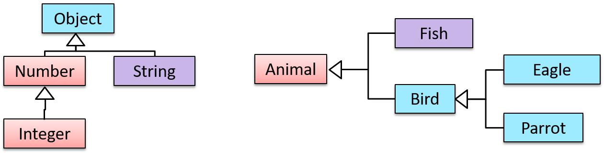
Multiple Inheritance is when a class inherits directly from multiple classes. Multiple inheritance among classes is allowed in some languages (e.g., Python, C++) but not in other languages (e.g., Java, C#).
Example The Honey class inherits from the Food class and the Medicine class because honey can be consumed as a food as well as a medicine (in some oriental medicine practices). Similarly, a Car is a Vehicle, an Asset, and a Liability.
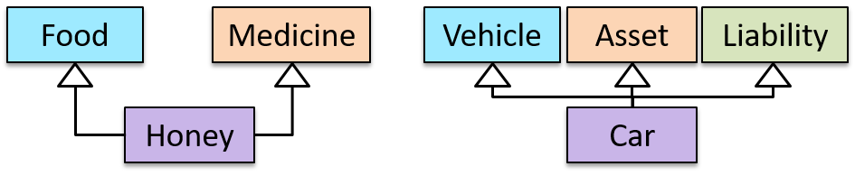
Exercises:
Which statements are correct?
Which of these are correct?
a. Superclass is more general than the subclass.
b. Child class is more specialized than the parent class.
c. A class can inherit behavior from its ancestor classes (ancestor classes = classes above it in the inheritance hierarchy).
d. Code reuse can be one benefit of inheritance.
e. A change to the superclass will not affect its subclasses.
Answer
(a) (b) (c) (d)
Explanation: (e) is incorrect. Because subclasses inherit behavior from the superclass, any changes to the superclass could affect subclasses.
Method overloading is when there are multiple methods with the same name but different type signatures .
Overloading is used to indicate that multiple operations do similar things but take different parameters.
Type signature
Type signature : The type signature of an operation is the type sequence of the parameters. The return type and parameter names are not part of the type signature. However, the parameter order is significant.
Original explanation & examples
Method overloading is when there are multiple methods with the same name but different type signatures. Overloading is used to indicate that multiple operations do similar things but take different parameters.
Type signature: The type signature of an operation is the type sequence of the parameters. The return type and parameter names are not part of the type signature. However, the parameter order is significant.
Example:
Method
Type Signature
int add(int X, int Y)
(int, int)
void add(int A, int B)
(int, int)
void m(int X, double Y)
(int, double)
void m(double X, int Y)
(double, int)
Example In the case below, the calculate method is overloaded because the two methods have the same name but different type signatures (String) and (int).
Method overriding is when a subclass changes the behavior inherited from the parent class
Method overriding is when a subclass changes the behavior inherited from the parent class by re-implementing the method. Overridden methods have the same name, the same type signature, and the same (or a subtype of the) return type.
Original explanation & examples
Method overriding is when a subclass changes the behavior inherited from the parent class by re-implementing the method. Overridden methods have the same name, the same type signature, and the same (or a subtype of the) return type.
Example Consider the following case of EvaluationReport class inheriting the Report class:
Report methods
EvaluationReport methods
Overrides?
print()
print()
Yes
write(String)
write(String)
Yes
read():String
read(int):String
No. Reason: the two methods have different signatures; this is a case of
overloading
(rather than overriding).
Overloading
Paradigms → OOP → Inheritance →
Overloading
Method overloading is when there are multiple methods with the same name but different type signatures. Overloading is used to indicate that multiple operations do similar things but take different parameters.
Type signature: The type signature of an operation is the type sequence of the parameters. The return type and parameter names are not part of the type signature. However, the parameter order is significant.
Example:
Method
Type Signature
int add(int X, int Y)
(int, int)
void add(int A, int B)
(int, int)
void m(int X, double Y)
(int, double)
void m(double X, int Y)
(double, int)
Example In the case below, the calculate method is overloaded because the two methods have the same name but different type signatures (String) and (int).
calculate(String): void
calculate(int): void
Exercises
Which methods override?
Which of these methods override another method? A is the parent class. B inherits A.
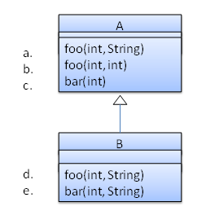
a
b
c
d
e
Answer
d
Explanation: Method overriding requires a method in a child class to use the same method name and same parameter sequence used by one of its ancestors.
A class that is derived from another class is called a subclass
A class that is derived from another class is called a subclass (also a derived class, extended class, or child class). The class from which the subclass is derived is called a superclass (also a base class or a parent class).
A subclass inherits all the members
A subclass inherits all the members (fields, methods, and nested classes) from its superclass. Constructors are not members, so they are not inherited by subclasses, but the constructor of the superclass can be invoked from the subclass.
Every class has one and only one direct superclass ( single inheritance )
Every class has one and only one direct superclass ( single inheritance ) , except the Object class, which has no superclass. In the absence of any other explicit superclass, every class is implicitly a subclass of Object . Classes can be derived from classes that are derived from classes that are derived from classes, and so on, and ultimately derived from the topmost class, Object . Such a class is said to be descended from all the classes in the inheritance chain stretching back to Object . Java does not support multiple inheritance among classes.
The java.lang.Object class defines and implements behavior common to all classes
The java.lang.Object class defines and implements behavior common to all classes —including the ones that you write. In the Java platform, many classes derive directly from Object , other classes derive from some of those classes, and so on, forming a single hierarchy of classes.
The keyword extends indicates that one class inherits from another.
A subclass inherits all the fields and methods of the superclass.
In the example above, MountainBike inherits all the fields and methods of Bicycle and adds the field seatHeight and a method to set it.
If your method overrides one of its superclass's methods, you can invoke the overridden method through the use of the keyword super .
You can also use super to refer to a hidden field (although hiding fields is discouraged).
A subclass constructor can invoke the superclass constructor.
Access level modifiers determine whether other classes can use a particular field or invoke a particular method.
Given below is a simplified version of Java access modifiers, assuming you have not yet started placing your classes in different packages i.e., all classes are placed in the root level. A full explanation of access modifiers is given in a later topic.
There are two levels of access control:
assuming you have not yet started placing your classes in different packages
Access level modifiers determine whether other classes can use a particular field or invoke a particular method. Given below is a simplified version of Java access modifiers, assuming you have not yet started placing your classes in different packages i.e., all classes are placed in the root level. A full explanation of access modifiers is given in a later topic.
There are two levels of access control:
At the class level
At the class level :
public
public : the class is visible to all other classes
no modifier
no modifier : same as public
At the member level
At the member level :
protected
protected : same as public
private
private : the member is not visible to other classes (but can be accessed in its own class)
Original explanation & examples
Given below is an extract from the -- Java Tutorial, with slight adaptations.
A class that is derived from another class is called a subclass (also a derived class, extended class, or child class). The class from which the subclass is derived is called a superclass (also a base class or a parent class).
A subclass inherits all the members (fields, methods, and nested classes) from its superclass. Constructors are not members, so they are not inherited by subclasses, but the constructor of the superclass can be invoked from the subclass.
Every class has one and only one direct superclass (single inheritance), except the Object class, which has no superclass. In the absence of any other explicit superclass, every class is implicitly a subclass of Object. Classes can be derived from classes that are derived from classes that are derived from classes, and so on, and ultimately derived from the topmost class, Object. Such a class is said to be descended from all the classes in the inheritance chain stretching back to Object. Java does not support multiple inheritance among classes.
The java.lang.Object class defines and implements behavior common to all classes—including the ones that you write. In the Java platform, many classes derive directly from Object, other classes derive from some of those classes, and so on, forming a single hierarchy of classes.
The keyword extends indicates that one class inherits from another.
Here is the sample code for a possible implementation of a Bicycle class and a MountainBike class that is a subclass of the Bicycle:
publicclassMountainBikeextendsBicycle{// the MountainBike subclass adds one fieldpublicint seatHeight;
// the MountainBike subclass has one constructorpublicMountainBike(int startHeight, int startSpeed, int startGear){
super(startSpeed, startGear);
seatHeight = startHeight;
}
// the MountainBike subclass adds one methodpublicvoidsetHeight(int newValue){
seatHeight = newValue;
}
}
A subclass inherits all the fields and methods of the superclass. In the example above, MountainBike inherits all the fields and methods of Bicycle and adds the field seatHeight and a method to set it.
Accessing superclass members
If your method overrides one of its superclass's methods, you can invoke the overridden method through the use of the keyword super. You can also use super to refer to a hidden field (although hiding fields is discouraged).
Consider this class, Superclass and a subclass, called Subclass, that overrides printMethod():
publicclassSuperclass{
publicvoidprintMethod(){
System.out.println("Printed in Superclass.");
}
}
publicclassSubclassextendsSuperclass{
// overrides printMethod in SuperclasspublicvoidprintMethod(){
super.printMethod(); System.out.println("Printed in Subclass");
}
publicstaticvoidmain(String[] args){
Subclass s = new Subclass();
s.printMethod();
}
}
Printed in Superclass.
Printed in Subclass
Within Subclass, the simple name printMethod() refers to the one declared in Subclass, which overrides the one in Superclass. So, to refer to printMethod() inherited from Superclass, Subclass must use a qualified name, using super as shown.
Subclass constructors
A subclass constructor can invoke the superclass constructor. In a subclass constructor, the superclass constructor must be invoked -- implicitly or explicitly -- before any statement reads instance state or uses this as a reference value, though fields declared in the subclass may be initialized prior to calling the superclass constructor.
The syntax for calling a superclass constructor is super()(which invokes the no-argument constructor of the superclass) or super(parameters)(to invoke the superclass constructor with a matching parameter list).
The following example illustrates how to use the super keyword to invoke a superclass's constructor. Recall from the Bicycle example that MountainBike is a subclass of Bicycle. Here is the MountainBike (subclass) constructor that calls the superclass constructor and then adds some initialization code of its own (i.e., seatHeight = startHeight;):
publicMountainBike(int startHeight, int startSpeed, int startGear){
super(startSpeed, startGear); seatHeight = startHeight;
}
Note: If a constructor does not explicitly invoke a superclass constructor, the Java compiler automatically inserts a call to the no-argument constructor of the superclass. If the superclass does not have a no-argument constructor, you will get a compile-time error. Object does have such a constructor, so if Object is the only superclass, there is no problem.
Access modifiers (simplified)
Access level modifiers determine whether other classes can use a particular field or invoke a particular method. Given below is a simplified version of Java access modifiers, assuming you have not yet started placing your classes in different packages i.e., all classes are placed in the root level. A full explanation of access modifiers is given in a later topic.
There are two levels of access control:
At the class level:
public: the class is visible to all other classes
no modifier: same as public
At the member level:
public : the member is visible to all other classes
protected: same as public
no modifier: same as public
private: the member is not visible to other classes (but can be accessed in its own class)
Resources:
A very beginner-friendly video about implementing Java inheritance. — Open the original page for this interactive item.
Write a Todo class that inherits from the Task class.
It should have an additional boolean field isDone to indicate whether the todo is done or not done.
It should have a isDone() method to access the isDone field and a setDone(boolean) method to set the isDone field.
Write a Deadline class that inherits from the Todo class that you implemented in the previous step. It should have,
an additional String field by to store the details of when the task is to be done e.g., Jan 25th 5pm
a getBy() method to access the value of the by field, and a corresponding setBy(String) method.
a constructor of the form Deadline(String description, String by)
The expected behavior of the two classes is as follows:
publicclassMain{
publicstaticvoidmain(String[] args){
// create a todo task and print details Todo t = new Todo("Read a good book");
System.out.println(t.getDescription());
System.out.println(t.isDone());
// change todo fields and print again t.setDone(true);
System.out.println(t.isDone());
// create a deadline task and print details Deadline d = new Deadline("Read textbook", "Nov 16");
System.out.println(d.getDescription());
System.out.println(d.isDone());
System.out.println(d.getBy());
// change deadline details and print again d.setDone(true);
d.setBy("Postponed to Nov 18th");
System.out.println(d.isDone());
System.out.println(d.getBy());
}
}
Read a good book
false
true
Read textbook
false
Nov 16
true
Postponed to Nov 18th
Hint
Todo class is given below. You can follow a similar approach for the Deadline class.
Polymorphism allows you to write code targeting superclass objects, use that code on subclass objects, and achieve possibly different results based on the actual class of the object.
Polymorphism allows you to write code targeting superclass objects, use that code on subclass objects, and achieve possibly different results based on the actual class of the object.
Example Assume classes Cat and Dog are both subclasses of the Animal class. You can write code targeting Animal objects and use that code on Cat and Dog objects, achieving possibly different results based on whether it is a Cat object or a Dog object. Some examples:
Declare an array of type Animal and still be able to store Dog and Cat objects in it.
Define a method that takes an Animal object as a parameter and yet be able to pass Dog and Cat objects to it.
Call a method on a Dog or a Cat object as if it is an Animal object (i.e., without knowing whether it is a Dog object or a Cat object) and get a different response from it based on its actual class e.g., call the Animal class's method speak() on object a and get a "Meow" as the return value if a is a Cat object and "Woof" if it is a Dog object.
Polymorphism literally means "ability to take many forms".
Java is a strongly-typed language which means the code works with only the object types that it targets.
strong-typing can lead to unnecessary verbosity
This strong-typing can lead to unnecessary verbosity caused by repetitive similar code that does similar things with different object types.
take advantage of polymorphism to write code that targets a superclass so that it works with any subclass objects.
A better way is to take advantage of polymorphism to write code that targets a superclass so that it works with any subclass objects.
Polymorphic code is better
Polymorphic code is better in several ways:
shorter
It is shorter .
simpler
It is simpler .
flexible
It is more flexible (in the above example, the main method will work even if we add more animal types).
Original explanation & examples
Java is a strongly-typed language which means the code works with only the object types that it targets.
The following PetShelter code keeps a list of Cat objects and makes them speak. The code will not work with any other type, for example, Dog objects.
publicclassPetShelter{
privatestatic Cat[] cats = new Cat[]{
new Cat("Mittens"),
new Cat("Snowball")};
publicstaticvoidmain(String[] args){
for (Cat c: cats){
System.out.println(c.speak());
}
}
}
Mittens: Meow
Snowball: Meow
The Cat class
publicclassCat{
private String name;
publicCat(String name){
this.name = name;
}
public String speak(){
return name + ": Meow";
}
}
This strong-typing can lead to unnecessary verbosity caused by repetitive similar code that does similar things with different object types.
If the PetShelter is to keep both cats and dogs, you'll need two arrays and two loops:
publicclassPetShelter{
privatestatic Cat[] cats = new Cat[]{
new Cat("Mittens"),
new Cat("Snowball")};
privatestatic Dog[] dogs = new Dog[]{
new Dog("Spot")};
publicstaticvoidmain(String[] args){
for (Cat c: cats){
System.out.println(c.speak());
}
for(Dog d: dogs){
System.out.println(d.speak());
}
}
}
Mittens: Meow
Snowball: Meow
Spot: Woof
The Dog class
publicclassDog{
private String name;
publicDog(String name){
this.name = name;
}
public String speak(){
return name + ": Woof";
}
}
A better way is to take advantage of polymorphism to write code that targets a superclass so that it works with any subclass objects.
The PetShelter2 uses one data structure to keep both types of animals and one loop to make them speak. The code targets the Animal superclass (assuming Cat and Dog inherit from the Animal class) instead of repeating the code for each animal type.
publicclassPetShelter2{
privatestatic Animal[] animals = new Animal[]{
new Cat("Mittens"),
new Cat("Snowball"),
new Dog("Spot")};
publicstaticvoidmain(String[] args){
for (Animal a: animals){
System.out.println(a.speak());
}
}
}
Explanation: Because Java supports polymorphism, you can store both Cat and Dog objects in an array of Animal objects. Similarly, you can call the speak method on any Animal object (as done in the loop) and yet get different behavior from Cat objects and Dog objects.
Suggestion: try to add an Animal object (e.g., new Animal("Unnamed")) to the animals array and see what happens.
Polymorphic code is better in several ways:
It is shorter.
It is simpler.
It is more flexible (in the above example, the main method will work even if we add more animal types).
What should be in the Shape class? Start with an empty class and add only what the child classes Circle and Rectangle need the parent class to have. In this case, it only needs an area() method for the child classes to override. The actual behavior of that method is not important (e.g., it can simply return 0) as it will be overridden by the child classes.
Abstract class : A class declared as an abstract class cannot be instantiated, but it can be subclassed.
You can declare a class as an abstract class when it is merely a representation of commonalities among its subclasses
Abstract method
Abstract method : An abstract method is a method signature without a method implementation.
A class that has an abstract method becomes an abstract class
A class that has an abstract method becomes an abstract class because the class definition is incomplete (due to the missing method body) and it is not possible to create objects using an incomplete class definition.
Original explanation & examples
Abstract class: A class declared as an abstract class cannot be instantiated, but it can be subclassed.
You can declare a class as an abstract class when it is merely a representation of commonalities among its subclasses, in which case it does not make sense to instantiate objects of that class. Example The Animal class that exists as a generalization of its subclasses Cat, Dog, Horse, Tiger, etc. can be declared as abstract because it does not make sense to instantiate an Animal object.
Abstract method: An abstract method is a method signature without a method implementation.
Example The move method of the Animal class is likely to be an abstract method as it is not possible to implement a move method at the Animal class level to fit all subclasses because each animal type can move in a different way.
A class that has an abstract method becomes an abstract class because the class definition is incomplete (due to the missing method body) and it is not possible to create objects using an incomplete class definition.
an abstract method is declared with the keyword abstract and given without an implementation
In Java, an abstract method is declared with the keyword abstract and given without an implementation . If a class includes abstract methods, then the class itself must be declared abstract.
An abstract class is declared with the keyword abstract . Abstract classes can be used as reference types but cannot be instantiated.
a class that does not have any abstract methods can be declared as an abstract class.
In Java, even a class that does not have any abstract methods can be declared as an abstract class.
When an abstract class is subclassed, the subclass should provide implementations for all of the abstract methods in its superclass or else the subclass must also be declared abstract.
Original explanation & examples
In Java, an abstract method is declared with the keyword abstract and given without an implementation. If a class includes abstract methods, then the class itself must be declared abstract.
The speak method in this Animal class is abstract. Note how the method signature ends with a semicolon and there is no method body. This makes sense as the implementation of the speak method depends on the type of the animal and it is meaningless to provide a common implementation for all animal types.
As one method of the class is abstract, the class itself is abstract.
An abstract class is declared with the keyword abstract. Abstract classes can be used as reference types but cannot be instantiated.
This Account class has been declared as abstract although it does not have any abstract methods. Attempting to instantiate Account objects will result in a compile error.
publicabstractclassAccount{
int number;
voidclose(){
//... }
}
Account a; OK to use as a type a = new Account(); Compile error!
In Java, even a class that does not have any abstract methods can be declared as an abstract class.
When an abstract class is subclassed, the subclass should provide implementations for all of the abstract methods in its superclass or else the subclass must also be declared abstract.
The Feline class below inherits from the abstract class Animal but it does not provide an implementation for the abstract method speak. As a result, the Feline class needs to be abstract too.
The DomesticCat class inherits the abstract Feline class and provides the implementation for the abstract method speak. As a result, it need not be (but can be) declared as abstract.
Animal a = new Feline("Mittens"); Compile error! Feline is abstract.
Animal a = new DomesticCat("Mittens"); OK. DomesticCat can be instantiated and assigned to a variable of Animal type (the assignment is allowed by polymorphism).
An interface is a behavior specification i.e., a collection of method specifications . If a class implements the interface , it means the class is able to support the behaviors specified by that interface.
A class implementing an interface results in an is-a relationship
A class implementing an interface results in an is-a relationship , just like in class inheritance.
Original explanation & examples
An interface is a behavior specification i.e., a collection of method specifications. If a class implements the interface, it means the class is able to support the behaviors specified by that interface.
There are a number of situations in software engineering when it is important for disparate groups of programmers to agree to a "contract" that spells out how their software interacts. Each group should be able to write their code without any knowledge of how the other group's code is written. Generally speaking, interfaces are such contracts. --Oracle Docs on Java
Example Suppose SalariedStaff is an interface that contains two methods setSalary(int) and getSalary(). AcademicStaff can declare itself as implementing the SalariedStaff interface, which means the AcademicStaff class must implement all the methods specified by the SalariedStaff interface i.e., setSalary(int) and getSalary().
A class implementing an interface results in an is-a relationship, just like in class inheritance.
Example In the example above, AcademicStaffis aSalariedStaff. An AcademicStaff object can be used anywhere a SalariedStaff object is expected
e.g., SalariedStaff ss = new AcademicStaff()
an interface is a reference type, similar to a class, mainly containing method signatures.
In Java, an interface is a reference type, similar to a class, mainly containing method signatures. Defining an interface is similar to creating a new class except it uses the keyword interface in place of class .
Interfaces cannot be instantiated—they can only be implemented by classes
Interfaces cannot be instantiated—they can only be implemented by classes . When an instantiable class implements an interface, indicated by the keyword implements , it provides a method body for each of the methods declared in the interface.
An interface can be used as a type
An interface can be used as a type e.g., DrivableVehicle dv = new CarModelX(); .
Interfaces can inherit from other interfaces
Interfaces can inherit from other interfaces using the extends keyword, similar to a class inheriting from another.
Java allows multiple inheritance among interfaces.
Furthermore, Java allows multiple inheritance among interfaces. A Java interface can inherit multiple other interfaces. A Java class can implement multiple interfaces (and inherit from one class).
A Java class can implement multiple interfaces
Furthermore, Java allows multiple inheritance among interfaces. A Java interface can inherit multiple other interfaces. A Java class can implement multiple interfaces (and inherit from one class).
Interfaces can also contain constants and static methods
Interfaces can also contain constants and static methods .
Original explanation & examples
The text given in this section borrows some explanations and code examples from the -- Java Tutorial.
In Java, an interface is a reference type, similar to a class, mainly containing method signatures. Defining an interface is similar to creating a new class except it uses the keyword interface in place of class.
Here is an interface named DrivableVehicle that defines methods needed to drive a vehicle.
Note that the method signatures have no braces ({ }) and are terminated with a semicolon.
Interfaces cannot be instantiated—they can only be implemented by classes. When an instantiable class implements an interface, indicated by the keyword implements, it provides a method body for each of the methods declared in the interface.
Here is how a class CarModelX can implement the DrivableVehicle interface.
publicclassCarModelXimplementsDrivableVehicle{
@Overridepublicvoidturn(Direction direction){
// implementation }
// implementation of other methods}
An interface can be used as a type e.g., DrivableVehicle dv = new CarModelX();.
Interfaces can inherit from other interfaces using the extends keyword, similar to a class inheriting from another.
Here is an interface named SelfDrivableVehicle that inherits the DrivableVehicle interface.
Note that the method signatures have no braces and are terminated with a semicolon.
Furthermore, Java allows multiple inheritance among interfaces. A Java interface can inherit multiple other interfaces. A Java class can implement multiple interfaces (and inherit from one class).
The design below is allowed by Java. In case you are not familiar with the UML notation used: A solid line with a triangle denotes inheritance, corresponding to extends in Java (e.g., a class extending another class, or an interface extending another interface). A dashed line with a triangle denotes interface implementation, corresponding to implements in Java. The triangle points to the class being inherited or the interface being implemented.
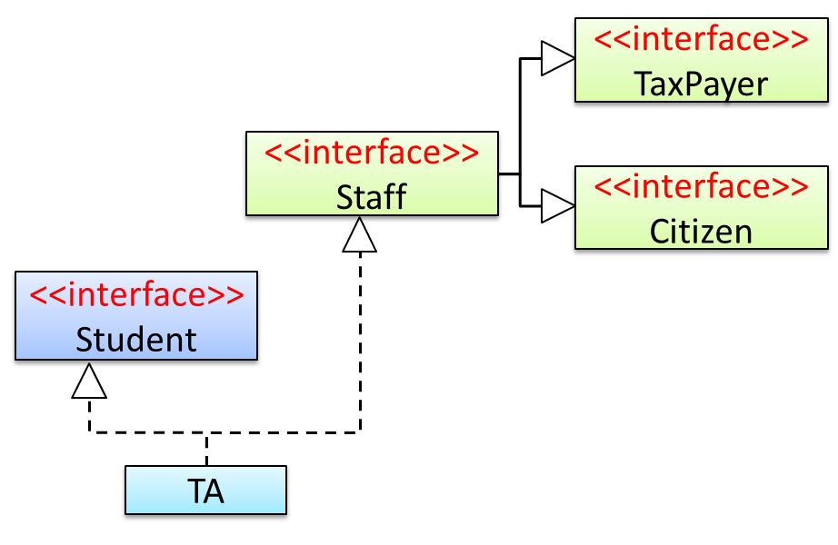
Staff interface inherits (note the solid lines) the interfaces TaxPayer and Citizen.
TA class implements both Student interface and the Staff interface.
Because of point 1 above, TA class has to implement all methods in the interfaces TaxPayer and Citizen.
Because of points 1,2,3, a TAis aStaff, is aTaxPayer and is aCitizen.
Interfaces can also contain
constants
and static methods.
Textbook »
C++ to Java → Miscellaneous Topics →
Constants
Java does not directly support constants. The convention is to use a staticfinal variable where a constant is needed. The static modifier causes the variable to be available without instantiating an object. The final modifier causes the variable to be unchangeable. Java constants are normally declared in ALL CAPS separated by underscores.
Here is an example of a constant named MAX_BALANCE which can be accessed as Account.MAX_BALANCE.
The Main class below passes a list of Printable objects (i.e., objects that implement the Printable interface) to another method for printing.
publicclassMain{
publicstaticvoidprintObjects(Printable[] items){
for (Printable p : items) {
p.print();
}
}
publicstaticvoidmain(String[] args){
Printable[] printableItems = new Printable[]{
new Circle(5),
new Rectangle(3, 4),
new Person("James Cook")};
printObjects(printableItems);
}
}
Circle of area 78
Rectangle of area 12
Person of name James Cook
Classes Shape, Circle, and Rectangle are given below:
Every instance of a subclass is an instance of the superclass, but not vice versa.
As a result, inheritance allows substitutability : the ability to substitute a child class object where a parent class object is expected.
substitutability
Every instance of a subclass is an instance of the superclass, but not vice versa. As a result, inheritance allows substitutability : the ability to substitute a child class object where a parent class object is expected.
Original explanation & examples
Every instance of a subclass is an instance of the superclass, but not vice versa. As a result, inheritance allows substitutability: the ability to substitute a child class object where a parent class object is expected.
Example Consider the Staff hierarchy below.
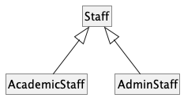
An AcademicStaff is an instance of a Staff, but a Staff is not necessarily an instance of an AcademicStaff. That is, wherever an object of the superclass is expected, it can be substituted by an object of any of its subclasses.
The following code is valid because an AcademicStaff object is substitutable for a Staff object.
Staff staff = new AcademicStaff(); // OK
But the following code is not valid because staff is declared as a Staff type and therefore its value may or may not be of type AcademicStaff, which is the type expected by variable academicStaff.
Staff staff;
...
AcademicStaff academicStaff = staff; // Not OK
Dynamic binding ( aka late binding ): a mechanism where method calls in code are resolved at runtime , rather than at compile time.
Overridden methods are resolved using dynamic binding , and therefore resolve to the implementation in the object's actual type.
Method overriding is when a subclass changes the behavior inherited from the parent class
Method overriding is when a subclass changes the behavior inherited from the parent class by re-implementing the method. Overridden methods have the same name, the same type signature, and the same (or a subtype of the) return type.
Static binding
Static binding (aka early binding): When a method call is resolved at compile time.
In contrast, overloaded methods are resolved using static binding .
Method overloading is when there are multiple methods with the same name but different type signatures .
Overloading is used to indicate that multiple operations do similar things but take different parameters.
Type signature
Type signature : The type signature of an operation is the type sequence of the parameters. The return type and parameter names are not part of the type signature. However, the parameter order is significant.
Original explanation & examples
Dynamic binding (aka late binding): a mechanism where method calls in code are resolved at runtime, rather than at compile time.
Overridden methods
are resolved using dynamic binding, and therefore resolve to the implementation in the object's actual type.
Textbook
Paradigms → OOP → Inheritance →
Overriding
Method overriding is when a subclass changes the behavior inherited from the parent class by re-implementing the method. Overridden methods have the same name, the same type signature, and the same (or a subtype of the) return type.
Example Consider the following case of EvaluationReport class inheriting the Report class:
Report methods
EvaluationReport methods
Overrides?
print()
print()
Yes
write(String)
write(String)
Yes
read():String
read(int):String
No. Reason: the two methods have different signatures; this is a case of
overloading
(rather than overriding).
Exercises
Which methods override?
Which of these methods override another method? A is the parent class. B inherits A.
a
b
c
d
e
Answer
d
Explanation: Method overriding requires a method in a child class to use the same method name and same parameter sequence used by one of its ancestors.
Example Consider the code below. The declared type of s is Staff and it appears as if the adjustSalary(int) operation of the Staff class is invoked.
voidadjustSalary(int byPercent){
for (Staff s: staff) {
s.adjustSalary(byPercent);
}
}
However, at runtime s can receive an object of any subclass of Staff. That means the adjustSalary(int) operation of the actual subclass object will be called. If the subclass does not override that operation, the operation defined in the superclass (in this case, Staff class) will be called.
Static binding (aka early binding): When a method call is resolved at compile time.
In contrast,
overloaded
methods are resolved using static binding.
Textbook
Paradigms → OOP → Inheritance →
Overloading
Method overloading is when there are multiple methods with the same name but different type signatures. Overloading is used to indicate that multiple operations do similar things but take different parameters.
Type signature: The type signature of an operation is the type sequence of the parameters. The return type and parameter names are not part of the type signature. However, the parameter order is significant.
Example:
Method
Type Signature
int add(int X, int Y)
(int, int)
void add(int A, int B)
(int, int)
void m(int X, double Y)
(int, double)
void m(double X, int Y)
(double, int)
Example In the case below, the calculate method is overloaded because the two methods have the same name but different type signatures (String) and (int).
calculate(String): void
calculate(int): void
Example Note how the constructor is overloaded in the class below. The method call new Account() is bound to the first constructor at compile time.
Example Similarly, the calculateGrade method is overloaded in the code below and a method call calculateGrade("A1213232") is bound to the second implementation, at compile time.
Three concepts combine to achieve polymorphism: substitutability, operation overriding, and dynamic binding .
Substitutability:
Because of substitutability, you can write code that expects objects of a parent class and yet use that code with objects of child classes. That is how polymorphism is able to treat objects of different types as one type .
Overriding:
To get polymorphic behavior from an operation, the operation in the superclass needs to be overridden in each of the subclasses. That is how overriding allows objects of different subclasses to display different behaviors in response to the same method call .
Dynamic binding
Dynamic binding : Calls to overridden methods are bound dynamically to the implementation of the actual object's class at runtime. That is how the polymorphic code can call the method of the parent class and yet execute the implementation of the child class.
Original explanation & examples
Three concepts combine to achieve polymorphism: substitutability, operation overriding, and dynamic binding.
Substitutability: Because of substitutability, you can write code that expects objects of a parent class and yet use that code with objects of child classes. That is how polymorphism is able to treat objects of different types as one type.
Overriding: To get polymorphic behavior from an operation, the operation in the superclass needs to be overridden in each of the subclasses. That is how overriding allows objects of different subclasses to display different behaviors in response to the same method call.
Dynamic binding: Calls to overridden methods are bound dynamically to the implementation of the actual object's class at runtime. That is how the polymorphic code can call the method of the parent class and yet execute the implementation of the child class.
Exercises:
Concepts related to polymorphism
Which one of these is least related to how OO programs achieve polymorphism?
Answer
(c)
Explanation: Operation overriding is the one that is related, not operation overloading.
A collection — sometimes called a container — is simply an object that groups multiple elements into a single unit.
Collections are used to store, retrieve, manipulate, and communicate aggregate data.
The collections framework is a unified architecture for representing and manipulating collections.
It contains the following:
Interfaces
Implementations
Algorithms
A well-known example of collections frameworks is the C++ Standard Template Library (STL)
A well-known example of collections frameworks is the C++ Standard Template Library (STL) . Although both are collections frameworks and the syntax looks similar, note that there are important philosophical and implementation differences between the two.
The following list describes the core collection interfaces:
Collection
Set
List
Queue
Map
Original explanation & examples
This section uses extracts from the -- Java Tutorial, with some adaptations.
A collection — sometimes called a container — is simply an object that groups multiple elements into a single unit. Collections are used to store, retrieve, manipulate, and communicate aggregate data.
Typically, collections represent data items that form a natural group, such as a poker hand (a collection of cards), a mail folder (a collection of letters), or a telephone directory (a mapping of names to phone numbers).
The collections framework is a unified architecture for representing and manipulating collections. It contains the following:
Interfaces: These are abstract data types that represent collections. Interfaces allow collections to be manipulated independently of the details of their representation. Example The List<E> interface can be used to manipulate list-like collections which may be implemented in different ways such as ArrayList<E> or LinkedList<E>.
Implementations: These are the concrete implementations of the collection interfaces. In essence, they are reusable data structures. Example The ArrayList<E> class implements the List<E> interface while the HashMap<K, V> class implements the Map<K, V> interface.
Algorithms: These are the methods that perform useful computations, such as searching and sorting, on objects that implement collection interfaces. The algorithms are said to be polymorphic: that is, the same method can be used on many different implementations of the appropriate collection interface. Example The sort(List<E>) method can sort a collection that implements the List<E> interface.
A well-known example of collections frameworks is the C++ Standard Template Library (STL). Although both are collections frameworks and the syntax looks similar, note that there are important philosophical and implementation differences between the two.
The following list describes the core collection interfaces:
Collection — the root of the collection hierarchy. A collection represents a group of objects known as its elements. The Collection interface is the least common denominator that all collections implement and is used to pass collections around and to manipulate them when maximum generality is desired. Some types of collections allow duplicate elements, and others do not. Some are ordered and others are unordered. The Java platform doesn't provide any direct implementations of this interface but provides implementations of more specific subinterfaces, such as Set and List. Also see the Collection API.
Set — a collection that cannot contain duplicate elements. This interface models the mathematical set abstraction and is used to represent sets, such as the cards comprising a poker hand, the courses making up a student's schedule, or the processes running on a machine. Also see the Set API.
List — an ordered collection (sometimes called a sequence). Lists can contain duplicate elements. The user of a List generally has precise control over where in the list each element is inserted and can access elements by their integer index (position). Also see the List API.
Queue — a collection used to hold multiple elements prior to processing. Besides basic Collection operations, a Queue provides additional insertion, extraction, and inspection operations. Also see the Queue API.
Map — an object that maps keys to values. A Map cannot contain duplicate keys; each key can map to at most one value. Also see the Map API.
The ArrayList class is a resizable-array implementation of the List interface. Unlike a normal array, an ArrayList can grow in size as you add more items to it. The example below illustrates some of the useful methods of the ArrayList class using an ArrayList of String objects.
import java.util.ArrayList;
publicclassArrayListDemo{
publicstaticvoidmain(String args[]){
ArrayList<String> items = new ArrayList<>();
System.out.println("Before adding any items:" + items);
items.add("Apple");
items.add("Box");
items.add("Cup");
items.add("Dart");
print("After adding four items: " + items);
items.remove("Box"); // remove item "Box" print("After removing Box: " + items);
items.add(1, "Banana"); // add "Banana" at index 1 print("After adding Banana: " + items);
items.add("Egg"); // add "Egg", will be added to the end items.add("Cup"); // add another "Cup" print("After adding Egg: " + items);
print("Number of items: " + items.size());
print("Index of Cup: " + items.indexOf("Cup"));
print("Index of Zebra: " + items.indexOf("Zebra"));
print("Item at index 3 is: " + items.get(2));
print("Do we have a Box?: " + items.contains("Box"));
print("Do we have an Apple?: " + items.contains("Apple"));
items.clear();
print("After clearing: " + items);
}
privatestaticvoidprint(String text){
System.out.println(text);
}
}
Before adding any items:[]
After adding four items: [Apple, Box, Cup, Dart]
After removing Box: [Apple, Cup, Dart]
After adding Banana: [Apple, Banana, Cup, Dart]
After adding Egg: [Apple, Banana, Cup, Dart, Egg, Cup]
Number of items: 6
Index of Cup: 2
Index of Zebra: -1
Item at index 3 is: Cup
Do we have a Box?: false
Do we have an Apple?: true
After clearing: []
Add the missing methods to the class given below so that it produces the output given.
Use an ArrayList to store the numbers.
publicclassMain{
//TODO: add your methods herepublicstaticvoidmain(String[] args){
System.out.println("Adding numbers to the list");
addNumber(3);
addNumber(8);
addNumber(24);
System.out.println("The total is: " + getTotal());
System.out.println("8 in the list : " + isFound(8) );
System.out.println("5 in the list : " + isFound(5) );
removeNumber(8);
System.out.println("The total is: " + getTotal());
}
}
Adding numbers to the list
[3]
[3, 8]
[3, 8, 24]
The total is: 35
8 in the list : true
5 in the list : false
[3, 24]
The total is: 27
HashMap is an implementation of the Map interface. It allows you to store a collection of key-value pairs. The example below illustrates how to use a HashMap<String, Point> to maintain a list of coordinates and their identifiers e.g., the identifier x1 is used to identify the point 0,0 where x1 is the key and 0,0 is the value.
import java.awt.Point;
import java.util.HashMap;
import java.util.Map;
publicclassHashMapDemo{
publicstaticvoidmain(String[] args){
HashMap<String, Point> points = new HashMap<>();
// put the key-value pairs in the HashMap points.put("x1", new Point(0, 0));
points.put("x2", new Point(0, 5));
points.put("x3", new Point(5, 5));
points.put("x4", new Point(5, 0));
// retrieve a value for a key using the get method print("Coordinates of x1: " + pointAsString(points.get("x1")));
// check if a key or a value exists print("Key x1 exists? " + points.containsKey("x1"));
print("Key y1 exists? " + points.containsKey("y1"));
print("Value (0,0) exists? " + points.containsValue(new Point(0, 0)));
print("Value (1,2) exists? " + points.containsValue(new Point(1, 2)));
// update the value of a key to a new value points.put("x1", new Point(-1,-1));
// iterate over the entriesfor (Map.Entry<String, Point> entry : points.entrySet()) {
print(entry.getKey() + " = " + pointAsString(entry.getValue()));
}
print("Number of keys: " + points.size());
points.clear();
print("Number of keys after clearing: " + points.size());
}
publicstatic String pointAsString(Point p){
return"[" + p.x + "," + p.y + "]";
}
publicstaticvoidprint(String s){
System.out.println(s);
}
}
Coordinates of x1: [0,0]
Key x1 exists? true
Key y1 exists? false
Value (0,0) exists? true
Value (1,2) exists? false
x1 = [-1,-1]
x2 = [0,5]
x3 = [5,5]
x4 = [5,0]
Number of keys: 4
Number of keys after clearing: 0
The class given below keeps track of how many people sign up to attend an event on each day of the week. Add the missing methods so that it produces the output given.
Use a HashMap to store the number of entries for each day.
publicclassMain{
privatestatic HashMap<String, Integer> roster = new HashMap<>();
//TODO: add your methods herepublicstaticvoidmain(String[] args){
addToRoster("Monday"); // i.e., one person signed up for Monday addToRoster("Wednesday"); // i.e., one person signed up for Wednesday addToRoster("Wednesday"); // i.e., another person signed up for Wednesday addToRoster("Friday");
addToRoster("Monday");
printRoster();
}
}
Well-written applications include error-handling code that allows them to recover gracefully from unexpected errors. When an error occurs, the application may need to request user intervention, or it may be able to recover on its own. In extreme cases, the application may log the user off or shut down the system. -- Microsoft
Exceptions are used to deal with 'unusual' but not entirely unexpected situations
Exceptions are used to deal with 'unusual' but not entirely unexpected situations that the program might encounter at runtime.
Exception
Exception :
Original explanation & examples
Exceptions are used to deal with 'unusual' but not entirely unexpected situations that the program might encounter at runtime.
Exception:
The term exception is shorthand for the phrase "exceptional event." An exception is an event, which occurs during the execution of a program, that disrupts the normal flow of the program's instructions. –- Java Tutorial (Oracle Inc.)
Example Situations in which a program might raise an exception:
A network connection encounters a timeout due to a slow server.
The code tries to read a file from the hard disk but the file is corrupted and cannot be read.
There are three basic categories of exceptions in Java:
Checked exceptions : exceptional conditions that a well-written application should anticipate and recover from.
All exceptions are checked exceptions, except for Error , RuntimeException , and their subclasses.
Errors : exceptional conditions that are external to the application, and that the application usually cannot anticipate or recover from.
Errors are those exceptions indicated by Error and its subclasses.
Runtime exceptions : conditions that are internal to the application, and that the application usually cannot anticipate or recover from.
Runtime exceptions are those indicated by RuntimeException and its subclasses. These usually indicate programming bugs, such as logic errors or improper use of an API.
Errors and runtime exceptions are collectively known as unchecked exceptions .
Original explanation & examples
Given below is an extract from the -- Java Tutorial, with some adaptations.
There are three basic categories of exceptions in Java:
Checked exceptions: exceptional conditions that a well-written application should anticipate and recover from. All exceptions are checked exceptions, except for Error, RuntimeException, and their subclasses.
Suppose an application prompts a user for an input file name, then opens the file by passing the name to the constructor for java.io.FileReader. Normally, the user provides the name of an existing, readable file, so the construction of the FileReader object succeeds, and the execution of the application proceeds normally. But sometimes the user supplies the name of a nonexistent file, and the constructor throws java.io.FileNotFoundException. A well-written program will catch this exception and notify the user of the mistake, possibly prompting for a corrected file name.
Errors: exceptional conditions that are external to the application, and that the application usually cannot anticipate or recover from. Errors are those exceptions indicated by Error and its subclasses.
Suppose that an application successfully opens a file for input, but is unable to read the file because of a hardware or system malfunction. The unsuccessful read will throw java.io.IOError. An application might choose to catch this exception, in order to notify the user of the problem — but it also might make sense for the program to print a stack trace and exit.
Runtime exceptions: conditions that are internal to the application, and that the application usually cannot anticipate or recover from. Runtime exceptions are those indicated by RuntimeException and its subclasses. These usually indicate programming bugs, such as logic errors or improper use of an API.
Consider the application described previously that passes a file name to the constructor for FileReader. If a logic error causes a null to be passed to the constructor, the constructor will throw NullPointerException. The application can catch this exception, but it probably makes more sense to eliminate the bug that caused the exception to occur.
Errors and runtime exceptions are collectively known as unchecked exceptions.
Most languages allow code that encountered an "exceptional" situation to encapsulate details of the situation in an Exception object and throw or raise that object so that another piece of code can catch it and deal with it.
This is especially useful when the code that encountered the unusual situation does not know how to deal with it.
The excerpt below from the -- Java Tutorial (with slight adaptations) explains how exceptions are typically handled.
When an error occurs at some point in the execution, the code being executed creates an exception object and hands it off to the runtime system.
The exception object contains information about the error, including its type and the state of the program when the error occurred. Creating an exception object and handing it to the runtime system is called throwing an exception.
After a method throws an exception, the runtime system attempts to find something to handle it in the call stack .
The runtime system searches the call stack for a method that contains a block of code that can handle the exception. This block of code is called an exception handler . The search begins with the method in which the error occurred and proceeds through the call stack in the reverse order in which the methods were called. When an appropriate handler is found, the runtime system passes the exception to the handler. An exception handler is considered appropriate if the type of the exception object thrown matches the type that can be handled by the handler.
exception handler
After a method throws an exception, the runtime system attempts to find something to handle it in the call stack . The runtime system searches the call stack for a method that contains a block of code that can handle the exception. This block of code is called an exception handler . The search begins with the method in which the error occurred and proceeds through the call stack in the reverse order in which the methods were called. When an appropriate handler is found, the runtime system passes the exception to the handler. An exception handler is considered appropriate if the type of the exception object thrown matches the type that can be handled by the handler.
The exception handler chosen is said to catch the exception.
If the runtime system exhaustively searches all the methods on the call stack without finding an appropriate exception handler, the program terminates.
Original explanation & examples
Most languages allow code that encountered an "exceptional" situation to encapsulate details of the situation in an Exception object and throw or raise that object so that another piece of code can catch it and deal with it. This is especially useful when the code that encountered the unusual situation does not know how to deal with it.
The excerpt below from the -- Java Tutorial (with slight adaptations) explains how exceptions are typically handled.
When an error occurs at some point in the execution, the code being executed creates an exception object and hands it off to the runtime system. The exception object contains information about the error, including its type and the state of the program when the error occurred. Creating an exception object and handing it to the runtime system is called throwing an exception.
After a method throws an exception, the runtime system attempts to find something to handle it in the call stack. The runtime system searches the call stack for a method that contains a block of code that can handle the exception. This block of code is called an exception handler. The search begins with the method in which the error occurred and proceeds through the call stack in the reverse order in which the methods were called. When an appropriate handler is found, the runtime system passes the exception to the handler. An exception handler is considered appropriate if the type of the exception object thrown matches the type that can be handled by the handler.
The exception handler chosen is said to catch the exception. If the runtime system exhaustively searches all the methods on the call stack without finding an appropriate exception handler, the program terminates.
Advantages of handling exceptions this way:
The ability to propagate error information through the call stack.
The separation of code that deals with 'unusual' situations from the code that does the 'usual' work.
Exercises:
Benefits of exceptions
Which are the benefits of exceptions?
a. Exceptions allow us to separate normal code from error handling code.
b. Exceptions can prevent problems that happen in the environment.
c. Exceptions allow us to handle in one location an error raised in another location.
Answer
(a) (c)
Explanation: Exceptions cannot prevent problems in the environment. They can only be used to handle and recover from such problems.
A program can catch exceptions by using a combination of try and catch blocks.
The try block identifies a block of code in which an exception can occur.
The catch block identifies a block of code, known as an exception handler, that can handle a particular type of exception.
use a finally block to specify code that is guaranteed to execute whether or not an exception occurs.
You can use a finally block to specify code that is guaranteed to execute whether or not an exception occurs. This is the right place to close files, recover resources, and otherwise clean up after the code enclosed in the try block.
The writeList() method below has a finally block:
You can use the throw statement to throw an exception.
The throw statement requires a throwable object as the argument.
Checked exceptions are subject to the Catch or Specify Requirement
In Java, Checked exceptions are subject to the Catch or Specify Requirement : code that might throw checked exceptions must be enclosed by either of the following:
A try statement that catches the exception. The try must provide a handler for the exception.
A method that specifies that it can throw the exception. The method must provide a throws clause that lists the exception.
Java comes with a collection of built-in exception classes
Java comes with a collection of built-in exception classes that you can use. When they are not enough, it is possible to create your own exception classes .
it is possible to create your own exception classes
Java comes with a collection of built-in exception classes that you can use. When they are not enough, it is possible to create your own exception classes .
Original explanation & examples
The content below uses extracts from the -- Java Tutorial, with some adaptations.
A program can catch exceptions by using a combination of try and catch blocks.
The try block identifies a block of code in which an exception can occur.
The catch block identifies a block of code, known as an exception handler, that can handle a particular type of exception.
The writeList() method below calls a method process() that can cause two types of exceptions. It uses a try-catch construct to deal with each exception.
starting method starting process finishing process finishing method
starting method starting process finishing process caught IOE finishing method
starting method starting process finishing process caught IOOBE finishing method
You can use a finally block to specify code that is guaranteed to execute whether or not an exception occurs. This is the right place to close files, recover resources, and otherwise clean up after the code enclosed in the try block.
starting method starting process finishing process cleaning up finishing method
starting method starting process finishing process caught IOE cleaning up finishing method
starting method starting process finishing process caught IOOBE cleaning up finishing method
The try statement should contain at least one catch block or a finally block and may have multiple catch blocks.
The class of the exception object indicates the type of exception thrown. The exception object can contain further information about the error, including an error message.
You can use the throw statement to throw an exception. The throw statement requires a throwable object as the argument.
Here's an example of a throw statement.
if (size == 0) {
thrownew EmptyStackException();
}
In Java, Checked exceptions are subject to the Catch or Specify Requirement: code that might throw checked exceptions must be enclosed by either of the following:
A try statement that catches the exception. The try must provide a handler for the exception.
A method that specifies that it can throw the exception. The method must provide a throws clause that lists the exception.
Unchecked exceptions are not required to follow the Catch or Specify Requirement, but you can apply the requirement to them too.
Here's an example of a method specifying that it throws certain checked exceptions:
Java comes with a collection of built-in exception classes that you can use. When they are not enough, it is possible to create your own exception classes.
Update the code of printArea to print an error message if WIDTH and/or HEIGHT are not numbers e.g., "Ax4" calculateArea will throw the unchecked exception NumberFormatException if the code tries to parse a non-number as an integer.
Update the code of printArea to print an error message if the descriptor is missing WIDTH and/or HEIGHTe.g., "x4" calculateArea will throw the unchecked exception IndexOutOfBoundsException if one or both dimensions are missing.
Update the code of calculateArea to throw the checked exception IllegalShapeException if there are more than 2 dimensions e.g., "5x4x3" and update printArea to print an error message for those cases. Here is the code for the IllegalShapeException.java
publicclassIllegalShapeExceptionextendsException{
//no other code needed}
Here is the expected behavior after you have done the above changes:
Introduction › Software Engineering: Then, Now, and Next
Recall the key point, then reveal.
Software engineering
Simply put, software engineering turns human needs into dependable software while dealing with real-world limits.
These limits include time, money, available people, and incomplete information. Software engineering includes programming, but it also covers deciding what to build, checking that it works, and keeping it useful as needs change. To understand the field, it helps to know how it began, how AI is changing it, and where it may go next.
The term software engineering became well known during the software crisis of the late 1960s.
Many early programs were written by one person and were small enough for that person to understand fully. This approach stopped working as software became larger and more important. Projects were late, cost too much, failed after release, or were never finished. These problems became known as the software crisis . In 1968, a NATO conference used the title software engineering to express a hope: building software could become as systematic as other engineering fields. Computers have changed greatly since 1968, but software projects still face late schedules, rising costs, and systems that break easily.
The joys of software engineering still attract people to the field.
The Mythical Man-Month by Frederick P. Brooks describes several of them. Engineers can enjoy building things that help other people, solving problems that feel like puzzles, and turning ideas into working software without needing a factory or raw materials. They also keep learning because the field is always changing.
The woes of software engineering also remain.
Brooks listed several. Programs must be precise because computers follow instructions, not intentions. Reviews, tests, and fault-tolerant designs help us find or handle the mistakes that will occur. Engineers also depend on people, requirements, and code they do not control. Testing and debugging take careful work, and the last part of a project often costs the most. Products and the technologies used to build them can quickly become outdated. Even so, Brooks concluded that for many people, "the joys far outweigh the woes."
In 1986, Brooks made a famous prediction: no single breakthrough -- no silver bullet -- would transform software development within ten years.
In No Silver Bullet , he divided the difficulty of building software into two types. Accidental complexity comes from imperfect tools. Essential complexity comes from the problem being solved. Brooks argued that essential complexity made up most of the remaining work. Therefore, no single new method or tool was likely to make software development ten times more productive, reliable, or simple. He considered several possible breakthroughs, including AI, but rejected them all. His prediction remained true for decades. Then large language models learned to write code. Could they be the silver bullet that Brooks thought was unlikely?
Accidental complexity
In 1986, Brooks made a famous prediction: no single breakthrough -- no silver bullet -- would transform software development within ten years. In No Silver Bullet , he divided the difficulty of building software into two types. Accidental complexity comes from imperfect tools. Essential complexity comes from the problem being solved. Brooks argued that essential complexity made up most of the remaining work. Therefore, no single new method or tool was likely to make software development ten times more productive, reliable, or simple. He considered several possible breakthroughs, including AI, but rejected them all. His prediction remained true for decades. Then large language models learned to write code. Could they be the silver bullet that Brooks thought was unlikely?
Essential complexity
In 1986, Brooks made a famous prediction: no single breakthrough -- no silver bullet -- would transform software development within ten years. In No Silver Bullet , he divided the difficulty of building software into two types. Accidental complexity comes from imperfect tools. Essential complexity comes from the problem being solved. Brooks argued that essential complexity made up most of the remaining work. Therefore, no single new method or tool was likely to make software development ten times more productive, reliable, or simple. He considered several possible breakthroughs, including AI, but rejected them all. His prediction remained true for decades. Then large language models learned to write code. Could they be the silver bullet that Brooks thought was unlikely?
Then large language models learned to write code.
In 1986, Brooks made a famous prediction: no single breakthrough -- no silver bullet -- would transform software development within ten years. In No Silver Bullet , he divided the difficulty of building software into two types. Accidental complexity comes from imperfect tools. Essential complexity comes from the problem being solved. Brooks argued that essential complexity made up most of the remaining work. Therefore, no single new method or tool was likely to make software development ten times more productive, reliable, or simple. He considered several possible breakthroughs, including AI, but rejected them all. His prediction remained true for decades. Then large language models learned to write code. Could they be the silver bullet that Brooks thought was unlikely?
Software engineering covers the whole life of a system, not only writing its code.
Engineers study user needs, design and build the system, test and review it, deploy and secure it, fix failures, and improve it over time. They repeat these activities as needed and work in teams rather than alone. Success is measured by the value delivered, not the amount of code written. Practices such as agile processes, DevOps, and continuous delivery help teams manage this work. The SWEBOK guide gives an overview of the field.
AI now helps with nearly all of these activities.
Within a few years, AI coding tools became a normal part of many developers' work. These tools can do much more than complete lines of code. They can explore an unfamiliar codebase, generate and change code, suggest tests, diagnose failures, review changes, and draft documentation. In agentic mode, an AI tool can receive a goal written in natural language, edit several files, run tests, and prepare the changes for a human to review. Accepting generated code without checking it carefully is often called vibe coding .
However, generating code faster does not automatically produce better software.
In surveys, developers' most common frustration is AI output that is almost right, but not quite . Finding a small mistake in code that looks correct can require more skill than writing the code. One randomized study found that experienced developers worked more slowly with AI even though they believed they had worked faster. A later study of newer agentic tools found some improvement in speed, but the study could not show clearly how large the improvement was. In short, the benefit depends on the task, codebase, tool, and user's skill. Our impressions alone do not measure that benefit well.
The clearest finding so far is that AI amplifies both the strengths and weaknesses of the engineering process around it.
Research involving thousands of professionals supports this view. A team with clear goals, good tests, effective reviews, and fast feedback can turn faster code generation into useful results sooner. A team without these practices may simply create defects sooner. In Brooks' terms, AI may be our strongest tool yet for reducing accidental complexity. It also helps with essential work, such as exploring requirements and drafting designs. However, humans still decide what to build and whether it has been built well. Therefore, AI makes software engineering fundamentals more important, not less.
AI makes software engineering fundamentals more important, not less.
The clearest finding so far is that AI amplifies both the strengths and weaknesses of the engineering process around it. Research involving thousands of professionals supports this view. A team with clear goals, good tests, effective reviews, and fast feedback can turn faster code generation into useful results sooner. A team without these practices may simply create defects sooner. In Brooks' terms, AI may be our strongest tool yet for reducing accidental complexity. It also helps with essential work, such as exploring requirements and drafting designs. However, humans still decide what to build and whether it has been built well. Therefore, AI makes software engineering fundamentals more important, not less.
Engineers are also building more software that uses AI as part of the system.
Such systems bring their own concerns, including data quality, unpredictable output, evaluation, privacy, algorithmic bias, and monitoring.
Developers are giving AI larger pieces of work: first lines of code, then whole tasks, and perhaps soon larger parts of a project.
In controlled tests, AI agents can complete increasingly long tasks . However, real projects that last many years are more complicated than such tests. Giving instructions through natural language, examples, and tests may become as important as writing code by hand.
One possible next step is AI-native software engineering : designing the workflow for ongoing collaboration between humans and AI.
This approach goes further than adding an AI assistant to today's process. In AI-assisted software engineering , AI works inside a process directed by humans. In agentic software engineering , humans give AI tasks with several steps. In AI-native engineering, teams redesign the process itself. In this possible future, sometimes called SE 3.0 , engineers record goals, constraints, designs, and acceptance criteria in forms that AI agents can use. Agents plan changes, write code, run tests, and review one another's work. Humans set the direction, make difficult choices, and decide what is safe to release. Requirements, tests, architecture records, and security controls will then matter more , not less. They set the limits within which the agents work.
AI-assisted software engineering
One possible next step is AI-native software engineering : designing the workflow for ongoing collaboration between humans and AI. This approach goes further than adding an AI assistant to today's process. In AI-assisted software engineering , AI works inside a process directed by humans. In agentic software engineering , humans give AI tasks with several steps. In AI-native engineering, teams redesign the process itself. In this possible future, sometimes called SE 3.0 , engineers record goals, constraints, designs, and acceptance criteria in forms that AI agents can use. Agents plan changes, write code, run tests, and review one another's work. Humans set the direction, make difficult choices, and decide what is safe to release. Requirements, tests, architecture records, and security controls will then matter more , not less. They set the limits within which the agents work.
agentic software engineering
One possible next step is AI-native software engineering : designing the workflow for ongoing collaboration between humans and AI. This approach goes further than adding an AI assistant to today's process. In AI-assisted software engineering , AI works inside a process directed by humans. In agentic software engineering , humans give AI tasks with several steps. In AI-native engineering, teams redesign the process itself. In this possible future, sometimes called SE 3.0 , engineers record goals, constraints, designs, and acceptance criteria in forms that AI agents can use. Agents plan changes, write code, run tests, and review one another's work. Humans set the direction, make difficult choices, and decide what is safe to release. Requirements, tests, architecture records, and security controls will then matter more , not less. They set the limits within which the agents work.
Experts disagree about how far this change will go, so evaluate their predictions carefully.
Some predict the end of programming , with most software requested in natural language and generated when needed. Others point out that benchmarks leave out much of real software work, such as unclear goals, knowledge that has not been written down, and long-term maintenance. They also argue that a code change that passes its tests is not necessarily part of a dependable system. Checking whether AI evaluations reflect real software work is itself a software engineering problem.
As it becomes easier to give implementation work to AI, deciding, designing, checking, and taking responsibility become more valuable.
Someone must understand the users and the subject area. Someone must decide what should and should not be built, divide the work into clear parts, design a system that can be maintained, spot mistakes in code that looks correct, combine human and AI work, and take responsibility for the released system. AI can help with every one of these activities, but it cannot take responsibility for the result.
Engineers must understand the work before they can direct, evaluate, or fix it. Therefore, software engineering foundations matter more than ever.
The world still needs many software engineers, but the skills they use may change. They may spend less time writing code by hand and more time directing, evaluating, and taking responsibility for it.
Software engineering may now be going through its biggest change since 1968, but its future is still unclear.
The rewards Brooks described remain. Some old difficulties may be becoming smaller, while new ones appear. We do not yet know whether AI will be the silver bullet that Brooks thought was unlikely, or simply a powerful tool that amplifies both the strengths and weaknesses of software teams.
📖 The Mythical Man-Month: Essays on Software Engineering
Original explanation & examples
Software engineering is the application of a systematic, disciplined, quantifiable approach to the development, operation, and maintenance of software. -- IEEE Standard Glossary of Software Engineering Terminology
Simply put, software engineering turns human needs into dependable software while dealing with real-world limits. These limits include time, money, available people, and incomplete information. Software engineering includes programming, but it also covers deciding what to build, checking that it works, and keeping it useful as needs change. To understand the field, it helps to know how it began, how AI is changing it, and where it may go next.
Then: born of a crisis
The term software engineering became well known during the software crisis of the late 1960s. Many early programs were written by one person and were small enough for that person to understand fully. This approach stopped working as software became larger and more important. Projects were late, cost too much, failed after release, or were never finished. These problems became known as the software crisis. In 1968, a NATO conference used the title software engineering to express a hope: building software could become as systematic as other engineering fields. Computers have changed greatly since 1968, but software projects still face late schedules, rising costs, and systems that break easily.
The joys of software engineering still attract people to the field.
The Mythical Man-Month by Frederick P. Brooks
describes several of them. Engineers can enjoy building things that help other people, solving problems that feel like puzzles, and turning ideas into working software without needing a factory or raw materials. They also keep learning because the field is always changing.
The woes of software engineering also remain. Brooks listed several. Programs must be precise because computers follow instructions, not intentions. Reviews, tests, and fault-tolerant designs help us find or handle the mistakes that will occur. Engineers also depend on people, requirements, and code they do not control. Testing and debugging take careful work, and the last part of a project often costs the most. Products and the technologies used to build them can quickly become outdated. Even so, Brooks concluded that for many people, "the joys far outweigh the woes."
In 1986, Brooks made a famous prediction: no single breakthrough -- no silver bullet -- would transform software development within ten years. In No Silver Bullet, he divided the difficulty of building software into two types. Accidental complexity comes from imperfect tools. Essential complexity comes from the problem being solved. Brooks argued that essential complexity made up most of the remaining work. Therefore, no single new method or tool was likely to make software development ten times more productive, reliable, or simple. He considered several possible breakthroughs, including AI, but rejected them all. His prediction remained true for decades. Then large language models learned to write code. Could they be the silver bullet that Brooks thought was unlikely?
Now: the AI inflection
Software engineering covers the whole life of a system, not only writing its code. Engineers study user needs, design and build the system, test and review it, deploy and secure it, fix failures, and improve it over time. They repeat these activities as needed and work in teams rather than alone. Success is measured by the value delivered, not the amount of code written. Practices such as agile processes, DevOps, and continuous delivery help teams manage this work. The SWEBOK guide gives an overview of the field.
AI now helps with nearly all of these activities. Within a few years, AI coding tools became a normal part of many developers' work. These tools can do much more than complete lines of code. They can explore an unfamiliar codebase, generate and change code, suggest tests, diagnose failures, review changes, and draft documentation. In agentic mode, an AI tool can receive a goal written in natural language, edit several files, run tests, and prepare the changes for a human to review. Accepting generated code without checking it carefully is often called vibe coding.
However, generating code faster does not automatically produce better software. In surveys, developers' most common frustration is AI output that is almost right, but not quite. Finding a small mistake in code that looks correct can require more skill than writing the code. One randomized study found that experienced developers worked more slowly with AI even though they believed they had worked faster. A later study of newer agentic tools found some improvement in speed, but the study could not show clearly how large the improvement was. In short, the benefit depends on the task, codebase, tool, and user's skill. Our impressions alone do not measure that benefit well.
The clearest finding so far is that AI amplifies both the strengths and weaknesses of the engineering process around it.Research involving thousands of professionals supports this view. A team with clear goals, good tests, effective reviews, and fast feedback can turn faster code generation into useful results sooner. A team without these practices may simply create defects sooner. In Brooks' terms, AI may be our strongest tool yet for reducing accidental complexity. It also helps with essential work, such as exploring requirements and drafting designs. However, humans still decide what to build and whether it has been built well. Therefore, AI makes software engineering fundamentals more important, not less.
Engineers are also building more software that uses AI as part of the system. Such systems bring their own concerns, including data quality, unpredictable output, evaluation, privacy, algorithmic bias, and monitoring.
Next: the evolving engineer
Developers are giving AI larger pieces of work: first lines of code, then whole tasks, and perhaps soon larger parts of a project. In controlled tests, AI agents can complete increasingly long tasks. However, real projects that last many years are more complicated than such tests. Giving instructions through natural language, examples, and tests may become as important as writing code by hand.
One possible next step is AI-native software engineering: designing the workflow for ongoing collaboration between humans and AI. This approach goes further than adding an AI assistant to today's process. In AI-assisted software engineering, AI works inside a process directed by humans. In agentic software engineering, humans give AI tasks with several steps. In AI-native engineering, teams redesign the process itself. In this possible future, sometimes called SE 3.0, engineers record goals, constraints, designs, and acceptance criteria in forms that AI agents can use. Agents plan changes, write code, run tests, and review one another's work. Humans set the direction, make difficult choices, and decide what is safe to release. Requirements, tests, architecture records, and security controls will then matter more, not less. They set the limits within which the agents work.
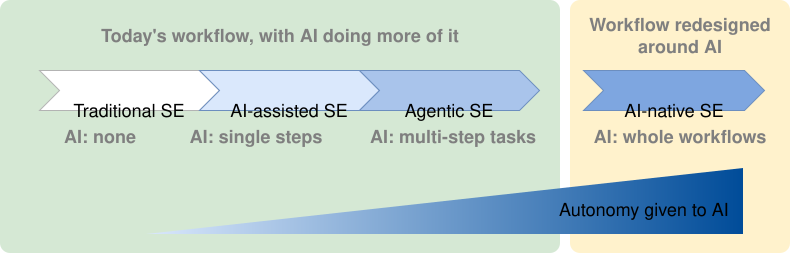
A possible progression of SE through higher levels of AI use
Experts disagree about how far this change will go, so evaluate their predictions carefully. Some predict the end of programming, with most software requested in natural language and generated when needed. Others point out that benchmarks leave out much of real software work, such as unclear goals, knowledge that has not been written down, and long-term maintenance. They also argue that a code change that passes its tests is not necessarily part of a dependable system. Checking whether AI evaluations reflect real software work is itself a software engineering problem.
As it becomes easier to give implementation work to AI, deciding, designing, checking, and taking responsibility become more valuable. Someone must understand the users and the subject area. Someone must decide what should and should not be built, divide the work into clear parts, design a system that can be maintained, spot mistakes in code that looks correct, combine human and AI work, and take responsibility for the released system. AI can help with every one of these activities, but it cannot take responsibility for the result.
Engineers must understand the work before they can direct, evaluate, or fix it. Therefore, software engineering foundations matter more than ever. The world still needs many software engineers, but the skills they use may change. They may spend less time writing code by hand and more time directing, evaluating, and taking responsibility for it.
Software engineering may now be going through its biggest change since 1968, but its future is still unclear. The rewards Brooks described remain. Some old difficulties may be becoming smaller, while new ones appear. We do not yet know whether AI will be the silver bullet that Brooks thought was unlikely, or simply a powerful tool that amplifies both the strengths and weaknesses of software teams.
📖 The Mythical Man-Month: Essays on Software Engineering
The Mythical Man-Month: Essays on Software Engineering is a book about software engineering and project management by Fred Brooks. Its main idea is that "adding manpower to a late software project makes it later." This idea is known as Brooks's law. The book also explains the risk of making the second version of a system too complex, and it recommends prototyping.
The simplest way to build software is to start coding and keep fixing what breaks, with no explicit stages at all.
That approach, sometimes called code-and-fix , has no overhead and works well enough for a small program written by one person over a short period. It stops working as the software and the team grow. There is no way to tell how far along the work is, and no way to divide it among several people without them colliding. There is also no record of the decisions already made, so changes become harder and more expensive.
code-and-fix
The simplest way to build software is to start coding and keep fixing what breaks, with no explicit stages at all. That approach, sometimes called code-and-fix , has no overhead and works well enough for a small program written by one person over a short period. It stops working as the software and the team grow. There is no way to tell how far along the work is, and no way to divide it among several people without them colliding. There is also no record of the decisions already made, so changes become harder and more expensive.
It stops working as the software and the team grow.
The simplest way to build software is to start coding and keep fixing what breaks, with no explicit stages at all. That approach, sometimes called code-and-fix , has no overhead and works well enough for a small program written by one person over a short period. It stops working as the software and the team grow. There is no way to tell how far along the work is, and no way to divide it among several people without them colliding. There is also no record of the decisions already made, so changes become harder and more expensive.
Software development goes through different stages such as requirements, analysis, design, implementation, and testing . These stages are collectively known as the software development lifecycle (SDLC).
There are several approaches, known as software development lifecycle models (also called software process models ), that describe different ways to go through the SDLC. Each process model prescribes a 'roadmap' for the development effort: the aims of the development stages, the outcome of each stage, and how the stages relate to one another.
software development lifecycle models
Software development goes through different stages such as requirements, analysis, design, implementation, and testing . These stages are collectively known as the software development lifecycle (SDLC). There are several approaches, known as software development lifecycle models (also called software process models ), that describe different ways to go through the SDLC. Each process model prescribes a 'roadmap' for the development effort: the aims of the development stages, the outcome of each stage, and how the stages relate to one another.
Reaching users is not the end of the lifecycle. Deployment , operation , and maintenance are commonly counted as lifecycle activities too
Reaching users is not the end of the lifecycle. Deployment , operation , and maintenance are commonly counted as lifecycle activities too , and process models differ in how they partition and name them. Once the software is released, it has to be operated, kept working as its environment changes, and improved. What happens during that time feeds back into development : defects reported by users, the way the software is actually used, and requests for things it cannot yet do all become inputs to later work. Most software spends far longer in this state than it spent being built for the first time.
What happens during that time feeds back into development
Reaching users is not the end of the lifecycle. Deployment , operation , and maintenance are commonly counted as lifecycle activities too , and process models differ in how they partition and name them. Once the software is released, it has to be operated, kept working as its environment changes, and improved. What happens during that time feeds back into development : defects reported by users, the way the software is actually used, and requests for things it cannot yet do all become inputs to later work. Most software spends far longer in this state than it spent being built for the first time.
Original explanation & examples
The simplest way to build software is to start coding and keep fixing what breaks, with no explicit stages at all. That approach, sometimes called code-and-fix, has no overhead and works well enough for a small program written by one person over a short period. It stops working as the software and the team grow. There is no way to tell how far along the work is, and no way to divide it among several people without them colliding. There is also no record of the decisions already made, so changes become harder and more expensive.
Software development goes through different stages such as requirements, analysis, design, implementation, and testing. These stages are collectively known as the software development lifecycle (SDLC). There are several approaches, known as software development lifecycle models (also called software process models), that describe different ways to go through the SDLC. Each process model prescribes a 'roadmap' for the development effort: the aims of the development stages, the outcome of each stage, and how the stages relate to one another.
Reaching users is not the end of the lifecycle. Deployment, operation, and maintenance are commonly counted as lifecycle activities too, and process models differ in how they partition and name them. Once the software is released, it has to be operated, kept working as its environment changes, and improved. What happens during that time feeds back into development: defects reported by users, the way the software is actually used, and requests for things it cannot yet do all become inputs to later work. Most software spends far longer in this state than it spent being built for the first time.
The sequential model , also called the waterfall model, views software development as a linear process
The sequential model , also called the waterfall model, views software development as a linear process , with the project progressing through the development stages in order. The name waterfall stems from how the model is drawn to look like a waterfall (see below).
When one stage of the process is completed, it produces some artifacts to be used in the next stage
When one stage of the process is completed, it produces some artifacts to be used in the next stage . For example, the requirements stage produces a comprehensive list of requirements to be used in the design stage.
A strict sequential model project moves only in the forward direction
A strict sequential model project moves only in the forward direction i.e., each stage is completed before starting the next. For example, once the requirements stage is over, there is no provision for revising the requirements later. In practice the model is often relaxed to let a stage send work back to the one before it, although doing so means redoing work that was already treated as finished.
In practice the model is often relaxed
A strict sequential model project moves only in the forward direction i.e., each stage is completed before starting the next. For example, once the requirements stage is over, there is no provision for revising the requirements later. In practice the model is often relaxed to let a stage send work back to the one before it, although doing so means redoing work that was already treated as finished.
This model can work well for a project that solves a well-understood problem
This model can work well for a project that solves a well-understood problem , in which case the requirements can remain stable and the effort can be estimated accurately. Furthermore, as each stage has a well-defined outcome, progress is easy to track: it is visible from which stage the project is in. Progress within a long stage, which is where an overrun usually builds up, stays much harder to see.
However, real-world projects often tackle problems that are not well-understood at the beginning
However, real-world projects often tackle problems that are not well-understood at the beginning , which makes those projects unsuitable for this model. For example, target users of a software product may not be able to state their requirements accurately at the start of the project if they have not used a similar product before.
A second weakness is that feedback arrives late.
Each stage's output is checked mainly by the stage that follows it, so integration and contact with real users come near the end. A mistake made while gathering requirements or designing therefore tends to surface at the point where going back to completed work costs the most.
Original explanation & examples
The sequential model, also called the waterfall model, views software development as a linear process, with the project progressing through the development stages in order. The name waterfall stems from how the model is drawn to look like a waterfall (see below).
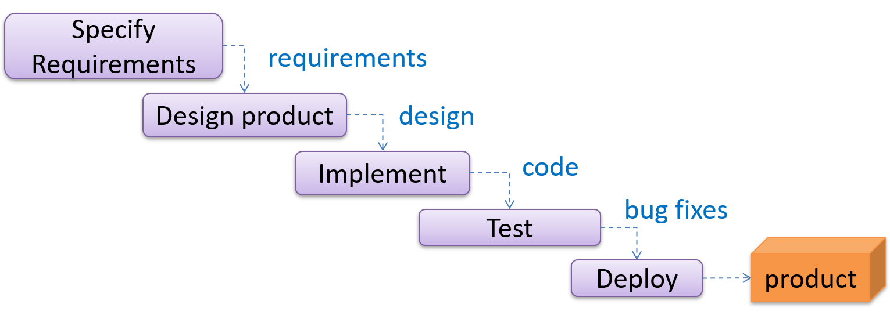
When one stage of the process is completed, it produces some artifacts to be used in the next stage. For example, the requirements stage produces a comprehensive list of requirements to be used in the design stage.
A strict sequential model project moves only in the forward direction i.e., each stage is completed before starting the next. For example, once the requirements stage is over, there is no provision for revising the requirements later. In practice the model is often relaxed to let a stage send work back to the one before it, although doing so means redoing work that was already treated as finished.
This model can work well for a project that solves a well-understood problem, in which case the requirements can remain stable and the effort can be estimated accurately. Furthermore, as each stage has a well-defined outcome, progress is easy to track: it is visible from which stage the project is in. Progress within a long stage, which is where an overrun usually builds up, stays much harder to see.
However, real-world projects often tackle problems that are not well-understood at the beginning, which makes those projects unsuitable for this model. For example, target users of a software product may not be able to state their requirements accurately at the start of the project if they have not used a similar product before.
A second weakness is that feedback arrives late. Each stage's output is checked mainly by the stage that follows it, so integration and contact with real users come near the end. A mistake made while gathering requirements or designing therefore tends to surface at the point where going back to completed work costs the most.
The iterative model advocates producing the software by going through several iterations .
Each iteration could go through all the stages of the SDLC, from requirements gathering to deployment.
Each iteration produces a new version of the product
Each iteration produces a new version of the product , building upon the previous version. Feedback from each iteration is factored into the subsequent iterations. For example, if an implementation task took longer than expected, the effort estimate for similar tasks in future iterations can be adjusted. Similarly, if a feature introduced in the current iteration was not well-received by target users, it can be removed or tweaked in the next iteration.
The two models divide a project along different lines.
A sequential project is divided by activity
A sequential project is divided by activity : a stage is 'requirements' or 'testing', and it ends when that activity is finished for the whole product.
An iterative project is divided into bounded cycles instead
An iterative project is divided into bounded cycles instead : an iteration runs through several activities and ends in a result the team can learn from.
The iterative model can use a breadth-first or depth-first approach.
In the breadth-first approach, an iteration evolves all major components and all functionality areas in parallel, producing a working product at the end of each iteration
In the depth-first approach, an iteration focuses on fleshing out only some components or some functionality area.
Accordingly, early depth-first iterations might not produce a working product.
Iterating and incrementing are two different things, and most projects do both.
To iterate is to rework something that already exists, in the light of feedback; to increment is to add to it. That is why the two are usually named together, as an iterative and incremental approach.
What an iteration delivers is called an increment
What an iteration delivers is called an increment : a usable improvement or addition to the product, not merely a new version of the code.
Ideally, an iteration should produce not only progress but also new knowledge.
A project can be done as a mixture of breadth-first and depth-first iterations
An early iteration is a chance to find out you were wrong while changing course is still cheap.
That makes the assumptions whose failure would cost the most -- an unproven technology, an unfamiliar user need, a performance target nobody has hit yet -- worth putting into an early iteration rather than a late one.
Original explanation & examples
The iterative model advocates producing the software by going through several iterations. Each iteration could go through all the stages of the SDLC, from requirements gathering to deployment.
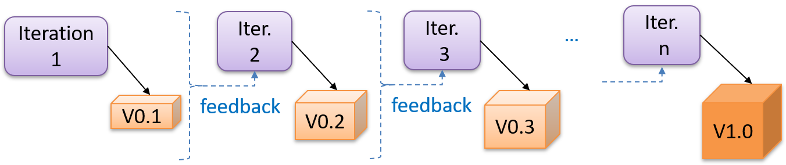
Each iteration produces a new version of the product, building upon the previous version. Feedback from each iteration is factored into the subsequent iterations. For example, if an implementation task took longer than expected, the effort estimate for similar tasks in future iterations can be adjusted. Similarly, if a feature introduced in the current iteration was not well-received by target users, it can be removed or tweaked in the next iteration.
The two models divide a project along different lines.
A sequential project is divided by activity: a stage is 'requirements' or 'testing', and it ends when that activity is finished for the whole product.
An iterative project is divided into bounded cycles instead: an iteration runs through several activities and ends in a result the team can learn from.
The iterative model can use a breadth-first or depth-first approach.
In the breadth-first approach, an iteration evolves all major components and all functionality areas in parallel, producing a working product at the end of each iterationi.e., most features and most components are updated in every iteration.
In the depth-first approach, an iteration focuses on fleshing out only some components or some functionality area. Accordingly, early depth-first iterations might not produce a working product.
Iterating and incrementing are two different things, and most projects do both. To iterate is to rework something that already exists, in the light of feedback; to increment is to add to it. That is why the two are usually named together, as an iterative and incremental approach.
What an iteration delivers is called an increment: a usable improvement or addition to the product, not merely a new version of the code.
Ideally, an iteration should produce not only progress but also new knowledge. Before starting one, decide what would show it succeeded -- a condition the result must satisfy, a test that must pass, or a demonstration to a target user -- and what decision the answer will drive. Example An iteration can add a new feature while helping the team estimate the effort for similar future features or assess the advantages and disadvantages of the approach used to implement it.
Example Taking a Minesweeper game as an example:
breadth-first iterations will deliver a fully playable version early. These early versions may have primitive functionality, e.g. a rudimentary text-based UI, fixed board size, limited minefield layouts. This functionality (and the corresponding components) will then be improved in later iterations.
an early depth-first iteration could deliver the full user interface (UI) but with no game logic at all. Alternatively, an early iteration could focus on just the logic for generating initial layouts of the minefield. Neither is a playable version of the game, but both can collect early feedback -- on the UI in the first case, on the minefield layouts in the second. That feedback then guides later iterations.
A project can be done as a mixture of breadth-first and depth-first iterationsi.e., an iteration can contain some breadth-first work as well as some depth-first work, or some iterations can be breadth-first while others are depth-first.
An early iteration is a chance to find out you were wrong while changing course is still cheap. That makes the assumptions whose failure would cost the most -- an unproven technology, an unfamiliar user need, a performance target nobody has hit yet -- worth putting into an early iteration rather than a late one.
Professional software engineers often write code using Integrated Development Environments (IDEs) . IDEs support most development-related work within the same tool
Professional software engineers often write code using Integrated Development Environments (IDEs) . IDEs support most development-related work within the same tool (hence, the term integrated ).
An IDE generally consists of:
Original explanation & examples
Professional software engineers often write code using Integrated Development Environments (IDEs). IDEs support most development-related work within the same tool (hence, the term integrated).
An IDE generally consists of:
A source code editor that includes features such as syntax coloring, auto-completion, easy code navigation, error highlighting, and code-snippet generation.
A compiler and/or an interpreter (together with other build automation support) that facilitates the compilation, linking, running, and deployment of a program.
A debugger that allows the developer to execute the program one step at a time to observe the run-time behavior in order to locate bugs.
Other tools that aid various aspects of coding, e.g., support for automated testing, drag-and-drop construction of UI components, version management support, simulation of the target runtime platform, modeling support, AI-assisted coding help, and collaborative coding with others.
Examples of popular IDEs:
Java: Eclipse, IntelliJ IDEA, NetBeans
C#, C++: Visual Studio
Swift: Xcode
Python: PyCharm
Multiple languages: VS Code
Some experienced developers, in particular those with a UNIX background, prefer lightweight yet powerful text editors with scripting capabilities (e.g., Vim or NeoVim) over heavier IDEs.
Exercises:
Which of these are features available in IDEs?
a. Compiling
b. Syntax error highlighting
c. Debugging
d. Code navigation e.g., to navigate from a method call to the method implementation
e. Simulation e.g., run a mobile app in a simulator
f. Code analysis e.g., to find unreachable code
g. Reverse engineering design/documentation e.g., generate diagrams from code
h. Visual programming e.g., write programs using ‘drag and drop’ actions instead of typing code
i. Syntax assistance e.g., show hints as you type
j. Code generation e.g., to generate the code required by simply specifying which component/structure you want to implement
k. Extension i.e., ability to add more functionality to the IDE using plugins
Answer
All.
Explanation: While all of these features may not be present in some IDEs, most do have these features in some form or other.
Testing : Operating a system or component under specified conditions, observing or recording the results, and making an evaluation of some aspect of the system or component. -- source: IEEE
When testing, you execute a set of test cases .
A test case specifies how to perform a test. At a minimum, it specifies the input to the software under test (SUT) and the expected behavior.
software under test (SUT)
When testing, you execute a set of test cases . A test case specifies how to perform a test. At a minimum, it specifies the input to the software under test (SUT) and the expected behavior.
Test cases can be determined based on the specification, reviewing similar existing systems, or comparing to the past behavior of the SUT.
For each test case you should do the following:
Feed the input to the SUT
Observe the actual output
Compare actual output with the expected output
A test case failure is a mismatch between the expected behavior and the actual behavior. A failure indicates a potential defect (or a bug)
Original explanation & examples
Video — Open the original page for this interactive item.
Testing: Operating a system or component under specified conditions, observing or recording the results, and making an evaluation of some aspect of the system or component. -- source: IEEE
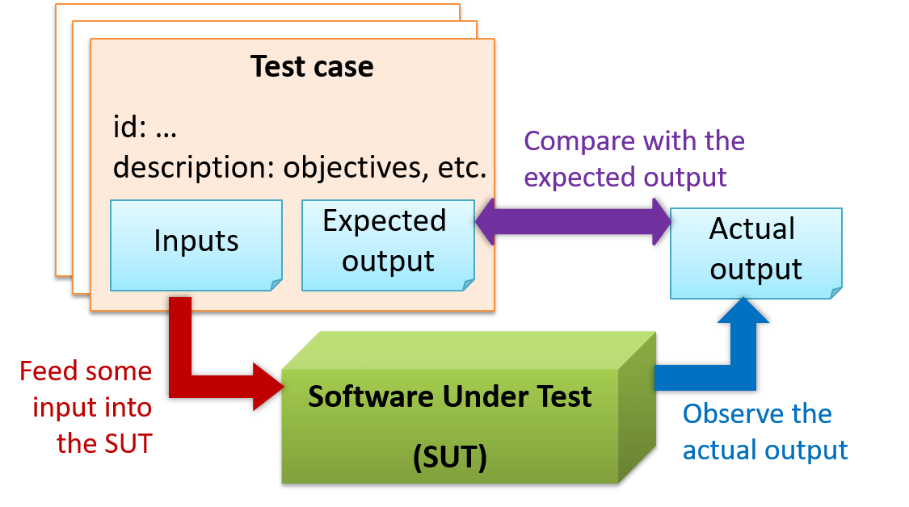
When testing, you execute a set of test cases. A test case specifies how to perform a test. At a minimum, it specifies the input to the software under test (SUT) and the expected behavior.
Example A minimal test case for testing a browser:
Input – Start the browser using a blank page (vertical scrollbar disabled). Then, load longfile.html located in the test data folder.
Expected behavior – The scrollbar should be automatically enabled upon loading longfile.html.
Other details a test case can contain ...( extra)
A more elaborate test case can have other details such as those given below.
A unique identifier : e.g., TC0034-a
A descriptive name: e.g., vertical scrollbar activation for long web pages
Objectives: e.g., to check whether the vertical scrollbar is correctly activated when a long web page is loaded to the browser
Classification information: e.g., priority - medium, category - UI features
Cleanup, if any: e.g., empty the browser cache.
Test cases can be determined based on the specification, reviewing similar existing systems, or comparing to the past behavior of the SUT.
For each test case you should do the following:
Feed the input to the SUT
Observe the actual output
Compare actual output with the expected output
A test case failure is a mismatch between the expected behavior and the actual behavior. A failure indicates a potential defect (or a bug) -- we say 'potential' because the error could be in the test case itself. Example In the browser example above, a test case failure is implied if the scrollbar remains disabled after loading longfile.html. The defect/bug causing that failure could be an uninitialized variable.
A deeper look at the definition of testing( extra)
Here is another definition of testing:
Software testing consists of the dynamic verification that a program provides expected behaviors on a finite set of test cases, suitably selected from the usually infinite execution domain. -- source: Software Engineering Book of Knowledge V3
Some things to note (indicated by keywords in the above definition):
Dynamic: Testing involves executing the software. It is not by examining the code statically.
Finite: In most non-trivial cases there are potentially infinite test scenarios but resource constraints dictate that we can test only a finite number of scenarios.
Selected: In most cases it is not possible to test all scenarios. That means we need to select what scenarios to test.
Expected: Testing requires some knowledge of how the software is expected to behave.
When you modify a system, the modification may result in some unintended and undesirable effects on the system. Such an effect is called a regression .
Regression testing is the re-testing of the software to detect regressions.
The typical way to detect regressions is retesting all related components, even if they had been tested before.
regression testing is more practical when it is automated
Regression testing is more effective when it is done frequently, after each small change. However, doing so can be prohibitively expensive if testing is done manually. Hence, regression testing is more practical when it is automated .
Original explanation & examples
Video — Open the original page for this interactive item.
When you modify a system, the modification may result in some unintended and undesirable effects on the system. Such an effect is called a regression.
Regression testing is the re-testing of the software to detect regressions. The typical way to detect regressions is retesting all related components, even if they had been tested before.
Regression testing is more effective when it is done frequently, after each small change. However, doing so can be prohibitively expensive if testing is done manually. Hence, regression testing is more practical when it is automated.
Exercises:
Regression Testing definition: T/F?
Regression testing is the automated re-testing of a software after it has been modified.
Answer
c.
Explanation: Regression testing need not be automated but automation is highly recommended.
An automated test case can be run programmatically and the result of the test case (pass or fail) is determined programmatically.
Compared to manual testing, automated testing reduces the effort required to run tests repeatedly and increases precision of testing (because manual testing is susceptible to human errors).
Original explanation & examples
An automated test case can be run programmatically and the result of the test case (pass or fail) is determined programmatically. Compared to manual testing, automated testing reduces the effort required to run tests repeatedly and increases precision of testing (because manual testing is susceptible to human errors).
Run the program as given below, which will redirect the text in input.txt as the input to AddressBook and similarly, will redirect the output of AddressBook to a text file output.txt. Note that this does not require any changes in AddressBook code.
java AddressBook < input.txt > output.txt
The way to run a CLI program differs based on the language.
e.g., In Python, assuming the code is in AddressBook.py file, use the command python AddressBook.py < input.txt > output.txt
If you are using Windows, use a normal MS-DOS terminal (i.e., cmd.exe) to run the app, not a PowerShell window.
More on the > operator and the < operator ( extra)
A CLI program takes input from the keyboard and outputs to the console. That is because those two are the default input and output streams, respectively. But you can change that behavior using < and > operators. For example, if you run AddressBook in a command window, the output will be shown in the console, but if you run it like this,
java AddressBook > output.txt
the Operating System then creates a file output.txt and stores the output in that file instead of displaying it in the console. No file I/O coding is required. Similarly, adding < input.txt (or any other filename) makes the OS redirect the contents of the file as input to the program, as if the user typed the content of the file one line at a time.
Next, you compare output.txt with the expected.txt. This can be done using a utility such as Windows' FC (i.e., File Compare) command, Unix's diff command, or a GUI tool such as WinMerge.
FC output.txt expected.txt
Note that the above technique is only suitable when testing CLI apps, and only if the exact output can be predetermined. If the output varies from one run to the other (e.g., it contains a time stamp), this technique will not work. In those cases, you need more sophisticated ways of automating tests.
Combining parts of a software product to form a whole is called integration
Combining parts of a software product to form a whole is called integration . It is also one of the most troublesome tasks and it rarely goes smoothly.
Original explanation & examples
Combining parts of a software product to form a whole is called integration. It is also one of the most troublesome tasks and it rarely goes smoothly.
Build automation tools automate the steps of the build process, usually by means of build scripts.
Some build tools also serve as dependency management tools
Original explanation & examples
Build automation tools automate the steps of the build process, usually by means of build scripts.
In a non-trivial project, building a product from its source code can be a complex multistep process. For example, it can include steps such as: pull code from the revision control system, compile, link, run automated tests, automatically update release documents (e.g., build number), package into a distributable, push to a repository, deploy to a server, delete temporary files created during building/testing, email developers of the new build, and so on. Furthermore, this build process can be done ‘on demand’, scheduled (e.g., every day at midnight), or triggered by various events (e.g., triggered by a code push to the revision control system).
Some of these build steps, such as compiling, linking, and packaging, are already automated in most modern IDEs. For example, several steps happen automatically when the ‘build’ button of the IDE is clicked. Some IDEs even allow customization of this build process to some extent.
However, most big projects use specialized build tools to automate complex build processes. Example Some popular build tools relevant to Java developers: Gradle, Maven, Apache Ant, GNU Make Example Some other build tools: Grunt (JavaScript), Rake (Ruby)
Some build tools also serve as dependency management tools. Modern software projects often depend on third-party libraries that evolve constantly. That means developers need to download the correct version of the required libraries and update them regularly. Therefore, dependency management is an important part of build automation. Dependency management tools can automate that aspect of a project. Example Maven and Gradle, in addition to managing the build process, can also serve as dependency management tools.
Build Automation › Continuous integration and continuous deployment
Recall the key point, then reveal.
An extreme application of build automation is called continuous integration (CI) in which integration, building, and testing happen automatically after each code change.
A natural extension of CI is continuous deployment (CD) , where the changes are not only integrated continuously but also deployed to end users at the same time.
Original explanation & examples
An extreme application of build automation is called continuous integration (CI) in which integration, building, and testing happen automatically after each code change.
A natural extension of CI is continuous deployment (CD), where the changes are not only integrated continuously but also deployed to end users at the same time. Example Some CI/CD tools: Travis, Jenkins, Appveyor, CircleCI, GitHub Actions
JavaDoc is a tool for generating API documentation in HTML format from comments in the source code.
In addition, modern IDEs use JavaDoc comments to generate explanatory tooltips.
Original explanation & examples
Video — Open the original page for this interactive item.
JavaDoc is a tool for generating API documentation in HTML format from comments in the source code. In addition, modern IDEs use JavaDoc comments to generate explanatory tooltips.
Example A method header comment in JavaDoc format:
/** * Returns an Image object that can then be painted on the screen. * The url argument must specify an absolute {@link URL}. The name * argument is a specifier that is relative to the url argument. * <p> * This method always returns immediately, whether or not the * image exists. When this applet attempts to draw the image on * the screen, the data will be loaded. The graphics primitives * that draw the image will incrementally paint on the screen. * * @param url An absolute URL giving the base location of the image. * @param name The location of the image, relative to the url argument. * @return The Image at the specified URL. * @see Image */public Image getImage(URL url, String name){
try {
return getImage(new URL(url, name));
} catch (MalformedURLException e) {
returnnull;
}
}
In the absence of more extensive guidelines (e.g., given in a coding standard adopted by your project), you can follow the two examples below in your code.
A minimal JavaDoc comment example for methods:
/** * Returns lateral location of the specified position. * If the position is unset, NaN is returned. * * @param x X coordinate of position. * @param y Y coordinate of position. * @param zone Zone of position. * @return Lateral location. * @throws IllegalArgumentException If zone is <= 0. */publicdoublecomputeLocation(double x, double y, int zone)throws IllegalArgumentException {
// ...}
A minimal JavaDoc comment example for classes:
package ...
import ...
/** * Represents a location in a 2D space. A <code>Point</code> object corresponds to * a coordinate represented by two integers e.g., <code>3,6</code> */publicclassPoint{
// ...}
You can use the java.io.File class to represent a file object
You can use the java.io.File class to represent a file object . It can be used to access properties of the file object.
relative to the current working directory
This code creates a File object to represent a file fruits.txt that exists in the data directory relative to the current working directory and uses that object to print some properties of the file.
You can read from a file using a Scanner object that uses a File object as the source of data.
You can use a java.io.FileWriter object to write to a file.
need to call the close() method
Note that you need to call the close() method of the FileWriter object for the writing operation to be completed.
You can create a FileWriter object that appends to the file
You can create a FileWriter object that appends to the file (instead of overwriting the current content) by specifying an additional boolean parameter to the constructor.
The java.nio.file.Files is a utility class that provides several useful file operations.
It relies on the java.nio.file.Paths file to generate Path objects that represent file paths.
it is also possible to perform file I/O operations using other classes
The techniques above are good enough to manipulate simple text files. Note that it is also possible to perform file I/O operations using other classes .
Original explanation & examples
You can use the java.io.File class to represent a file object. It can be used to access properties of the file object.
This code creates a File object to represent a file fruits.txt that exists in the data directory relative to the current working directory and uses that object to print some properties of the file.
full path: C:\sample-code\data\fruits.txt
file exists?: true
is Directory?: false
If you use backslash to specify the file path in a Windows computer, you need to use an additional backslash as an escape character because the backslash by itself has a special meaning. e.g., use "data\\fruits.txt", not "data\fruits.txt". Alternatively, you can use forward slash "data/fruits.txt" (even on Windows).
You can read from a file using a Scanner object that uses a File object as the source of data.
This code uses a Scanner object to read (and print) contents of a text file line-by-line:
import java.io.File;
import java.io.FileNotFoundException;
import java.util.Scanner;
publicclassFileReadingDemo{
privatestaticvoidprintFileContents(String filePath)throws FileNotFoundException {
File f = new File(filePath); // create a File for the given file path Scanner s = new Scanner(f); // create a Scanner using the File as the sourcewhile (s.hasNext()) {
System.out.println(s.nextLine());
}
}
publicstaticvoidmain(String[] args){
try {
printFileContents("data/fruits.txt");
} catch (FileNotFoundException e) {
System.out.println("File not found");
}
}
}
Note that you need to call the close() method of the FileWriter object for the writing operation to be completed.
You can create a FileWriter object that appends to the file (instead of overwriting the current content) by specifying an additional boolean parameter to the constructor.
The method below appends to the file rather than overwrites.
privatestaticvoidappendToFile(String filePath, String textToAppend)throws IOException {
FileWriter fw = new FileWriter(filePath, true); // create a FileWriter in append mode fw.write(textToAppend);
fw.close();
}
The java.nio.file.Files is a utility class that provides several useful file operations. It relies on the java.nio.file.Paths file to generate Path objects that represent file paths.
This example uses the Files class to copy a file and delete a file.
You can organize your types (i.e., classes, interfaces, enumerations, etc.) into packages
You can organize your types (i.e., classes, interfaces, enumerations, etc.) into packages for easier management (among other benefits ).
To create a package, you put a package statement at the very top of every source file in that package.
The package statement must be the first line in the source file and there can be no more than one package statement in each source file. Furthermore, the package of a type should match the folder path of the source file. Similarly, the compiler will put the .class files in a folder structure that matches the package names.
the package of a type should match the folder path of the source file.
To create a package, you put a package statement at the very top of every source file in that package. The package statement must be the first line in the source file and there can be no more than one package statement in each source file. Furthermore, the package of a type should match the folder path of the source file. Similarly, the compiler will put the .class files in a folder structure that matches the package names.
Package names are written in all lower case
Package names are written in all lower case (not camelCase), using the dot as a separator. Packages in the Java language itself begin with java . or javax . Companies use their reversed Internet domain name to begin their package names.
To use a public package member from outside its package, you must do one of the following:
Use the fully qualified name
Use the fully qualified name to refer to the member
Import
Import the package or the specific package member
Importing a package does not import its sub-packages
Importing a package does not import its sub-packages , as packages do not behave as hierarchies despite appearances.
If you do not use a package statement, your type doesn't have a package
If you do not use a package statement, your type doesn't have a package -- a practice not recommended (except for small code examples) as it is not possible for a type in a package to import a type that is not in a package.
Optionally, a static import can be used to import static members of a type
Optionally, a static import can be used to import static members of a type so that the imported members can be used without specifying the type name.
When using the command line to compile/run Java, you should take the package into account.
Original explanation & examples
You can organize your types (i.e., classes, interfaces, enumerations, etc.) into packages for easier management (among other benefits).
To create a package, you put a package statement at the very top of every source file in that package. The package statement must be the first line in the source file and there can be no more than one package statement in each source file. Furthermore, the package of a type should match the folder path of the source file. Similarly, the compiler will put the .class files in a folder structure that matches the package names.
The Formatter class below (in <source folder>/seedu/tojava/util/Formatter.java file) is in the package seedu.tojava.util. When it is compiled, the Formatter.class file will be in the location <compiler output folder>/seedu/tojava/util:
Package names are written in all lower case (not camelCase), using the dot as a separator. Packages in the Java language itself begin with java. or javax. Companies use their reversed Internet domain name to begin their package names.
For example, com.foobar.doohickey.util can be the name of a package created by a company with a domain name foobar.com
To use a public package member from outside its package, you must do one of the following:
Use the fully qualified name to refer to the member
Import the package or the specific package member
The Main class below has two import statements:
import seedu.tojava.util.StringParser: imports the class StringParser in the seedu.tojava.util package
import seedu.tojava.frontend.*: imports all the classes in the seedu.tojava.frontend package
package seedu.tojava;
import seedu.tojava.util.StringParser;
import seedu.tojava.frontend.*;
publicclassMain{
publicstaticvoidmain(String[] args){
// Using the fully qualified name to access the Processor class String status = seedu.tojava.logic.Processor.getStatus();
// Using the StringParser previously imported StringParser sp = new StringParser();
// Using classes from the tojava.frontend package Ui ui = new Ui();
Message m = new Message();
}
}
Note how the class can still use the Processor without importing it first, by using its fully qualified name seedu.tojava.logic.Processor
Importing a package does not import its sub-packages, as packages do not behave as hierarchies despite appearances.
import seedu.tojava.frontend.* does not import the classes in the sub-package seedu.tojava.frontend.widget.
If you do not use a package statement, your type doesn't have a package -- a practice not recommended (except for small code examples) as it is not possible for a type in a package to import a type that is not in a package.
Optionally, a static import can be used to import static members of a type so that the imported members can be used without specifying the type name.
The class below uses static imports to import the constant PREFIX and the method format() from the seedu.tojava.util.Formatter class.
Access level modifiers determine whether other classes can use a particular field or invoke a particular method.
There are two levels of access control:
At the class level
At the class level :
public
public : the class is visible to all classes everywhere
no modifier (the default, also known as package-private )
no modifier (the default, also known as package-private ) : it is visible only within its own package
At the member level
At the member level :
no modifier ( package-private )
public or no modifier ( package-private ) : same meaning as when used with top-level classes
private
private : the member can only be accessed in its own class
protected
protected : the member can only be accessed within its own package (as with package-private) and, in addition, by a subclass of its class in another package
Original explanation & examples
Access level modifiers determine whether other classes can use a particular field or invoke a particular method.
There are two levels of access control:
At the class level:
public: the class is visible to all classes everywhere
no modifier (the default, also known as package-private): it is visible only within its own package
At the member level:
public or no modifier (package-private): same meaning as when used with top-level classes
private: the member can only be accessed in its own class
protected: the member can only be accessed within its own package (as with package-private) and, in addition, by a subclass of its class in another package
The following table shows the access to members permitted by each modifier.
Modifier
Class
Package
Subclass
World
public
protected
no modifier
private
Access levels affect you in two ways:
When you use classes that come from another source, such as the classes in the Java platform, access levels determine which members of those classes your own classes can use.
When you write a class, you need to decide what access level every member variable and every method in your class should have.
Java applications are typically delivered as JAR (short for Java Archive ) files.
A JAR contains Java classes and other resources (icons, media files, etc.).
An executable JAR file can be launched using the java -jar command e.g., java -jar foo.jar launches the foo.jar file.
Original explanation & examples
Java applications are typically delivered as JAR (short for Java Archive) files. A JAR contains Java classes and other resources (icons, media files, etc.).
An executable JAR file can be launched using the java -jar command e.g., java -jar foo.jar launches the foo.jar file.
The IDE or build tools such as Gradle can help you to package your application as a JAR file.
Production code needs to be of high quality . Given how the world is becoming increasingly dependent on software, poor quality code is something no one can afford to tolerate.
Original explanation & examples
Video Q+ — Open the original page for this interactive item.
Always code as if the person who ends up maintaining your code will be a violent psychopath who knows where you live. -- Martin Golding
Production code
needs to be of high quality. Given how the world is becoming increasingly dependent on software, poor quality code is something no one can afford to tolerate.
One essential way to improve code quality is to follow a consistent style. That is why software engineers usually follow a strict coding standard (aka style guide ).
The aim of a coding standard is to make the entire codebase look like it was written by one person
Original explanation & examples
Video Q+ — Open the original page for this interactive item.
One essential way to improve code quality is to follow a consistent style. That is why software engineers usually follow a strict coding standard (aka style guide).
The aim of a coding standard is to make the entire codebase look like it was written by one person. A coding standard is usually specific to a programming language and specifies guidelines such as the locations of opening and closing braces, indentation styles and naming styles (e.g., whether to use Hungarian style, Pascal casing, Camel casing, etc.). It is important that the whole team/company uses the same coding standard and that the standard is generally not inconsistent with typical industry practices. If a company's coding standard is very different from what is typically used in the industry, new recruits will take longer to get used to the company's coding style.
IDEs can help to enforce some parts of a coding standard e.g., indentation rules.
Exercises:
What is the recommended approach regarding coding standards?
What is the recommended approach regarding coding standards?
Delaying testing until the full product is complete has a number of disadvantages:
Locating the cause of a test case failure is difficult due to the larger search space;
Locating the cause of a test case failure is difficult due to the larger search space; in a large system, the search space could be millions of lines of code, written by hundreds of developers! The failure may also be due to multiple inter-related bugs.
Fixing a bug found during such testing could result in major rework
One bug might 'hide' other bugs
One bug might 'hide' other bugs , which could emerge only after the first bug is fixed.
The delivery may have to be delayed
The delivery may have to be delayed if too many bugs are found during testing.
Therefore, it is better to do early testing
Therefore, it is better to do early testing , as hinted by the popular rule of thumb given below, also illustrated by the graph below it.
Original explanation & examples
Video Q+ — Open the original page for this interactive item.
Delaying testing until the full product is complete has a number of disadvantages:
Locating the cause of a test case failure is difficult due to the larger search space; in a large system, the search space could be millions of lines of code, written by hundreds of developers! The failure may also be due to multiple inter-related bugs.
Fixing a bug found during such testing could result in major rework, especially if the bug originated from the design or during requirements specification i.e., a faulty design or faulty requirements.
One bug might 'hide' other bugs, which could emerge only after the first bug is fixed.
The delivery may have to be delayed if too many bugs are found during testing.
Therefore, it is better to do early testing, as hinted by the popular rule of thumb given below, also illustrated by the graph below it.
The earlier a bug is found, the easier and cheaper it is to fix.
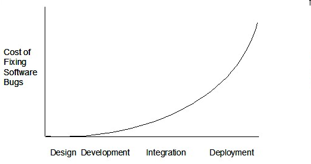
Such early testing of software is usually, and often by necessity, done by the developers themselves i.e., developer testing.
Exercises:
Implications of developers testing their own code
Discuss the pros and cons of developers testing their own code.
Answer
Pros:
Can be done early (the earlier we find a bug, the cheaper it is to fix).
Can be done at lower levels, for example, at the operation and class levels (testers usually test the system at the UI level).
It is possible to do more thorough testing because developers know the expected external behavior as well as the internal structure of the component.
It forces developers to take responsibility for their own work (they cannot claim that "testing is the job of the testers").
Cons:
A developer may subconsciously only test situations that he knows to work (i.e., test it too 'gently').
A developer may be blind to his own mistakes (if he did not consider a certain combination of input while writing the code, it is possible for him to miss it again during testing).
A developer may have misunderstood what the SUT is supposed to do in the first place.
A developer may lack the testing expertise.
Cost of bug fixing over time
The cost of fixing a bug goes down as we reach the product release.
Test Automation › Test automation using test drivers
Recall the key point, then reveal.
A test driver is the code that ‘drives’ the SUT for the purpose of testing
A test driver is the code that ‘drives’ the SUT for the purpose of testing i.e., invoking the SUT with test inputs and verifying if the behavior is as expected.
Original explanation & examples
A test driver is the code that ‘drives’ the SUT for the purpose of testing i.e., invoking the SUT with test inputs and verifying if the behavior is as expected.
ExamplePayrollTest ‘drives’ the Payroll class by sending it test inputs and verifies if the output is as expected.
publicclassPayrollTest{
publicstaticvoidmain(String[] args)throws Exception {
// test setup Payroll p = new Payroll();
// test case 1 p.setEmployees(new String[]{"E001", "E002"});
// automatically verify the responseif (p.totalSalary() != 6400) {
thrownew Error("case 1 failed ");
}
// test case 2 p.setEmployees(new String[]{"E001"});
if (p.totalSalary() != 2300) {
thrownew Error("case 2 failed ");
}
// more tests... System.out.println("All tests passed");
}
}
JUnit is a tool for automated testing of Java programs.
Similar tools are available for other languages and for automating different types of testing.
Original explanation & examples
JUnit is a tool for automated testing of Java programs. Similar tools are available for other languages and for automating different types of testing.
Example An automated test for a Payroll class, written using JUnit libraries:
// other test methods@TestpublicvoidtestTotalSalary(){
Payroll p = new Payroll();
// test case 1 p.setEmployees(new String[]{"E001", "E002"});
assertEquals(6400, p.totalSalary());
// test case 2 p.setEmployees(new String[]{"E001"});
assertEquals(2300, p.totalSalary());
// more tests... }
Most modern IDEs have integrated support for testing tools. The figure below shows the JUnit output when running some JUnit tests using the Eclipse IDE.
classFooTest{
@Testvoidread(){
// a unit test for Foo#read() method }
@Testvoidwrite_emptyInput_exceptionThrown(){
// a unit test for Foo#write(String) method }
@Testvoidwrite_normalInput_writtenCorrectly(){
// another unit test for Foo#write(String) method }
}
import unittest
classFoo:defread(self):# ...defwrite(self, input):# ...classFooTest(unittest.TestCase):deftest_read(self):# a unit test for read() methoddeftest_write_emptyInput_ignored(self):# a unit test for write(string) methoddeftest_write_normalInput_writtenCorrectly(self):# another unit test for write(string) method
While test case design techniques are a separate topic altogether, it should be noted that the goal of these tests is to catch bugs in the code. Therefore, test using inputs that can trigger a potentially buggy path in the code. Another way to approach this is, to write tests such that if a future developer modified the method to unintentionally introduce a bug into it, at least one of the tests should fail (thus alerting that developer to the mistake immediately).
Recommended:
JUnit tutorial @se-edu/guides explains how to use JUnit in your Java project.
Original explanation & examples
When writing JUnit tests for a class Foo, the common practice is to create a FooTest class, which will contain various test methods for testing methods of the Foo class.
Suppose we want to write tests for the IntPair class below.
public class IntPair {
int first;
int second;
public IntPair(int first, int second) {
this.first = first;
this.second = second;
}
/**
* Returns The result of applying integer division first/second.
* @throws Exception if second is 0.
*/
public int intDivision() throws Exception {
if (second == 0){
throw new Exception("Divisor is zero");
}
return first/second;
}
@Override
public String toString() {
return first + "," + second;
}
}
Here's a IntPairTest class to match (using JUnit 5).
import org.junit.jupiter.api.Test;
import static org.junit.jupiter.api.Assertions.assertEquals;
import static org.junit.jupiter.api.Assertions.fail;
public class IntPairTest {
@Test
public void intDivision_nonZeroDivisor_success() throws Exception {
// both normal and int division give 2
assertEquals(2, new IntPair(4, 2).intDivision());
// normal division gives 1.9 but int division should give 1
assertEquals(1, new IntPair(19, 10).intDivision());
// dividend is zero but divisor is not
assertEquals(0, new IntPair(0, 5).intDivision());
}
@Test
public void intDivision_zeroDivisor_exceptionThrown() {
try {
assertEquals(0, new IntPair(1, 0).intDivision());
fail(); // the test should not reach this line
} catch (Exception e) {
assertEquals("Divisor is zero", e.getMessage());
}
}
@Test
public void testStringConversion() {
assertEquals("4,7", new IntPair(4, 7).toString());
}
// more test cases
}
Note how each test method is marked with a @Test annotation.
Tests use assertEquals(expected, actual) methods (provided by JUnit) to compare the expected output with the actual output. If they do not match, the test will fail.
JUnit comes with other similar methods such as assertNull, assertNotNull, assertTrue, assertFalse etc. [more ...]
Java code normally uses camelCase for method names e.g., testStringConversion but when writing test methods, sometimes another convention is used: unitBeingTested_descriptionOfTestInputs_expectedOutcome
e.g., intDivision_zeroDivisor_exceptionThrown
There are several ways to verify the code throws the correct exception. The second test method in the example above shows one of the simpler methods. If the exception is thrown, it will be caught and further verified inside the catch block. But if it is not thrown as expected, the test will reach the fail() line and will fail as a result.
What to test for when writing tests? While test case design techniques are a separate topic altogether, it should be noted that the goal of these tests is to catch bugs in the code. Therefore, test using inputs that can trigger a potentially buggy path in the code. Another way to approach this is, to write tests such that if a future developer modified the method to unintentionally introduce a bug into it, at least one of the tests should fail (thus alerting that developer to the mistake immediately).
In the example above, the IntPairTest class tests the IntPair#intDivision() method using several test data configurations, some even seemingly attempting to 'trick' the method into producing a wrong result. If the method still produces the correct output for such 'tricky' inputs (as well as 'normal' outputs), we can have a higher confidence in the method being correctly implemented.
Note that the test cases shown omit the test for the inputs (0, 0) that checks if it throws the expected exception.
A proper unit test requires the unit to be tested in isolation
Stubs can isolate the SUT from its dependencies
Stubs can isolate the SUT from its dependencies .
Stub
Stub : A stub has the same interface as the component it replaces, but its implementation is so simple that it is unlikely to have any bugs. It mimics the responses of the component, but only for a limited set of predetermined inputs. That is, it does not know how to respond to any other inputs. Typically, these mimicked responses are hard-coded in the stub rather than computed or retrieved from elsewhere, e.g., from a database.
Original explanation & examples
A proper unit test requires the unit to be tested in isolation so that bugs in the dependencies cannot influence the test i.e., bugs outside of the unit should not affect the unit tests. Example If a Logic class depends on a Storage class, unit testing the Logic class requires isolating the Logic class from the Storage class.
Stubs can isolate the SUT from its dependencies.
Stub: A stub has the same interface as the component it replaces, but its implementation is so simple that it is unlikely to have any bugs. It mimics the responses of the component, but only for a limited set of predetermined inputs. That is, it does not know how to respond to any other inputs. Typically, these mimicked responses are hard-coded in the stub rather than computed or retrieved from elsewhere, e.g., from a database.
However, this logic object being tested is making use of a DatabaseStorage object which means a bug in the DatabaseStorage class can affect the test. Therefore, this test is not testing Logicin isolation from its dependencies and hence it is not a pure unit test.
Here is a stub class you can use in place of DatabaseStorage:
Note how the StorageStub has the same interface as DatabaseStorage, but is so simple that it is unlikely to contain bugs, and is pre-configured to respond with a hard-coded response, presumably, the correct response DatabaseStorage is expected to return for the given test input.
Here is how you can use the stub to write a unit test. This test is not affected by any bugs in the DatabaseStorage class and hence is a pure unit test.
In addition to the @Test annotation you've seen already, there are many other annotations in JUnit. For example, the @Disabled annotation can be used to disable a test temporarily. [ more ... ]
Pre/post-test tasks:
In order to allow individual test methods to be executed in isolation and to avoid unexpected side effects due to mutable test instance state, JUnit creates a new instance of each test class before executing each test method. It is possible to supply code that should be run before/after every test method/class (e.g., for setting up the environment required by the tests, or cleaning up things after a test is completed) by using test instance lifecycle annotations such as @BeforeEach @AfterAll . [ more ... ]
Conditional test execution:
It is possible to configure tests to run only under certain conditions. For example, @TestOnMac annotation can be used to specify tests that should run on Mac OS only. [ more ... ]
Assumptions:
It is possible to specify assumptions that must hold for a test to be executed (i.e., the test will be skipped if the assumption does not hold). [ more ... ]
Tagging tests:
It is possible to tag tests (e.g., @Tag("slow") so that tests can be selected based on tags. [ more ... ]
Test execution order:
By default, JUnit executes test classes and methods in a deterministic but intentionally nonobvious order. This ensures that subsequent runs of a test suite execute tests in the same order, thereby allowing for repeatable builds. But it is possible to specify a specific testing order. [ more ... ]
Test hierarchies
Test hierarchies : Normally, we organize tests into separate test classes. If a more hierarchical structure is needed, the @Nested annotation can be used to express the relationship among groups of tests. [ more ... ]
Repeated tests:
JUnit provides the ability to repeat a test a specified number of times by annotating a method with @RepeatedTest and specifying the total number of repetitions desired. [ more ... ]
Parameterized tests
Parameterized tests make it possible to run a test multiple times with different arguments. The parameter values can be supplied using a variety of ways e.g., an array of values, enums, a csv file, etc. [ more ... ]
Dynamic tests
Dynamic tests : The @TestFactory annotation can be used to specify factory methods that generate tests dynamically. [ more ... ]
Timeouts:
The @Timeout annotation allows one to declare that a test should fail if its execution time exceeds a given duration. [ more ... ]
Parallel execution:
By default, JUnit tests are run sequentially in a single thread. Running tests in parallel—for example, to speed up execution—is available as an opt-in feature. [ more ... ]
Extensions:
JUnit supports third-party extensions. The built-in TempDirectory extension is used to create and clean up a temporary directory for an individual test or all tests in a test class. [ more ... ]
Original explanation & examples
Given below are some noteworthy JUnit concepts, as per the JUnit 5 User Guide.
Annotations: In addition to the @Test annotation you've seen already, there are many other annotations in JUnit. For example, the @Disabled annotation can be used to disable a test temporarily. [more ...]
Pre/post-test tasks: In order to allow individual test methods to be executed in isolation and to avoid unexpected side effects due to mutable test instance state, JUnit creates a new instance of each test class before executing each test method. It is possible to supply code that should be run before/after every test method/class (e.g., for setting up the environment required by the tests, or cleaning up things after a test is completed) by using test instance lifecycle annotations such as @BeforeEach@AfterAll. [more ...]
Conditional test execution: It is possible to configure tests to run only under certain conditions. For example, @TestOnMac annotation can be used to specify tests that should run on Mac OS only. [more ...]
Assumptions: It is possible to specify assumptions that must hold for a test to be executed (i.e., the test will be skipped if the assumption does not hold). [more ...]
Tagging tests: It is possible to tag tests (e.g., @Tag("slow") so that tests can be selected based on tags. [more ...]
Test execution order: By default, JUnit executes test classes and methods in a deterministic but intentionally nonobvious order. This ensures that subsequent runs of a test suite execute tests in the same order, thereby allowing for repeatable builds. But it is possible to specify a specific testing order. [more ...]
Test hierarchies: Normally, we organize tests into separate test classes. If a more hierarchical structure is needed, the @Nested annotation can be used to express the relationship among groups of tests. [more ...]
Repeated tests: JUnit provides the ability to repeat a test a specified number of times by annotating a method with @RepeatedTest and specifying the total number of repetitions desired. [more ...]
Parameterized tests make it possible to run a test multiple times with different arguments. The parameter values can be supplied using a variety of ways e.g., an array of values, enums, a csv file, etc. [more ...]
Dynamic tests: The @TestFactory annotation can be used to specify factory methods that generate tests dynamically. [more ...]
Timeouts: The @Timeout annotation allows one to declare that a test should fail if its execution time exceeds a given duration. [more ...]
Parallel execution: By default, JUnit tests are run sequentially in a single thread. Running tests in parallel—for example, to speed up execution—is available as an opt-in feature. [more ...]
Extensions: JUnit supports third-party extensions. The built-in TempDirectory extension is used to create and clean up a temporary directory for an individual test or all tests in a test class. [more ...]
A model provides a simpler view of a complex entity because a model captures only a selected aspect.
This omission of some aspects implies models are abstractions .
Abstraction
Abstraction is a technique for dealing with complexity. It works by establishing a level of complexity we are interested in, and suppressing the more complex details below that level.
The guiding principle of abstraction is that only details that are relevant to the current perspective or the task at hand need to be considered.
It is the process of hiding complex internal or less relevant details to focus only on essential or more important details. As most programs are written to solve complex problems involving large amounts of intricate details, it is impossible to deal with all these details at the same time. That is where abstraction can help.
Data abstraction : abstracting away the lower level data items and thinking in terms of bigger entities
Control abstraction : abstracting away details of the actual control flow to focus on tasks at a higher level
Abstraction can be applied repeatedly to obtain progressively higher levels of abstraction .
Abstraction is a general concept that is not limited to just data or control abstractions.
Multiple models of the same entity may be needed to capture it fully.
Original explanation & examples
A model is a representation of something else. Example A
class diagram
is a model that represents a software design.
Class diagrams
A class diagram is a diagram drawn using the UML modeling notation.
Example A class diagram drawn for a small design:
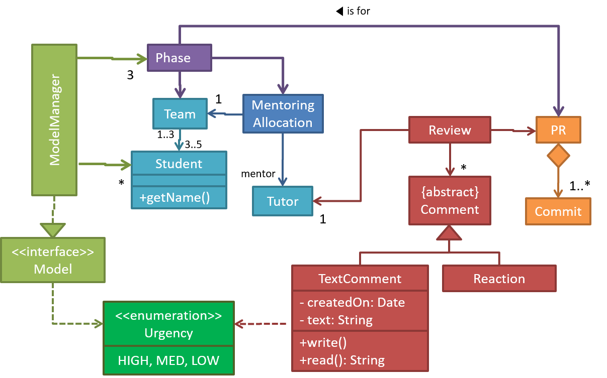
A model provides a simpler view of a complex entity because a model captures only a selected aspect. This omission of some aspects implies models are
abstractions
.
Textbook
Design → Design Fundamentals → Abstraction →
What
Abstraction is a technique for dealing with complexity. It works by establishing a level of complexity we are interested in, and suppressing the more complex details below that level.
The guiding principle of abstraction is that only details that are relevant to the current perspective or the task at hand need to be considered. It is the process of hiding complex internal or less relevant details to focus only on essential or more important details. As most programs are written to solve complex problems involving large amounts of intricate details, it is impossible to deal with all these details at the same time. That is where abstraction can help.
Data abstraction: abstracting away the lower level data items and thinking in terms of bigger entities Example Within a certain software component, you might deal with a user data type, while ignoring the details contained in the user data item such as name and date of birth. These details have been ‘abstracted away’ as they do not affect the task of that software component.
Control abstraction: abstracting away details of the actual control flow to focus on tasks at a higher level Example print("Hello") is an abstraction of the actual output mechanism within the computer.
Abstraction can be applied repeatedly to obtain progressively higher levels of abstraction. Example Levels of data abstraction: a File is a data item that is at a higher level than an array, and an array is at a higher level than a bit. Example Levels of control abstraction: execute(Game) is at a higher level than print(Char), which is at a higher level than an Assembly language instruction MOV.
Abstraction is a general concept that is not limited to just data or control abstractions.
Example More general forms of abstraction:
An OOP class is an abstraction over related data and behaviors.
An architecture is a higher-level abstraction of the design of a software system.
Models (e.g., UML models) are abstractions of some aspect of reality.
Example A class diagram captures the structure of the software design but not the behavior.
Multiple models of the same entity may be needed to capture it fully. Example In addition to a class diagram (or even multiple class diagrams), a number of other diagrams may be needed to capture various interesting aspects of the software.
b) To communicate information among stakeholders. Models can be used as a visual aid in discussions and documentation.
Example Using models to communicate:
You can use an architecture diagram (a model) to explain the high-level design of the software to developers.
A business analyst can use a use case diagram (a model) to explain to the customer the functionality of the system.
A developer document can use class diagrams (a model) explain the design of a component to a new developer.
c) As a blueprint for creating software. Models can be used as instructions for building software.
Example Using models as blueprints:
A senior developer draws various models to propose a design for an OOP software and passes it to a junior programmer to implement.
A software tool allows users to draw models using its interface and the tool automatically generates the code based on the model.
Model Driven Development ( extra)
Model-driven development (MDD), also called Model-driven engineering, is an approach to software development that strives to exploit models as blueprints. MDD uses models as primary engineering artifacts when developing software. That is, the system is first created in the form of models. After that, the models are converted to code using code-generation techniques (usually, automated or semi-automated, but can even involve manual translation from model to code). MDD requires the use of a very expressive modeling notation (graphical or otherwise), often specific to a given problem domain. It also requires sophisticated tools to generate code from models and maintain the link between models and the code. One advantage of MDD is that the same model can be used to create software for different platforms and different languages. MDD has a lot of promise, but it is still an emerging technology.
Unified Modeling Language (UML) is a graphical notation to describe various aspects of a software system. UML is the brainchild of three software modeling specialists James Rumbaugh, Grady Booch and Ivar Jacobson (also known as the Three Amigos). Each of them had developed their own notation for modeling software systems before joining forces to create a unified modeling language (hence, the term ‘Unified’ in UML). UML is currently the most commonly used modeling notation in the software industry.
The following diagram shows different subtypes of UML diagrams.
it is useful to be able to model how the relevant objects are 'networked' together
object structures within the same software can change over time
Note that these object structures within the same software can change over time .
rules that object structures need to follow can be illustrated as a class structure
UML Object Diagrams model object structures. UML Class Diagrams model class structures.
Original explanation & examples
An OO solution is basically a network of objects interacting with each other. Therefore, it is useful to be able to model how the relevant objects are 'networked' together inside a software i.e., how the objects are connected together.
Example Given below is an illustration of some objects and how they are connected together. Note: the diagram uses an ad-hoc notation.
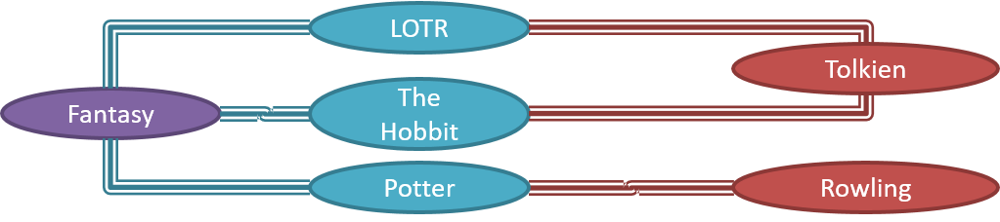
Note that these object structures within the same software can change over time.
Example Given below is how the object structure in the previous example could have looked at a different time.
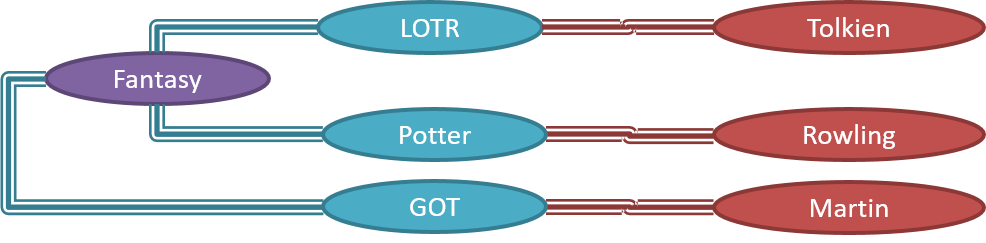
However, object structures do not change at random; they change based on a set of rules set by the designer of that software. Those rules that object structures need to follow can be illustrated as a class structurei.e., a structure that exists among the relevant classes.
Example Here is a class structure (drawn using an ad-hoc notation) that matches the object structures given in the previous two examples. Note how this class structure does not allow any connection between Genre objects and Author objects, a rule followed by the two object structures above.
UML Object Diagrams model object structures. UML Class Diagrams model class structures.
Example Here is an object diagram for the above example:
Associations are the main connections among the classes in a class diagram.
associations can show additional decorations such as association labels , association roles , multiplicity and navigability
In addition, associations can show additional decorations such as association labels , association roles , multiplicity and navigability to add more information to a class diagram.
Original explanation & examples
Classes form the basis of class diagrams.
UML Class Diagrams → Introduction → What — Open the original page for this interactive item.
UML Class Diagrams → Classes → What — Open the original page for this interactive item.
UML Class Diagrams → Class-Level Members → What — Open the original page for this interactive item.
Associations are the main connections among the classes in a class diagram.
OOP Associations → What — Open the original page for this interactive item.
UML Class Diagrams → Associations → What — Open the original page for this interactive item.
UML Class Diagrams → Associations as Attributes — Open the original page for this interactive item.
The most basic class diagram is a bunch of classes with some solid lines among them to represent associations, such as this one.
Example A class diagram showing associations between classes.
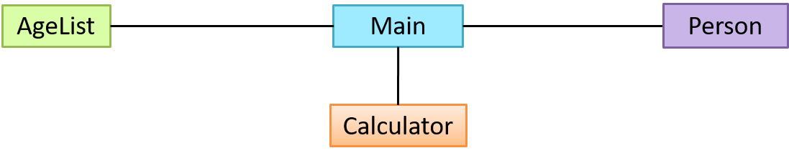
In addition, associations can show additional decorations such as association labels, association roles, multiplicity and navigability to add more information to a class diagram.
UML Class Diagrams → Associations → Labels — Open the original page for this interactive item.
UML Class Diagrams → Associations → Roles — Open the original page for this interactive item.
OOP Associations → Navigability — Open the original page for this interactive item.
UML Class Diagrams → Associations → Navigability — Open the original page for this interactive item.
OOP Associations → Multiplicity — Open the original page for this interactive item.
UML Class Diagrams → Associations → Multiplicity — Open the original page for this interactive item.
Example Here is the same class diagram shown earlier but with some additional information included:
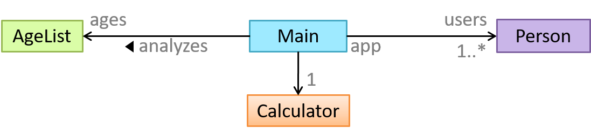
Exercises:
Which association notations are shown?
Which association notations are shown in this diagram?
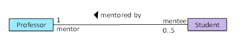
a. association labels
b. association roles
c. association multiplicity
Answer
(a) (b) (c)
Explanation: '1’ is a multiplicity, ‘mentored by’ is a label, and ‘mentor’ is a role.
Explain Class Diagram
Explain the associations, navigabilities, and multiplicities in the class diagram below:
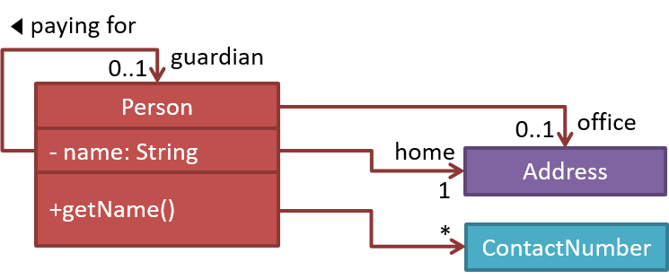
Draw Class Diagram for Box etc.
Draw a class diagram for the code below. Show the attributes, methods, associations, navigabilities, and multiplicities.
classBox{
private Item[] parts = new Item[10];
private Item spareItem;
private Lid lid; // lid of this boxprivate Box outerBox;
publicvoidopen(){
// ... }
}
classItem{
publicstaticint totalItems;
}
classLid{
Box box; // the box for which this is the lid}
UML → Object Diagrams → Introduction — Open the original page for this interactive item.
Object diagrams use a notation similar to that of class diagrams (as the former are instantiations of the latter).
UML → Object Diagrams → Objects — Open the original page for this interactive item.
UML → Object Diagrams → Associations — Open the original page for this interactive item.
Exercises:
Draw an Object Diagram for Box etc.
This question is based on the following question from another topic:
Draw Class Diagram for Box etc.
Draw a class diagram for the code below. Show the attributes, methods, associations, navigabilities, and multiplicities.
classBox{
private Item[] parts = new Item[10];
private Item spareItem;
private Lid lid; // lid of this boxprivate Box outerBox;
publicvoidopen(){
// ... }
}
classItem{
publicstaticint totalItems;
}
classLid{
Box box; // the box for which this is the lid}
Draw an object diagram to match the code. Include objects of all three classes in your object diagram.
multiple object diagrams can correspond to a single class diagram
Furthermore, multiple object diagrams can correspond to a single class diagram .
the object diagram should show either an object of the parent class or the child class, but not both
When the class diagram has an inheritance relationship, the object diagram should show either an object of the parent class or the child class, but not both .
Association labels/roles can be omitted unless they add value
Association labels/roles can be omitted unless they add value (e.g., showing them is useful if there are multiple associations between the two classes in concern -- otherwise you wouldn't know which association the object diagram is showing)
Original explanation & examples
Compared to the notation for class diagrams, object diagrams differ in the following ways:
Show objects instead of classes:
Instance name may be shown
There is a : before the class name
Instance and class names are underlined
Methods are omitted
Multiplicities are omitted. Reason: an association line in an object diagram represents a connection to exactly one object (i.e., the multiplicity is always 1).
Furthermore, multiple object diagrams can correspond to a single class diagram.
Both object diagrams are derived from the same class diagram shown earlier. In other words, each of these object diagrams shows ‘an instance of’ the same class diagram.
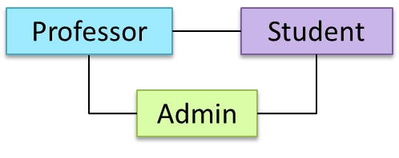
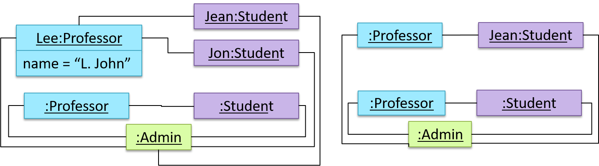
When the class diagram has an inheritance relationship, the object diagram should show either an object of the parent class or the child class, but not both.
Suppose Employee is a child class of the Person class. The class diagram will be as follows:
Now, how do you show an Employee object named jake?
This is not correct, as there should be only one object.
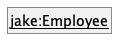
This is OK.
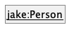
This is OK, as jakeis a Person too.
That is, we can show the parent class instead of the child class if the child class doesn't matter to the purpose of the diagram (i.e., the reader of this diagram will not need to know that jake is in fact an Employee).
Association labels/roles can be omitted unless they add value (e.g., showing them is useful if there are multiple associations between the two classes in concern -- otherwise you wouldn't know which association the object diagram is showing)
Consider this class diagram and the object diagram:
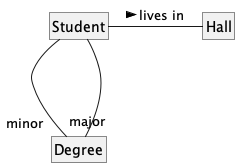
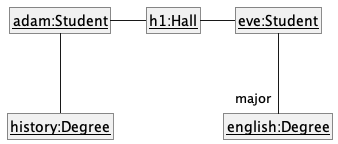
We can clearly see that both Adam and Eve lives in hall h1 (i.e., OK to omit the association label lives in) but we can't see if History is Adam's major or his minor (i.e., the diagram should have included either an association label or a role there). In contrast, we can see Eve is an English major.
Exercises:
Which class diagrams match the object diagram?
Which of these class diagrams match the given object diagram?
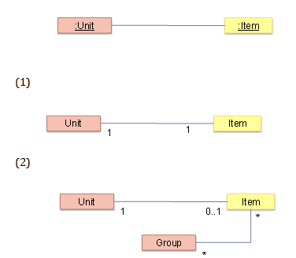
1
2
Answer
(1) (2)
Explanation: Both class diagrams allow one Unit object to be linked to one Item object.
UML notes can augment UML diagrams with additional information.
These notes can be shown connected to a particular element in the diagram or can be shown without a connection. The diagram below shows examples of both.
Original explanation & examples
UML notes can augment UML diagrams with additional information. These notes can be shown connected to a particular element in the diagram or can be shown without a connection. The diagram below shows examples of both.
A constraint can be given inside a note, within curly braces
A constraint can be given inside a note, within curly braces . Natural language or a formal notation such as OCL (Object Constraint Language) may be used to specify constraints.
Original explanation & examples
A constraint can be given inside a note, within curly braces. Natural language or a formal notation such as OCL (Object Constraint Language) may be used to specify constraints.
Modelling Structure › Class diagrams - intermediate
Recall the key point, then reveal.
A class diagram can also show different types of relationships between classes: inheritance, compositions, aggregations, dependencies.
A class diagram can also show different types of class-like entities:
Original explanation & examples
A class diagram can also show different types of relationships between classes: inheritance, compositions, aggregations, dependencies.
Modeling inheritance
OOP → Inheritance → What — Open the original page for this interactive item.
UML → Class Diagrams → Inheritance → What — Open the original page for this interactive item.
Modeling composition
OOP → Associations → Composition — Open the original page for this interactive item.
UML → Class Diagrams → Composition → What — Open the original page for this interactive item.
Modeling aggregation
OOP → Associations → Aggregation — Open the original page for this interactive item.
UML → Class Diagrams → Aggregation → What — Open the original page for this interactive item.
Modeling dependencies
OOP → Associations → Dependencies — Open the original page for this interactive item.
UML → Class Diagrams → Dependencies → What — Open the original page for this interactive item.
A class diagram can also show different types of class-like entities:
Modeling enumerations
OOP → Classes → Enumerations — Open the original page for this interactive item.
UML → Class Diagrams → Enumerations → What — Open the original page for this interactive item.
Modeling abstract classes
OOP → Inheritance → Abstract Classes — Open the original page for this interactive item.
UML → Class Diagrams → Abstract Classes → What — Open the original page for this interactive item.
Modeling interfaces
OOP → Inheritance → Interfaces — Open the original page for this interactive item.
UML → Class Diagrams → Interfaces → What — Open the original page for this interactive item.
Exercises:
Statements about class diagrams
Which of these statements match the class diagram?
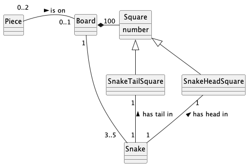
a. A Snake must belong to exactly one Board.
b. A Piece can be not on a Board.
c. A Board can have up to two Pieces.
d. A SnakeHeadSquare contains exactly one Snake's head.
e. A Board can have 100 or fewer Squares.
f. A SnakeTailSquare may or may not contain a tail of a Snake
g. The Board can have two Snakes.
Answer
(a)(b)(c)(d)(e)(f)(g)
Explanation:
(a) matches (multiplicity is 1)
(b) matches (multiplicity is 0..1 which means a Piece can be on 0Boards)
(c) matches (multiplicity is 0..2)
(d) matches (multiplicity is 1)
(e) doesn't match (a Board must have exactly 100 Squares)
(f) doesn't match (multiplicity is 1, not 0..1)
(g) doesn't match (multiplicity is 3..5, which doesn't include 2)
Explain notations in the class diagram
Explain the meaning of various class diagram notations in the following class diagram:
Draw a Class Diagram for the code (StockItem, Inventory, Review, etc.)
(a) Draw a class diagram to represent the code. Show all attributes, methods, associations, navigabilities, visibilities, known multiplicities, and association roles. Show associations as lines.
(b) Draw an object diagram to represent the situation where the inventory has one item named spanner and a review of POOR rating
i.e., new Inventory().add(new StockItem("spanner", Rating.POOR)).
An association class represents additional information about an association.
Original explanation & examples
An association class represents additional information about an association. It is a normal class but plays a special role from a design point of view. Example A Man class and a Woman class are linked with a ‘married to’ association and there is a need to store the date of marriage. However, that data is related to the association rather than specifically owned by either the Man object or the Woman object. In such situations, an additional association class can be introduced, e.g., a Marriage class, to store such information.
Implementing association classes
There is no special way to implement an association class. It can be implemented as a normal class that has variables to represent the endpoints of the association it represents.
Example In the code below, the Transaction class is an association class that represents a transaction between a Person who is the seller and another Person who is the buyer.
classTransaction{
//all fields are compulsory Person seller;
Person buyer;
Date date;
String receiptNumber;
Transaction(Person seller, Person buyer, Date date, String receiptNumber) {
//set fields }
}
Exercises:
Which are suitable as an Association Class?
Which of these are suitable as an Association Class? Note: the orange color class in the middle is the one being proposed as an association class.
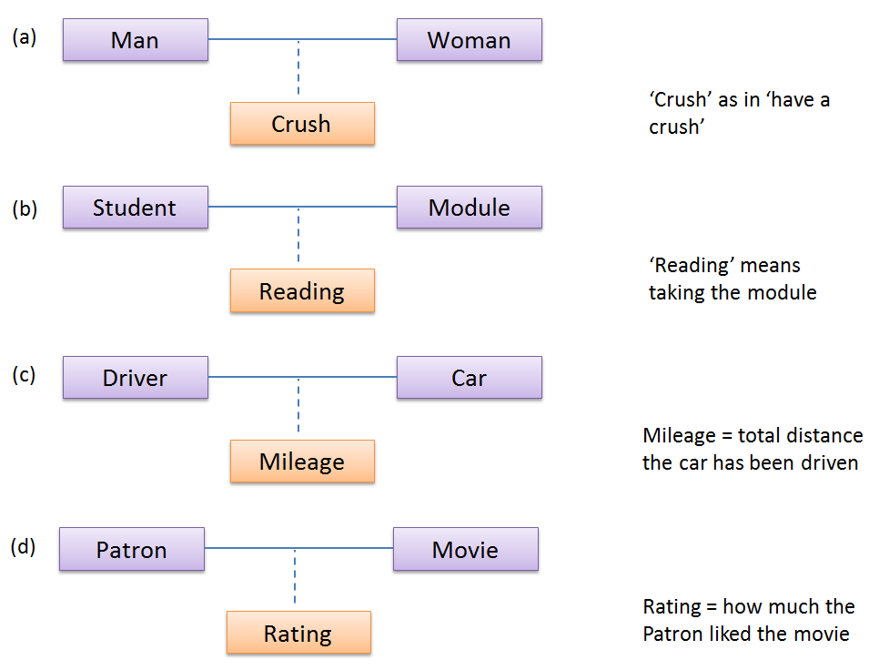
a
b
c
d
Answer
(a)(b)(c)(d)
Explanation: Mileage is a property of the car, and not specifically about the association between the Driver and the Car. If Mileage was defined as the total number of miles that car was driven by that driver, then it would be suitable as an association class.
UML stereotypes are a lightweight extension mechanism for adding domain-specific meaning to existing UML elements
UML stereotypes are a lightweight extension mechanism for adding domain-specific meaning to existing UML elements without changing the core UML language. They label elements such as classes, objects, or relationships with roles or semantics beyond their default interpretation (for example, <<entity>> , <<create>> , <<facade>> ), helping readers understand intent, architectural responsibilities, or usage patterns at a glance. Stereotypes do not change the fundamental structure of the model; instead, they enrich it with contextual meaning, often forming part of a UML profile tailored to a particular problem domain.
The same << >> notation is also used to denote built-in classifier kinds <<interface>> and <<enumeration>> .
While they look like stereotypes syntactically, they are semantically closer to keywords indicating the element’s true type -- unlike stereotypes, which are optional information that don't change the underlying UML element. For example, removing a stereotype from an element doesn't change the type of the element but removing <<interface>> or <<enumeration>> from an element changes the element to a regular class.
Original explanation & examples
UML stereotypes are a lightweight extension mechanism for adding domain-specific meaning to existing UML elements without changing the core UML language. They label elements such as classes, objects, or relationships with roles or semantics beyond their default interpretation (for example, <<entity>>, <<create>>, <<facade>>), helping readers understand intent, architectural responsibilities, or usage patterns at a glance. Stereotypes do not change the fundamental structure of the model; instead, they enrich it with contextual meaning, often forming part of a UML profile tailored to a particular problem domain.
Example:
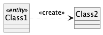
The same << >> notation is also used to denote built-in classifier kinds <<interface>> and <<enumeration>>. While they look like stereotypes syntactically, they are semantically closer to keywords indicating the element’s true type -- unlike stereotypes, which are optional information that don't change the underlying UML element. For example, removing a stereotype from an element doesn't change the type of the element but removing <<interface>> or <<enumeration>> from an element changes the element to a regular class.
JavaFX is a technology for building Java-based GUIs. Previously it was a part of Java itself, but has become a third-party dependency since then. It is now being maintained by OpenJDK.
Basic › Use nouns for things and verbs for actions
Recall the key point, then reveal.
Use nouns for classes/variables and verbs for methods/functions.
Distinguish clearly between single-valued and multi-valued variables.
Original explanation & examples
Every system is built from a domain-specific language designed by the programmers to describe that system. Functions are the verbs of that language, and classes are the nouns. -- Robert C. Martin, Clean Code: A Handbook of Agile Software Craftsmanship
Use nouns for classes/variables and verbs for methods/functions.
Example Naming a class and a method:
Name for a
Bad
Good
Class
CheckLimit
LimitChecker
Method
result()
calculate()
Distinguish clearly between single-valued and multi-valued variables.
Example Naming single-valued and multi-valued variables:
Avoid foreign language words, slang, and names that are only meaningful within specific contexts/times
Original explanation & examples
Use correct spelling in names. Avoid 'texting-style' spelling. Avoid foreign language words, slang, and names that are only meaningful within specific contexts/timese.g., terms from private jokes, a TV show currently popular in your country.
While it is preferable not to have lengthy names, names that are 'too short' are even worse. If you must abbreviate or use acronyms, do it consistently. Explain their full meaning at an obvious location.
Related things should be named similarly, while unrelated things should NOT.
Original explanation & examples
Related things should be named similarly, while unrelated things should NOT.
Example Consider these variables:
colorBlack: hex value for color black
colorWhite: hex value for color white
colorBlue: number of times blue is used
hexForRed: hex value for color red
This is misleading because colorBlue is named similarly to colorWhite and colorBlack but has a different purpose while hexForRed is named differently but has a very similar purpose to the first two variables. The following is better:
hexForBlackhexForWhitehexForRed
blueColorCount
Avoid misleading or ambiguous names (e.g., those with multiple meanings), similar-sounding names, hard-to-pronounce ones (e.g., avoid ambiguities like "is that a lowercase L, capital I or number 1?", or "is that number 0 or letter O?"), almost similar names.
Example Names that are misleading, ambiguous, or hard to say:
Bad
Good
Reason
phase0
phaseZero
Is that zero or letter O?
rwrLgtDirn
rowerLegitDirection
Hard to pronounce
rightleftwrong
rightDirectionleftDirectionwrongResponse
right is for 'correct' or 'opposite of 'left'?
redBooksreadBooks
redColorBooksbooksRead
red and read (past tense) sound the same
FiletMignon
egg
If the requirement is just a name of a food, egg is a much easier choice to type/say than FiletMignon
Static analysis : Static analysis is the analysis of code without actually executing the code.
Static analysis of code can find useful information such as unused variables
Static analysis of code can find useful information such as unused variables , unhandled exceptions, style errors, and statistics. Most modern IDEs come with some inbuilt static analysis capabilities. For example, an IDE can highlight unused variables as you type the code into the editor.
In contrast, dynamic analysis requires the code to be executed to gather additional information about the code
The term static in static analysis refers to the fact that the code is analyzed without executing the code. In contrast, dynamic analysis requires the code to be executed to gather additional information about the code , e.g., performance characteristics.
Higher-end static analysis tools ( static analyzers ) can perform more complex analysis such as locating potential bugs, memory leaks, and inefficient code structures.
Linters are a subset of static analyzers
Linters are a subset of static analyzers that specifically aim to locate areas where the code can be made 'cleaner'.
Original explanation & examples
Video — Open the original page for this interactive item.
Static analysis: Static analysis is the analysis of code without actually executing the code.
Static analysis of code can find useful information such as unused variables, unhandled exceptions, style errors, and statistics. Most modern IDEs come with some inbuilt static analysis capabilities. For example, an IDE can highlight unused variables as you type the code into the editor.
The term static in static analysis refers to the fact that the code is analyzed without executing the code. In contrast, dynamic analysis requires the code to be executed to gather additional information about the code, e.g., performance characteristics.
Higher-end static analysis tools (static analyzers) can perform more complex analysis such as locating potential bugs, memory leaks, and inefficient code structures. Example Some static analyzers for Java: CheckStyle, PMD, FindBugs
Linters are a subset of static analyzers that specifically aim to locate areas where the code can be made 'cleaner'.
Code review is the systematic examination of code with the intention of finding where the code can be improved.
Reviews can be done in various forms. Some examples are:
Pull Request reviews
Project management platforms such as GitHub and BitBucket allow new code to be proposed as Pull Requests and provide the ability for others to review the code in the PR.
In pair programming
Because pair programming involves two programmers working on the same code at the same time, there is an implicit review of the code by the other member of the pair.
Pair programming
Pair programming :
Formal inspections
Inspections involve a group of people systematically examining project artifacts to discover defects. Members of the inspection team play various roles during the process, such as: the author - the creator of the artifact the moderator - the planner and executor of the inspection meeting the secretary - the recorder of the findings of the inspection the inspector/reviewer - the one who inspects/reviews the artifact
Original explanation & examples
Video — Open the original page for this interactive item.
Code review is the systematic examination of code with the intention of finding where the code can be improved.
Reviews can be done in various forms. Some examples are:
Pull Request reviews
Project management platforms such as GitHub and BitBucket allow new code to be proposed as Pull Requests and provide the ability for others to review the code in the PR.
In
pair programming
Because pair programming involves two programmers working on the same code at the same time, there is an implicit review of the code by the other member of the pair.
Pair Programming
Pair programming:
Pair programming is an agile software development technique in which two programmers work together at one workstation. One, the driver, writes code while the other, the observer or navigator, reviews each line of code as it is typed in. The two programmers switch roles frequently. [source: Wikipedia]
Inspections involve a group of people systematically examining project artifacts to discover defects. Members of the inspection team play various roles during the process, such as:
the author - the creator of the artifact
the moderator - the planner and executor of the inspection meeting
the secretary - the recorder of the findings of the inspection
the inspector/reviewer - the one who inspects/reviews the artifact
Advantages of code review over testing:
It can detect functionality defects as well as other problems such as coding standard violations.
It can verify non-code artifacts and incomplete code.
It does not require test drivers or stubs.
Disadvantages:
It is a manual process and is therefore error-prone.
A software requirement specifies a need to be fulfilled by the software product.
A software project may be one of two types:
a brownfield project
a greenfield project
Requirements come from stakeholders .
Stakeholder
Stakeholder : An individual or an organization that is involved in or potentially affected by the software project. Examples include users, sponsors, developers, interest groups, government agencies, etc.
Identifying requirements is often not easy.
Original explanation & examples
A software requirement specifies a need to be fulfilled by the software product.
A software project may be one of two types:
a brownfield project, i.e., a project to replace or update an existing software product Example Adding an online payment option to a university's existing course registration system.
a greenfield project, i.e., a project to develop a new system from scratch Example Building a new app that lets students swap tutorial slots, where no such system exists yet.
In either case, requirements need to be gathered, analyzed, specified, and managed.
Requirements come from stakeholders.
Stakeholder: An individual or an organization that is involved in or potentially affected by the software project. Examples include users, sponsors, developers, interest groups, government agencies, etc.
Identifying requirements is often not easy. Example Stakeholders may not be aware of their precise needs, may not know how to communicate their requirements correctly, or may not be willing to spend effort identifying requirements.
Exercises:
Stakeholders of an LMS
Who are the potential stakeholders of an LMS (Learning Management System) software such as Canvas?
Answer
Some obvious stakeholders:
Users e.g., students, instructors, admins
Clients e.g., institutions that pay to use the LMS
Vendors (their employees, their investors) involved in selling the LMS product/services to education institutions
Some examples of non-obvious stakeholders:
Developers and others involved in the software project e.g., project managers, testers, etc.
Ecosystem community e.g., third-party app developers, trainers
Regulatory bodies e.g., those who are overseeing the storage and use of data of their citizens
Special interest groups e.g., organizations who are concerned about rights of minors
Functional requirements specify what the system should do.
Non-functional requirements specify the constraints under which the system is developed and operated.
NFRs are easier to miss.
NFRs are critical to the success of the software.
Original explanation & examples
Requirements can be divided into two in the following way:
Functional requirements specify what the system should do. Example The system should allow a user to search for a book by its title.
Non-functional requirements specify the constraints under which the system is developed and operated. Example The search should return results within two seconds.
Example Some categories of non-functional requirements:
Data requirements, e.g., size, volatility, persistence, etc.
Environment requirements, e.g., the technical environment in which the system would operate or with which it needs to be compatible.
Performance, Security, Usability, Interoperability, Maintainability, Compliance with regulations, and more ...
Example Some concrete NFRs, drawn from various projects:
Business/domain rules: the size of the minefield cannot be smaller than five.
Constraints: system testers are available only during the last month of the project.
Performance requirements: the system should respond within two seconds.
Quality requirements: the system should be usable by a novice who has never carried out an online purchase.
Process requirements: the project is expected to adhere to a schedule that delivers a feature set every month.
You may have to spend extra effort identifying NFRs as early as possible because:
NFRs are easier to miss. Example Stakeholders tend to think of functional requirements first.
Sometimes NFRs are critical to the success of the software. Example A web application that is too slow or that has weak security is unlikely to succeed even if it has all the right functionality.
Exercises:
TEAMMATES NFRs
Given below are some requirements of TEAMMATES (an online peer evaluation system for education). Which one of these are non-functional requirements?
a. The response to any use action should become visible within 5 seconds.
b. The application admin should be able to view a log of user activities.
c. The source code should be open source.
d. A course should be able to have up to 2000 students.
e. As a student user, I can view details of my team members so that I can know who they are.
f. The user interface should be intuitive enough for users who are not IT-savvy.
g. The product is offered as a free online service.
Answer
(a)(c)(d)(f)(g)
Explanation: (b) are (e) are functions available for a specific user types. Therefore, they are functional requirements. (a), (c), (d), (f) and (g) are either constraints on functionality or constraints on how the project is done, both of which are considered non-functional requirements.
Requirements can be prioritized based on the importance and urgency
Requirements can be prioritized based on the importance and urgency , while keeping in mind the constraints of schedule, budget, staff resources, quality goals, and other constraints.
A common approach is to group requirements into priority categories. Note that all such scales are subjective, and stakeholders define the meaning of each level in the scale for the project at hand.
Some requirements can be discarded if they are considered ‘out of scope ’.
Original explanation & examples
Requirements can be prioritized based on the importance and urgency, while keeping in mind the constraints of schedule, budget, staff resources, quality goals, and other constraints.
A common approach is to group requirements into priority categories. Note that all such scales are subjective, and stakeholders define the meaning of each level in the scale for the project at hand.
Example One scheme for categorizing requirements:
Essential: The product must fulfill this requirement; otherwise, users will not accept it.
Typical: Most similar systems have this feature although the product can survive without it.
Novel: New features that could differentiate this product from the rest.
Other schemes:
High, Medium, Low
Must-have, Nice-to-have, Unlikely-to-have
Level 0, Level 1, Level 2, ...
Some requirements can be discarded if they are considered ‘out of scope’.
Example The requirement given below is for a Calendar application. Stakeholders of the software (e.g., product designers) might decide it is outside the software's scope.
The software records the actual time taken by each task and shows the difference between the actual and scheduled time for the task.
A requirement that is unambiguous and testable can specify an observable result which can determine whether it has been met.
Original explanation & examples
Here are some characteristics of well-defined requirements
[📖 zielczynski]
:
Unambiguous
Testable (verifiable)
Clear (concise, terse, simple, precise)
Correct
Understandable
Feasible (realistic, possible)
Independent
Atomic
Necessary
Implementation-free (i.e., abstract)
A requirement that is unambiguous and testable can specify an observable result which can determine whether it has been met.
Example Two requirements from the same project, one testable and one not:
GoodThe system should respond within two seconds. You can measure this, and the measurement settles the matter.
BadThe system should be usable by a novice who has never carried out an online purchase. Two people can disagree about whether the system is 'usable', and neither can show the other is wrong.
The second can be rewritten so that evidence settles it:
GoodA user who has never carried out an online purchase should be able to complete a purchase unaided, on the first attempt, within five minutes.
Besides these criteria for individual requirements, the set of requirements as a whole should be:
Consistent
Non-redundant
Complete
Exercises:
Which of these are testable?
Which of these requirements could be settled by running a test, rather than by arguing about what the words mean?
a. The app should launch within three seconds on a five-year-old phone.
b. The app should have a modern look and feel.
c. A course should be able to have up to 2000 students.
d. Error messages should be helpful.
Answer
(a)(c)
Explanation: (a) and (c) name a result you can observe, so a test either passes or fails. (b) and (d) state judgments: 'modern' and 'helpful' mean something different to each reader, so two reviewers can disagree and neither can be shown to be wrong. Both could be rewritten into testable form, e.g., (d) could become 'every error message should name the field that caused the error and what the user should enter instead'.
Requirements are not settled once and then left alone; they keep changing while the product is being built.
Three reasons account for most of it:
Stakeholders work out what they want by seeing something concrete.
The world the product lives in changes.
The team learns what things actually cost.
A specification that is not kept up to date becomes misleading
Every change is also a decision about what will not be built.
Accepting a new requirement late competes with requirements already agreed, so priorities have to be revisited rather than settled once at the start.
Original explanation & examples
Requirements are not settled once and then left alone; they keep changing while the product is being built. Three reasons account for most of it:
Stakeholders work out what they want by seeing something concrete. Example A user who could not describe the report they needed can say exactly what is wrong with the first version of it.
The world the product lives in changes. Example A new regulation comes into force, or a competitor ships a feature that users now expect.
The team learns what things actually cost. Example A requirement turns out to take ten times the effort everyone assumed, which changes whether it is worth having at all.
Two things follow from this.
A specification that is not kept up to date becomes misleading, because people keep acting on it. Example A developer builds the version that was superseded a month ago; a tester reports a defect against behavior nobody wants any more.
Every change is also a decision about what will not be built. Accepting a new requirement late competes with requirements already agreed, so priorities have to be revisited rather than settled once at the start.
Brainstorming : A group activity designed to generate a large number of diverse and creative ideas for the solution of a problem.
In a brainstorming session there are no "bad" ideas. The aim is to generate ideas, not to validate them.
Brainstorming encourages you to "think outside the box" and put "crazy" ideas on the table without fear of rejection.
Original explanation & examples
Brainstorming: A group activity designed to generate a large number of diverse and creative ideas for the solution of a problem.
In a brainstorming session there are no "bad" ideas. The aim is to generate ideas, not to validate them. Brainstorming encourages you to "think outside the box" and put "crazy" ideas on the table without fear of rejection.
Studying existing products can unearth shortcomings that a new product can address.
Original explanation & examples
Studying existing products can unearth shortcomings that a new product can address. Product manuals and other forms of documentation can tell us how existing solutions work. Example When developing a game for a mobile device, a look at a similar PC game can give insight into the kind of features and interactions the mobile game can offer.
Observing users in their natural work environment can uncover product requirements.
Original explanation & examples
Observing users in their natural work environment can uncover product requirements. Usage data from an existing system can also show how that system is being used, which can help in building a better replacement. Example Usage data can reveal the situations where the user makes mistakes when using the current system.
Interviewing stakeholders and domain experts can produce useful information about project requirements.
How much it produces depends far more on how the interview is run than on how long it lasts.
Find out what the person is responsible for before you meet them
Find out what the person is responsible for before you meet them , and decide what only they can tell you. An interview spent on things you could have looked up is a wasted one.
Open with something concrete rather than an abstract question.
'What do you need?' invites a vague answer, or a feature request that hides the need behind it. Walking through a recent situation, a screen of the current system, or a prototype gets you specifics.
Ask what goes wrong today and what they do instead.
Workarounds are where unmet requirements hide: if someone keeps a private spreadsheet, the system is failing them in a way worth understanding.
Play the answer back in your own words before moving on.
It is very common for both sides to leave an interview believing they agreed, having understood different things.
Confirm your written notes with the interviewee afterward.
They can correct what you misheard while they still remember what they said.
Treat what you hear as claims to be checked, rather than requirements to be recorded.
Original explanation & examples
Interviewing stakeholders and
domain experts
can produce useful information about project requirements. How much it produces depends far more on how the interview is run than on how long it lasts.
Find out what the person is responsible for before you meet them, and decide what only they can tell you. An interview spent on things you could have looked up is a wasted one.
Open with something concrete rather than an abstract question.'What do you need?' invites a vague answer, or a feature request that hides the need behind it. Walking through a recent situation, a screen of the current system, or a prototype gets you specifics.
Ask what goes wrong today and what they do instead. Workarounds are where unmet requirements hide: if someone keeps a private spreadsheet, the system is failing them in a way worth understanding.
Play the answer back in your own words before moving on. It is very common for both sides to leave an interview believing they agreed, having understood different things.
Confirm your written notes with the interviewee afterward. They can correct what you misheard while they still remember what they said.
Example Part of an interview with a manager, for a system that handles leave applications:
You: Walk me through the last time someone on your team asked for leave. Manager: She emailed me, I checked the shared spreadsheet, and I replied saying yes. You: What were you checking in the spreadsheet? Manager: Whether anyone else was already away that week. And her leave balance, but that is usually out of date, so I ask the HR office instead. You: So you don't rely on the balance in the spreadsheet? Manager: No. I've been caught out by it before.
Two requirements surface that nobody asked for: an approver needs to see who else is away in the same period, and the leave balance has to be current enough to decide on.
Treat what you hear as claims to be checked, rather than requirements to be recorded. People often describe the process they are supposed to follow rather than the one they actually follow, and two stakeholders can want things that cannot both be true. Example One department wants every leave application approved by a manager; another wants short absences to need no approval at all.
Focus groups are a kind of informal interview within an interactive group setting. A group of people (e.g. potential users, beta testers) is asked about their understanding of a specific issue, process, product, advertisement, etc.
: How do focus groups work? - Hector Lanz ( extra) — Open the original page for this interactive item.
Prototype : A prototype is a mock-up, a scaled-down version, or a partial system constructed
to get users’ feedback.
to validate a technical concept (a "proof-of-concept" prototype).
to give a preview of what is to come, or to compare multiple alternatives on a small scale before committing fully to one alternative.
for early field-testing under controlled conditions.
Prototyping can uncover requirements, in particular, those related to how users interact with the system .
UI prototypes or mock-ups , also called wireframe diagrams, are often used in brainstorming sessions or in meetings with users to get quick feedback.
mock-ups
Prototyping can uncover requirements, in particular, those related to how users interact with the system . UI prototypes or mock-ups , also called wireframe diagrams, are often used in brainstorming sessions or in meetings with users to get quick feedback.
wireframe
Prototyping can uncover requirements, in particular, those related to how users interact with the system . UI prototypes or mock-ups , also called wireframe diagrams, are often used in brainstorming sessions or in meetings with users to get quick feedback.
Original explanation & examples
Prototype: A prototype is a mock-up, a scaled-down version, or a partial system constructed
to get users’ feedback.
to validate a technical concept (a "proof-of-concept" prototype).
to give a preview of what is to come, or to compare multiple alternatives on a small scale before committing fully to one alternative.
for early field-testing under controlled conditions.
Prototyping can uncover requirements, in particular, those related to how users interact with the system. UI prototypes or mock-ups, also called wireframe diagrams, are often used in brainstorming sessions or in meetings with users to get quick feedback.
Example A mock-up of a dialog box:
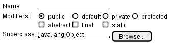
[source: plantuml.com]
Prototyping can be used for discovering as well as specifying requirements e.g. a UI prototype can serve as a specification of what to build.
Gathering requirements tells you what people said; validating requirements tells you whether what you noted down is what they meant.
It is worth distinguishing from the check that comes much later:
Some examples of things you can do to validate requirements:
State the requirement back to the stakeholder in words they would use.
Reading your own notes aloud to the person who gave them to you finds misunderstandings faster than rereading them yourself.
Put something in front of a user instead of describing it.
People correct a rough sketch or a mock-up far more readily than they correct a paragraph, because they can see what they would actually be given.
State the observable result of the requirement.
If the stakeholders don't agree that that result would make the requirement as 'met', the requirement is not ready yet. Record it as an open question, or as the next thing to put a prototype in front of.
Original explanation & examples
Gathering requirements tells you what people said; validating requirements tells you whether what you noted down is what they meant. It is worth distinguishing from the check that comes much later:
Some examples of things you can do to validate requirements:
State the requirement back to the stakeholder in words they would use. Reading your own notes aloud to the person who gave them to you finds misunderstandings faster than rereading them yourself.
Put something in front of a user instead of describing it. People correct a rough sketch or a mock-up far more readily than they correct a paragraph, because they can see what they would actually be given.
State the observable result of the requirement. If the stakeholders don't agree that that result would make the requirement as 'met', the requirement is not ready yet. Record it as an open question, or as the next thing to put a prototype in front of.
Example A requirement gathered for a learning management system:
Requirement: Lecturers should be able to see how their students are doing.
Check performed: Stated back to the lecturer who asked for it.
Findings: This turns out to mean something much narrower: they want to spot students who have stopped participating, early enough to contact them.
Implication: 'How students are doing' would have been built as a grade dashboard, which wasn't what they wanted.
A textual description (i.e., prose ) can be used to describe requirements.
Prose is especially useful when describing abstract ideas such as the vision of a product.
Original explanation & examples
A textual description (i.e., prose) can be used to describe requirements. Prose is especially useful when describing abstract ideas such as the vision of a product.
Example The product vision of the TEAMMATES Project, described using prose:
TEAMMATES aims to become the biggest student project in the world (biggest here refers to 'many contributors, many users, large codebase, evolving over a long period'). Furthermore, it aims to serve as a training tool for Software Engineering students who want to learn SE skills in the context of a non-trivial real software product.
Avoid using lengthy prose to describe requirements; they can be hard to follow.
User story : User stories are short, simple descriptions of a feature told from the perspective of the person who desires the new capability, usually a user or customer of the system. [ Mike Cohn ]
user stories
A common format for writing user stories is:
User story format
User story format : As a {user type/role} I can {function} so that {benefit}
You can write user stories using a physical medium or a digital tool
You can write user stories using a physical medium or a digital tool . For example, you can use index cards or sticky notes, and arrange them on walls or tables. Alternatively, you can use software (e.g., GitHub Project Boards , Trello, Google Docs, ...) to manage user stories digitally.
Original explanation & examples
User story: User stories are short, simple descriptions of a feature told from the perspective of the person who desires the new capability, usually a user or customer of the system. [Mike Cohn]
A common format for writing user stories is:
User story format: As a {user type/role} I can {function} so that {benefit}
Example User stories from a Learning Management System:
As a student, I can download files uploaded by lecturers, so that I can get my own copy of the files
As a lecturer, I can create discussion forums, so that students can discuss things online
As a tutor, I can print attendance sheets, so that I can take attendance during the class
You can write user stories using a physical medium or a digital tool. For example, you can use index cards or sticky notes, and arrange them on walls or tables. Alternatively, you can use software (e.g., GitHub Project Boards, Trello, Google Docs, ...) to manage user stories digitally.
a. They are based on stories users tell about similar systems
b. They are written from the user/customer perspective
c. They are always written in some physical medium such as index cards or sticky notes
Answer
a. Reason: Despite the name, user stories are not related to 'stories' about the software.
b.
c. Reason: It is possible to use software to record user stories. When the team members are not co-located this may be the only option.
What's wrong with this user story?
Critique the following user story taken from a software project to build an e-commerce website.
As a developer, I want to use Python to implement the software, so that we can reuse existing Python modules.
Hint
Refer to the definition of a user story.
User story: User stories are short, simple descriptions of a feature told from the perspective of the person who desires the new capability, usually a user or customer of the system. [Mike Cohn]
Answer
This user story is not written from the perspective of the user/customer.
Extract user stories from customer statement
Bill wants you to build a Human Resource Management (HRM) system. He mentions that the system will help employees to view their own leave balance. What are the user stories you can extract from that statement?
Hint
Remember to follow the correct format when writing user stories.
User story format: As a {user type/role} I can {function} so that {benefit}
Answer
As an employee, I can view my leave balance, so that I can know how many leave days I have left.
Note: the {benefit} part may vary as it is not specifically mentioned in the question.
You can write user stories at various levels . High-level user stories, called epics (or themes ) cover bigger functionality. You can then break down these epics into multiple user stories of normal size.
epics
You can write user stories at various levels . High-level user stories, called epics (or themes ) cover bigger functionality. You can then break down these epics into multiple user stories of normal size.
You can add conditions of satisfaction to a user story
You can add conditions of satisfaction to a user story to specify things that need to be true for the user story implementation to be accepted as ‘done’.
These are more widely known as acceptance criteria .
Whatever they are called, they are the part of a story that states an observable result, and therefore the part that survives when the conversation behind the story does not.
Other useful information that can be added to a user story
Other useful information that can be added to a user story includes (but is not limited to):
Priority: how important the user story is
Size: the estimated effort to implement the user story
Urgency: how soon the feature is needed
Original explanation & examples
The {benefit} can be omitted if it is obvious.
Example A user story with the benefit omitted:
As a user, I can log in to the system so that I can access my data
It is recommended to confirm there is a concrete benefit even if you omit it from the user story. If not, you could end up adding features that have no real benefit.
You can add more characteristics to the {user role} to provide more context to the user story.
Example User stories that add characteristics to the user role:
As a forgetful user, I can view a password hint, so that I can recall my password.
As an expert user, I can tweak the underlying formatting tags of the document, so that I can format the document exactly as I need.
You can write user stories at various levels. High-level user stories, called epics (or themes) cover bigger functionality. You can then break down these epics into multiple user stories of normal size.
Example An epic broken down into normal-sized user stories:
[Epic] As a lecturer, I can monitor student participation levels
As a lecturer, I can view the forum post count of each student
so that I can identify the activity level of students in the forum
As a lecturer, I can view webcast view records of each student
so that I can identify the students who did not view webcasts
As a lecturer, I can view file download statistics of each student
so that I can identify the students who did not download lecture materials
You can add conditions of satisfaction to a user story to specify things that need to be true for the user story implementation to be accepted as ‘done’.
Example A user story with conditions of satisfaction:
As a lecturer, I can view the forum post count of each student so that I can identify the activity level of students in the forum.
Conditions:
Separate post count for each forum should be shown Total post count of a student should be shown The list should be sortable by student name and post count
These are more widely known as acceptance criteria. Whatever they are called, they are the part of a story that states an observable result, and therefore the part that survives when the conversation behind the story does not.
Other useful information that can be added to a user story includes (but is not limited to):
Priority: how important the user story is
Size: the estimated effort to implement the user story
Urgency: how soon the feature is needed
More Examples
User stories for a travel website (credit: Mike Cohn)
As a registered user, I am required to log in so that I can access the system
As a forgetful user, I can request a password reminder so that I can log in if I forget mine
[Epic] As a user, I can cancel a reservation
As a premium site member, I can cancel a reservation up to the last minute
As a non-premium member, I can cancel up to 24 hours in advance
As a member, I am emailed a confirmation of any canceled reservation
[Epic] As a frequent flyer, I want to book a trip
As a frequent flyer, I want to book a trip using miles
As a frequent flyer, I want to rebook a trip I take often
As a frequent flyer, I want to request an upgrade
As a frequent flyer, I want to see if my upgrade cleared
Exercises:
Correct statements about user stories
Choose the correct statements
a. User stories are short and written in a formal notation.
b. User stories is another name for use cases.
c. User stories describes past experiences users had with similar systems. These are helpful in developing the new system.
d. User stories are not detailed enough to tell us exact details of the product.
Answer
d
Explanation: User stories are short and written in natural language, NOT in a formal language. They are used for estimation and scheduling purposes but do not contain enough details to form a complete system specification.
User stories capture user requirements in a way that is convenient for scoping , estimation , and scheduling .
User stories differ from traditional requirements specifications mainly in the level of detail.
User stories can capture non-functional requirements too
User stories can capture non-functional requirements too because even NFRs must benefit some stakeholder.
Functional requirements specify what the system should do.
Non-functional requirements specify the constraints under which the system is developed and operated.
NFRs are easier to miss.
NFRs are critical to the success of the software.
user stories are quite handy for recording requirements during early stages of requirements gathering
Given their lightweight nature, user stories are quite handy for recording requirements during early stages of requirements gathering .
Step 0:
Clear your mind of preconceived product ideas
Even if you already have some idea of what your product will look/behave like in the end, clear your mind of those ideas. The product is the solution . At this point, we are still at the stage of figuring out the problem (i.e., user requirements). Let's try to get from the problem to the solution in a systematic way, one step at a time.
Clear your mind of preconceived product ideas
Step 0: Clear your mind of preconceived product ideas
Even if you already have some idea of what your product will look/behave like in the end, clear your mind of those ideas. The product is the solution . At this point, we are still at the stage of figuring out the problem (i.e., user requirements). Let's try to get from the problem to the solution in a systematic way, one step at a time.
Step 1:
Define the target user as a persona :
Define the target user as a persona :
Step 1: Define the target user as a persona :
persona
Decide your target user's profile (e.g. a student, office worker, programmer, salesperson) and work patterns (e.g. Does he work in groups or alone? Does he share his computer with others?). A clear understanding of the target user will help when deciding the importance of a user story. You can even narrow it down to a persona . Here is an example:
Step 2:
Define the problem scope :
Decide the exact problem you are going to solve for the target user. It is also useful to specify what related problems it will not solve so that the exact scope is clear.
Define the problem scope :
Step 2: Define the problem scope :
Decide the exact problem you are going to solve for the target user. It is also useful to specify what related problems it will not solve so that the exact scope is clear.
Step 3:
List scenarios to form a narrative (aka user journey ):
List scenarios to form a narrative (aka user journey ):
Step 3: List scenarios to form a narrative (aka user journey ):
stages
Think of the various scenarios (aka stages your target user is likely to go through as she uses your app. Following a chronological sequence as if you are telling a story might be helpful.
Together, the scenarios form a user journey : a chronological narrative of a persona's interaction with the product.
A user journey helps you discover needs that are easy to miss when thinking only about individual features. Use it to find user stories; it does not replace them.
Step 4:
List the user stories to support the scenarios:
Based on the scenarios, decide on the user stories you need to support. For example, based on the scenario 'A. First use', you might have user stories such as these:
List the user stories to support the scenarios:
Step 4: List the user stories to support the scenarios:
Based on the scenarios, decide on the user stories you need to support. For example, based on the scenario 'A. First use', you might have user stories such as these:
Do not 'evaluate' the value of user stories while brainstorming
Other tips:
Don't be too hasty to discard 'unusual' user stories:
Those might make your product unique and stand out from the rest, at least for the target users.
Don't go into too much detail:
For example, consider this user story: As a user, I want to see a list of tasks that need my attention most at the present time, so that I pay attention to them first. When discussing this user story, don't worry about what tasks should be considered 'needs my attention most at the present time'. Those details can be worked out later.
Don't discuss implementation details or whether you are actually going to implement it:
When gathering requirements, your decision is whether the user's need is important enough for you to want to fulfill it. Implementation details can be discussed later. If a user story turns out to be too difficult to implement later, you can always omit it from the implementation plan.
Original explanation & examples
User stories capture user requirements in a way that is convenient for scoping, estimation, and scheduling.
[User stories] strongly shift the focus from writing about features to discussing them. In fact, these discussions are more important than whatever text is written. [Mike Cohn, MountainGoat Software 🔗]
User stories differ from traditional requirements specifications mainly in the level of detail. User stories should only provide enough details to make a reasonably low-risk estimate of how long the user story will take to implement. When the time comes to implement the user story, the developers will meet with the customer face-to-face to work out a more detailed description of the requirements. [
more...
]
User stories can capture
non-functional requirements
too because even NFRs must benefit some stakeholder.
Textbook
Requirements → Requirements →
Non-functional requirements
Requirements can be divided into two in the following way:
Functional requirements specify what the system should do. Example The system should allow a user to search for a book by its title.
Non-functional requirements specify the constraints under which the system is developed and operated. Example The search should return results within two seconds.
Example Some categories of non-functional requirements:
Data requirements, e.g., size, volatility, persistence, etc.
Environment requirements, e.g., the technical environment in which the system would operate or with which it needs to be compatible.
Performance, Security, Usability, Interoperability, Maintainability, Compliance with regulations, and more ...
Example Some concrete NFRs, drawn from various projects:
Business/domain rules: the size of the minefield cannot be smaller than five.
Constraints: system testers are available only during the last month of the project.
Performance requirements: the system should respond within two seconds.
Quality requirements: the system should be usable by a novice who has never carried out an online purchase.
Process requirements: the project is expected to adhere to a schedule that delivers a feature set every month.
You may have to spend extra effort identifying NFRs as early as possible because:
NFRs are easier to miss. Example Stakeholders tend to think of functional requirements first.
Sometimes NFRs are critical to the success of the software. Example A web application that is too slow or that has weak security is unlikely to succeed even if it has all the right functionality.
Exercises:
TEAMMATES NFRs
Given below are some requirements of TEAMMATES (an online peer evaluation system for education). Which one of these are non-functional requirements?
a. The response to any use action should become visible within 5 seconds.
b. The application admin should be able to view a log of user activities.
c. The source code should be open source.
d. A course should be able to have up to 2000 students.
e. As a student user, I can view details of my team members so that I can know who they are.
f. The user interface should be intuitive enough for users who are not IT-savvy.
g. The product is offered as a free online service.
Answer
(a)(c)(d)(f)(g)
Explanation: (b) are (e) are functions available for a specific user types. Therefore, they are functional requirements. (a), (c), (d), (f) and (g) are either constraints on functionality or constraints on how the project is done, both of which are considered non-functional requirements.
Example An NFR captured as a user story:
As a/an ___,
I want to ___,
so that ___.
impatient user
to be able to experience reasonable response time from the website while up to 1000 concurrent users are using it
I can use the app even when the traffic is at the maximum expected level
Given their lightweight nature, user stories are quite handy for recording requirements during early stages of requirements gathering.
A recipe for brainstorming user stories
Given below is a possible recipe you can use when writing user stories during the early stages of requirement gathering.
Step 0:Clear your mind of preconceived product ideas
Even if you already have some idea of what your product will look/behave like in the end, clear your mind of those ideas. The product is the solution. At this point, we are still at the stage of figuring out the problem (i.e., user requirements). Let's try to get from the problem to the solution in a systematic way, one step at a time.
Step 1:Define the target user as a persona:
Decide your target user's profile (e.g. a student, office worker, programmer, salesperson) and work patterns (e.g. Does he work in groups or alone? Does he share his computer with others?). A clear understanding of the target user will help when deciding the importance of a user story. You can even narrow it down to a persona. Here is an example:
Jean is a university student studying in a non-IT field. She interacts with a lot of people due to her involvement in university clubs/societies. ...
Step 2:Define the problem scope:
Decide the exact problem you are going to solve for the target user. It is also useful to specify what related problems it will not solve so that the exact scope is clear.
ProductX helps Jean keep track of all her school contacts. It does not cover communicating with contacts.
Step 3:List scenarios to form a narrative (aka user journey):
Think of the various scenarios (aka stages your target user is likely to go through as she uses your app. Following a chronological sequence as if you are telling a story might be helpful.
Together, the scenarios form a user journey: a chronological narrative of a persona's interaction with the product. A user journey helps you discover needs that are easy to miss when thinking only about individual features. Use it to find user stories; it does not replace them.
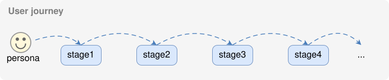
Stage: first use
Jean gets to know about ProductX. She downloads it and launches it to check out what it can do.
To help Jean learn the app capabilities, the app greets Jean with a ...
After playing around with the product for a bit, Jean wants to start using it for real.
...
Stage: second use (Jean is still a beginner)
Jean launches ProductX. She wants to find ...
...
Stage: 10th use (Jean is a little bit familiar with the app)
...
Stage: 100th use (Jean is an expert user)
Jean launches the app and does ... and ... followed by ... as usual.
Jean feels some of the data in the app is no longer needed. She wants to get rid of it to reduce clutter.
More examples that might apply to some products:
Jean uses the app at the start of the day to ...
Jean uses the app before going to sleep to ...
Jean hasn't used the app for a while because she was on a three-month training program. She is now back at work and wants to resume her daily use of the app.
Jean moves to another company. Some of her clients come with her but some don't.
Jean starts freelancing in her spare time. She wants to keep her freelancing clients separate from her other clients.
Step 4:List the user stories to support the scenarios:
Based on the scenarios, decide on the user stories you need to support. For example, based on the scenario 'A. First use', you might have user stories such as these:
As a potential user exploring the app, I can see the app populated with sample data, so that I can easily see how the app will look when it is in use.
As a user ready to start using the app, I can purge all current data, so that I can get rid of sample/experimental data I used for exploring the app.
To give another example, based on the scenario 'D. 100th use', you might have user stories such as these:
As an expert user, I can create shortcuts for tasks, so that I can save time on frequently performed tasks.
As a long-time user, I can archive/hide unused data, so that I am not distracted by irrelevant data.
Do not 'evaluate' the value of user stories while brainstorming. Reason: an important aspect of brainstorming is not judging the ideas generated.
Other tips:
Don't be too hasty to discard 'unusual' user stories:
Those might make your product unique and stand out from the rest, at least for the target users.
Don't go into too much detail:
For example, consider this user story: As a user, I want to see a list of tasks that need my attention most at the present time, so that I pay attention to them first.
When discussing this user story, don't worry about what tasks should be considered 'needs my attention most at the present time'. Those details can be worked out later.
Don't discuss implementation details or whether you are actually going to implement it:
When gathering requirements, your decision is whether the user's need is important enough for you to want to fulfill it. Implementation details can be discussed later. If a user story turns out to be too difficult to implement later, you can always omit it from the implementation plan.
While user stories can be recorded on physical paper in the initial stages, an online tool is more suitable for longer-term management of user stories, especially if the team is not co-located.
Tool Examples: How to use some example online tools to manage user stories
Google Sheets
Example A Google Sheet for recording user stories:
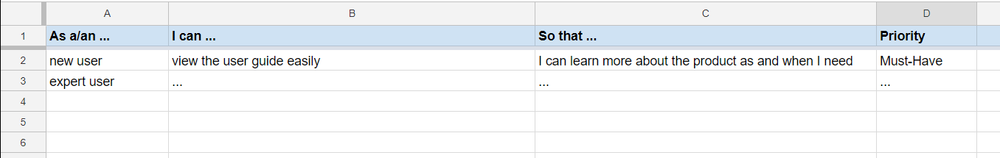
Trello
Example A Trello board for recording user stories:
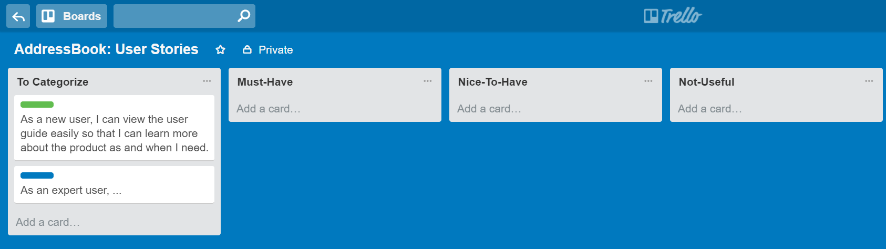
GitHub Project Boards
You can create issues for each of the user stories and use a GitHub Project Board to sort them into categories.
Example A project board:
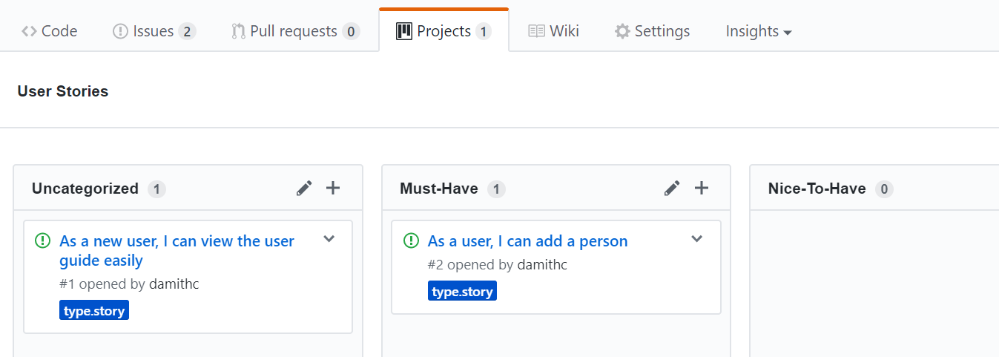
Example An issue representing a user story.
You can break the user story into issue subject and description as follows:
title
As a user I can add a deadline
Description
... so that I can keep track of my deadlines
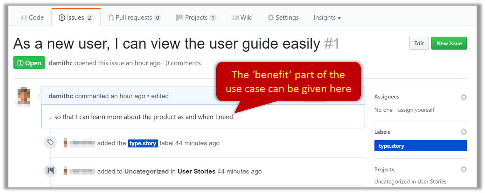
Alternatively, you can put the entire user story in the description.
title
Add deadline
Description
As a user I can add a deadline so that I can keep track of my deadlines
In both cases, apply the type.Story (or the type.Epic) label.
🔖 User stories vs traditional requirement specifications, according to XP eXtreme Programming (XP)
uses User stories to capture requirements.
This page on their website explains the difference between user stories and traditional requirements.
One of the biggest misunderstandings with user stories is how they differ from traditional requirements specifications. The biggest difference is in the level of detail. User stories should only provide enough detail to make a reasonably low risk estimate of how long the story will take to implement. When the time comes to implement the story developers will go to the customer and receive a detailed description of the requirements face to face.
Resources:
This article by Mike Cohn from MountainGoatSoftware explains how to use user stories to capture NFRs.
A supplementary requirements section can be used to capture requirements that do not fit elsewhere
A supplementary requirements section can be used to capture requirements that do not fit elsewhere . Typically, this is where most Non-Functional Requirements will be listed.
Functional requirements specify what the system should do.
Non-functional requirements specify the constraints under which the system is developed and operated.
NFRs are easier to miss.
NFRs are critical to the success of the software.
Original explanation & examples
A supplementary requirements section can be used to capture requirements that do not fit elsewhere. Typically, this is where most
Non-Functional Requirements
will be listed.
Textbook »
Requirements → Requirements →
Non-functional requirements
Requirements can be divided into two in the following way:
Functional requirements specify what the system should do. Example The system should allow a user to search for a book by its title.
Non-functional requirements specify the constraints under which the system is developed and operated. Example The search should return results within two seconds.
Example Some categories of non-functional requirements:
Data requirements, e.g., size, volatility, persistence, etc.
Environment requirements, e.g., the technical environment in which the system would operate or with which it needs to be compatible.
Performance, Security, Usability, Interoperability, Maintainability, Compliance with regulations, and more ...
Example Some concrete NFRs, drawn from various projects:
Business/domain rules: the size of the minefield cannot be smaller than five.
Constraints: system testers are available only during the last month of the project.
Performance requirements: the system should respond within two seconds.
Quality requirements: the system should be usable by a novice who has never carried out an online purchase.
Process requirements: the project is expected to adhere to a schedule that delivers a feature set every month.
You may have to spend extra effort identifying NFRs as early as possible because:
NFRs are easier to miss. Example Stakeholders tend to think of functional requirements first.
Sometimes NFRs are critical to the success of the software. Example A web application that is too slow or that has weak security is unlikely to succeed even if it has all the right functionality.
Exercises:
TEAMMATES NFRs
Given below are some requirements of TEAMMATES (an online peer evaluation system for education). Which one of these are non-functional requirements?
a. The response to any use action should become visible within 5 seconds.
b. The application admin should be able to view a log of user activities.
c. The source code should be open source.
d. A course should be able to have up to 2000 students.
e. As a student user, I can view details of my team members so that I can know who they are.
f. The user interface should be intuitive enough for users who are not IT-savvy.
g. The product is offered as a free online service.
Answer
(a)(c)(d)(f)(g)
Explanation: (b) are (e) are functions available for a specific user types. Therefore, they are functional requirements. (a), (c), (d), (f) and (g) are either constraints on functionality or constraints on how the project is done, both of which are considered non-functional requirements.
Among various dimensions of code quality, such as run-time efficiency, security, and robustness, one of the most important is readability
Among various dimensions of code quality, such as run-time efficiency, security, and robustness, one of the most important is readability (aka understandability). This is because in any non-trivial software project, code needs to be read, understood, and modified by other developers later on. Even if you do not intend to pass the code to someone else, code quality is still important because you will become a 'stranger' to your own code someday.
Original explanation & examples
Programs should be written and polished until they acquire publication quality. --Niklaus Wirth
Among various dimensions of code quality, such as run-time efficiency, security, and robustness, one of the most important is readability (aka understandability). This is because in any non-trivial software project, code needs to be read, understood, and modified by other developers later on. Even if you do not intend to pass the code to someone else, code quality is still important because you will become a 'stranger' to your own code someday.
Avoid long methods as they often contain more information than what the reader can process at a time. Consider if shortening is possible when a method goes beyond 30 LoC . The bigger the haystack, the harder it is to find a needle.
Original explanation & examples
Avoid long methods as they often contain more information than what the reader can process at a time. Consider if shortening is possible when a method goes beyond 30 LoC. The bigger the haystack, the harder it is to find a needle.
Avoid complicated expressions, especially those having many negations and nested parentheses.
If you must evaluate complicated expressions, have them done in steps (i.e., calculate some intermediate values first and use them to calculate the final value).
Original explanation & examples
Avoid complicated expressions, especially those having many negations and nested parentheses. If you must evaluate complicated expressions, have them done in steps (i.e., calculate some intermediate values first and use them to calculate the final value).
Example Evaluating a complicated expression in steps:
The competent programmer is fully aware of the strictly limited size of his own skull; therefore he approaches the programming task in full humility, and among other things he avoids clever tricks like the plague. -- Edsger Dijkstra
Avoid magic numbers in your code. When the code has a number that does not explain the meaning of the number, it is called a "magic number" (as in "the number appears as if by magic"). Using a named constant makes the code easier to understand because the name tells us more about the meaning of the number.
named constant
Avoid magic numbers in your code. When the code has a number that does not explain the meaning of the number, it is called a "magic number" (as in "the number appears as if by magic"). Using a named constant makes the code easier to understand because the name tells us more about the meaning of the number.
Avoid any magic literals
Avoid any magic literals in general, not just magic numbers.
Original explanation & examples
Avoid magic numbers in your code. When the code has a number that does not explain the meaning of the number, it is called a "magic number" (as in "the number appears as if by magic"). Using a named constant makes the code easier to understand because the name tells us more about the meaning of the number.
Example Replacing magic numbers with named constants:
Make the code as explicit as possible, even if the language syntax allows it to be implicit.
Here are some examples:
[ Java ] Use explicit type conversion instead of implicit type conversion.
[ Java , Python ] Use parentheses/braces to show groupings even when they can be skipped.
[ Java , Python ] Use enumerations when a certain variable can take only a small number of finite values. For example, instead of declaring the variable 'state' as an integer and using values 0, 1, 2 to denote the states 'starting', 'enabled', and 'disabled' respectively, declare 'state' as type SystemState and define an enumeration SystemState that has values 'STARTING' , 'ENABLED' , and 'DISABLED' .
Original explanation & examples
Make the code as explicit as possible, even if the language syntax allows it to be implicit. Here are some examples:
[Java] Use explicit type conversion instead of implicit type conversion.
[Java, Python] Use parentheses/braces to show groupings even when they can be skipped.
[Java, Python] Use
enumerations
when a certain variable can take only a small number of finite values. For example, instead of declaring the variable 'state' as an integer and using values 0, 1, 2 to denote the states 'starting', 'enabled', and 'disabled' respectively, declare 'state' as type SystemState and define an enumeration SystemState that has values 'STARTING', 'ENABLED', and 'DISABLED'.
Lay out the code so that it adheres to the logical structure.
The code should read like a story. Just as you use section breaks, chapters, and paragraphs to organize a story, use classes, methods, indentation, and line spacing in your code to group related segments of the code. For example, you can use blank lines to separate groups of related statements.
Sometimes, the correctness of your code does not depend on the order in which you perform certain intermediary steps. Nevertheless, this order may affect the clarity of the story you are trying to tell. Choose the order that makes the story most readable.
Original explanation & examples
Lay out the code so that it adheres to the logical structure. The code should read like a story. Just as you use section breaks, chapters, and paragraphs to organize a story, use classes, methods, indentation, and line spacing in your code to group related segments of the code. For example, you can use blank lines to separate groups of related statements.
Sometimes, the correctness of your code does not depend on the order in which you perform certain intermediary steps. Nevertheless, this order may affect the clarity of the story you are trying to tell. Choose the order that makes the story most readable.
Example Grouping related statements, in an order that tells the story:
Do not try to write ‘clever’ code. “Keep it simple, stupid” ( KISS )
Do not try to write ‘clever’ code. “Keep it simple, stupid” ( KISS ) , as the old adage goes. For example, do not dismiss the brute-force yet simple solution in favor of a complicated one because of some ‘supposed benefits’ such as 'better reusability' unless you have a strong justification.
Original explanation & examples
Do not try to write ‘clever’ code. “Keep it simple, stupid” (KISS), as the old adage goes. For example, do not dismiss the brute-force yet simple solution in favor of a complicated one because of some ‘supposed benefits’ such as 'better reusability' unless you have a strong justification.
Debugging is twice as hard as writing the code in the first place. Therefore, if you write the code as cleverly as possible, you are, by definition, not smart enough to debug it. -- Brian W. Kernighan
Programs must be written for people to read, and only incidentally for machines to execute. -- Abelson and Sussman
Optimizing code prematurely has several drawbacks :
You may not know which parts are the real performance bottlenecks
You may not know which parts are the real performance bottlenecks . This is especially the case when the code undergoes transformations (e.g., compiling, minifying, transpiling, etc.) before it becomes an executable. Ideally, you should use a profiler tool to identify the actual bottlenecks of the code first, and optimize only those parts.
Optimizing can complicate the code
Optimizing can complicate the code , affecting correctness and readability.
Hand-optimized code can be harder for the compiler to optimize
Hand-optimized code can be harder for the compiler to optimize (the simpler the code, the easier it is for the compiler to optimize). In many cases, a compiler can do a better job of optimizing the runtime code if you don't get in the way by trying to hand-optimize the source code.
Make it work, make it right, make it fast
Make it work, make it right, make it fast is a popular saying in the industry, which means in most cases, getting the code to perform correctly should take priority over optimizing it. If the code doesn't work correctly, it has no value no matter how fast/efficient it is.
Of course, there are cases in which optimizing takes priority over other things
Original explanation & examples
Optimizing code prematurely has several drawbacks:
You may not know which parts are the real performance bottlenecks. This is especially the case when the code undergoes transformations (e.g., compiling, minifying, transpiling, etc.) before it becomes an executable. Ideally, you should use a profiler tool to identify the actual bottlenecks of the code first, and optimize only those parts.
Optimizing can complicate the code, affecting correctness and readability.
Hand-optimized code can be harder for the compiler to optimize (the simpler the code, the easier it is for the compiler to optimize). In many cases, a compiler can do a better job of optimizing the runtime code if you don't get in the way by trying to hand-optimize the source code.
Make it work, make it right, make it fast is a popular saying in the industry, which means in most cases, getting the code to perform correctly should take priority over optimizing it. If the code doesn't work correctly, it has no value no matter how fast/efficient it is.
Premature optimization is the root of all evil in programming. -- Donald Knuth
Of course, there are cases in which optimizing takes priority over other thingse.g., when writing code for resource-constrained environments. This guideline is simply a caution that you should optimize only when needed.
Avoid having multiple levels of abstraction within a code fragment.
Single Level of Abstraction Principle
Abstraction
Abstraction is a technique for dealing with complexity. It works by establishing a level of complexity we are interested in, and suppressing the more complex details below that level.
The guiding principle of abstraction is that only details that are relevant to the current perspective or the task at hand need to be considered.
It is the process of hiding complex internal or less relevant details to focus only on essential or more important details. As most programs are written to solve complex problems involving large amounts of intricate details, it is impossible to deal with all these details at the same time. That is where abstraction can help.
Data abstraction : abstracting away the lower level data items and thinking in terms of bigger entities
Control abstraction : abstracting away details of the actual control flow to focus on tasks at a higher level
Abstraction can be applied repeatedly to obtain progressively higher levels of abstraction .
Abstraction is a general concept that is not limited to just data or control abstractions.
Also ensure that the code is written at the highest level of abstraction possible
Also ensure that the code is written at the highest level of abstraction possible .
That said, it is sometimes possible to pack two levels of abstraction into the code
That said, it is sometimes possible to pack two levels of abstraction into the code without affecting readability that much, provided each step in the higher-level logic is clearly marked using comments and separated (e.g., using a blank line) from adjacent steps.
Original explanation & examples
Avoid having multiple levels of
abstraction
within a code fragment.
Note: The book The Productive Programmer (by Neal Ford) calls this the Single Level of Abstraction Principle (SLAP) while the book Clean Code (by Robert C. Martin) calls this One Level of Abstraction per Function.
Example Two levels of abstraction mixed within one code fragment:
Bad (readData(); and salary = basic * rise + 1000; are at different levels of abstraction)
Good (all statements are at the same level of abstraction)
readData();
processData();
displayResult();
Design → Design Fundamentals → Abstraction →
What
Abstraction is a technique for dealing with complexity. It works by establishing a level of complexity we are interested in, and suppressing the more complex details below that level.
The guiding principle of abstraction is that only details that are relevant to the current perspective or the task at hand need to be considered. It is the process of hiding complex internal or less relevant details to focus only on essential or more important details. As most programs are written to solve complex problems involving large amounts of intricate details, it is impossible to deal with all these details at the same time. That is where abstraction can help.
Data abstraction: abstracting away the lower level data items and thinking in terms of bigger entities Example Within a certain software component, you might deal with a user data type, while ignoring the details contained in the user data item such as name and date of birth. These details have been ‘abstracted away’ as they do not affect the task of that software component.
Control abstraction: abstracting away details of the actual control flow to focus on tasks at a higher level Example print("Hello") is an abstraction of the actual output mechanism within the computer.
Abstraction can be applied repeatedly to obtain progressively higher levels of abstraction. Example Levels of data abstraction: a File is a data item that is at a higher level than an array, and an array is at a higher level than a bit. Example Levels of control abstraction: execute(Game) is at a higher level than print(Char), which is at a higher level than an Assembly language instruction MOV.
Abstraction is a general concept that is not limited to just data or control abstractions.
Example More general forms of abstraction:
An OOP class is an abstraction over related data and behaviors.
An architecture is a higher-level abstraction of the design of a software system.
Models (e.g., UML models) are abstractions of some aspect of reality.
Also ensure that the code is written at the highest level of abstraction possible.
Example The same logic written at a low level of abstraction, and at a higher one:
Bad (all statements are at low levels of abstraction)
Good (all statements are at the same high level of abstraction)
high-level step A
high-level step B
if condition X:
high-level step C
That said, it is sometimes possible to pack two levels of abstraction into the code without affecting readability that much, provided each step in the higher-level logic is clearly marked using comments and separated (e.g., using a blank line) from adjacent steps.
Example The following pseudocode packs two levels of abstraction, with each higher-level step marked by a comment and separated by a blank line.
The happy path should be clear and prominent in your code.
Restructure the code to make the happy path (i.e., the execution path taken when everything goes well) less-nested as much as possible. It is the ‘unusual’ cases that should be nested. Someone reading the code should not get distracted by alternative paths taken when error conditions happen. One technique that could help in this regard is the use of guard clauses .
Original explanation & examples
The happy path should be clear and prominent in your code. Restructure the code to make the happy path (i.e., the execution path taken when everything goes well) less-nested as much as possible. It is the ‘unusual’ cases that should be nested. Someone reading the code should not get distracted by alternative paths taken when error conditions happen. One technique that could help in this regard is the use of guard clauses.
Example Guard clauses can reduce the nesting of the happy path.
Bad
if (!isUnusualCase) { //detecting an unusual conditionif (!isErrorCase) {
start();//main pathprocess();cleanup();exit(); } else {
handleError();
}
} else {
handleUnusualCase(); //handling that unusual condition}
In the code above,
unusual condition detections are separated from their handling.
the main path is nested deeply.
Good
if (isUnusualCase) { //Guard Clause handleUnusualCase();
return;
}
if (isErrorCase) { //Guard Clause handleError();
return;
}
start();process();cleanup();exit();
In contrast, the above code
deals with unusual conditions as soon as they are detected so that the reader doesn't have to remember them for long.
keeps the main path un-indented.
Example Reducing the nesting of the happy path inside a loop, using a continue statement:
Bad
for (condition1)
if (condition2)
statement A
statement B
statement C
statement D
statement E
Good
for (condition1)
if (not condition2)
continue statement A
statement B
statement C
statement D
statement E
It is safer to use language constructs in the way they are meant to be used
It is safer to use language constructs in the way they are meant to be used , even if the language allows shortcuts. Such coding practices are common sources of bugs. Know them and avoid them.
Original explanation & examples
It is safer to use language constructs in the way they are meant to be used, even if the language allows shortcuts. Such coding practices are common sources of bugs. Know them and avoid them.
Always include a default branch in case statements.
This ensures that all possible outcomes have been considered at the branching point.
Furthermore, use the default branch for the intended default action and not just to execute the last option.
If there is no default action, you can use the default branch to detect errors (i.e., if execution reached the default branch, raise a suitable error). This also applies to the final else of an if-else construct. That is, the final else should mean 'everything else', and not the final option. Do not use else when an if condition can be explicitly specified, unless there is absolutely no other possibility.
Original explanation & examples
Always include a default branch in case statements. This ensures that all possible outcomes have been considered at the branching point.
Furthermore, use the default branch for the intended default action and not just to execute the last option. If there is no default action, you can use the default branch to detect errors (i.e., if execution reached the default branch, raise a suitable error). This also applies to the final else of an if-else construct. That is, the final else should mean 'everything else', and not the final option. Do not use else when an if condition can be explicitly specified, unless there is absolutely no other possibility.
Example A final else used as the last option, and used for 'everything else':
Avoid empty catch statements , as they are a way to ignore errors silently (which is not a good thing). In cases when it is unavoidable, at least give a comment to explain why the catch block is left empty.
Original explanation & examples
Avoid empty catch statements, as they are a way to ignore errors silently (which is not a good thing). In cases when it is unavoidable, at least give a comment to explain why the catch block is left empty.
Get rid of unused code the moment it becomes redundant.
You might feel reluctant to delete code you have painstakingly written, even if you have no use for that code anymore ("I spent a lot of time writing that code; what if I need it again?"). Consider all code as baggage you have to carry. If you need that code again, simply recover it from the revision control tool you are using. Deleting code you wrote previously is a sign that you are improving.
Original explanation & examples
Get rid of unused code the moment it becomes redundant. You might feel reluctant to delete code you have painstakingly written, even if you have no use for that code anymore ("I spent a lot of time writing that code; what if I need it again?"). Consider all code as baggage you have to carry. If you need that code again, simply recover it from the revision control tool you are using. Deleting code you wrote previously is a sign that you are improving.
Minimize global variables . Global variables may be the most convenient way to pass information around, but they create implicit links between code segments that use the global variable. Avoid them as much as possible.
Define variables in the least possible scope
Define variables in the least possible scope . For example, if the variable is used only within the if block of the conditional statement, it should be declared inside that if block.
Original explanation & examples
Minimize global variables. Global variables may be the most convenient way to pass information around, but they create implicit links between code segments that use the global variable. Avoid them as much as possible.
Define variables in the least possible scope. For example, if the variable is used only within the if block of the conditional statement, it should be declared inside that if block.
The most powerful technique for minimizing the scope of a local variable is to declare it where it is first used.-- Effective Java, by Joshua Bloch
Code duplication, especially when you copy-paste-modify code, often indicates a poor quality implementation.
While it may not be possible to have zero duplication, always think twice before duplicating code; most often there is a better alternative.
This guideline is closely related to the DRY Principle .
DRY Principle
DRY (Don't Repeat Yourself) principle
DRY (Don't Repeat Yourself) principle : Every piece of knowledge must have a single, unambiguous, authoritative representation within a system. -- The Pragmatic Programmer , by Andy Hunt and Dave Thomas
Original explanation & examples
Code duplication, especially when you copy-paste-modify code, often indicates a poor quality implementation. While it may not be possible to have zero duplication, always think twice before duplicating code; most often there is a better alternative.
This guideline is closely related to the
DRY Principle
.
DRY Principle
Principles →
DRY principle
DRY (Don't Repeat Yourself) principle: Every piece of knowledge must have a single, unambiguous, authoritative representation within a system. -- The Pragmatic Programmer, by Andy Hunt and Dave Thomas
This principle guards against the duplication of information. Example A functionality being implemented twice is a violation of the DRY principle even if the two implementations are different. Example The value of a system-wide timeout being defined in multiple places is a violation of DRY.
Good code is its own best documentation. As you’re about to add a comment, ask yourself, ‘How can I improve the code so that this comment isn’t needed?’ Improve the code and then document it to make it even clearer. -- Steve McConnell, Author of Code Complete
Some think commenting heavily increases the 'code quality'. That is not so. Avoid writing comments to explain bad code. Improve the code to make it self-explanatory.
Write comments targeting other programmers reading the code.
Do not write comments as if they are private notes to yourself. One type of comment that is almost always useful is the header comment that you write for a class or an operation to explain its purpose.
header comment
Write comments targeting other programmers reading the code. Do not write comments as if they are private notes to yourself. One type of comment that is almost always useful is the header comment that you write for a class or an operation to explain its purpose.
Original explanation & examples
Write comments targeting other programmers reading the code. Do not write comments as if they are private notes to yourself. One type of comment that is almost always useful is the header comment that you write for a class or an operation to explain its purpose.
Example A header comment written as a private note, and the same one written for the reader:
BadReason: this comment will only make sense to the person who wrote it
// a quick trim function used to fix bug I detected overnightvoidtrimInput(){
....
}
Good
/** Trims the input of leading and trailing spaces */voidtrimInput(){
....
}
BadReason: this comment will only make sense to the person who wrote it
deftrim_input():"""a quick trim function used to fix bug I detected overnight""" ...
Good
deftrim_input():"""Trim the input of leading and trailing spaces""" ...
Comments should explain the WHAT and WHY aspects of the code, rather than the HOW aspect.
WHAT: The specification of what the code is supposed to do.
The reader can compare such comments to the implementation to verify if the implementation is correct.
WHY: The rationale for the current implementation.
HOW: The explanation for how the code works.
This should already be apparent from the code, if the code is self-explanatory. Adding comments to explain the same thing is redundant.
Original explanation & examples
Comments should explain the WHAT and WHY aspects of the code, rather than the HOW aspect.
WHAT: The specification of what the code is supposed to do. The reader can compare such comments to the implementation to verify if the implementation is correct.
Example This method is possibly buggy because the implementation does not seem to match the comment. In this case, the comment could help the reader to detect the bug.
/** Removes all spaces from the {@code input} */voidcompact(String input){
input.trim();
}
WHY: The rationale for the current implementation.
Example Without this comment, the reader will not know the reason for calling this method.
// Remove spaces to comply with IE23.5 formatting rulescompact(input);
HOW: The explanation for how the code works. This should already be apparent from the code, if the code is self-explanatory. Adding comments to explain the same thing is redundant.
Example A comment explaining HOW, and the self-explanatory code that makes it unnecessary:
BadReason: Comment explains how the code works.
// return true if both left end and right end are correct// or the size has not incrementedreturn (left && right) || (input.size() == size);
GoodReason: The code is now self-explanatory -- the comment is no longer needed.
The process of restructuring code in small steps without modifying its external behavior is called refactoring .
Refactoring is needed because the first version of the code you write may not be of production quality. It is OK to first concentrate on making the code work, rather than worry over the quality of the code, as long as you improve the quality later.
Refactoring is not rewriting
Refactoring is not rewriting : Discarding poorly written code entirely and rewriting it from scratch is not refactoring because refactoring needs to be done in small steps.
Refactoring is not bug fixing
Refactoring is not bug fixing : By definition, refactoring is different from bug fixing or any other modification that alters the external behavior (e.g., adding a feature) of the component concerned.
Refactoring code can have many secondary benefits
Refactoring code can have many secondary benefits , e.g.,
hidden bugs become easier to spot
performance can improve (sometimes, simpler code runs faster than complex code because it is easier for the compiler to optimize).
Situation: The same fragment of code is in all branches of a conditional expression.
Extract Method
Refactoring Name: Extract Method
Situation: You have a code fragment that can be grouped together.
Original explanation & examples
The process of restructuring code in small steps without modifying its external behavior is called refactoring. Refactoring is needed because the first version of the code you write may not be of production quality. It is OK to first concentrate on making the code work, rather than worry over the quality of the code, as long as you improve the quality later.
Refactoring is not rewriting: Discarding poorly written code entirely and rewriting it from scratch is not refactoring because refactoring needs to be done in small steps.
Refactoring is not bug fixing: By definition, refactoring is different from bug fixing or any other modification that alters the external behavior (e.g., adding a feature) of the component concerned.
Refactoring code can have many secondary benefits, e.g.,
hidden bugs become easier to spot
performance can improve (sometimes, simpler code runs faster than complex code because it is easier for the compiler to optimize).
Some IDEs have built-in support for basic refactorings, such as automatically renaming a variable/method/class in all places it has been used.
Refactoring, even if done with the aid of an IDE, may still result in regressions. Therefore, each small refactoring should be followed by regression testing.
Exercises:
Results of Refactoring
Choose the correct statements.
a. Refactoring can improve understandability
b. Refactoring can uncover bugs
c. Refactoring can result in better performance
d. Refactoring can change the number of methods/classes
Answer
a, b, c, d
Explanation:
(a, b, c) Although the primary aim of refactoring is to improve the internal code structure, there are other secondary benefits.
(d) Some refactorings result in adding/removing methods/classes.
Do you agree with the following statement? Refactoring and regression testing
Do you agree with the following statement? Justify your answer.
Statement: Whenever you refactor code to fix bugs, you need not do regression testing if the bug fix was minor.
Hint
There are two flaws in the given statement.
Answer
DISAGREE.
Even a minor change can have major repercussions on the system. You MUST do regression testing after each change, no matter how minor it is.
Fixing bugs is technically not refactoring.
Explain Refactoring
Explain what refactoring is and why it is not the same as rewriting, bug fixing, or adding features.
One way to identify refactoring opportunities is by code smells .
Periodic refactoring is a good way to pay off the technical debt
Periodic refactoring is a good way to pay off the technical debt a codebase has accumulated.
It is too much refactoring when the benefits no longer justify the cost.
While it is important to refactor frequently to avoid accumulating 'messy' code (aka technical debt), an important question is how much refactoring is too much refactoring. It is too much refactoring when the benefits no longer justify the cost. The costs and the benefits depend on the context. That is why some refactorings are 'opposites' of each other (e.g., extract method vs inline method ).
Original explanation & examples
One way to identify refactoring opportunities is by code smells.
A code smell is a surface indication that usually corresponds to a deeper problem in the system.
First, a smell is by definition something that's quick to spot. Second, smells don't always indicate a problem.
--adapted from https://martinfowler.com/bliki/CodeSmell.html
An example (from the same source as above) is the code smell data class, i.e., a class with all data and no behavior. When you encounter such a class, you can explore whether moving the corresponding behavior into that class is appropriate. Some more examples:
Periodic refactoring is a good way to pay off the technical debt a codebase has accumulated.
Software systems are prone to the build up of cruft - deficiencies in internal quality that make it harder than it would ideally be to modify and extend the system further. Technical Debt is a metaphor, coined by Ward Cunningham, that frames how to think about dealing with this cruft, thinking of it like a financial debt. The extra effort that it takes to add new features is the interest paid on the debt.
--https://martinfowler.com/bliki/TechnicalDebt.html
While it is important to refactor frequently to avoid accumulating 'messy' code (aka technical debt), an important question is how much refactoring is too much refactoring. It is too much refactoring when the benefits no longer justify the cost. The costs and the benefits depend on the context. That is why some refactorings are 'opposites' of each other (e.g., extract method vs inline method).
Assertions are used to define assumptions about the program state so that the runtime can verify them.
If the runtime detects an assertion failure , it typically takes some drastic action
If the runtime detects an assertion failure , it typically takes some drastic action such as terminating the execution with an error message. This is because an assertion failure indicates a possible bug and the sooner the execution stops, the safer it is.
Original explanation & examples
Video — Open the original page for this interactive item.
Assertions are used to define assumptions about the program state so that the runtime can verify them. An assertion failure indicates a possible bug in the code because the code has resulted in a program state that violates an assumption about how the code should behave. Example An assertion can be used to express something like: when execution reaches this point, the variable v cannot be null.
If the runtime detects an assertion failure, it typically takes some drastic action such as terminating the execution with an error message. This is because an assertion failure indicates a possible bug and the sooner the execution stops, the safer it is.
Example In the Java code below, suppose you set an assertion that timeout returned by Config.getTimeout() is greater than 0. Now, if Config.getTimeout() returns -1 in a specific execution of this line, the runtime can detect it as an assertion failure -- i.e., an assumption about the expected behavior of the code turned out to be wrong which could potentially be the result of a bug -- and take some drastic action such as terminating the execution.
int timeout = Config.getTimeout();
// set assertion here ...
Assertions can be disabled without modifying the code.
Java disables assertions by default.
This could create a situation where you think all assertions are being verified as true while in fact they are not being verified at all. Therefore, remember to enable assertions when you run the program if you want them to be in effect.
Java assert vs JUnit assertions: Both check for a given condition but JUnit assertions are more powerful and customized for testing.
In addition, JUnit assertions are not disabled by default. Use JUnit assertions in test code and Java assert in functional code.
Tutorials
Tutorials :
Best practices
Best practices :
Original explanation & examples
Use the assert keyword to define assertions.
Example This assertion will fail with the message x should be 0 if x is not 0 at this point.
x = getX();
assert x == 0 : "x should be 0";
...
Assertions can be disabled without modifying the code. Example java -enableassertions HelloWorld (or java -ea HelloWorld) will run HelloWorld with assertions enabled while java -disableassertions HelloWorld will run it without verifying assertions.
Java disables assertions by default. This could create a situation where you think all assertions are being verified as true while in fact they are not being verified at all. Therefore, remember to enable assertions when you run the program if you want them to be in effect.
Enable assertions in IntelliJ (how?) and get an assertion to fail temporarily (e.g. insert an assert false into the code temporarily) to confirm assertions are being verified.
Java assert vs JUnit assertions: Both check for a given condition but JUnit assertions are more powerful and customized for testing. In addition, JUnit assertions are not disabled by default. Use JUnit assertions in test code and Java assert in functional code.
It is recommended that assertions be used liberally in the code.
Their impact on performance is low and worth the additional safety they provide.
Do not use assertions to do work
Do not use assertions to do work because assertions can be disabled. If assertions are disabled, your program will stop working when assertions are not enabled.
Assertions are suitable for verifying assumptions about Internal Invariants , Control-Flow Invariants , Preconditions , Postconditions , and Class Invariants .
Refer to Programming with Assertions (second half) to learn more.
Exceptions and assertions are two complementary ways of handling errors in software but they serve different purposes.
Therefore, both assertions and exceptions should be used in code.
Original explanation & examples
It is recommended that assertions be used liberally in the code. Their impact on performance is low and worth the additional safety they provide.
Do not use assertions to do work because assertions can be disabled. If assertions are disabled, your program will stop working when assertions are not enabled.
Example The code below will not invoke the writeFile() method when assertions are disabled. If that method is performing some work that is necessary for your program, your program will not work correctly when assertions are disabled.
...
assertwriteFile() : "File writing is supposed to return true";
Assertions are suitable for verifying assumptions about Internal Invariants, Control-Flow Invariants,
Preconditions, Postconditions, and Class Invariants. Refer to Programming with Assertions (second half) to learn more.
Exceptions and assertions are two complementary ways of handling errors in software but they serve different purposes. Therefore, both assertions and exceptions should be used in code.
The raising of an exception indicates an unusual condition created by the user (e.g., the user inputs an unacceptable input) or the environment (e.g., a file needed for the program is missing).
An assertion failure indicates the programmer made a mistake in the code (e.g., a null value is returned from a method that is not supposed to return null under any circumstances).
Exercises:
Assertion failure in Calculator
A Calculator program crashes with an ‘assertion failure’ message when you try to find the square root of a negative number.
Answer
(c)
Explanation: An assertion failure indicates a bug in the code. (b) is not acceptable because of the word "terminated". The application should not fail at all for this input. But it could have used an exception to handle the situation internally.
Statement about exceptions and assertions
Which statements are correct?
a. Use assertions to indicate that the programmer messed up; use exceptions to indicate that the user or the environment messed up.
b. Use exceptions to indicate that the programmer messed up; use assertions to indicate that the user or the environment messed up.
Sequence diagrams model the interactions between various entities in a system, in a specific scenario.
Modeling such scenarios is useful, for example, to verify the design of the internal interactions is able to provide the expected outcomes.
Original explanation & examples
Video Q+ — Open the original page for this interactive item.
Sequence diagrams model the interactions between various entities in a system, in a specific scenario. Modeling such scenarios is useful, for example, to verify the design of the internal interactions is able to provide the expected outcomes.
Example Modeling how components of a system interact with each other to respond to a user action. Example Modeling how objects inside a component interact with each other to respond to a method call it received from another component.
UML Sequence Diagrams → Introduction — Open the original page for this interactive item.
UML Sequence Diagrams → Basic Notation — Open the original page for this interactive item.
UML Sequence Diagrams → Loops — Open the original page for this interactive item.
UML Sequence Diagrams → Object Creation — Open the original page for this interactive item.
UML Sequence Diagrams → Minimal Notation — Open the original page for this interactive item.
Exercises:
Explain Sequence Diagram about Machine
Explain in your own words the interactions illustrated by this sequence diagram:
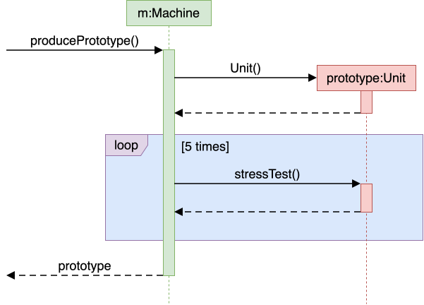
Draw a Sequence Diagram for the code (PersonList, Person, Tag)
Consider the code below:
classPerson{
Tag tag;
String name;
Person(String personName, String tagName) {
name = personName;
tag = new Tag(tagName);
}
}
When you write a small program by yourself, you can hold its structure in your head.
You know where each piece of functionality lives, and you can usually predict what a change will affect.
That becomes much harder as the software and its team grow.
Several people add code to the same program at once, and none of them has read all of it. Questions that once seemed trivial start to matter:
Where does this new code belong?
Where does each part run?
How do the parts communicate?
Which qualities matter most — ease of change, speed, reliability, security?
Software architecture is the set of significant decisions about a system's overall organization.
It identifies the major parts, their responsibilities, how they interact, and how they are deployed.
An architecture description deliberately leaves out most of what is inside each part.
It does not say how many classes are in Logic , which one validates a user command, or which collection holds the invoices. Those are detailed design decisions.
Architecture and detailed design differ in how far a decision reaches, not merely in how big it is.
An architectural decision constrains what the other parts can do, shapes the qualities the system can achieve, and is expensive to reverse once the rest of the system is built on it.
The boundary is not absolute.
An internal choice becomes architecturally significant when it strongly affects the rest of the system.
Every software system has an architecture, even when nobody designed one deliberately.
An unplanned program still has parts and dependencies; they are simply accidental, undocumented, and usually tangled. The value of deciding an architecture on purpose is that the team shares one, understands it, and can reason about it.
The value of deciding an architecture on purpose is that the team shares one, understands it, and can reason about it.
Every software system has an architecture, even when nobody designed one deliberately. An unplanned program still has parts and dependencies; they are simply accidental, undocumented, and usually tangled. The value of deciding an architecture on purpose is that the team shares one, understands it, and can reason about it.
An architecture is a shared and evolving technical understanding.
A team sets an initial architecture early — the decisions are expensive to reverse later — then tests it against real requirements and revises it deliberately when those requirements change. Larger organizations may give one person an architect role to hold the technical vision, but the architecture still has to be understood by everyone building the system.
An architecture is also more than a diagram.
Although an architecture is often represented by a diagram (like the one in the example above), a diagram shows one view. The architecture also includes the constraints everyone must work within and the reasons behind the choices.
Original explanation & examples
When you write a small program by yourself, you can hold its structure in your head. You know where each piece of functionality lives, and you can usually predict what a change will affect.
That becomes much harder as the software and its team grow. Several people add code to the same program at once, and none of them has read all of it. Questions that once seemed trivial start to matter:
Where does this new code belong?
Where does each part run?
How do the parts communicate?
Which qualities matter most — ease of change, speed, reliability, security?
Software architecture is the set of significant decisions about a system's overall organization. It identifies the major parts, their responsibilities, how they interact, and how they are deployed.
Example Consider a desktop invoice-management application in which users create invoices, set due dates, and mark invoices as paid. A possible architecture has four parts:
Each arrow in the diagram is a dependency: the part at the tail needs the part at the head.
Ui: displays information and receives user input
Logic: interprets user actions and carries out operations
Model: represents invoices and other data while the program runs
Storage: reads data from and writes it to persistent storage
An architecture description deliberately leaves out most of what is inside each part. It does not say how many classes are in Logic, which one validates a user command, or which collection holds the invoices. Those are detailed design decisions.
Architecture and detailed design differ in how far a decision reaches, not merely in how big it is. An architectural decision constrains what the other parts can do, shapes the qualities the system can achieve, and is expensive to reverse once the rest of the system is built on it.
Example Deciding that persistent data belongs in a separate Storage component is architecture. Deciding that Storage uses one class per file format is detailed design.
The boundary is not absolute. An internal choice becomes architecturally significant when it strongly affects the rest of the system.
Example A change to the data representation to make the application able to handle a million invoices can be architecturally significant, affecting more than the internals of the Storage component.
Every software system has an architecture, even when nobody designed one deliberately. An unplanned program still has parts and dependencies; they are simply accidental, undocumented, and usually tangled. The value of deciding an architecture on purpose is that the team shares one, understands it, and can reason about it.
An architecture is a shared and evolving technical understanding. A team sets an initial architecture early — the decisions are expensive to reverse later — then tests it against real requirements and revises it deliberately when those requirements change. Larger organizations may give one person an architect role to hold the technical vision, but the architecture still has to be understood by everyone building the system.
An architecture is also more than a diagram. Although an architecture is often represented by a diagram (like the one in the example above), a diagram shows one view. The architecture also includes the constraints everyone must work within and the reasons behind the choices.
Example The fact that the application stores data locally because it must work without a network connection is also part of the architecture, although it may not be captured by the architecture diagram.
The software architecture of a program or computing system is the structure or structures of the system, which comprise software elements, the externally visible properties of those elements, and the relationships among them. Architecture is concerned with the public side of interfaces; private details of elements—details having to do solely with internal implementation—are not architectural.
-- Software Architecture in Practice (2nd edition), Bass, Clements, and Kazman
The definition above is widely quoted in the literature. "Externally visible properties" means what a software element of the architecture promises to do, not how it does it.
Exercises:
Statements about architecture
Choose the correct statements.
a. The architecture of a system should be simple enough for all team members to understand it.
b. The architecture is primarily a high-level design of the system.
c. The architecture is usually decided by the project manager.
d. The architecture can contain details private to a component.
Answer
(a)(b)
(c) Reason: Architecture is a technical decision made by the development team. In a larger organization someone in an architect role may lead it, but a project manager's job is planning and coordination, not the technical structure.
(d) Reason:
... private details of elements—details having to do solely with internal implementation—are not architectural.
(An internal decision can still become architecturally significant when it affects the system as a whole—but that is no longer a detail private to the component.)
A useful architecture limits how far many changes spread through the system.
Architecture does not restrain the spread of every change.
That is not necessarily an architectural failure: some changes genuinely cross several responsibilities.
Architecture also shapes the system's quality attributes
Architecture also shapes the system's quality attributes — the properties that decide whether the software is good enough for its purpose. Common quality attributes include:
Modifiability
Modifiability — how easily it can be changed
Performance
Performance — how quickly it responds
Reliability
Reliability — how well it keeps working when something fails
Security
Security — how well it protects data and resists misuse
Deployability
Deployability — how easily a new version reaches users
Quality attributes often conflict, and that is the central difficulty of architecture.
Splitting a system across machines can allow independent scaling while making it slower and adding network failures. Adding component boundaries can limit how far a change spreads while adding interfaces that developers must learn and maintain.
There is no architecture that is best on every attribute
There is no architecture that is best on every attribute — only one that fits the qualities and likely changes that matter for the system being built.
Original explanation & examples
A useful architecture limits how far many changes spread through the system.
Example Consider the following changes to an invoice manager application:
Store invoices in a database instead of a file: The main change should stay inside Storage, as long as its existing interface can still express what is needed.
Add a command-line interface alongside the graphical one: Most new code belongs in Ui; both interfaces can drive the same Logic.
Test invoice operations without launching a window: Because Logic does not depend on Ui, tests can call it directly.
Let several developers work at once: Clear component boundaries reduce how often two people must edit the same file.
Architecture does not restrain the spread of every change. That is not necessarily an architectural failure: some changes genuinely cross several responsibilities.
Example Adding a new property to every invoice can touch the interface, the rules, the model, and the storage format.
Architecture also shapes the system's quality attributes — the properties that decide whether the software is good enough for its purpose. Common quality attributes include:
Modifiability — how easily it can be changed
Performance — how quickly it responds
Reliability — how well it keeps working when something fails
Security — how well it protects data and resists misuse
Deployability — how easily a new version reaches users
Quality attributes often conflict, and that is the central difficulty of architecture. Splitting a system across machines can allow independent scaling while making it slower and adding network failures. Adding component boundaries can limit how far a change spreads while adding interfaces that developers must learn and maintain.
There is no architecture that is best on every attribute — only one that fits the qualities and likely changes that matter for the system being built.
Introduction › Components, interfaces, and dependencies
Recall the key point, then reveal.
Three concepts appear frequently in architecture descriptions: components, interfaces, dependencies.
A component is a major part of the system with one coherent responsibility.
An interface is the agreement stating how the rest of the system may use a component.
It is more than a list of operations. A complete interface also covers:
the data each operation accepts and returns;
what happens when an operation succeeds or fails; and
for a component reached over a network, the format and protocol of the messages.
A dependency exists when one component relies on another to do its job.
Dependencies have a direction.
A component is not a special programming construct.
There is no component keyword; a component is whatever unit of code the team agrees to treat as one part with one responsibility. It may be a separate library, a language-level module, or an entirely separate program reached over a network.
A dependency arrow describes reliance, not necessarily a method call.
Whether that reliance is a method call, a message, or a network request is usually indicated in the legend .
Original explanation & examples
Three concepts appear frequently in architecture descriptions: components, interfaces, dependencies.
A component is a major part of the system with one coherent responsibility.
ExampleStorage's work concerns persistent data. A single Invoice class is too small to be an architectural component.
An interface is the agreement stating how the rest of the system may use a component. It is more than a list of operations. A complete interface also covers:
the data each operation accepts and returns;
what happens when an operation succeeds or fails; and
for a component reached over a network, the format and protocol of the messages.
ExampleStorage might offer saveInvoices(invoices) and readInvoices(), and specify that a corrupt file causes a particular error rather than a crash.
A dependency exists when one component relies on another to do its job. Dependencies have a direction.
ExampleLogic depends on Storage, because it cannot save without it. Storage does not depend on Logic: it can be compiled, tested, and understood without knowing that commands exist.
A component is not a special programming construct. There is no component keyword; a component is whatever unit of code the team agrees to treat as one part with one responsibility. It may be a separate library, a language-level module, or an entirely separate program reached over a network.
Example In a Java project a component is often a package (or group of packages) plus a type declaring what it offers:
src/main/java/invoicemanager/
├── ui/
├── logic/
├── model/
└── storage/
├── Storage.java ← declares what Storage offers
├── JsonStorage.java ← one implementation
└── ... ← other classes, private to this component
A dependency arrow describes reliance, not necessarily a method call. Whether that reliance is a method call, a message, or a network request is usually indicated in the legend.
Exercises:
Which component changes?
Consider the following architecture of a desktop invoice-manager software that you encountered earlier.
Each arrow in the diagram is a dependency: the part at the tail needs the part at the head.
Ui: displays information and receives user input
Logic: interprets user actions and carries out operations
Model: represents invoices and other data while the program runs
Storage: reads data from and writes it to persistent storage
For each change, name the component(s) where most of the work should fall, and why.
Invoices are saved to a database instead of a file.
A new command for postponing an invoice is added.
Invoices are displayed as cards instead of rows.
Every invoice gains an optional "priority" field that users can set and see.
Answer
Storage mainly — the others ask it to save and do not know the format, assuming its interface still fits.
Logic mainly, plus Model if postponing needs new state. Ui and Storage need not change if the command is typed as text.
Ui only.
All four — the field must be entered (Ui), validated (Logic), held (Model), and saved (Storage).
A good architecture limits the spread of many kinds of change, but not every kind: a change that genuinely crosses every responsibility will touch every component.
Architecture Diagrams › Different diagrams of one system
Recall the key point, then reveal.
Architecture diagrams can differ in what they show and how much detail they show.
First consider two common views of a system:
A logical view shows the major parts and which parts depend on which.
It says nothing about where any of it runs.
A deployment view shows where the parts actually run.
For the desktop invoice manager the deployment view is almost boring: all four parts run inside one program, on the user's computer.
Keeping the views separate prevents a common confusion.
The 4+1 view model extends the idea above by describing a system using five standard views.
Four cover the system's functionality, runtime processes, code organization, and deployment. The "+1" uses scenarios to show how the system works in specific situations.
the design of a small system can be shown at a single level of detail.
Switching to the aspect of how much details a diagram show, the design of a small system can be shown at a single level of detail. One diagram can cover the entire system.
The design of a bigger system needs to be created and shown at multiple levels
The design of a bigger system needs to be created and shown at multiple levels : higher-level diagram shows the major parts, and lower-level diagrams zoom into individual parts to show their internal design.
The C4 model is a specific form of multi-level design views.
It organizes diagrams of a system's static structure into four core levels, which zoom in from the system's surroundings to its code:
A system context diagram shows the system, its users, and the other systems it interacts with.
A container diagram zooms in to show the system's applications and data stores.
C4 calls each of these a container , which is not the same as a Docker container.
A component diagram zooms into one container to show its main components and their relationships.
A code diagram zooms into one component to show how it is implemented.
A UML class diagram can be used at this optional level and is often generated by an IDE.
Neither 4+1 nor C4 is a new diagram notation.
4+1 organizes different kinds of architectural information, while C4 provides zoom levels for static structure. Their diagrams can use an established notation such as UML, or an ad hoc notation made up of boxes, arrows, and text labels.
Both models are meant for large systems
Both models are meant for large systems , larger than our invoice manager example. They add value when a system has many parts running in several places, and its architecture must be explained to readers who each need a different slice of it.
Original explanation & examples
Architecture diagrams can differ in what they show and how much detail they show. First consider two common views of a system:
A logical view shows the major parts and which parts depend on which. It says nothing about where any of it runs.
A deployment view shows where the parts actually run. For the desktop invoice manager the deployment view is almost boring: all four parts run inside one program, on the user's computer.
Example The same invoice manager, but two views of the architecture:
Each arrow in the logical view is a dependency. The deployment view has no arrows because all four parts run inside one program on one computer.
In this example, all the interesting structure is in the logical view. If a server is added to let several users share invoices, both views change. The deployment view changes dramatically; the logical view changes in a smaller but real way.
Keeping the views separate prevents a common confusion.
Example "This system has four components" and "this system runs on four computers" are entirely different statements, and one diagram that blurs them will mislead everyone who reads it.
The 4+1 view model extends the idea above by describing a system using five standard views. Four cover the system's functionality, runtime processes, code organization, and deployment. The "+1" uses scenarios to show how the system works in specific situations.
Switching to the aspect of how much details a diagram show, the design of a small system can be shown at a single level of detail. One diagram can cover the entire system.
The design of a bigger system needs to be created and shown at multiple levels: higher-level diagram shows the major parts, and lower-level diagrams zoom into individual parts to show their internal design.
Example This architecture diagram of se-edu/addressbook-level3 depicts the high-level design of the software.
Lower-level designs of some components of the same software:
UI
Logic
Storage
The C4 model is a specific form of multi-level design views. It organizes diagrams of a system's static structure into four core levels, which zoom in from the system's surroundings to its code:
A system context diagram shows the system, its users, and the other systems it interacts with.
A container diagram zooms in to show the system's applications and data stores. C4 calls each of these a container, which is not the same as a Docker container.
A component diagram zooms into one container to show its main components and their relationships.
A code diagram zooms into one component to show how it is implemented. A UML class diagram can be used at this optional level and is often generated by an IDE.
Example The addressbook-level3 diagrams above roughly match the two lowest C4 levels: the architecture diagram is a component diagram, and the class diagrams are code diagrams.
Neither 4+1 nor C4 is a new diagram notation. 4+1 organizes different kinds of architectural information, while C4 provides zoom levels for static structure. Their diagrams can use an established notation such as UML, or an ad hoc notation made up of boxes, arrows, and text labels.
Both models are meant for large systems, larger than our invoice manager example. They add value when a system has many parts running in several places, and its architecture must be explained to readers who each need a different slice of it.
Resources:
C4 model -- the official reference, with definitions and examples for each diagram type
4+1 view model -- an overview of the five standard views
Architecture diagrams have no universally adopted notation.
Unlike UML class diagrams, there is no rulebook: different teams use different shapes, colors, and arrows. A reader must first work out what the notation means.
Read an architecture diagram by asking four questions in order:
What view is this?
Code organization, deployment, communication, or something else — each shows different information.
What are the major parts?
Usually the boxes. Expect a handful, not thirty.
What is each part responsible for?
Names, labels, and nearby text should make this clear.
What do the relationships mean?
Follow each arrow's direction, and check the legend for what an arrow means.
Original explanation & examples
Architecture diagrams have no universally adopted notation. Unlike UML class diagrams, there is no rulebook: different teams use different shapes, colors, and arrows. A reader must first work out what the notation means.
Read an architecture diagram by asking four questions in order:
What view is this? Code organization, deployment, communication, or something else — each shows different information.
What are the major parts? Usually the boxes. Expect a handful, not thirty.
What is each part responsible for? Names, labels, and nearby text should make this clear.
What do the relationships mean? Follow each arrow's direction, and check the legend for what an arrow means.
Example Here are two real architecture diagrams, from actual projects, drawn by different teams in different notations.
Logging is the deliberate recording of certain information during a program execution for future reference.
Logging can be useful for troubleshooting problems
A log file is like the black box of an airplane
A log file is like the black box of an airplane ; it does not prevent problems, but it can be helpful in understanding what went wrong after the fact.
Original explanation & examples
Logging is the deliberate recording of certain information during a program execution for future reference. Logs are typically written to a log file, but it is also possible to log information in other ways e.g., into a database or a remote server.
Logging can be useful for troubleshooting problems. A good logging system records some system information regularly. When problems occur in a system e.g., an unanticipated failure, the associated log files may indicate what went wrong, and actions can then be taken to prevent it from happening again.
A log file is like the black box of an airplane; it does not prevent problems, but it can be helpful in understanding what went wrong after the fact.
Most programming environments come with logging systems that allow sophisticated forms of logging.
They have features such as the ability to enable and disable logging easily or to change the logging intensity .
Tutorials
Tutorials :
Best Practices
Best Practices :
Original explanation & examples
Most programming environments come with logging systems that allow sophisticated forms of logging. They have features such as the ability to enable and disable logging easily or to change the logging intensity.
Example This sample Java code uses Java’s default logging mechanism.
Now, you can use the Logger object to log information. Note the use of a logging level for each message. When running the code, the logging level can be set to WARNING so that log messages specified as having INFO level (which is a lower level than WARNING) will not be written to the log file at all.
// log a message at INFO levellogger.log(Level.INFO, "going to start processing");
// ...processInput();
if (error) {
// log a message at WARNING level logger.log(Level.WARNING, "processing error", ex);
}
// ...logger.log(Level.INFO, "end of processing");
Debugging is the process of finding the cause of a known problem in a program, and fixing it.
The hard part is usually the diagnosis rather than the correction.
To debug well, we distinguish four things that we loosely refer to as 'the bug':
A mistake is the human (or AI) act that started it all.
A defect is the resulting error in the software.
An infection is the resulting error in the program state at run time.
When the defective line executes, some variable now holds a wrong value. Infections can spread; for example, an 'infected' variable holding a wrong value can cause another variable to hold a wrong value in turn.
A failure is the externally visible wrong behavior.
These four form a chain, and each link can be far from the next:
Some factors that make debugging hard are:
The distance between defect and failure
The distance between defect and failure : the crash site is not always the crime scene; so focusing on the code around the error message might not always lead you to the cause.
You cannot inspect everything
You cannot inspect everything — a running program holds an enormous amount of state, changing at every step, and choosing which small part to look at is hard.
Wrong assumptions that caused the bug can hamper debugging as well
Wrong assumptions that caused the bug can hamper debugging as well : if a wrong assumption caused you to create the defect, debugging while holding the same wrong assumption can reproduce the same blind spot. This is why debugging must be driven by evidence from the running program, not by reasoning alone.
Bad
Bad Stare and hope — reading the code and waiting for the bug to reveal itself. This inspects the code but not the state. It is fine as a 30-second first try but a poor use of time for an extended attempt.
Stare and hope
Bad Stare and hope — reading the code and waiting for the bug to reveal itself. This inspects the code but not the state. It is fine as a 30-second first try but a poor use of time for an extended attempt.
Shotgun debugging
Bad Shotgun debugging — changing whatever looks suspicious and re-running to see whether it helped. Most such changes neither confirm nor eliminate any explanation, and unrelated edits accumulate.
Fixing the symptom instead of the cause.
Keeping no record of what you tried.
Bad Keeping no record of what you tried. Without notes you will re-test explanations you already eliminated, lose your place when interrupted, and be unable to hand the problem over.
What these have in common is that they produce activity without producing useful information.
A productive debugging step is one that rules something out.
Adding temporary print statements is not necessarily bad.
A few prints chosen to answer a specific question are legitimate, and in production, embedded, or concurrent settings they are sometimes the only tool available. However, this technique alone is not enough to tackle most non-trivial bugs.
Original explanation & examples
The debugging topics of this textbook draw substantially on The Debugging Book by Andreas Zeller et al., in particular its terminology of defects, infections, and failures, and its treatment of debugging as an application of the scientific method. Further material was adapted from the debugging readings of MIT 6.102, UC Berkeley CS61B, Stanford CS107, UW CSE 332, and CMU 15-213.
Debugging is the process of finding the cause of a known problem in a program, and fixing it. The hard part is usually the diagnosis rather than the correction.
To debug well, we distinguish four things that we loosely refer to as 'the bug':
A mistake is the human (or AI) act that started it all. Example You misremembered that list indices start at 1.
A defect is the resulting error in the software. This is what most people mean by 'a bug'. It is usually in the code, but it can also be in configuration, in data left by an earlier version, in a dependency, in the deployment, or in a requirement that was wrong to begin with.
Example A loop that starts counting from the wrong index.
An infection is the resulting error in the program state at run time. When the defective line executes, some variable now holds a wrong value. Infections can spread; for example, an 'infected' variable holding a wrong value can cause another variable to hold a wrong value in turn.
A failure is the externally visible wrong behavior. Example A total shown to the user that is too small, or a crash.
These four form a chain, and each link can be far from the next:
A big part of debugging is the backward search for the defect by starting from the observed failure.
This chain also explains why bugs hide: a defect infects the state only when that line executes, and an infection becomes a failure only if it propagates out to something observable. So, a defect can sit in daily-executed code for months unnoticed.
Example The shopping cart code given below prints the correct total, but then the cart appears empty.
classCart{
privatefinal List<Item> items = new ArrayList<>();
voidadd(Item item){
items.add(item);
}
List<Item> getItems(){
return items;
}
intcomputeTotal(){
int total = 0;
List<Item> pending = getItems();
while (!pending.isEmpty()) {
total += pending.remove(0).price();
}
return total;
}
}
Cart's intended contracts: computing a total must not change the cart, and getItems() lets callers read the items without owning the list.
Mistake: the programmer assumed getItems() hands back a copy.
Defect: getItems() hands out the live internal list, which computeTotal() then empties — breaking both contracts at once.
Infection: after computeTotal() returns, the cart's own items list is empty.
Failure: the next attempt to display the cart shows nothing.
Why debugging is hard
Some factors that make debugging hard are:
The distance between defect and failure: the crash site is not always the crime scene; so focusing on the code around the error message might not always lead you to the cause.
You cannot inspect everything — a running program holds an enormous amount of state, changing at every step, and choosing which small part to look at is hard.
Wrong assumptions that caused the bug can hamper debugging as well: if a wrong assumption caused you to create the defect, debugging while holding the same wrong assumption can reproduce the same blind spot. This is why debugging must be driven by evidence from the running program, not by reasoning alone.
How not to debug
BadStare and hope — reading the code and waiting for the bug to reveal itself. This inspects the code but not the state. It is fine as a 30-second first try but a poor use of time for an extended attempt.
BadShotgun debugging — changing whatever looks suspicious and re-running to see whether it helped. Most such changes neither confirm nor eliminate any explanation, and unrelated edits accumulate.
BadFixing the symptom instead of the cause. The failure goes away and the defect stays. Example Special-casing the input that fails, or wrapping the crash in an empty catch block.
BadKeeping no record of what you tried. Without notes you will re-test explanations you already eliminated, lose your place when interrupted, and be unable to hand the problem over.
What these have in common is that they produce activity without producing useful information. A productive debugging step is one that rules something out.
Adding temporary print statements is not necessarily bad. A few prints chosen to answer a specific question are legitimate, and in production, embedded, or concurrent settings they are sometimes the only tool available. However, this technique alone is not enough to tackle most non-trivial bugs.
Systematic debugging involves following tasks, whose first letters make up the mnemonic TRAFFIC
rack
T rack — state what the correct behavior is, and record the problem somewhere durable.
eproduce
R eproduce — make the failure happen on demand.
utomate and simplify
A utomate and simplify — turn the reproduction into a one-step test, and reduce it to the smallest case that still fails.
ind origins
F ind origins — list the places where the state could first have gone wrong.
ocus
F ocus — pick the most likely candidate origin, and state what it predicts.
solate
I solate — run the check that decides if the candidate origin is the actual origin, and conclude.
orrect
C orrect — fix the cause, confirm it, and guard against recurrence.
TRAFFIC is a map rather than a mandatory sequence.
Some tasks can be done in a loop before it lands on the cause, and you can reorder the other tasks as you see fit.
The most common mistake is jumping straight to C .
Starting at 'correct' and working backwards is how shotgun debugging happens. This text below covers the six tasks TRAFFIC except C, which is covered separately.
Know when to stop for the day:
Debugging is unusually sensitive to fatigue, because the whole activity consists of holding a model of the program in your head.
The first step of debugging should be stating what the correct behavior is, and why.
Without that you have nothing to compare the program against, and you risk searching code that was right all along. State the expectation in a testable form: for this input, that exact result.
Sometimes the fault is in the test
Sometimes the fault is in the test , not in the code under investigation. It is worth considering early, because it is easy to lose hours to a test that was wrong all along.
A reliable reproduction makes every experiment cheap
A reliable reproduction makes every experiment cheap and is a way to confirm afterwards that the fix worked. Reproducing means recreating everything the failure depends on, e.g., the input data, the program version, the environment and configuration , the sequence of actions, and the starting state, such as leftovers from a previous run.
When you cannot reproduce a failure you can still investigate it
When you cannot reproduce a failure you can still investigate it . Instead of running experiments you mine the evidence left behind: stack traces, logs, crash dumps , thread dumps , and the differences between runs that failed and runs that did not. The immediate goal becomes making the failure more observable or more frequent. Moving a bug from 'once a week' to 'one run in five' is real progress.
Automate the reproduction as a test case as early as you can.
Turning "launch the app and perform these six steps" into a one-second command is what makes the hypothesis loop cheap, and it can become the regression test once you have a fix.
Why simplify? The smaller the failing case, the smaller the search space
Why simplify? The smaller the failing case, the smaller the search space -- every element you can remove while the failure persists eliminates a whole category of possible causes. Some directions you can try:
Shrink the input space
Shrink the input space : Cut the input space in half, test each half, keep whichever still fails, repeat. When it works it is very cheap, and needs no insight into the code. But halving does not always work: sometimes neither half fails, because the failure needs two elements the halving separated.
Simplify the code path
Simplify the code path : Strip away unrelated features, configuration, and calls until only the failing core remains. Now you have less code to search for the defect.
An origin is a place where the state could first have gone wrong
An origin is a place where the state could first have gone wrong : before it the state is correct, after it the state is infected, and the cause sits at that boundary. This step often produces a list of candidate origins rather than a single answer. Some techniques you can follow:
Reason backwards from the wrong value.
Ask which statements could have produced it, then which produced their inputs. Following data and control dependencies backwards is called backward slicing — it narrows the candidates rather than pinpointing them, since a slice reliably contains every statement that could be responsible, usually along with some that could not.
backward slicing
Reason backwards from the wrong value. Ask which statements could have produced it, then which produced their inputs. Following data and control dependencies backwards is called backward slicing — it narrows the candidates rather than pinpointing them, since a slice reliably contains every statement that could be responsible, usually along with some that could not.
Explain the code to someone, line by line
rubber duck debugging
Read the evidence you already have
Read the evidence you already have before generating candidates from the code alone. An exception message names the expression that failed, a stack trace names the calls that led there, and a diff names what changed recently.
Candidate origins are not equally likely, and the order you check them in decides how long the search takes.
Prefer recently changed code to long-stable code, your code to library code, and library code to the compiler or the operating system.
Turn the chosen origin into a prediction before you check it.
State what you would observe if it is guilty and what you would observe if it is innocent. This makes your debugging more systematic and helps you narrow down the candidates faster.
Isolating means running one check, discarding the part of the search space it rules out, and repeating
Isolating means running one check, discarding the part of the search space it rules out, and repeating until you find what needs to be fixed.
Binary search over the execution can be used to find when the state gets infected
Binary search over the execution can be used to find when the state gets infected . Pick a point roughly halfway through the suspect region, pause, and ask one question: is the state already wrong? If yes, look earlier; if no, look later. Each check roughly halves the region still under suspicion.
Binary search over versions can be used to find when the code used to work.
If it passed last week, the cause is in one of the commits since -- bisect the history rather than the code. git bisect automates this, and works best with small, self-contained commits. Martin Fowler calls this Diff Debugging .
Swap a suspect component for one you trust.
If the failure survives the swap, that component is very likely not responsible.
Change one thing at a time
Change one thing at a time , or the outcome will not tell you which change produced it.
Record the conclusion, then start the next turn of the loop
Record the conclusion, then start the next turn of the loop from the narrowed region until you find what needs to be fixed.
The cheapest bug to debug is the one that announces itself
The cheapest bug to debug is the one that announces itself , and most of what makes code debuggable is decided long before the bug exists.
Fail fast.
Check preconditions and invariants on entry to a method, so an infection surfaces close to its origin instead of ten frames later. (related: defensive programming , assertions )
Keep scopes small.
A variable visible across three lines has only three lines that could have changed it; a field visible across a class has the whole class.
Prefer immutability.
Develop incrementally, testing as you go.
When only twenty lines are new, the defect is almost certainly in those twenty lines. This is a high-value habit often abandoned under time pressure.
Use the static checks you already have
Use the static checks you already have — compiler warnings, IDE inspections, linters, @Override , generics, final . A defect caught here costs no debugging at all.
Log at component boundaries
Log at component boundaries , so that logs can help you narrow the search to specific components.
Original explanation & examples
Systematic debugging involves following tasks, whose first letters make up the mnemonic TRAFFIC(credit: Andreas Zeller).
T
rack — state what the correct behavior is, and record the problem somewhere durable.
R
eproduce — make the failure happen on demand.
A
utomate and simplify — turn the reproduction into a one-step test, and reduce it to the smallest case that still fails.
F
ind origins — list the places where the state could first have gone wrong.
F
ocus — pick the most likely candidate origin, and state what it predicts.
I
solate — run the check that decides if the candidate origin is the actual origin, and conclude.
C
orrect — fix the cause, confirm it, and guard against recurrence.
TRAFFIC is a map rather than a mandatory sequence. Some tasks can be done in a loop before it lands on the cause, and you can reorder the other tasks as you see fit.
The most common mistake is jumping straight to C. Starting at 'correct' and working backwards is how shotgun debugging happens. This text below covers the six tasks TRAFFIC except C, which is covered separately.
( extra) SIDEBAR: Scientific debugging
Tasks TRAFFI of TRAFFIC map to the scientific method applied to debugging a program: you have an unexplained phenomenon, you propose an explanation, and you test it. Applying it deliberately is what separates systematic debugging from guesswork.
Observe -- collect what you know: the input, the expected result, the actual result, and any state already inspected.
Hypothesize -- propose a specific, verifiable explanation. Example "Something's wrong with the list" is not a hypothesis; "items is empty by the time computeTotal() returns" is.
Predict -- state what you would observe if the hypothesis were true, and if it were false.
Experiment -- run the smallest probe that distinguishes those outcomes: a breakpoint, an assertion, a targeted print.
Conclude -- reject the hypothesis, or record it as supported so far. A result that matches your prediction does not prove your hypothesis is the only one that fits, whereas one that does not is decisive. You stop not when an observation matches, but when your explanation accounts for the whole failure -- every symptom you saw, not only the one you probed.
Good record keeping is part of the scientific method. For example, keep a debugging log that records the hypothesis, prediction, observation, and conclusion.
Example A debugging log for the cart example, in which computeTotal() empties the very list that getItems() handed it:
#
Hypothesis
Prediction
Observation
Conclusion
1
add() never stored the items
items.size() == 0 right after adding
size() == 3
Rejected
2
Something empties the list during computeTotal()
size() drops from 3 to 0 across the call
3 before, 0 after
Supported — narrowed to that method
3
pending and items are the same object
the two identities match when stepping into the loop
same object
Supported — and it accounts for the whole failure: correct total, then an empty cart
Rejecting hypothesis 1 is what suggested hypothesis 2.
Know when to stop for the day: Debugging is unusually sensitive to fatigue, because the whole activity consists of holding a model of the program in your head.
Track
The first step of debugging should be stating what the correct behavior is, and why. Without that you have nothing to compare the program against, and you risk searching code that was right all along. State the expectation in a testable form: for this input, that exact result.
Sometimes the fault is in the test, not in the code under investigation. It is worth considering early, because it is easy to lose hours to a test that was wrong all along.
Reproduce
A reliable reproduction makes every experiment cheap and is a way to confirm afterwards that the fix worked. Reproducing means recreating everything the failure depends on, e.g., the input data, the program version, the environment and configuration, the sequence of actions, and the starting state, such as leftovers from a previous run.
When you cannot reproduce a failure you can still investigate it. Instead of running experiments you mine the evidence left behind: stack traces, logs, crash dumps, thread dumps, and the differences between runs that failed and runs that did not. The immediate goal becomes making the failure more observable or more frequent. Moving a bug from 'once a week' to 'one run in five' is real progress.
Automate and simplify
Automate the reproduction as a test case as early as you can. Turning "launch the app and perform these six steps" into a one-second command is what makes the hypothesis loop cheap, and it can become the regression test once you have a fix.
Why simplify? The smaller the failing case, the smaller the search space -- every element you can remove while the failure persists eliminates a whole category of possible causes. Some directions you can try:
Shrink the input space: Cut the input space in half, test each half, keep whichever still fails, repeat. When it works it is very cheap, and needs no insight into the code. But halving does not always work: sometimes neither half fails, because the failure needs two elements the halving separated.
Simplify the code path: Strip away unrelated features, configuration, and calls until only the failing core remains. Now you have less code to search for the defect.
Example A 500-line configuration file makes the app crash at startup. Halving gets nowhere: neither half crashes, because the failure needs one setting from each. Removing settings one at a time from the full file isolates the pair — a theme entry and a locale entry, each harmless alone.
Find origins
An origin is a place where the state could first have gone wrong: before it the state is correct, after it the state is infected, and the cause sits at that boundary. This step often produces a list of candidate origins rather than a single answer. Some techniques you can follow:
Reason backwards from the wrong value. Ask which statements could have produced it, then which produced their inputs. Following data and control dependencies backwards is called backward slicing — it narrows the candidates rather than pinpointing them, since a slice reliably contains every statement that could be responsible, usually along with some that could not.
Explain the code to someone, line by line (aka rubber duck debugging): explaining the code to a patient friend, in a written explanation, to an AI, or even to an inanimate object like a rubber duck works for a real reason: articulating what each line does forces you to state assumptions you had taken for granted, and you often spot the wrong assumption mid-sentence ("...then, that object is passed to ... wait, that can't be right ... that object should not cross this boundary!").
Read the evidence you already have before generating candidates from the code alone. An exception message names the expression that failed, a stack trace names the calls that led there, and a diff names what changed recently.
Focus
Candidate origins are not equally likely, and the order you check them in decides how long the search takes.
Prefer recently changed code to long-stable code, your code to library code, and library code to the compiler or the operating system. This is a starting bias rather than a rule (i.e., it is possible for the bug to be in the library code or even the OS, although less likely).
Turn the chosen origin into a prediction before you check it. State what you would observe if it is guilty and what you would observe if it is innocent. This makes your debugging more systematic and helps you narrow down the candidates faster.
Iisolate
Isolating means running one check, discarding the part of the search space it rules out, and repeating until you find what needs to be fixed.
Binary search over the execution can be used to find when the state gets infected. Pick a point roughly halfway through the suspect region, pause, and ask one question: is the state already wrong? If yes, look earlier; if no, look later. Each check roughly halves the region still under suspicion.
Binary search over versions can be used to find when the code used to work. If it passed last week, the cause is in one of the commits since -- bisect the history rather than the code. git bisect automates this, and works best with small, self-contained commits. Martin Fowler calls this Diff Debugging.
Swap a suspect component for one you trust. If the failure survives the swap, that component is very likely not responsible.
Change one thing at a time, or the outcome will not tell you which change produced it.
Record the conclusion, then start the next turn of the loop from the narrowed region until you find what needs to be fixed.
Example Binary search along the execution, on a run too long to watch: a 10,000-row import produces the right running total at the start and the wrong one at the end, and nothing in between is visible. Pause at row 5,000 and ask one question — is the total already wrong? If it is, the cause lies in the first half, so pause next at row 2,500; if it is not, pause at row 7,500. Fourteen such checks reduce 10,000 rows to one, and none of them requires understanding the code — only the ability to say whether the state is already wrong.
SIDEBAR: Making bugs easier to find
The cheapest bug to debug is the one that announces itself, and most of what makes code debuggable is decided long before the bug exists.
Fail fast. Check preconditions and invariants on entry to a method, so an infection surfaces close to its origin instead of ten frames later. (related: defensive programming, assertions)
Keep scopes small. A variable visible across three lines has only three lines that could have changed it; a field visible across a class has the whole class.
Prefer immutability. A value that cannot change cannot be changed wrongly, which removes an entire category of "what modified this?" investigations — including the one in the cart example.
Develop incrementally, testing as you go. When only twenty lines are new, the defect is almost certainly in those twenty lines. This is a high-value habit often abandoned under time pressure.
Use the static checks you already have — compiler warnings, IDE inspections, linters, @Override, generics, final. A defect caught here costs no debugging at all.
Log at component boundaries, so that logs can help you narrow the search to specific components.
Each of these shortens the distance between defect and failure, which is the root of the difficulty.
Every way of looking inside a running program is a probe
Every way of looking inside a running program is a probe — a means of answering one specific question about its state. Here are some widely used probes:
Print statements are the cheap to start with and expensive to iterate with.
They are easy to insert, but each needs an edit-build-run cycle, each edit is a chance to introduce a fresh defect, and leftovers reach production if you forget them.
Logging is the disciplined, permanent form of printing.
Leveled and filterable , log statements can stay in the code — so they are still there when the failure happens on a user's machine at 3 a.m., where no debugger can reach.
Assertions are probes that check themselves.
Rather than printing a value for you to examine, an assertion states what it should be and fails immediately when it is not, turning a silent infection into a loud, located failure. If you use Java's assert statement, enable assertions in your run configuration or it will do nothing; test-framework (e.g., JUnit) assertions are separate and always run during testing.
A debugger is a tool that can attach itself to an executing program and can ask questions interactively
A debugger is a tool that can attach itself to an executing program and can ask questions interactively , without changing the code at all.
A debugger is a tool that lets you pause a running program, then inspect and control it from the inside, without modifying its code.
You choose the lines where the program should stop. When execution reaches one of them, the program freezes mid-run and waits for you. You can then look at the current values of its variables, see the chain of method calls that led there, and let it continue one line at a time. Most IDEs, such as IntelliJ IDEA, come with a debugger built in. There are also standalone debuggers that you control by typing commands, such as GDB for C and C++, and jdb for Java .
A debugger works from outside your program, which is what makes it different in kind from printing.
The debugger runs as a separate process. It either launches your program under its control or attaches to one that is already running, then asks the operating system, or the JVM for a Java program, to pause the program at the chosen lines and report its state back. Your code stays untouched throughout. With print statements, every new question about the program means adding another print, rebuilding, and re-running. With a debugger, the paused program keeps all its state, so asking one more question costs seconds rather than another edit-build-run cycle.
Breakpoints determine where the program pauses.
A breakpoint is a marker that tells the debugger to stop the program at a particular spot. In an IDE, you usually set one by clicking in the margin next to a line number, which puts a red dot there. In GDB, you type a command such as break main.c:42 instead. Either way, the debugger keeps track of the breakpoint, so your source file does not change. Breakpoints take effect only when you start the program through the debugger, e.g., with IntelliJ's Debug button rather than Run . Started the normal way, the program runs straight past them. Breakpoints come in several kinds:
line breakpoint
A line breakpoint pauses when execution reaches a given line.
conditional breakpoint
exception breakpoint
An exception breakpoint pauses at the moment an exception is thrown, before the stack unwinds and discards the state you need.
field watchpoint
A field watchpoint pauses when a field's value changes rather than at a location — the right tool for "what is setting this to null ?"
Stepping commands determine how execution advances.
Once you have examined the paused program, a stepping command lets it run a little further and then pauses it again, so you can see what changed. In an IDE, each command has a toolbar button and a keyboard shortcut. The common ones are:
Step over
Step over runs the current line as one step, including any methods it calls, and pauses at the next line.
Step into
Step out
Step out runs the rest of the current method and pauses back in the method that called it.
Run to cursor
Run to cursor keeps running until execution reaches the line your cursor is on, like a one-time breakpoint.
Resume
Resume keeps running until the program reaches the next breakpoint or ends.
Inspection views let you examine details of the state the program is currently paused at.
Some common inspection views:
The call stack shows how execution reached this point
The call stack shows how execution reached this point , and selecting any frame reveals that method's variables. The cause is often several frames above where the program stopped.
The variables view shows the values currently in scope
The variables view shows the values currently in scope , and watches track a chosen expression as you step.
evaluate expression runs arbitrary code at the paused point
evaluate expression runs arbitrary code at the paused point , turning passive inspection into a live experiment: you can test a hypothesis without editing or restarting. One caution — evaluating really does run the code, so calling a method that mutates state, or setting a variable by hand, changes the program you are observing.
AI assistants are useful for some parts of debugging and unreliable for others.
They are good at explaining unfamiliar error messages, proposing candidate hypotheses, and serving as an always-available rubber duck. They are unreliable at diagnosing a defect in code they cannot run, and will produce confident, fluent, incorrect explanations. A systematic method is what makes them safe: treat any suggestion as a hypothesis, insist it be falsifiable, and verify it against the running program yourself.
A stack trace is a precise report of where a program failed and the call path that led there
A stack trace is a precise report of where a program failed and the call path that led there . Read it in this order:
The exception type and message
The exception type and message , which frequently name the problem outright.
The topmost frame in your code
The topmost frame in your code — not the topmost frame overall, which is usually library or platform code doing exactly what it was asked.
The chain of callers below it
The chain of callers below it , which shows how execution arrived there.
Original explanation & examples
Every way of looking inside a running program is a probe — a means of answering one specific question about its state. Here are some widely used probes:
Print statements are the cheap to start with and expensive to iterate with. They are easy to insert, but each needs an edit-build-run cycle, each edit is a chance to introduce a fresh defect, and leftovers reach production if you forget them.
Logging is the disciplined, permanent form of printing.Leveled and filterable, log statements can stay in the code — so they are still there when the failure happens on a user's machine at 3 a.m., where no debugger can reach.
Assertions are probes that check themselves. Rather than printing a value for you to examine, an assertion states what it should be and fails immediately when it is not, turning a silent infection into a loud, located failure. If you use Java's assert statement, enable assertions in your run configuration or it will do nothing; test-framework (e.g., JUnit) assertions are separate and always run during testing.
A debugger is a tool that can attach itself to an executing program and can ask questions interactively, without changing the code at all.
The useful question is never "print statements or debugger or ___?" but "what is the cheapest probe that answers this question?" Some probes come out once the bug is found (e.g., a temporary print statement); others are meant to stay (e.g., a permanent log statement).
As a rough guide:
reproducible and local → debugger
needs to survive into production → logging
want to catch the problem at its origin → assertions
Using a debugger
A debugger is a tool that lets you pause a running program, then inspect and control it from the inside, without modifying its code. You choose the lines where the program should stop. When execution reaches one of them, the program freezes mid-run and waits for you. You can then look at the current values of its variables, see the chain of method calls that led there, and let it continue one line at a time. Most IDEs, such as IntelliJ IDEA, come with a debugger built in. There are also standalone debuggers that you control by typing commands, such as GDB for C and C++, and jdb for Java.
If you have not used a debugger tool before, watching a 'debugger in action' video such as the one below is recommended before reading the rest of this topic.
Debugging in IntelliJ — Open the original page for this interactive item.
A debugger works from outside your program, which is what makes it different in kind from printing. The debugger runs as a separate process. It either launches your program under its control or attaches to one that is already running, then asks the operating system, or the JVM for a Java program, to pause the program at the chosen lines and report its state back. Your code stays untouched throughout. With print statements, every new question about the program means adding another print, rebuilding, and re-running. With a debugger, the paused program keeps all its state, so asking one more question costs seconds rather than another edit-build-run cycle.
Breakpoints determine where the program pauses. A breakpoint is a marker that tells the debugger to stop the program at a particular spot. In an IDE, you usually set one by clicking in the margin next to a line number, which puts a red dot there. In GDB, you type a command such as break main.c:42 instead. Either way, the debugger keeps track of the breakpoint, so your source file does not change. Breakpoints take effect only when you start the program through the debugger, e.g., with IntelliJ's Debug button rather than Run. Started the normal way, the program runs straight past them. Breakpoints come in several kinds:
A line breakpoint pauses when execution reaches a given line.
A conditional breakpoint pauses only when a condition holds. This makes debugging the 4137th iteration of a loop feasible at all, and it is the feature beginners most often do not know exists. Example Pausing only when i == 4137.
An exception breakpoint pauses at the moment an exception is thrown, before the stack unwinds and discards the state you need.
A field watchpoint pauses when a field's value changes rather than at a location — the right tool for "what is setting this to null?"
Stepping commands determine how execution advances. Once you have examined the paused program, a stepping command lets it run a little further and then pauses it again, so you can see what changed. In an IDE, each command has a toolbar button and a keyboard shortcut. The common ones are:
Step over runs the current line as one step, including any methods it calls, and pauses at the next line.
Step into moves into the method called on the current line and pauses at the first line of that method. Example If the current line is total += item.price();, step over pauses at the line after it, while step into pauses inside price().
Step out runs the rest of the current method and pauses back in the method that called it.
Run to cursor keeps running until execution reaches the line your cursor is on, like a one-time breakpoint.
Resume keeps running until the program reaches the next breakpoint or ends.
Inspection views let you examine details of the state the program is currently paused at. Some common inspection views:
The call stack shows how execution reached this point, and selecting any frame reveals that method's variables. The cause is often several frames above where the program stopped.
The variables view shows the values currently in scope, and watches track a chosen expression as you step.
evaluate expression runs arbitrary code at the paused point, turning passive inspection into a live experiment: you can test a hypothesis without editing or restarting. One caution — evaluating really does run the code, so calling a method that mutates state, or setting a variable by hand, changes the program you are observing.
Example One session on the cart example, from the first breakpoint to the diagnosis:
Set a line breakpoint on total += pending.remove(0).price();, then run the code that adds three items and calls computeTotal().
At the first pause the variables view shows pending holding all three items, and nothing yet looks wrong.
evaluate expression on pending == items answers true. That single evaluation is the diagnosis — the list being emptied is the cart's own — and it cost no edit, no rebuild, and no re-run.
The call stack shows computeTotal() called from the display code, so the frame the failure will surface in is not the frame the defect is in.
Resume, and watch items.size() fall in the variables view as the loop runs.
A field watchpoint on items would not have helped here: items is assigned once, where it is declared, so the watchpoint fires at construction and never for remove(0). A watchpoint catches a field being reassigned, not the object it already points at being modified.
Set your first breakpoint before the suspected region rather than at the failure, so you can watch the state go wrong.
AI assistants are useful for some parts of debugging and unreliable for others. They are good at explaining unfamiliar error messages, proposing candidate hypotheses, and serving as an always-available rubber duck. They are unreliable at diagnosing a defect in code they cannot run, and will produce confident, fluent, incorrect explanations. A systematic method is what makes them safe: treat any suggestion as a hypothesis, insist it be falsifiable, and verify it against the running program yourself.
Reading stack traces
A stack trace is a precise report of where a program failed and the call path that led there. Read it in this order:
The exception type and message, which frequently name the problem outright.
The topmost frame in your code — not the topmost frame overall, which is usually library or platform code doing exactly what it was asked.
The chain of callers below it, which shows how execution arrived there.
The top of the trace is where the failure surfaced, but the cause is often further down, in whichever frame passed the bad value along. In wrapped exceptions, read the Caused by: chain from the bottom up.
( extra) An example of reading stack traces
Example The OrderParser class below turns a line of text such as "Apples, 3" into an Order object. The main method, on line 5 of Main.java, calls parse with exactly that line.
package shop;
publicclassOrderParser{
publicstatic Order parse(String line){
String[] parts = line.split(",");
String name = parts[0];
int quantity = parseQuantity(parts[1]);
returnnew Order(name, quantity);
}
privatestaticintparseQuantity(String text){
return Integer.parseInt(text);
}
}
Running the program crashes with this stack trace:
Exception in thread "main" java.lang.NumberFormatException: For input string: " 3"
at java.base/java.lang.NumberFormatException.forInputString(NumberFormatException.java:67)
at java.base/java.lang.Integer.parseInt(Integer.java:654)
at java.base/java.lang.Integer.parseInt(Integer.java:786)
at shop.OrderParser.parseQuantity(OrderParser.java:13)
at shop.OrderParser.parse(OrderParser.java:8)
at shop.Main.main(Main.java:5)
The first line names the exception. Each line after it that starts with at is one frame, giving the method that was running, then its file and line number in parentheses. The top frame is where the exception was thrown, and each frame below it is the method that called the one above.
Reading it in the order given above:
The exception type and message: a NumberFormatException means some text could not be converted to a number. The message shows that text as " 3", and the quotes reveal a leading space, which Integer.parseInt does not accept.
The topmost frame in your code: the first three frames start with java.base/, so they are inside the Java library, which is doing exactly what it was asked. The first frame from the shop package is OrderParser.parseQuantity at line 13, the Integer.parseInt(text) call.
The chain of callers below it: parseQuantity was called by parse at line 8, which was called by Main.main at line 5 of Main.java.
The failure surfaced in parseQuantity, but the bad value came from the frame below it. On line 6, parse splits "Apples, 3" at the comma, which leaves the space at the start of " 3". That line is the defect, and trimming the parts there fixes it.
Some common Java exceptions and what they usually mean:
Exception
Usually means
NullPointerException
Something never initialized, or a method returning null unnoticed
IndexOutOfBoundsException
An off-by-one, or an index computed from stale size information
ClassCastException
An object that is not the type assumed, often after an unchecked cast
ConcurrentModificationException
A collection modified while being iterated over, usually in a single thread Example removing from a list inside a for-each loop over that list
Do not settle on a fix until you can explain the whole failure.
Temporary changes made as experiments are fine, but a change you intend to keep needs a causal account that explains every observed behavior. The strongest check is to predict, before making the change, exactly what will be different afterwards, then verify that prediction. A fix that works for reasons you cannot state can fail again.
Fix the cause, not the infection and not the failure.
Special-casing the failing input or clamping a bad value removes the symptom and leaves the cause. Also consider whether you have a coding error or a design error: a coding error is code that does not do what you intended -- whereas a design error means the intention itself was wrong. The real remedy for the latter is a design change, not a code fix.
Which change counts as 'the fix' is sometimes a genuine choice.
Once you have a candidate fix, finish the job:
Look for the defect's relatives
Look for the defect's relatives — the same mistake was probably made in the sibling method, the other branch, or the block copy-pasted from this one.
Verify against the reproduction, then run the full test suite.
A fix that resolves your failure while breaking two other things is not a fix.
Add a regression test
Add a regression test that fails before the fix and passes after it. If you automated the reproduction earlier, you already have it.
Remove your temporary probes
Remove your temporary probes — stray print statements, leftover breakpoints , commented-out experiments. Assertions and logging you added deliberately to stay are not temporary probes; keep those.
Commit the fix on its own
Commit the fix on its own , apart from unrelated cleanup, so that the history stays bisectable for the next bug.
Original explanation & examples
Do not settle on a fix until you can explain the whole failure. Temporary changes made as experiments are fine, but a change you intend to keep needs a causal account that explains every observed behavior. The strongest check is to predict, before making the change, exactly what will be different afterwards, then verify that prediction. A fix that works for reasons you cannot state can fail again.
Fix the cause, not the infection and not the failure. Special-casing the failing input or clamping a bad value removes the symptom and leaves the cause. Also consider whether you have a coding error or a design error: a coding error is code that does not do what you intended -- whereas a design error means the intention itself was wrong. The real remedy for the latter is a design change, not a code fix.
Which change counts as 'the fix' is sometimes a genuine choice. Making that choice consciously helps ensure that the fix does not degrade other aspects of the system (e.g., its design integrity). Example In the cart example you could make getItems() return a copy, or make computeTotal() iterate without mutating. Both remove the failure; they differ in which contract you treat as authoritative.
Once you have a candidate fix, finish the job:
Look for the defect's relatives — the same mistake was probably made in the sibling method, the other branch, or the block copy-pasted from this one.
Verify against the reproduction, then run the full test suite. A fix that resolves your failure while breaking two other things is not a fix.
Add a regression test that fails before the fix and passes after it. If you automated the reproduction earlier, you already have it.
Remove your temporary probes — stray print statements, leftover breakpoints, commented-out experiments. Assertions and logging you added deliberately to stay are not temporary probes; keep those.
Commit the fix on its own, apart from unrelated cleanup, so that the history stays bisectable for the next bug.
Example The cart example, end to end:
Track: computing a total must not change the cart's contents; filed as "cart empties itself after the total is shown".
Reproduce: adding three items and then calling computeTotal() empties the cart every time.
Automate and simplify: a test that adds items, calls computeTotal(), then asserts on getItems().size(). One item is enough to fail, so the test uses one.
Find origins, Focus, Isolate: the only statement that could empty items is the loop in computeTotal(), and size() dropping from 3 to 0 across the call — with pending and items confirmed to be the same object — settles it.
Correct: both getItems() returning a copy and computeTotal() iterating without mutating would remove the failure. Choose one and implement it.
Check the relatives: any other getter on the class that returns an internal collection has the same problem.
Wrap up: The test now passes, the rest of the suite still passes, the new test stays behind as the regression test, and the breakpoints used can come out.
Delta debugging automates the simplification of the failing case
Delta debugging automates the simplification of the failing case , systematically removing parts of the input and keeping whichever reduction still fails. It handles the cases where plain halving does not, at a cost: in the worst case it needs on the order of n² tests. It still needs two things from you: a reliable test for whether a reduction still fails, and reductions that leave the input valid — a config file whose required header must survive every reduction is exactly such a constraint. The wider point: a mechanical procedure can replace intuition for this step.
The idea of a single boundary where the state first goes wrong describes the simple, deterministic case.
Two further debugger commands are worth knowing once the basics are comfortable.
force step into enters library code that step into normally skips. reset frame (or drop frame ) pops the current call so you can re-enter a method you stepped past — but it restores only the execution point and local variables. Anything the method already did to fields, static state, files, or console output stays done, so it is not a way of going back in time.
force step into
Two further debugger commands are worth knowing once the basics are comfortable. force step into enters library code that step into normally skips. reset frame (or drop frame ) pops the current call so you can re-enter a method you stepped past — but it restores only the execution point and local variables. Anything the method already did to fields, static state, files, or console output stays done, so it is not a way of going back in time.
reset frame
Two further debugger commands are worth knowing once the basics are comfortable. force step into enters library code that step into normally skips. reset frame (or drop frame ) pops the current call so you can re-enter a method you stepped past — but it restores only the execution point and local variables. Anything the method already did to fields, static state, files, or console output stays done, so it is not a way of going back in time.
drop frame
Two further debugger commands are worth knowing once the basics are comfortable. force step into enters library code that step into normally skips. reset frame (or drop frame ) pops the current call so you can re-enter a method you stepped past — but it restores only the execution point and local variables. Anything the method already did to fields, static state, files, or console output stays done, so it is not a way of going back in time.
Tracing records the execution automatically
Tracing records the execution automatically — every line executed, or every change to a chosen variable — for examination afterwards. Use it when the failure is too fast to watch, or happens in a run you cannot monitor interactively. It comes at the cost of a large volume of recorded output, and of slowing the program enough to disturb the timing-sensitive failures described below.
Some defects resist all of the above. They form recognizable categories, each with its own approach.
A Heisenbug changes or vanishes when you try to observe it.
Adding a print, attaching a debugger, or compiling with different settings perturbs timing or memory layout enough to hide the problem.
Concurrency bugs are timing- and schedule-dependent.
Race conditions and deadlocks often cannot be reproduced on demand, and breakpoints alter the thread interleaving, so the debugger itself can make them disappear. Reason about the code, and log with thread identifiers.
Some failures occur only in production
Performance problems are bugs too
Performance problems are bugs too whenever the system misses a stated response-time or resource requirement — they just cannot be located by stepping. Profile rather than debug, and measure before optimizing: intuitions about where the time goes are usually wrong.
Bugs in code you did not write are usually bugs in your use of it.
Build a minimal case demonstrating the misbehavior; the exercise generally exposes your own mistake, and if it does not, you have exactly what the library's issue tracker will ask for.
Original explanation & examples
Nothing in the earlier units depends on this one. It extends the basic techniques, and describes situations you will eventually meet but need not master now.
Going further with the basic techniques
Delta debugging automates the simplification of the failing case, systematically removing parts of the input and keeping whichever reduction still fails. It handles the cases where plain halving does not, at a cost: in the worst case it needs on the order of n² tests. It still needs two things from you: a reliable test for whether a reduction still fails, and reductions that leave the input valid — a config file whose required header must survive every reduction is exactly such a constraint. The wider point: a mechanical procedure can replace intuition for this step.
The idea of a single boundary where the state first goes wrong describes the simple, deterministic case. It blurs when the defect is an omissionnothing wrong happens; something right merely fails to, when two references alias the same object, when threads interleave, or when the bad state came from outside the program. Treat the boundary as what you are looking for, not as something guaranteed to exist at one identifiable point.
Two further debugger commands are worth knowing once the basics are comfortable.force step into enters library code that step into normally skips. reset frame (or drop frame) pops the current call so you can re-enter a method you stepped past — but it restores only the execution point and local variables. Anything the method already did to fields, static state, files, or console output stays done, so it is not a way of going back in time.
Tracing records the execution automatically — every line executed, or every change to a chosen variable — for examination afterwards. Use it when the failure is too fast to watch, or happens in a run you cannot monitor interactively. It comes at the cost of a large volume of recorded output, and of slowing the program enough to disturb the timing-sensitive failures described below.
Hard cases
Some defects resist all of the above. They form recognizable categories, each with its own approach.
A Heisenbug changes or vanishes when you try to observe it. Adding a print, attaching a debugger, or compiling with different settings perturbs timing or memory layout enough to hide the problem.
Concurrency bugs are timing- and schedule-dependent. Race conditions and deadlocks often cannot be reproduced on demand, and breakpoints alter the thread interleaving, so the debugger itself can make them disappear. Reason about the code, and log with thread identifiers.
Some failures occur only in production, under real data volumes, real configuration, and real users. When you cannot attach a debugger, the toolkit is logging, telemetry measurements the running system reports about itself, and post-mortem artifacts such as crash and thread dumps.
Performance problems are bugs too whenever the system misses a stated response-time or resource requirement — they just cannot be located by stepping. Profile rather than debug, and measure before optimizing: intuitions about where the time goes are usually wrong.
Bugs in code you did not write are usually bugs in your use of it. Build a minimal case demonstrating the misbehavior; the exercise generally exposes your own mistake, and if it does not, you have exactly what the library's issue tracker will ask for.
Use case : A description of a set of sequences of actions, including variants, that a system performs to yield an observable result of value to an actor [ 📖 : uml-user-guide ].
A use case describes an interaction between the user and the system for a specific functionality of the system.
UML includes a diagram type called use case diagrams that can illustrate use cases of a system visually
UML includes a diagram type called use case diagrams that can illustrate use cases of a system visually , providing a visual ‘table of contents’ of the use cases of a system.
In the example on the right, note how use cases are shown as ovals and user roles relevant to each use case are shown as stick figures connected to the corresponding ovals.
Unified Modeling Language (UML)
Use cases capture the functional requirements of a system.
Original explanation & examples
Use case: A description of a set of sequences of actions, including variants, that a system performs to yield an observable result of value to an
actor
[ 📖 : uml-user-guide].
A use case describes an interaction between the user and the system for a specific functionality of the system.
Example The main flow of a 'transfer money' use case for an online banking system:
System: Online Banking System (OBS)
Use case: UC23 - Transfer Money
Actor: User
MSS:
1. User chooses to transfer money.
2. OBS requests for details of the transfer.
3. User enters the requested details.
4. OBS requests for confirmation.
5. User confirms.
6. OBS transfers the money and displays the new account balance.
Use case ends.
Another Example : 'upload file' use case of an LMS
System: A Learning Management System (LMS)
Actor: Student
Use Case: Upload file
Student requests to upload file.
LMS requests for the file location.
Student specifies the file location.
LMS uploads the file.
UML
includes a diagram type called use case diagrams that can illustrate use cases of a system visually, providing a visual ‘table of contents’ of the use cases of a system.
In the example on the right, note how use cases are shown as ovals and user roles relevant to each use case are shown as stick figures connected to the corresponding ovals.
Unified Modeling Language (UML)
Unified Modeling Language (UML) is a graphical notation to describe various aspects of a software system. UML is the brainchild of three software modeling specialists James Rumbaugh, Grady Booch and Ivar Jacobson (also known as the Three Amigos). Each of them had developed their own notation for modeling software systems before joining forces to create a unified modeling language (hence, the term ‘Unified’ in UML). UML is currently the most commonly used modeling notation in the software industry.
Use cases capture the functional requirements of a system.
Example One actor taking part in several use cases:
Software System: LearnSys
Actor: Staff
Use cases: UC01 Conduct Survey, UC02 Set Up Course Schedule, UC03 Email Class, ...
A single person/system can play many roles.
Example One person playing several roles:
Software System: LearnSys
Person: a student
Actors (or Roles): Student, Guest, Tutor
Many persons/systems can play a single role.
Example Several kinds of persons playing one role:
Software System: LearnSys
Actor (or role): Student
Persons that can play this role: undergraduate student, graduate student, a staff member doing a part-time course, exchange student
Use cases can be specified at various levels of detail.
Example Consider the three use cases given below. Clearly, (a) is at a higher level than (b) and (b) is at a higher level than (c).
System: LearnSys
Use cases:
a. Conduct a survey
b. Take the survey
c. Answer survey question
While modeling user-system interactions,
start with high level use cases and progressively work toward lower level use cases.
be mindful of which level of detail you are working at, and do not mix use cases of different levels.
Exercises:
Use case diagram for a ticket vending machine
Consider a simple movie ticket vending machine application. Every week, the theatre staff will enter the weekly schedule as well as ticket price for each show. A customer sees the schedule and the ticket price displayed at the machine. There is a slot to insert money, a keypad to enter a code for a movie, a code for the show time, and the number of tickets. A display shows the customer's balance inside the machine. A customer may choose to cancel a transaction before pressing the “buy” button. Printed tickets can be collected from a slot at the bottom of the machine. The machine also displays messages such as "Please enter more money”, “Request fewer tickets" or "SOLD OUT!”. Finally, a "Return Change" button allows the customer to get back his unspent money.
Draw a use case diagram for the above requirements.
Answer
Note that most of the details in the description are better given as part of the use case description rather than as low-level use cases in the diagram.
Use case diagram for QA system
A software house wishes to automate its Quality Assurance division.
The system is to be used by Testers, Programmers and System Administrators. Only an administrator can create new users and assign tasks to programmers. Any tester can create a bug report, as well as set the status of a bug report as ‘closed’. Only a programmer can set the state of a bug report to ‘fixed’, but a programmer cannot set the status of a bug report to ‘closed’. Each tester is assigned just one task at a time. A task involves testing of a particular component for a particular customer. Tester must document the bugs they find. Each bug is given a unique identifier. Other information recorded about the bug is component id, severity, date and time reported, programmer who is assigned to fix it, date fixed, date retested and date closed. The system keeps track of which bugs are assigned to which programmer at any given time. It should be able to generate reports on the number of bugs found, fixed and closed e.g. number of bugs per component and per customer; number of bugs found by a particular tester; number of bugs awaiting to be fixed; number of bugs awaiting to be retested; number of bugs awaiting to be assigned to programmers etc.
Develop a use case diagram to capture their requirements given below.
Answer
Explanation: The given description contains information not relevant to use case modeling. Furthermore, the description is not enough to complete the use case diagram. All these are realities of real projects. However, the process of trying to create this use case diagram prompts us to investigate issues such as:
Is ‘edit bug report’ a use case or is editing the bug report covered by other use cases such as those for setting the status of bug reports? If it is indeed a separate use case, who are the actors of that use case?
Does ‘assign task’ simply mean ‘assign bug report’ or are there other types of tasks?
There was some mention about Customers and Components. Does the system have to support use cases for creating and maintaining details about those entities? For example, should we have a ‘create customer record’ use case?
Which actors can perform the ‘generate report’ use case? Are reports generated automatically by the system at a specific time or generated ‘on demand’ when users request to view them? Do we have to treat different types of reports as different use cases (in case some types of reports are restricted to some types of users)? The above diagram assumes (just for illustration) that the report is generated on demand and only the system admin can generate any report.
The main body of the use case is a sequence of steps that describes the interaction between the system and the actors.
Each step is given as a simple statement describing who does what .
A use case describes only the externally visible behavior, not the internal details, of a system.
Therefore, it should minimize details that are not part of the interaction between the user and the system.
A step gives the intention of the actor (not the mechanics).
That means UI details are usually omitted. The idea is to leave as much flexibility to the UI designer as possible. That is, the use case specification should be as general as possible (less specific) about the UI.
A use case description can show loops too
The Main Success Scenario (MSS) describes the most straightforward interaction for a given use case, which assumes that nothing goes wrong.
This is also called the Basic Course of Action or the Main Flow of Events of a use case.
Extensions are "add-ons" to the MSS that describe exceptional/alternative flows of events .
They describe variations of the scenario that can happen if certain things are not as expected by the MSS. Extensions appear below the MSS.
MSS should be self-contained
When separating extensions from the MSS, keep in mind that the MSS should be self-contained . That is, the MSS should give us a complete usage scenario.
Also note that it is not useful to mention events such as power failures or system crashes as extensions because the system cannot function beyond such catastrophic failures.
A use case can include another use case.
Underlined text is used to show an inclusion of a use case.
Preconditions specify the state you expect the system to be in before the use case starts.
Guarantees specify what the use case promises to give us at the end of its operation.
Guarantees do for a use case what acceptance criteria do for a user story:
they state the observable result that decides whether the interaction did its job, so that 'done' does not have to be argued about afterwards.
Original explanation & examples
Writing use case steps
The main body of the use case is a sequence of steps that describes the interaction between the system and the actors. Each step is given as a simple statement describing who does what.
Example The main body of a use case:
Student requests to upload file
LMS requests for the file location
Student specifies the file location
LMS uploads the file
A use case describes only the externally visible behavior, not the internal details, of a system. Therefore, it should minimize details that are not part of the interaction between the user and the system.
Example This use case step refers to behavior that is not externally visible (i.e., the user is not meant to be aware of it).
LMS saves the file into the cache and indicates success.
A step gives the intention of the actor (not the mechanics). That means UI details are usually omitted. The idea is to leave as much flexibility to the UI designer as possible. That is, the use case specification should be as general as possible (less specific) about the UI.
Example The first step below is not a good use case step because it contains UI-specific details. The second one is better because it omits UI-specific details.
Bad : User right-clicks the text box and chooses ‘clear’
Good : User clears the input
A use case description can show loops too, using a note that says which steps repeat and what ends the repetition. Example Adding Steps 2-3 are repeated until the Student selects a valid file. after step 3 of the 'upload file' use case above shows a loop.
The Main Success Scenario (MSS) describes the most straightforward interaction for a given use case, which assumes that nothing goes wrong. This is also called the Basic Course of Action or the Main Flow of Events of a use case.
Example Note how the MSS below assumes that all entered details are correct and ignores problems such as timeouts and network outages. It does not tell us what happens if the user enters incorrect data.
System: Online Banking System (OBS)
Use case: UC23 - Transfer Money
Actor: User
MSS:
User chooses to transfer money.
OBS requests for details of the transfer.
User enters the requested details.
OBS requests for confirmation.
OBS transfers the money and displays the new account balance.
Use case ends.
Extensions are "add-ons" to the MSS that describe exceptional/alternative flows of events. They describe variations of the scenario that can happen if certain things are not as expected by the MSS. Extensions appear below the MSS.
Example Some extensions added to the use case in the previous example:
System: Online Banking System (OBS)
Use case: UC23 - Transfer Money
Actor: User
MSS:
1. User chooses to transfer money.
2. OBS requests for details of the transfer.
3. User enters the requested details.
4. OBS requests for confirmation.
5. User confirms.
6. OBS transfers the money and displays the new account balance.
Use case ends.
Extensions:
3a. OBS detects an error in the entered data.
3a1. OBS requests for the correct data.
3a2. User enters new data.
Steps 3a1-3a2 are repeated until the data entered are correct.
Use case resumes from step 4.
3b. User requests to schedule the transfer for a future date.
3b1. OBS requests for confirmation.
3b2. User confirms future transfer.
Use case ends.
*a. At any time, User chooses to cancel the transfer.
*a1. OBS requests to confirm the cancellation.
*a2. User confirms the cancellation.
Use case ends.
*b. At any time, 120 seconds lapse without any input from the User.
*b1. OBS cancels the transfer.
*b2. OBS informs the User of the cancellation.
Use case ends.
Note that the numbering style is not a universal rule but a widely used convention. Based on that convention,
either of the extensions marked 3a. and 3b. can happen just after step 3 of the MSS.
the extension marked as *a. can happen at any step (hence, the *).
When separating extensions from the MSS, keep in mind that the MSS should be self-contained. That is, the MSS should give us a complete usage scenario.
Also note that it is not useful to mention events such as power failures or system crashes as extensions because the system cannot function beyond such catastrophic failures.
In use case diagrams you can use the <<extend>> arrows to show extensions. Note the direction of the arrow is from the extension to the use case it extends and the arrow uses a dashed line.
A use case can include another use case.Underlined text is used to show an inclusion of a use case.
Example This use case includes two other use cases, one in step 1 and one in step 2.
Software System: LearnSys
Use case: UC01 - Conduct Survey
Actors: Staff, Student
MSS:
Staff creates the survey (UC44).
Student completes the survey (UC50).
Staff views the survey results.
Use case ends.
Inclusions are useful,
when you don't want to clutter a use case with too many low-level steps.
when a set of steps is repeated in multiple use cases.
You use a dotted arrow and an <<include>> annotation to show use case inclusions in a use case diagram. Note how the arrow direction is different from the <<extend>> arrows.
Preconditions specify the state you expect the system to be in before the use case starts.
Example A use case with a precondition:
Software System: Online Banking System
Use case: UC23 - Transfer Money
Actor: User Preconditions: User is logged in
MSS:
User chooses to transfer money.
OBS requests for details for the transfer.
...
Guarantees specify what the use case promises to give us at the end of its operation.
Example A use case with guarantees:
Software System: Online Banking System
Use case: UC23 - Transfer Money
Actor: User
Preconditions: User is logged in. Guarantees:
Money will be deducted from the source account only if the transfer to the destination account is successful.
The transfer will not result in the account balance going below the minimum balance required.
MSS:
User chooses to transfer money.
OBS requests for details for the transfer.
...
Guarantees do for a use case what acceptance criteria do for a user story: they state the observable result that decides whether the interaction did its job, so that 'done' does not have to be argued about afterwards.
Exercises:
EZ-Link top-up use case
Complete the following use case (MSS, extensions, etc.). Note that you should not blindly follow how the existing EZ-Link machine operates because it will prevent you from designing a better system. You should consider all possible extensions without complicating the use case too much.
System: EZ-Link machine
Use case: UC01 top-up EZ-Link card
Actor: EZ-Link card user
Answer
System: EZ-Link machine (those found at MRTs)
Use case: UC01 top-up EZ-Link card
Actor: EZ-Link card user
Preconditions: No other transaction in progress.
Guarantees: MSS → the card will be topped-up.
MSS:
User places the card on the reader.
System displays card details and prompts for desired action.
User selects top-up.
System requests for top-up details (amount, payment option, receipt required?).
User enters details.
System processes cash payment (UC02) or NETS payment (UC03).
System updates the card value.
System indicates transaction as completed.
If requested in step 5, system prints receipt.
User removes the card.
Use case ends.
Extensions:
*a. User removed card or other hardware error detected.
*a1. System indicates the transaction has been aborted.
Use case ends.
Notes:
We assume that the only way to cancel a transaction is by removing the card.
By not breaking step 4 into further steps, we avoid committing to a particular mechanism to enter data. For example, we are free to accept all data in one screen.
In step 5, we assume that the input mechanism does not allow any incorrect data.
System: EZ-Link machine
Use case: UC03 process NETS payment
Actor: EZ-Link card user
Preconditions: A transaction requiring payment is underway.
Guarantees: MSS → Transaction amount is transferred from user account to EZ-Link company account.
MSS:
System requests to insert ATM card.
User inserts the ATM card.
System requests for PIN.
User enters PIN.
System reports success.
Use case ends.
Extensions:
2a. Unacceptable ATM card (damaged or inserted wrong side up).
...
4a. Wrong PIN.
...
4b. Insufficient funds.
...
*a. Connection to the NETS gateway is disrupted.
...
Note: UC02 can be written along similar lines.
LearnSys – reply to post use case
Complete the following use case (MSS, extensions, etc.).
Preconditions: Student is logged in and has permission to post in the forum. The post to which the Student replies already exists.
MSS:
Student chooses to reply to an existing post.
LearnSys requests the user to enter post details.
Student enters post details.
Student submits the post.
LearnSys displays the post.
Use case ends.
Extensions:
*a. Internet connection goes down.
...
*b. LearnSys times out.
...
3a. Student chooses to ‘preview’ the post.
3a1. LearnSys shows a preview.
3a2. User chooses to go back to editing.
Use case resumes at step 3.
3b. Student chooses to attach picture/file.
...
3c. Student chooses to save the post as a draft.
3c1. LearnSys confirms draft has been saved.
Use case ends.
3d. Student chooses to abort the operation.
...
4a. The post being replied to is deleted by the owner while the reply is being entered.
...
4b. Unacceptable data entered.
...
Parts of a use case description
Which of these cannot appear as part of a use case description?
a. Use case identifier
b. Preconditions
c. Guarantees
d. References to another use case
e. Main Success Scenario
f. Performance requirements
g. Extensions
h. Inclusions
Answer
(f)
Explanation: Performance requirements are non-functional requirements. They are not captured in use cases.
What’s wrong with this use case?
Identify problems with this use case description.
System: EZ-Link machine (those found at MRTs)
Use case: UC01 top-up EZ-Link card
Actor: EZ-Link card user
Preconditions: No other transaction in progress.
Guarantees: If MSS completes at least until step 7, the card will be topped-up.
MSS:
User places the card on the reader.
System displays card details and prompts for desired action.
User selects top-up.
System requests for top-up details (amount, payment option, receipt required?).
User enters details.
System processes cash payment (UC02) or NETS payment (UC03).
System updates the card value.
System indicates transaction as completed.
If requested in step 5, system prints receipt.
User removes the card.
Use case ends.
Extensions:
*a. User removed card or other hardware error detected.
*a1. System indicates the transaction has been aborted.
Use case ends.
a. It does not consider ‘system crash’ scenario.
b. It does not contain enough UI details.
c. The extension given is in fact an inclusion.
d. No post conditions are given.
e. ‘Use case ends’ is duplicated.
Answer
None.
Explanation: Catastrophic failures such as ‘system crash’ need not be included in a use case. A use case is not supposed to contain UI details. Post conditions are optional. It is not a problem to have multiple exit points for a use case.
You can use actor generalization in use case diagrams
You can use actor generalization in use case diagrams using a symbol similar to that of UML notation for inheritance.
Some use ‘System’ as an actor to indicate that something is done by the system itself without being initiated by a user or an external system.
UML is not very specific about the text contents of a use case.
Hence, there are many styles for writing use cases. For example, the steps can be written as a continuous paragraph.
Use cases should be easy to read. Note that there is no strict rule requiring you to write all details of all steps or to use all the elements of a use case.
There are some advantages of documenting system requirements as use cases:
Because they use a simple notation and plain English descriptions, they are easy for users to understand and give feedback.
They decouple user intention from mechanism (note that use cases should not include UI-specific details), allowing the system designers more freedom to optimize how functionality is provided to a user.
Identifying all possible extensions encourages us to consider all situations that a software product might face during its operation.
Separating typical scenarios from special cases encourages us to optimize the typical scenarios.
One of the main disadvantages of use cases is that they are not good for capturing requirements that do not involve a user interacting with the system.
Hence, they should not be used as the sole means to specify requirements.
Original explanation & examples
You can use actor generalization in use case diagrams using a symbol similar to that of UML notation for inheritance.
Example Actor Blogger can do all the use cases the actor Guest can do, as a result of the actor generalization relationship given in the diagram.
Do not over-complicate use case diagrams by trying to include everything possible. A use case diagram is a brief summary of the use cases that is used as a starting point. Details of the use cases can be given in the use case descriptions.
Some use ‘System’ as an actor to indicate that something is done by the system itself without being initiated by a user or an external system.
Example The diagram below can be used to indicate that the system generates daily reports at midnight.
However, others argue that only use cases providing value to an external user/system should be shown in the use case diagram. For example, they argue that view daily report should be the use case, while generate daily report should not be shown in the use case diagram because it is simply something the system has to do to support the view daily report use case.
You are recommended to follow the latter view (i.e., do not to use System as an actor). Limit use cases to modeling behaviors that involve an external actor.
UML is not very specific about the text contents of a use case. Hence, there are many styles for writing use cases. For example, the steps can be written as a continuous paragraph.
Use cases should be easy to read. Note that there is no strict rule requiring you to write all details of all steps or to use all the elements of a use case.
There are some advantages of documenting system requirements as use cases:
Because they use a simple notation and plain English descriptions, they are easy for users to understand and give feedback.
They decouple user intention from mechanism (note that use cases should not include UI-specific details), allowing the system designers more freedom to optimize how functionality is provided to a user.
Identifying all possible extensions encourages us to consider all situations that a software product might face during its operation.
Separating typical scenarios from special cases encourages us to optimize the typical scenarios.
One of the main disadvantages of use cases is that they are not good for capturing requirements that do not involve a user interacting with the system. Hence, they should not be used as the sole means to specify requirements.
Exercises:
Advantages of use cases
What are the advantages of using use cases (the textual form) for requirements modelling?
a. They can be fairly detailed but still natural enough for users to understand and give feedback.
b. The UI-independent nature of use case specification allows the system designers more freedom to decide how a functionality is provided to a user.
c. Extensions encourage us to consider all situations a software product might face during its operations.
d. They encourage us to identify and optimize the typical scenario of usage over exceptional usage scenarios.
Answer
(a) (b) (c) (d)
Statements about use cases
Which of these are correct?
a. Use cases are not very suitable for capturing non-functional requirements.
b. Use case diagrams are less detailed than textual use cases.
c. Use cases are better than user stories.
d. Use cases can be expressed at different levels of abstraction.
Answer
(a)(b)(d)
Explanation: It is not correct to say one format is better than the other. It depends on the context.
Requirements are documented in different formats, each suited to a different purpose.
Some examples:
Prose frames the problem and the product's purpose.
A feature list supports scope and delivery discussions.
A user story records one negotiable slice of user value.
A use case makes one workflow, and what can go wrong in it, precise.
A glossary settles what shared terms mean.
Supplementary requirements capture what cuts across all of the above.
Some teams document requirements in a single document while others may keep different requirements formats in different places
Where there is a single document, there are two common variants:
Product-led teams usually call it a product requirements document (PRD), or a product brief .
It typically carries the product's purpose, who it is for, the scope and the priorities within it, the stories or use cases that matter most, and the quality constraints the product has to meet.
A software requirements specification (SRS) is its more formal counterpart
A software requirements specification (SRS) is its more formal counterpart , used where requirements have to be agreed precisely with a customer, audited, or contracted for. An SRS is heavier, more structured.
A requirements document explains the problem and the required outcomes, whereas a software specification defines the system's behavior precisely enough to implement and verify it.
Some teams put both their requirements and their software specification in one document
Some teams put both their requirements and their software specification in one document , while others keep them separate.
Specification-driven development describes an approach that relies heavily on a detailed specification to direct the implementation and to judge the work delivered.
The detailed specification serves as a single source of truth for what to build and how to build it. This approach is especially relevant when most of the development work is done by AI agents.
Original explanation & examples
Requirements are documented in different formats, each suited to a different purpose. Some examples:
Prose frames the problem and the product's purpose.
A feature list supports scope and delivery discussions.
A user story records one negotiable slice of user value.
A use case makes one workflow, and what can go wrong in it, precise.
A glossary settles what shared terms mean.
Supplementary requirements capture what cuts across all of the above.
Some teams document requirements in a single document while others may keep different requirements formats in different places, e.g., user stories in a tracker, the glossary in a wiki, and prototypes in a design tool.
Where there is a single document, there are two common variants:
Product-led teams usually call it a product requirements document (PRD), or a product brief. It typically carries the product's purpose, who it is for, the scope and the priorities within it, the stories or use cases that matter most, and the quality constraints the product has to meet.
A software requirements specification (SRS) is its more formal counterpart, used where requirements have to be agreed precisely with a customer, audited, or contracted for. An SRS is heavier, more structured.
A requirements document explains the problem and the required outcomes, whereas a software specification defines the system's behavior precisely enough to implement and verify it.
Example For a library system:
A requirement: "A member should be able to renew a borrowed book."
Its specification: "When a member selects Renew for an eligible loan, the system shall extend the due date by the configured loan period and display the new due date."
Some teams put both their requirements and their software specification in one document, while others keep them separate.
Specification-driven development describes an approach that relies heavily on a detailed specification to direct the implementation and to judge the work delivered. The detailed specification serves as a single source of truth for what to build and how to build it. This approach is especially relevant when most of the development work is done by AI agents.
Exercises:
What did this interpretation assume?
A requirements document for a library system contains this requirement:
Members should be able to renew a borrowed book.
Someone hands it over and gets back a confident, working implementation, described like this:
Renewal extends the due date by another loan period. A member can renew a book any number of times, from the member's account page, at any point before the due date.
Name the decisions this interpretation made that the requirement never stated, and write one acceptance criterion that would have prevented each of them.
Hint
Ask what a librarian would object to, rather than what a programmer would.
Answer
At least three decisions were made silently:
Renewals are unlimited. Most libraries cap them. A book may be renewed at most twice in a row.
A book can be renewed even if someone else is waiting for it.A book with an outstanding reservation cannot be renewed.
Renewal is not possible after the due date. That may be right, or overdue books may be renewable with a fine. An overdue book cannot be renewed until the outstanding fine is paid.
Note what fixing this is not: no amount of thinking harder about the requirement produces these answers, because they are not in it. They are decisions the library has to make, and the only way to settle them is to ask.
Product/external design : designing the external behavior of the product to meet the users' requirements.
This is usually done by product designers with input from business analysts, user experience experts, user representatives, etc.
Implementation/internal design : designing how the product will be implemented to meet the required external behavior.
This is usually done by software architects and software engineers.
Original explanation & examples
Design is the creative process of transforming the problem into a solution; the solution is also called design. -- 📖 Software Engineering Theory and Practice, Shari Lawrence Pfleeger; Joanne M. Atlee
Software design has two main aspects:
Product/external design: designing the external behavior of the product to meet the users' requirements. This is usually done by product designers with input from business analysts, user experience experts, user representatives, etc.
Implementation/internal design: designing how the product will be implemented to meet the required external behavior. This is usually done by software architects and software engineers.
Multi-level design can be done in a top-down manner, bottom-up manner, or as a mix.
Top-down
Top-down : Design the high-level design first and flesh out the lower levels later. This is especially useful when designing big and novel systems where the high-level design needs to be stable before lower-level designs can be created.
Bottom-up
Bottom-up : Design lower-level components first and put them together to create the higher-level system later. This is not usually scalable for bigger systems. One instance where this approach might work is when designing a variation of an existing system or repurposing existing components to build a new system.
Original explanation & examples
Multi-level design can be done in a top-down manner, bottom-up manner, or as a mix.
Top-down: Design the high-level design first and flesh out the lower levels later. This is especially useful when designing big and novel systems where the high-level design needs to be stable before lower-level designs can be created.
Bottom-up: Design lower-level components first and put them together to create the higher-level system later. This is not usually scalable for bigger systems. One instance where this approach might work is when designing a variation of an existing system or repurposing existing components to build a new system.
Mix: Design the top levels using the top-down approach but switch to a bottom-up approach when designing the bottom levels.
Exercises:
Which is better?
Top-down design is better than bottom-up design.
Answer
False
Explanation: Not necessarily. It depends on the situation. Bottom-up design may be preferable when there are a lot of existing components we want to reuse.
Agile design can be contrasted with full upfront design as follows
Agile design can be contrasted with full upfront design as follows :
Original explanation & examples
Agile design can be contrasted with full upfront design as follows:
Agile designs are emergent; they are not defined up front. Your overall system design will emerge over time, evolving to fulfill new requirements and take advantage of new technologies as appropriate. Although you will often do some initial architectural modeling at the very beginning of a project, this will be just enough to get your team going. This approach does not produce a fully documented set of models before you can begin coding. -- adapted from agilemodeling.com
Exercises:
Statement about agile design
The agile design camp expects the design to change over the product’s lifetime.
Answer
True
Explanation: Yes, that is why they do not believe in spending too much time creating a detailed and full design at the very beginning. However, the architecture is expected to remain relatively stable even in the agile design approach.
Abstraction is a technique for dealing with complexity. It works by establishing a level of complexity we are interested in, and suppressing the more complex details below that level.
The guiding principle of abstraction is that only details that are relevant to the current perspective or the task at hand need to be considered.
It is the process of hiding complex internal or less relevant details to focus only on essential or more important details. As most programs are written to solve complex problems involving large amounts of intricate details, it is impossible to deal with all these details at the same time. That is where abstraction can help.
Data abstraction : abstracting away the lower level data items and thinking in terms of bigger entities
Control abstraction : abstracting away details of the actual control flow to focus on tasks at a higher level
Abstraction can be applied repeatedly to obtain progressively higher levels of abstraction .
Abstraction is a general concept that is not limited to just data or control abstractions.
Original explanation & examples
Abstraction is a technique for dealing with complexity. It works by establishing a level of complexity we are interested in, and suppressing the more complex details below that level.
The guiding principle of abstraction is that only details that are relevant to the current perspective or the task at hand need to be considered. It is the process of hiding complex internal or less relevant details to focus only on essential or more important details. As most programs are written to solve complex problems involving large amounts of intricate details, it is impossible to deal with all these details at the same time. That is where abstraction can help.
Data abstraction: abstracting away the lower level data items and thinking in terms of bigger entities Example Within a certain software component, you might deal with a user data type, while ignoring the details contained in the user data item such as name and date of birth. These details have been ‘abstracted away’ as they do not affect the task of that software component.
Control abstraction: abstracting away details of the actual control flow to focus on tasks at a higher level Example print("Hello") is an abstraction of the actual output mechanism within the computer.
Abstraction can be applied repeatedly to obtain progressively higher levels of abstraction. Example Levels of data abstraction: a File is a data item that is at a higher level than an array, and an array is at a higher level than a bit. Example Levels of control abstraction: execute(Game) is at a higher level than print(Char), which is at a higher level than an Assembly language instruction MOV.
Abstraction is a general concept that is not limited to just data or control abstractions.
Example More general forms of abstraction:
An OOP class is an abstraction over related data and behaviors.
An architecture is a higher-level abstraction of the design of a software system.
Models (e.g., UML models) are abstractions of some aspect of reality.
Coupling is a measure of the degree of dependence between components, classes, methods, etc. Low coupling indicates that a component is less dependent on other components. High coupling (aka tight coupling or strong coupling) is discouraged due to the following disadvantages:
High coupling (aka tight coupling or strong coupling) is discouraged
Coupling is a measure of the degree of dependence between components, classes, methods, etc. Low coupling indicates that a component is less dependent on other components. High coupling (aka tight coupling or strong coupling) is discouraged due to the following disadvantages:
Maintenance is harder
Maintenance is harder because a change in one module could cause changes in other modules coupled to it (i.e., a ripple effect).
Integration is harder
Integration is harder because multiple components coupled with each other have to be integrated at the same time.
Testing and reuse of the module are harder
Testing and reuse of the module are harder due to its dependence on other modules.
Original explanation & examples
Coupling is a measure of the degree of dependence between components, classes, methods, etc. Low coupling indicates that a component is less dependent on other components. High coupling (aka tight coupling or strong coupling) is discouraged due to the following disadvantages:
Maintenance is harder because a change in one module could cause changes in other modules coupled to it (i.e., a ripple effect).
Integration is harder because multiple components coupled with each other have to be integrated at the same time.
Testing and reuse of the module are harder due to its dependence on other modules.
Example Design A appears to have more coupling between the components than design B.
Exercises:
Coupling levels of alternative designs
Discuss the coupling levels of alternative designs x and y.
Answer
Overall coupling levels in x and y seem to be similar (neither has more dependencies than the other). (Note that the number of dependency links is not a definitive measure of the level of coupling. Some links may be stronger than others.) However, in x, A is highly coupled to the rest of the system while B, C, D, and E are standalone (do not depend on anything else). In y, no component is as highly coupled as A of x. However, only D and E are standalone.
Regressions and coupling
Explain the link (if any) between regressions and coupling.
Answer
When the system is highly-coupled, the risk of regressions is higher too e.g. when component A is modified, all components ‘coupled’ to component A risk ‘unintended behavioral changes’.
Coupling and testability
Discuss the relationship between coupling and testability.
Answer
Coupling decreases testability because if the SUT is coupled to many other components, it becomes difficult to test the SUT in isolation from its dependencies.
Statements about coupling
Choose the correct statements.
a. As coupling increases, testability decreases.
b. As coupling increases, the risk of regression increases.
c. As coupling increases, the value of automated regression testing increases.
d. As coupling increases, integration becomes easier as everything is connected together.
e. As coupling increases, maintainability decreases.
Answer
(a)(b)(c)(d)(e)
Explanation: High coupling means either more components are required to be integrated at once in a big-bang fashion (increasing the risk of things going wrong) or more drivers and stubs are required when integrating incrementally.
X is coupled to Y if X depends on Y such that some changes to Y may require corresponding changes in X
X is coupled to Y if X depends on Y such that some changes to Y may require corresponding changes in X .
Original explanation & examples
X is coupled to Y if X depends on Y such that some changes to Y may require corresponding changes in X.
Example If the Foo class calls the method Bar#read(), Foo is coupled to Bar because a change to Bar can (but does not always) require a change in the Foo class e.g., if the signature of Bar#read() is changed, Foo needs to change as well, but a change to the Bar#write() method may not require a change in the Foo class because Foo does not call Bar#write().
A has access to the internal structure of B (this results in a very high level of coupling)
A and B depend on the same global variable
A calls B
A receives an object of B as a parameter or a return value
A inherits from B
A and B are required to follow the same data format or communication protocol
Exercises:
Which indicate coupling?
Which of these indicate A is coupled to B?
a. component A has access to the internal structure of component B.
b. components A and B are written by the same developer.
c. component A calls component B.
d. component A receives an object of component B as a parameter.
e. component A inherits from component B.
f. component B inherits from component A.
g. components A and B have to follow the same data format or communication protocol.
Answer
(a)(b)(c)(d)(e)(f)(g)
Explanation: Being written by the same developer does not imply coupling. The parent class is not coupled to the child class, but the child class is coupled to the parent class.
Common/Global coupling : two modules share the same global data
Control coupling
Data coupling
External coupling
Subclass coupling
Subclass coupling : a class inherits from another class. Note that a child class is coupled to the parent class but not the other way around.
Temporal coupling
Original explanation & examples
Coupling comes in several types:
Content coupling: one module modifies or relies on the internal workings of another module Example Accessing local data of another module.
Common/Global coupling: two modules share the same global data
Control coupling: one module controls the flow of another by passing it information on what to do Example Passing a flag.
Data coupling: one module shares data with another module Example Passing parameters.
External coupling: two modules share an externally imposed convention Example Data formats, communication protocols, device interfaces.
Subclass coupling: a class inherits from another class. Note that a child class is coupled to the parent class but not the other way around.
Temporal coupling: two actions are bundled together just because they happen to occur at the same time Example Extracting a contiguous block of code as a method although the code block contains statements unrelated to each other.
Cohesion is a measure of how strongly related and focused the various responsibilities of a component are.
A highly cohesive component keeps related functionalities together while keeping out all other unrelated things.
Higher cohesion is better.
Disadvantages of low cohesion (aka weak cohesion):
Original explanation & examples
Cohesion is a measure of how strongly related and focused the various responsibilities of a component are. A highly cohesive component keeps related functionalities together while keeping out all other unrelated things.
Higher cohesion is better. Disadvantages of low cohesion (aka weak cohesion):
Lowers the understandability of modules as it is difficult to express module functionalities at a higher level.
Lowers maintainability because a module can be modified due to unrelated causes (reason: the module contains unrelated pieces of code) or many modules may need to be modified to achieve a small change in behavior (reason: the code related to that change is not localized to a single module).
Lowers reusability of modules because they do not represent logical units of functionality.
Cohesion can be present in many forms . Some examples:
Code related to a single concept is kept together, e.g. the Student component handles everything related to students.
Code that is invoked close together in time is kept together, e.g. all code related to initializing the system is kept together.
Code that manipulates the same data structure is kept together, e.g. the GameArchive component handles everything related to the storage and retrieval of game sessions.
Original explanation & examples
Cohesion can be present in many forms. Some examples:
Code related to a single concept is kept together, e.g. the Student component handles everything related to students.
Code that is invoked close together in time is kept together, e.g. all code related to initializing the system is kept together.
Code that manipulates the same data structure is kept together, e.g. the GameArchive component handles everything related to the storage and retrieval of game sessions.
Example Suppose a Payroll application contains a class that deals with writing data to the database. If the class includes some code to show an error dialog to the user if the database is unreachable, that class is not cohesive because it seems to be interacting with the user as well as the database.
Exercises:
Which class is more cohesive?
Compare the cohesion of the following two versions of the EmailMessage class. Which one is less cohesive and why?
Explanation: Version 2 is handling functionality related to login, which is not directly related to the concept of ‘email message’ that the class is supposed to represent. On a related note, you can improve the cohesion of both versions by removing the sendMessage functionality. Although sending messages is related to emails, this class is supposed to represent an email message, not an email server.
Approaches › Late and one-time versus early and frequent
Recall the key point, then reveal.
In terms of timing and frequency, there are two general approaches to integration: late and one-time , and early and frequent .
Late and one-time : wait until all components are completed and integrate all finished components near the end of the project.
Early and frequent : integrate early and evolve each part in parallel, in small steps, re-integrating frequently.
Original explanation & examples
In terms of timing and frequency, there are two general approaches to integration: late and one-time, and early and frequent.
Late and one-time: wait until all components are completed and integrate all finished components near the end of the project.
This approach is not recommended because integration often causes many component incompatibilities (due to previous miscommunications and misunderstandings) to surface, which can lead to delivery delays i.e., late integration → incompatibilities found → major rework required → cannot meet the delivery date.
Early and frequent: integrate early and evolve each part in parallel, in small steps, re-integrating frequently. Example A walking skeleton can be written first. This can be done by one developer, possibly the one in charge of integration. After that, all developers can flesh out the skeleton in parallel, adding one feature at a time. After each feature is done, simply integrate the new code into the main system.
Approaches › Big-bang versus incremental integration
Recall the key point, then reveal.
Big-bang integration : integrate all (or too many) components at the same time.
More generally, it means integrating too many changes at the same time.
Incremental integration : integrate a few components at a time.
More generally, integrating changes gradually. This approach is better than big-bang integration because it surfaces integration problems in a more manageable way.
Original explanation & examples
Big-bang integration: integrate all (or too many) components at the same time. More generally, it means integrating too many changes at the same time.
Big-bang integration is not recommended because it can uncover too many problems at the same time, which can make debugging and bug-fixing more complex than when problems are uncovered incrementally.
Incremental integration: integrate a few components at a time. More generally, integrating changes gradually. This approach is better than big-bang integration because it surfaces integration problems in a more manageable way.
Exercises:
Big-bang integration in school projects
Give two arguments in support and two arguments against the following statement.
Because there is no external client, it is OK to use big bang integration for a school project.
Answer
Arguments for:
It is relatively simple; even big-bang can succeed.
Project duration is short; there is not enough time to integrate in steps.
The system is non-critical, non-production (demo only); the cost of integration issues is relatively small.
Arguments against:
Inexperienced developers; big-bang more likely to fail.
Too many problems may be discovered too late. Submission deadline (fixed) can be missed.
Team members have not worked together before; increases the probability of integration problems.
Approaches › Top-down versus bottom-up integration
Recall the key point, then reveal.
Based on the order in which components are integrated, incremental integration can be done in three ways.
Top-down integration: higher-level components are integrated before bringing in the lower-level components.
One advantage of this approach is that higher-level problems can be discovered early. One disadvantage is that this requires the use of stubs in place of lower-level components until the real lower-level components are integrated into the system. Otherwise, higher-level components cannot function as they depend on lower-level ones.
stubs
Top-down integration: higher-level components are integrated before bringing in the lower-level components. One advantage of this approach is that higher-level problems can be discovered early. One disadvantage is that this requires the use of stubs in place of lower-level components until the real lower-level components are integrated into the system. Otherwise, higher-level components cannot function as they depend on lower-level ones.
Bottom-up integration: the reverse of top-down integration.
drivers
Sandwich integration: a mix of the top-down and bottom-up approaches.
The idea is to do both top-down and bottom-up so that they 'meet' in the middle.
Original explanation & examples
Based on the order in which components are integrated, incremental integration can be done in three ways.
Top-down integration: higher-level components are integrated before bringing in the lower-level components. One advantage of this approach is that higher-level problems can be discovered early. One disadvantage is that this requires the use of
stubs
in place of lower-level components until the real lower-level components are integrated into the system. Otherwise, higher-level components cannot function as they depend on lower-level ones.
Bottom-up integration: the reverse of top-down integration. Note that when integrating lower-level components, drivers may be needed to test the integrated components because the UI may not be integrated yet, just as top-down integration needs stubs.
Sandwich integration: a mix of the top-down and bottom-up approaches. The idea is to do both top-down and bottom-up so that they 'meet' in the middle.
Exercises:
Suggest an integration strategy
Suggest an integration strategy for the system represented by the following diagram. You need not follow a strict top-down, bottom-up, sandwich, or big bang approach. Dashed arrows represent dependencies between classes.
Also take into account the following facts in your test strategy:
HospitalUI will be developed early, so as to get customer feedback early.
HospitalFacade shields the UI from the complexities of the application layer. It simply redirects the method calls received to the appropriate classes below.
IO_Helper is to be reused from an earlier project, with minor modifications.
Development of the OutPatient component has been outsourced, and its delivery is not expected until the 2nd half of the project.
Answer
There can be many acceptable answers to this question. But any good strategy should consider at least some of the following:
Because HospitalUI will be developed early, it’s OK to integrate it early, using stubs, rather than wait for the rest of the system to finish. (i.e., a top-down integration is suitable for HospitalUI)
Because HospitalFacade is unlikely to have a lot of business logic, it may not be worth writing stubs to test it (i.e., a bottom-up integration is better for HospitalFacade).
Because IO_Helper is to be reused from an earlier project, you can finish it early. This is especially suitable since there are many classes that use it. Therefore IO_Helper can be integrated with the dependent classes in bottom-up fashion.
Because the OutPatient class may be delayed, you may have to integrate PatientMgr using a stub.
TypeA, TypeB, and TypeC seem to be tightly coupled. It may be a good idea to test them together.
Given below is one possible integration test strategy. The relative positioning of items is used to indicate a rough timeline.
Integration order
Consider the architecture given below. Describe the order in which components will be integrated with one another if the following integration strategies were adopted.
a) top-down
b) bottom-up
c) sandwich
Note that dashed arrows show dependencies (e.g., A depends on B, C and D, and is therefore higher-level than B, C and D).
A milestone marks significant progress, often at the end of a stage.
Original explanation & examples
A milestone marks significant progress, often at the end of a stage. You should take into account dependencies and priorities when deciding on the features to be delivered at a certain milestone. Example Each intermediate product release is a milestone.
In some projects, it is not practical to have a very detailed plan for the whole project due to the uncertainty and unavailability of required information. In such cases, you can use a high-level plan for the whole project and a detailed plan for the next few milestones.
Example Milestones for the Minesweeper project, iteration 1:
A buffer is time set aside to absorb any unforeseen delays.
do not inflate task estimates to create hidden buffers
Original explanation & examples
A buffer is time set aside to absorb any unforeseen delays. It is very important to include buffers in a software project schedule because effort/time estimations for software development are notoriously hard. However, do not inflate task estimates to create hidden buffers; have explicit buffers instead. Reason: With explicit buffers, it is easier to detect incorrect effort estimates which can serve as feedback to improve future effort estimates.
Kanban boards provide a simple visual way to track task status.
Teams move task cards across columns such as To do , In progress , and Done . This helps the team see the overall flow of work at a glance. A column with many cards can reveal a buildup of work that needs attention. Larger projects may need more sophisticated task tracking tools.
Issue trackers (sometimes called bug trackers) are commonly used to track task assignment and progress.
Most online project management software such as GitHub, GitLab, and BitBucket come with an integrated issue tracker. Tools like Jira and Linear are dedicated issue trackers.
Original explanation & examples
Keeping track of project tasks (who is doing what, which tasks are ongoing, which tasks are done, etc.) is an essential part of project management. In small projects, it may be possible to keep track of tasks using simple tools such as online spreadsheets or general-purpose/light-weight task tracking tools such as Trello.
Kanban boards provide a simple visual way to track task status. Teams move task cards across columns such as To do, In progress, and Done. This helps the team see the overall flow of work at a glance. A column with many cards can reveal a buildup of work that needs attention. Larger projects may need more sophisticated task tracking tools.
Example A mockup of a Kanban board:
The arrow shows a card moving from To do to In progress when a team member starts working on that task. The initials on a card show who is assigned to that task.
Issue trackers (sometimes called bug trackers) are commonly used to track task assignment and progress. Most online project management software such as GitHub, GitLab, and BitBucket come with an integrated issue tracker. Tools like Jira and Linear are dedicated issue trackers.
Example A screenshot from the Jira Issue tracker software (credit: Atlassian, retrieved on 2026/08):
A Work Breakdown Structure (WBS) is a hierarchical decomposition of the project’s total scope into smaller, manageable pieces of work.
When managing projects, it is useful to divide the total work into smaller, well-defined units. Relatively complex tasks can be further split into subtasks. In complex projects, a WBS can also include prerequisite tasks and effort estimates for each task.
The effort is traditionally measured in person hour/day/month
The effort is traditionally measured in person hour/day/month i.e., work that can be done by one person in one hour/day/month. The Task ID is a label for easy reference to a task. Simple labeling is suitable for a small project, while a more informative labeling system can be adopted for bigger projects.
All tasks should be well-defined.
In particular, it should be clear as to when the task will be considered done .
Original explanation & examples
A Work Breakdown Structure (WBS) is a hierarchical decomposition of the project’s total scope into smaller, manageable pieces of work. When managing projects, it is useful to divide the total work into smaller, well-defined units. Relatively complex tasks can be further split into subtasks. In complex projects, a WBS can also include prerequisite tasks and effort estimates for each task.
Example The high-level tasks for a single iteration of a small project could look like the following:
Task ID
Task
Estimated Effort
Prerequisite Task
A
Analysis
1 person day
-
B
Design
2 person day
A
C
Implementation
4.5 person day
B
D
Testing
1 person day
C
E
Planning for next version
1 person day
D
The effort is traditionally measured in person hour/day/month i.e., work that can be done by one person in one hour/day/month. The Task ID is a label for easy reference to a task. Simple labeling is suitable for a small project, while a more informative labeling system can be adopted for bigger projects.
Example A WBS for a game development project:
Task ID
Task
Estimated Effort
Prerequisite Task
A
High level design
1 person day
-
B
Detail design
User Interface
Game Logic
Persistency Support
2 person day
0.5 person day
1 person day
0.5 person day
A
C
Implementation
User Interface
Game Logic
Persistency Support
4.5 person day
1.5 person day
2 person day
1 person day
B.1
B.2
B.3
D
System Testing
1 person day
C
E
Planning for next version
1 person day
D
All tasks should be well-defined. In particular, it should be clear as to when the task will be considered done.
Example Ill-defined tasks and their better-defined counterparts:
Bad
Better
more coding
implement component X
do research on UI testing
find a suitable tool for testing the UI
Exercises:
Which one is not a well-defined task?
Which one these project tasks is not well-defined?
Answer
(c)
Explanation: ‘More testing’ is not well-defined. How much is ‘more’? ‘Test the delete functionality’ is a better-defined task.
A Gantt chart is a 2-D bar-chart, drawn as time vs tasks
A Gantt chart is a 2-D bar-chart, drawn as time vs tasks (represented by horizontal bars).
Original explanation & examples
A Gantt chart is a 2-D bar-chart, drawn as time vs tasks (represented by horizontal bars).
Example A sample Gantt chart:
In a Gantt chart, a solid bar represents the main task, which is generally composed of a number of subtasks, shown as gray bars. The diamond shape indicates an important deadline/deliverable/milestone.
A PERT (Program Evaluation Review Technique) chart uses a graphical technique to show the order/sequence of tasks.
It is based on the simple idea of drawing a directed graph in which:
Nodes or vertices capture the effort estimations of tasks, and
Arrows depict the precedence between tasks
Critical Path
In addition, a PERT chart shows the Critical Path of the project.
Original explanation & examples
A PERT (Program Evaluation Review Technique) chart uses a graphical technique to show the order/sequence of tasks. It is based on the simple idea of drawing a directed graph in which:
Nodes or vertices capture the effort estimations of tasks, and
Arrows depict the precedence between tasks
Example A PERT chart for a simple software project:
Each box is a task with its estimated time in days. An arrow from one task to another means the first must finish before the second can start.
A PERT chart can help determine the following important information:
The order of tasks. In the example above, Final Testing cannot begin until all coding of individual subsystems has been completed.
Which tasks can be done concurrently. In the example above, the various subsystem designs can start independently once the High level design is completed.
The shortest possible completion time. In the example above, there is a path (indicated by the shaded boxes) from start to end that determines the shortest possible completion time.
In addition, a PERT chart shows the Critical Path of the project.
Critical Path is the path in which any delay can directly affect the project duration. It is important to ensure tasks on the critical path are completed on time.
Example In the PERT chart given above, the shaded path is the critical path, which adds up to six days. Accordingly, the project cannot be completed in less than six days. If task B.3 (which is not in the critical path) takes one day instead of the given 0.5, the project can still finish in six days. But if task B.2 (which is in the critical path) takes 1.5 days instead of the given 1, the whole project will now take 6.5 days.
every team member is equal in terms of responsibility and accountability
In this structure, every team member is equal in terms of responsibility and accountability . When any decision is required, consensus must be reached. This team structure is also known as a democratic team structure. It usually finds a good solution to a relatively hard problem as all team members contribute ideas.
However, the democratic nature of the team structure means it is at a higher risk of falling apart because there is no authority figure to manage the team and resolve conflicts.
Chief programmer team
there is a single authoritative figure, the chief programmer
Frederick Brooks proposed that software engineers learn from the surgical team in an operating room. In such a team, there is always a chief surgeon, assisted by experts in other areas. Similarly, in a chief programmer team structure, there is a single authoritative figure, the chief programmer . Major decisions, e.g., system architecture, are made solely by him/her and obeyed by all other team members. The chief programmer directs and coordinates the effort of other team members. When necessary, the chief will be assisted by domain specialists, e.g., business specialists, database experts, network technology experts, etc. This allows individual group members to concentrate solely on the areas in which they have sound knowledge and expertise.
The success of such a team structure relies heavily on the chief programmer. Not only must he/she be a superb technical hand, he/she also needs good managerial skills. Under a suitably qualified leader, such a team structure is known to produce successful work.
Strict hierarchy team
a strictly defined organization among the team members
At the opposite extreme of an egoless team, a strict hierarchy team has a strictly defined organization among the team members , reminiscent of the military or a bureaucratic government. Each team member only works on his/her assigned tasks and reports to a single “boss”.
In a large, resource-intensive, complex project, this could be a good team structure to reduce communication overhead.
Original explanation & examples
Given below are three commonly used team structures in software development. Irrespective of the team structure, it is a good practice to assign roles and responsibilities to different team members so that someone is clearly in charge of each aspect of the project. In contrast, the ‘everybody is responsible for everything’ approach can result in more chaos and hence slower progress.
Egoless team
In this structure, every team member is equal in terms of responsibility and accountability. When any decision is required, consensus must be reached. This team structure is also known as a democratic team structure. It usually finds a good solution to a relatively hard problem as all team members contribute ideas.
However, the democratic nature of the team structure means it is at a higher risk of falling apart because there is no authority figure to manage the team and resolve conflicts.
Chief programmer team
Frederick Brooks proposed that software engineers learn from the surgical team in an operating room. In such a team, there is always a chief surgeon, assisted by experts in other areas. Similarly, in a chief programmer team structure, there is a single authoritative figure, the chief programmer. Major decisions, e.g., system architecture, are made solely by him/her and obeyed by all other team members. The chief programmer directs and coordinates the effort of other team members. When necessary, the chief will be assisted by domain specialists, e.g., business specialists, database experts, network technology experts, etc. This allows individual group members to concentrate solely on the areas in which they have sound knowledge and expertise.
The success of such a team structure relies heavily on the chief programmer. Not only must he/she be a superb technical hand, he/she also needs good managerial skills. Under a suitably qualified leader, such a team structure is known to produce successful work.
Strict hierarchy team
At the opposite extreme of an egoless team, a strict hierarchy team has a strictly defined organization among the team members, reminiscent of the military or a bureaucratic government. Each team member only works on his/her assigned tasks and reports to a single “boss”.
In a large, resource-intensive, complex project, this could be a good team structure to reduce communication overhead.
Exercises:
Which team structure is the most suitable for a school project?
Which team structure is the most suitable for a school project?
Answer
(a)
Explanation: Given that students are all peers and beginners, the egoless team structure seems most suitable for a school project. However, since school projects are low-stakes, short-lived, and small, even the other two team structures can be used for them.
Associations are the main connections among the classes in a class diagram.
associations can show additional decorations such as association labels , association roles , multiplicity and navigability
In addition, associations can show additional decorations such as association labels , association roles , multiplicity and navigability to add more information to a class diagram.
Original explanation & examples
Classes form the basis of class diagrams.
UML Class Diagrams → Introduction → What — Open the original page for this interactive item.
UML Class Diagrams → Classes → What — Open the original page for this interactive item.
UML Class Diagrams → Class-Level Members → What — Open the original page for this interactive item.
Associations are the main connections among the classes in a class diagram.
OOP Associations → What — Open the original page for this interactive item.
UML Class Diagrams → Associations → What — Open the original page for this interactive item.
UML Class Diagrams → Associations as Attributes — Open the original page for this interactive item.
The most basic class diagram is a bunch of classes with some solid lines among them to represent associations, such as this one.
Example A class diagram showing associations between classes.
In addition, associations can show additional decorations such as association labels, association roles, multiplicity and navigability to add more information to a class diagram.
UML Class Diagrams → Associations → Labels — Open the original page for this interactive item.
UML Class Diagrams → Associations → Roles — Open the original page for this interactive item.
OOP Associations → Navigability — Open the original page for this interactive item.
UML Class Diagrams → Associations → Navigability — Open the original page for this interactive item.
OOP Associations → Multiplicity — Open the original page for this interactive item.
UML Class Diagrams → Associations → Multiplicity — Open the original page for this interactive item.
Example Here is the same class diagram shown earlier but with some additional information included:
Exercises:
Which association notations are shown?
Which association notations are shown in this diagram?
a. association labels
b. association roles
c. association multiplicity
Answer
(a) (b) (c)
Explanation: '1’ is a multiplicity, ‘mentored by’ is a label, and ‘mentor’ is a role.
Explain Class Diagram
Explain the associations, navigabilities, and multiplicities in the class diagram below:
Draw Class Diagram for Box etc.
Draw a class diagram for the code below. Show the attributes, methods, associations, navigabilities, and multiplicities.
classBox{
private Item[] parts = new Item[10];
private Item spareItem;
private Lid lid; // lid of this boxprivate Box outerBox;
publicvoidopen(){
// ... }
}
classItem{
publicstaticint totalItems;
}
classLid{
Box box; // the box for which this is the lid}
UML → Object Diagrams → Introduction — Open the original page for this interactive item.
Object diagrams use a notation similar to that of class diagrams (as the former are instantiations of the latter).
UML → Object Diagrams → Objects — Open the original page for this interactive item.
UML → Object Diagrams → Associations — Open the original page for this interactive item.
Exercises:
Draw an Object Diagram for Box etc.
This question is based on the following question from another topic:
Draw Class Diagram for Box etc.
Draw a class diagram for the code below. Show the attributes, methods, associations, navigabilities, and multiplicities.
classBox{
private Item[] parts = new Item[10];
private Item spareItem;
private Lid lid; // lid of this boxprivate Box outerBox;
publicvoidopen(){
// ... }
}
classItem{
publicstaticint totalItems;
}
classLid{
Box box; // the box for which this is the lid}
Draw an object diagram to match the code. Include objects of all three classes in your object diagram.
multiple object diagrams can correspond to a single class diagram
Furthermore, multiple object diagrams can correspond to a single class diagram .
the object diagram should show either an object of the parent class or the child class, but not both
When the class diagram has an inheritance relationship, the object diagram should show either an object of the parent class or the child class, but not both .
Association labels/roles can be omitted unless they add value
Association labels/roles can be omitted unless they add value (e.g., showing them is useful if there are multiple associations between the two classes in concern -- otherwise you wouldn't know which association the object diagram is showing)
Original explanation & examples
Compared to the notation for class diagrams, object diagrams differ in the following ways:
Show objects instead of classes:
Instance name may be shown
There is a : before the class name
Instance and class names are underlined
Methods are omitted
Multiplicities are omitted. Reason: an association line in an object diagram represents a connection to exactly one object (i.e., the multiplicity is always 1).
Furthermore, multiple object diagrams can correspond to a single class diagram.
Both object diagrams are derived from the same class diagram shown earlier. In other words, each of these object diagrams shows ‘an instance of’ the same class diagram.
When the class diagram has an inheritance relationship, the object diagram should show either an object of the parent class or the child class, but not both.
Suppose Employee is a child class of the Person class. The class diagram will be as follows:
Now, how do you show an Employee object named jake?
This is not correct, as there should be only one object.
This is OK.
This is OK, as jakeis a Person too.
That is, we can show the parent class instead of the child class if the child class doesn't matter to the purpose of the diagram (i.e., the reader of this diagram will not need to know that jake is in fact an Employee).
Association labels/roles can be omitted unless they add value (e.g., showing them is useful if there are multiple associations between the two classes in concern -- otherwise you wouldn't know which association the object diagram is showing)
Consider this class diagram and the object diagram:
We can clearly see that both Adam and Eve lives in hall h1 (i.e., OK to omit the association label lives in) but we can't see if History is Adam's major or his minor (i.e., the diagram should have included either an association label or a role there). In contrast, we can see Eve is an English major.
Exercises:
Which class diagrams match the object diagram?
Which of these class diagrams match the given object diagram?
1
2
Answer
(1) (2)
Explanation: Both class diagrams allow one Unit object to be linked to one Item object.
UML notes can augment UML diagrams with additional information.
These notes can be shown connected to a particular element in the diagram or can be shown without a connection. The diagram below shows examples of both.
Original explanation & examples
UML notes can augment UML diagrams with additional information. These notes can be shown connected to a particular element in the diagram or can be shown without a connection. The diagram below shows examples of both.
A constraint can be given inside a note, within curly braces
A constraint can be given inside a note, within curly braces . Natural language or a formal notation such as OCL (Object Constraint Language) may be used to specify constraints.
Original explanation & examples
A constraint can be given inside a note, within curly braces. Natural language or a formal notation such as OCL (Object Constraint Language) may be used to specify constraints.
An association can be shown as an attribute instead of a line.
Association multiplicities and the default value can be shown as part of the attribute using the following notation. Both are optional.
name: type [multiplicity] = default value
either an attribute or a line but not both
Show each association as either an attribute or a line but not both . A line is preferred as it is easier to spot.
Original explanation & examples
An association can be shown as an attribute instead of a line.
Association multiplicities and the default value can be shown as part of the attribute using the following notation. Both are optional.
name: type [multiplicity] = default value
The diagram below depicts a multi-player Square Game being played on a board comprising 100 squares. Each of the squares may be occupied with any number of pieces, each belonging to a certain player.
A Piece may or may not be on a Square. Note how that association can be replaced by an isOn attribute of the Piece class. The isOn attribute can either be null or hold a reference to a Square object, matching the 0..1 multiplicity of the association it replaces. The default value is null.
The association that a Board has 100 Squares can be shown in either of these two ways:
Show each association as either an attribute or a line but not both. A line is preferred as it is easier to spot.
Diagram (a) given below shows the 'author' association between the Book class and the Person class as a line while (b) shows the same association as an attribute in the Book class. Both are correct and the two are equivalent. But (c) is not correct as it uses both a line and an attribute to show the same association.
Modelling Structure › Class diagrams - intermediate
Recall the key point, then reveal.
A class diagram can also show different types of relationships between classes: inheritance, compositions, aggregations, dependencies.
A class diagram can also show different types of class-like entities:
Original explanation & examples
A class diagram can also show different types of relationships between classes: inheritance, compositions, aggregations, dependencies.
Modeling inheritance
OOP → Inheritance → What — Open the original page for this interactive item.
UML → Class Diagrams → Inheritance → What — Open the original page for this interactive item.
Modeling composition
OOP → Associations → Composition — Open the original page for this interactive item.
UML → Class Diagrams → Composition → What — Open the original page for this interactive item.
Modeling aggregation
OOP → Associations → Aggregation — Open the original page for this interactive item.
UML → Class Diagrams → Aggregation → What — Open the original page for this interactive item.
Modeling dependencies
OOP → Associations → Dependencies — Open the original page for this interactive item.
UML → Class Diagrams → Dependencies → What — Open the original page for this interactive item.
A class diagram can also show different types of class-like entities:
Modeling enumerations
OOP → Classes → Enumerations — Open the original page for this interactive item.
UML → Class Diagrams → Enumerations → What — Open the original page for this interactive item.
Modeling abstract classes
OOP → Inheritance → Abstract Classes — Open the original page for this interactive item.
UML → Class Diagrams → Abstract Classes → What — Open the original page for this interactive item.
Modeling interfaces
OOP → Inheritance → Interfaces — Open the original page for this interactive item.
UML → Class Diagrams → Interfaces → What — Open the original page for this interactive item.
Exercises:
Statements about class diagrams
Which of these statements match the class diagram?
a. A Snake must belong to exactly one Board.
b. A Piece can be not on a Board.
c. A Board can have up to two Pieces.
d. A SnakeHeadSquare contains exactly one Snake's head.
e. A Board can have 100 or fewer Squares.
f. A SnakeTailSquare may or may not contain a tail of a Snake
g. The Board can have two Snakes.
Answer
(a)(b)(c)(d)(e)(f)(g)
Explanation:
(a) matches (multiplicity is 1)
(b) matches (multiplicity is 0..1 which means a Piece can be on 0Boards)
(c) matches (multiplicity is 0..2)
(d) matches (multiplicity is 1)
(e) doesn't match (a Board must have exactly 100 Squares)
(f) doesn't match (multiplicity is 1, not 0..1)
(g) doesn't match (multiplicity is 3..5, which doesn't include 2)
Explain notations in the class diagram
Explain the meaning of various class diagram notations in the following class diagram:
Draw a Class Diagram for the code (StockItem, Inventory, Review, etc.)
(a) Draw a class diagram to represent the code. Show all attributes, methods, associations, navigabilities, visibilities, known multiplicities, and association roles. Show associations as lines.
(b) Draw an object diagram to represent the situation where the inventory has one item named spanner and a review of POOR rating
i.e., new Inventory().add(new StockItem("spanner", Rating.POOR)).
An association class represents additional information about an association.
Original explanation & examples
An association class represents additional information about an association. It is a normal class but plays a special role from a design point of view. Example A Man class and a Woman class are linked with a ‘married to’ association and there is a need to store the date of marriage. However, that data is related to the association rather than specifically owned by either the Man object or the Woman object. In such situations, an additional association class can be introduced, e.g., a Marriage class, to store such information.
Implementing association classes
There is no special way to implement an association class. It can be implemented as a normal class that has variables to represent the endpoints of the association it represents.
Example In the code below, the Transaction class is an association class that represents a transaction between a Person who is the seller and another Person who is the buyer.
classTransaction{
//all fields are compulsory Person seller;
Person buyer;
Date date;
String receiptNumber;
Transaction(Person seller, Person buyer, Date date, String receiptNumber) {
//set fields }
}
Exercises:
Which are suitable as an Association Class?
Which of these are suitable as an Association Class? Note: the orange color class in the middle is the one being proposed as an association class.
a
b
c
d
Answer
(a)(b)(c)(d)
Explanation: Mileage is a property of the car, and not specifically about the association between the Driver and the Car. If Mileage was defined as the total number of miles that car was driven by that driver, then it would be suitable as an association class.
Sequence diagrams model the interactions between various entities in a system, in a specific scenario.
Modeling such scenarios is useful, for example, to verify the design of the internal interactions is able to provide the expected outcomes.
Original explanation & examples
Video — Open the original page for this interactive item.
Sequence diagrams model the interactions between various entities in a system, in a specific scenario. Modeling such scenarios is useful, for example, to verify the design of the internal interactions is able to provide the expected outcomes.
Example Modeling how components of a system interact with each other to respond to a user action. Example Modeling how objects inside a component interact with each other to respond to a method call it received from another component.
UML Sequence Diagrams → Introduction — Open the original page for this interactive item.
UML Sequence Diagrams → Basic Notation — Open the original page for this interactive item.
UML Sequence Diagrams → Loops — Open the original page for this interactive item.
UML Sequence Diagrams → Object Creation — Open the original page for this interactive item.
UML Sequence Diagrams → Minimal Notation — Open the original page for this interactive item.
Exercises:
Explain Sequence Diagram about Machine
Explain in your own words the interactions illustrated by this sequence diagram:
Draw a Sequence Diagram for the code (PersonList, Person, Tag)
Consider the code below:
classPerson{
Tag tag;
String name;
Person(String personName, String tagName) {
name = personName;
tag = new Tag(tagName);
}
}
UML uses a ref frame to allow a segment of the interaction to be omitted and shown as a separate sequence diagram.
Reference frames help you to break complicated sequence diagrams into multiple parts or simply to omit details you are not interested in showing.
Notation:
Original explanation & examples
UML uses a ref frame to allow a segment of the interaction to be omitted and shown as a separate sequence diagram. Reference frames help you to break complicated sequence diagrams into multiple parts or simply to omit details you are not interested in showing.
Notation:
The details of the get minefield appearance interactions have been omitted from the diagram.
Those details are shown in a separate sequence diagram given below.
Logic is calling methods CloudServer#poll() and LocalData#poll() in parallel.
If you show parallel paths in a sequence diagram, the corresponding Java implementation is likely to be multi-threadedbecause a normal Java program cannot do multiple things at the same time.
Integration testing : testing whether different parts of the software work together (i.e., integrate) as expected.
Integration tests aim to discover bugs in the 'glue code' related to how components interact with each other. These bugs are often the result of misunderstanding what the parts are supposed to do vs what the parts are actually doing.
Original explanation & examples
Video — Open the original page for this interactive item.
Integration testing: testing whether different parts of the software work together (i.e., integrate) as expected. Integration tests aim to discover bugs in the 'glue code' related to how components interact with each other. These bugs are often the result of misunderstanding what the parts are supposed to do vs what the parts are actually doing.
Example Suppose a class Car uses classes Engine and Wheel. If the Car class assumed a Wheel can support a speed of up to 200 mph but the actual Wheel can only support a speed of up to 150 mph, it is the integration test that is supposed to uncover this discrepancy.
Integration testing is not simply a case of repeating the unit test cases using the actual dependencies
Integration testing is not simply a case of repeating the unit test cases using the actual dependencies (instead of the stubs used in unit testing). Instead, integration tests are additional test cases that focus on the interactions between the parts.
In practice, developers often use a hybrid of unit+integration tests to minimize the need for stubs.
Original explanation & examples
Video — Open the original page for this interactive item.
Integration testing is not simply a case of repeating the unit test cases using the actual dependencies (instead of the stubs used in unit testing). Instead, integration tests are additional test cases that focus on the interactions between the parts.
Example Suppose a class Car uses classes Engine and Wheel. Here is how you would go about doing pure integration tests:
a) First, unit test Engine and Wheel.
b) Next, unit test Car in isolation of Engine and Wheel, using stubs for Engine and Wheel.
c) After that, do an integration test for Car by using it together with the Engine and Wheel classes to ensure that Car integrates properly with the Engine and the Wheel.
In practice, developers often use a hybrid of unit+integration tests to minimize the need for stubs.
Example Here's how a hybrid unit+integration approach could be applied to the same example used above:
(a) First, unit test Engine and Wheel. (b) Next, unit test Car in isolation of Engine and Wheel, using stubs for Engine and Wheel.
(c) After that, do an integration test for Car by using it together with the Engine and Wheel classes to ensure that Car integrates properly with the Engine and the Wheel. This step should include test cases for unit testing Car (i.e., test cases used in the step (b) of the example above) as well as test cases testing the integration among Car, Wheel, and Engine (i.e., pure integration test cases used in the step (c) in the example above).
Note that you no longer need stubs for Engine and Wheel. The downside is that Car is never tested in isolation of its dependencies. Given that its dependencies are already unit tested, the risk of bugs in Engine and Wheel affecting the testing of Car can be considered minimal.
System testing : take the whole system and test it against the system specification .
System testing
System testing is typically done by a testing team (also called a QA team).
System test cases are based on the specified external behavior of the system.
Sometimes, system tests go beyond the bounds defined in the specification. This is useful when testing that the system fails 'gracefully' when pushed beyond its limits.
System testing includes testing against non-functional requirements too.
Here are some examples:
Performance testing
Performance testing – to ensure the system responds quickly.
Load testing
Load testing (also called stress testing or scalability testing ) – to ensure the system can work under heavy load.
Security testing
Security testing – to test how secure the system is.
Compatibility testing
Compatibility testing , interoperability testing – to check whether the system can work with other systems.
Usability testing
Usability testing – to test how easy it is to use the system.
Portability testing
Portability testing – to test whether the system works on different platforms.
Original explanation & examples
System testing: take the whole system and test it against the system specification.
System testing is typically done by a testing team (also called a QA team).
System test cases are based on the specified external behavior of the system. Sometimes, system tests go beyond the bounds defined in the specification. This is useful when testing that the system fails 'gracefully' when pushed beyond its limits.
Example Suppose the SUT is a browser that is supposedly capable of handling web pages containing up to 5000 characters. Given below is a test case to test if the SUT fails gracefully if pushed beyond its limits.
Test case: load a web page that is too big
* Input: loads a web page containing more than 5000 characters.
* Expected behavior: aborts the loading of the page
and shows a meaningful error message.
This test case would fail if the browser attempted to load the large file anyway and crashed.
System testing includes testing against non-functional requirements too. Here are some examples:
Performance testing – to ensure the system responds quickly.
Load testing (also called stress testing or scalability testing) – to ensure the system can work under heavy load.
Security testing – to test how secure the system is.
Compatibility testing, interoperability testing – to check whether the system can work with other systems.
Usability testing – to test how easy it is to use the system.
Portability testing – to test whether the system works on different platforms.
testing a GUI is harder than testing a CLI or an API
If a software product has a GUI component, all product-level testing (i.e., the types of testing mentioned above) needs to be done using the GUI. However, testing a GUI is harder than testing a CLI or an API , for the following reasons:
Most GUIs can support a large number of different operations, many of which can be performed in any arbitrary order.
GUI operations are more difficult to automate than API testing. Reliably automating GUI operations and automatically verifying whether the GUI behaves as expected is harder than calling an operation and comparing its return value with an expected value. Therefore, automated regression testing of GUIs is rather difficult.
The appearance of a GUI (and sometimes even behavior) can be different across platforms and even environments. For example, a GUI can behave differently based on whether it is minimized or maximized, in focus or out of focus, and on a high-resolution display or a low-resolution display.
Moving as much logic as possible out of the GUI can make GUI testing easier.
That way, you can bypass the GUI to test the rest of the system using automated API testing. While this still requires the GUI to be tested, the number of such test cases can be reduced as most of the system can be tested through the API.
There are testing tools that can automate GUI testing.
Original explanation & examples
Video — Open the original page for this interactive item.
If a software product has a GUI component, all product-level testing (i.e., the types of testing mentioned above) needs to be done using the GUI. However, testing a GUI is harder than testing a CLI or an API, for the following reasons:
Most GUIs can support a large number of different operations, many of which can be performed in any arbitrary order.
GUI operations are more difficult to automate than API testing. Reliably automating GUI operations and automatically verifying whether the GUI behaves as expected is harder than calling an operation and comparing its return value with an expected value. Therefore, automated regression testing of GUIs is rather difficult.
The appearance of a GUI (and sometimes even behavior) can be different across platforms and even environments. For example, a GUI can behave differently based on whether it is minimized or maximized, in focus or out of focus, and on a high-resolution display or a low-resolution display.
Moving as much logic as possible out of the GUI can make GUI testing easier. That way, you can bypass the GUI to test the rest of the system using automated API testing. While this still requires the GUI to be tested, the number of such test cases can be reduced as most of the system can be tested through the API.
There are testing tools that can automate GUI testing.
Example Some tools used for automated GUI testing:
TestFX can do automated testing of JavaFX GUIs
Visual Studio supports the ‘record replay’ type of GUI test automation.
Acceptance testing (aka User Acceptance Testing (UAT) ): test the system to ensure it meets the user requirements.
Acceptance tests
Acceptance tests give an assurance to the customer that the system does what it is intended to do. Acceptance test cases are often defined at the beginning of the project, usually based on the use case specification. Successful completion of UAT is often a prerequisite to the project sign-off.
Original explanation & examples
Acceptance testing (aka User Acceptance Testing (UAT)): test the system to ensure it meets the user requirements.
Acceptance tests give an assurance to the customer that the system does what it is intended to do. Acceptance test cases are often defined at the beginning of the project, usually based on the use case specification. Successful completion of UAT is often a prerequisite to the project sign-off.
Acceptance Testing › Acceptance versus system testing
Recall the key point, then reveal.
SIDEBAR: Requirement specification versus system specification
As mentioned elsewhere, the requirement specification need not be the same as the system specification. Some example differences especially relevant to testing:
in many cases one document serves as both a requirement specification and a system specification.
However, in many cases one document serves as both a requirement specification and a system specification.
Passing system tests does not necessarily mean passing acceptance testing.
Some examples:
The system might work on the testbed environments but might not work the same way in the deployment environment, due to subtle differences between the two environments.
The system might conform to the system specification but could fail to solve the problem it was supposed to solve for the user, due to flaws in the system design.
Original explanation & examples
Video Q+ — Open the original page for this interactive item.
Acceptance testing comes after system testing. Similar to system testing, acceptance testing involves testing the whole system.
Some differences between system testing and acceptance testing:
System Testing
Acceptance Testing
Done against the system specification
Done against the requirements specification
Done by testers of the project team
Done by a team that represents the customer (can be real users or testers representing real users)
Done on the development environment or a test bed
Done on the deployment site or on a close simulation of the deployment site
Both negative and positive test cases
More focus on positive test cases
Negative test cases: cases where the SUT is not expected to work normally, e.g., incorrect inputs; Positive test cases: cases where the SUT is expected to work normally.
SIDEBAR: Requirement specification versus system specification
As mentioned elsewhere, the requirement specification need not be the same as the system specification. Some example differences especially relevant to testing:
Requirements specification
System specification
limited to how the system behaves in normal working conditions
can also include details on how it will fail gracefully when pushed beyond limits, how to recover, etc.
written in terms of problems that need to be solved (e.g., provide a method to locate an email quickly)
written in terms of how the system solves those problems (e.g., explain the email search feature)
specifies the interface available for intended end-users
could contain additional APIs not available for end-users (for the use of developers/testers)
However, in many cases one document serves as both a requirement specification and a system specification.
Passing system tests does not necessarily mean passing acceptance testing. Some examples:
The system might work on the testbed environments but might not work the same way in the deployment environment, due to subtle differences between the two environments.
The system might conform to the system specification but could fail to solve the problem it was supposed to solve for the user, due to flaws in the system design.
Exercises:
Statements about system testing and acceptance testing
Choose the correct statements about system testing and acceptance testing.
a. Both system testing and acceptance testing typically involve the whole system.
b. System testing is typically more extensive than acceptance testing.
c. System testing can include testing for non-functional qualities.
d. Acceptance testing typically has more user involvement than system testing.
e. In smaller projects, the developers may do system testing as well, in addition to developer testing.
f. If system testing is adequately done, we need not do acceptance testing.
Answer
(a)(b)(c)(d)(e)(f)
Explanation:
(b) is correct because system testing can aim to cover all specified behaviors and can even go beyond the system specification. Therefore, system testing is typically more extensive than acceptance testing.
(f) is incorrect because it is possible for a system to pass system tests but fail acceptance tests.
Alpha testing is performed by the users, under controlled conditions set by the software development team.
Beta testing is performed by a selected subset of target users of the system in their natural work setting.
open beta release
An open beta release is the release of not-yet-production-quality-but-almost-there software to the general population. For example, Google’s Gmail was in 'beta' for many years before the label was finally removed.
Original explanation & examples
Alpha testing is performed by the users, under controlled conditions set by the software development team.
Beta testing is performed by a selected subset of target users of the system in their natural work setting.
An open beta release is the release of not-yet-production-quality-but-almost-there software to the general population. For example, Google’s Gmail was in 'beta' for many years before the label was finally removed.
Dogfooding is when creators use their own product in order to experience how end users experience the product. The term is supposedly derived from the phrase "eating our own dogfood". Dogfooding is different from regular testing in that you become an end user, rather than pretend to be an end user.
For example, suppose a company produces an email client software. Then, getting some of the employees to use that software for their day-to-day emailing would be dogfooding. Such longer-term, consistent, and authentic use of the software can point to areas of improvement that regular testing (which is often short-term and 'simulated') might not encounter.
Original explanation & examples
Dogfooding is when creators use their own product in order to experience how end users experience the product. The term is supposedly derived from the phrase "eating our own dogfood". Dogfooding is different from regular testing in that you become an end user, rather than pretend to be an end user.
For example, suppose a company produces an email client software. Then, getting some of the employees to use that software for their day-to-day emailing would be dogfooding. Such longer-term, consistent, and authentic use of the software can point to areas of improvement that regular testing (which is often short-term and 'simulated') might not encounter.
Note that for dogfooding to be useful, observations need to be deliberately collected and processed i.e., just using the product itself is not enough.
Exercises:
Can Dogfooding improve product design?
‘Dogfooding’ can help us improve product designs.
Answer
True. Observations made while being a user of the product can help to improve user experience of the product.
Here are two alternative approaches to testing software: Scripted testing and Exploratory testing.
Scripted testing :
First write a set of test cases based on the expected behavior of the SUT, and then perform testing based on that set of test cases.
Exploratory testing :
Devise test cases on-the-fly, creating new test cases based on the results of the past test cases.
Other names for exploratory testing: reactive testing , error guessing technique, attack-based testing , bug hunting .
Original explanation & examples
Here are two alternative approaches to testing software: Scripted testing and Exploratory testing.
Scripted testing: First write a set of test cases based on the expected behavior of the SUT, and then perform testing based on that set of test cases.
Exploratory testing: Devise test cases on-the-fly, creating new test cases based on the results of the past test cases.
Exploratory testing is ‘the simultaneous learning, test design, and test execution’
[source]
whereby the nature of the follow-up test case is decided based on the behavior of the previous test cases. In other words, running the system and trying out various operations. It is called exploratory testing because testing is driven by observations during testing. Exploratory testing usually starts with areas identified as error-prone, based on the tester’s past experience with similar systems. One tends to conduct more tests for those operations where more faults are found.
Example The thought process behind a segment of an exploratory testing session:
"Hmm... looks like feature x doesn't work for this specific input. But I didn't encounter such an error when I was testing feature y and z -- that strange because they are basically the same operation performed in a different context. Let me go back and try this same input in those feature to make sure.
Other names for exploratory testing: reactive testing, error guessing technique, attack-based testing, bug hunting.
Scripted testing requires tests to be written in a scripting language; manual testing is called exploratory testing.
Answer
False
Explanation: “Scripted” means test cases are predetermined. They need not be an executable script. However, exploratory testing is usually manual.
Which testing technique is better?
Which testing technique is better?
Answer
(e)
Explain the concept of exploratory testing using Minesweeper as an example.
Explain the concept of exploratory testing using Minesweeper as an example.
Answer
When we test Minesweeper by simply playing it in various ways, especially trying out those that are likely to be buggy, that would be exploratory testing.
Which approach is better – scripted or exploratory? A mix is better.
The success of exploratory testing depends on the tester’s prior experience and intuition.
When done by experienced testers, using a clear strategy/plan/framework, exploratory testing can to detect some problems in a relatively short time. But it is not prudent to use exploratory testing as the sole means of testing a critical system.
Scripted testing is more systematic, and hence, likely to discover more bugs given sufficient time
Scripted testing is more systematic, and hence, likely to discover more bugs given sufficient time . However, it can be costlier to set up and slower than exploratory testing to reach some type of bugs.
Original explanation & examples
Video — Open the original page for this interactive item.
Which approach is better – scripted or exploratory? A mix is better.
The success of exploratory testing depends on the tester’s prior experience and intuition. When done by experienced testers, using a clear strategy/plan/framework, exploratory testing can to detect some problems in a relatively short time. But it is not prudent to use exploratory testing as the sole means of testing a critical system.
Scripted testing is more systematic, and hence, likely to discover more bugs given sufficient time. However, it can be costlier to set up and slower than exploratory testing to reach some type of bugs.
In some contexts, you will achieve your testing mission better through a more scripted approach; in other contexts, your mission will benefit more from the ability to create and improve tests as you execute them. I find that most situations benefit from a mix of scripted and exploratory approaches.
--James Bach
Dependency injection is the process of 'injecting' objects to replace current dependencies with a different object.
This is often used to inject stubs to isolate the SUT from its dependencies so that it can be tested in isolation.
A proper unit test requires the unit to be tested in isolation
Stubs can isolate the SUT from its dependencies
Stubs can isolate the SUT from its dependencies .
Stub
Stub : A stub has the same interface as the component it replaces, but its implementation is so simple that it is unlikely to have any bugs. It mimics the responses of the component, but only for a limited set of predetermined inputs. That is, it does not know how to respond to any other inputs. Typically, these mimicked responses are hard-coded in the stub rather than computed or retrieved from elsewhere, e.g., from a database.
Original explanation & examples
Dependency injection is the process of 'injecting' objects to replace current dependencies with a different object. This is often used to inject
stubs
to isolate the SUT from its dependencies so that it can be tested in isolation.
Quality Assurance → Testing → Unit Testing →
Stubs
A proper unit test requires the unit to be tested in isolation so that bugs in the dependencies cannot influence the test i.e., bugs outside of the unit should not affect the unit tests. Example If a Logic class depends on a Storage class, unit testing the Logic class requires isolating the Logic class from the Storage class.
Stubs can isolate the SUT from its dependencies.
Stub: A stub has the same interface as the component it replaces, but its implementation is so simple that it is unlikely to have any bugs. It mimics the responses of the component, but only for a limited set of predetermined inputs. That is, it does not know how to respond to any other inputs. Typically, these mimicked responses are hard-coded in the stub rather than computed or retrieved from elsewhere, e.g., from a database.
However, this logic object being tested is making use of a DatabaseStorage object which means a bug in the DatabaseStorage class can affect the test. Therefore, this test is not testing Logicin isolation from its dependencies and hence it is not a pure unit test.
Here is a stub class you can use in place of DatabaseStorage:
Note how the StorageStub has the same interface as DatabaseStorage, but is so simple that it is unlikely to contain bugs, and is pre-configured to respond with a hard-coded response, presumably, the correct response DatabaseStorage is expected to return for the given test input.
Here is how you can use the stub to write a unit test. This test is not affected by any bugs in the DatabaseStorage class and hence is a pure unit test.
In addition to Stubs, there are other types of replacements you can use during testing, e.g., Mocks, Fakes, Dummies, Spies.
Resources:
Mocks Aren't Stubs by Martin Fowler -- An in-depth article about how Stubs differ from other types of test helpers.
Exercises:
Purpose of stubs
Stubs help us to test a component in isolation from its dependencies.
Answer
True
Example A Foo object normally depends on a Bar object, but you can inject a BarStub object so that the Foo object no longer depends on a Bar object. Now you can test the Foo object in isolation from the Bar object.
Polymorphism can be used to implement dependency injection
Polymorphism can be used to implement dependency injection , as can be seen in the example given in [Quality Assurance → Testing → Unit Testing → Stubs] where a stub is injected to replace a dependency. Another example is given below:
A proper unit test requires the unit to be tested in isolation
Stubs can isolate the SUT from its dependencies
Stubs can isolate the SUT from its dependencies .
Stub
Stub : A stub has the same interface as the component it replaces, but its implementation is so simple that it is unlikely to have any bugs. It mimics the responses of the component, but only for a limited set of predetermined inputs. That is, it does not know how to respond to any other inputs. Typically, these mimicked responses are hard-coded in the stub rather than computed or retrieved from elsewhere, e.g., from a database.
Original explanation & examples
Polymorphism can be used to implement dependency injection, as can be seen in the example given in
[Quality Assurance → Testing → Unit Testing → Stubs]
where a stub is injected to replace a dependency. Another example is given below:
Quality Assurance → Testing → Unit Testing →
Stubs
A proper unit test requires the unit to be tested in isolation so that bugs in the dependencies cannot influence the test i.e., bugs outside of the unit should not affect the unit tests. Example If a Logic class depends on a Storage class, unit testing the Logic class requires isolating the Logic class from the Storage class.
Stubs can isolate the SUT from its dependencies.
Stub: A stub has the same interface as the component it replaces, but its implementation is so simple that it is unlikely to have any bugs. It mimics the responses of the component, but only for a limited set of predetermined inputs. That is, it does not know how to respond to any other inputs. Typically, these mimicked responses are hard-coded in the stub rather than computed or retrieved from elsewhere, e.g., from a database.
However, this logic object being tested is making use of a DatabaseStorage object which means a bug in the DatabaseStorage class can affect the test. Therefore, this test is not testing Logicin isolation from its dependencies and hence it is not a pure unit test.
Here is a stub class you can use in place of DatabaseStorage:
Note how the StorageStub has the same interface as DatabaseStorage, but is so simple that it is unlikely to contain bugs, and is pre-configured to respond with a hard-coded response, presumably, the correct response DatabaseStorage is expected to return for the given test input.
Here is how you can use the stub to write a unit test. This test is not affected by any bugs in the DatabaseStorage class and hence is a pure unit test.
In addition to Stubs, there are other types of replacements you can use during testing, e.g., Mocks, Fakes, Dummies, Spies.
Resources:
Mocks Aren't Stubs by Martin Fowler -- An in-depth article about how Stubs differ from other types of test helpers.
Exercises:
Purpose of stubs
Stubs help us to test a component in isolation from its dependencies.
Answer
True
Example Suppose you want to unit test Payroll#totalSalary() given below. The method depends on the SalaryManager object to calculate the return value. Note how the setSalaryManager(SalaryManager) can be used to inject a SalaryManager object to replace the current SalaryManager object.
classPayroll{
private SalaryManager manager = new SalaryManager();
private String[] employees;
voidsetEmployees(String[] employees){
this.employees = employees;
}
voidsetSalaryManager(SalaryManager sm){
this.manager = sm;
}
doubletotalSalary(){
double total = 0;
for (int i = 0; i < employees.length; i++) {
total += manager.getSalaryForEmployee(employees[i]);
}
return total;
}
}
classSalaryManager{
doublegetSalaryForEmployee(String empID){
// code to access employee’s salary history// code to calculate total salary paid and return it }
}
During testing, you can inject a SalaryManagerStub object to replace the SalaryManager object.
classPayrollTest{
publicstaticvoidmain(String[] args){
// test setup Payroll p = new Payroll();
// dependency injectionp.setSalaryManager(new SalaryManagerStub());// test case 1 p.setEmployees(new String[]{"E001", "E002"});
assertEquals(2500.0, p.totalSalary());
// test case 2 p.setEmployees(new String[]{"E001"});
assertEquals(1000.0, p.totalSalary());
// more tests ... }
}
classSalaryManagerStubextendsSalaryManager{
/** Returns hard coded values used for testing */doublegetSalaryForEmployee(String empID){
if (empID.equals("E001")) {
return1000.0;
} elseif (empID.equals("E002")) {
return1500.0;
} else {
thrownew Error("unknown id");
}
}
}
Exercises:
Statements about dependency injection
Choose the correct statements about dependency injection.
a. It is a technique for increasing dependencies
b. It is useful for unit testing
c. It can be done using polymorphism
d. It can be used to substitute a component with a stub
Answer
(a)(b)(c)(d)
Explanation: It is a technique we can use to substitute an existing dependency with another, not increase dependencies. It is useful when you want to test a component in isolation but the SUT depends on other components. Using dependency injection, we can substitute those other components with test-friendly stubs. This is often done using polymorphism.
Testability is an indication of how easy it is to test an SUT.
As testability depends a lot on the design and implementation, you should try to increase the testability when you design and implement software. The higher the testability, the easier it is to achieve better quality software.
Original explanation & examples
Testability is an indication of how easy it is to test an SUT. As testability depends a lot on the design and implementation, you should try to increase the testability when you design and implement software. The higher the testability, the easier it is to achieve better quality software.
Example A method getGreeting() returns "Good morning" before noon and "Good afternoon" otherwise.
Less testable: the method reads the current time from the system clock by itself. To test the afternoon case, you would have to run the test in the afternoon (or tamper with the computer's clock).
More testable: the method takes the hour as a parameter instead, i.e., getGreeting(int hour). Now a test can simply check that getGreeting(9) returns "Good morning" and getGreeting(15) returns "Good afternoon", at any time of the day.
Test coverage is a metric used to measure the extent to which testing exercises the code
Test coverage is a metric used to measure the extent to which testing exercises the code i.e., how much of the code is 'covered' by the tests.
Here are some examples of different coverage criteria:
Function/method coverage
Statement coverage
Decision/branch coverage
Condition coverage
Condition coverage : each boolean sub-expression of a decision point is evaluated to both true and false at least once. Condition coverage is not the same as the decision coverage.
Path coverage
Path coverage measures coverage in terms of possible paths through a given part of the code executed. 100% path coverage means all possible paths have been executed. A commonly used notation for path analysis is called the Control Flow Graph (CFG) .
Control Flow Graph (CFG)
Path coverage measures coverage in terms of possible paths through a given part of the code executed. 100% path coverage means all possible paths have been executed. A commonly used notation for path analysis is called the Control Flow Graph (CFG) .
Entry/exit coverage
Entry/exit coverage measures coverage in terms of possible calls to and exits from the operations in the SUT. Entry points refer to all places from which the method is called by the rest of the code i.e., all places where control is handed over to the method in question. Exit points refer to points at which the control is returned to the caller e.g., return statements, throwing of exceptions.
Original explanation & examples
Test coverage is a metric used to measure the extent to which testing exercises the code i.e., how much of the code is 'covered' by the tests.
Here are some examples of different coverage criteria:
Function/method coverage: based on functions executed e.g., testing executed 90 out of 100 functions.
Statement coverage: based on the number of lines of code executed e.g., testing executed 23k out of 25k LOC.
Decision/branch coverage: based on the decision points exercised e.g., an if statement evaluated to both true and false with separate test cases during testing is considered 'covered'.
Condition coverage: each boolean sub-expression of a decision point is evaluated to both true and false at least once. Condition coverage is not the same as the decision coverage.
Exampleif(x > 2 && x < 44) is considered one decision point but two conditions.
For 100% branch or decision coverage, two test cases are required:
(x > 2 && x < 44) == true : [e.g., x == 4]
(x > 2 && x < 44) == false : [e.g., x == 100]
For 100% condition coverage, three test cases are required:
Note 1: A case where both conditions are true is needed because most execution environments use a short-circuiting behavior for compound boolean expressions e.g., given an expression c1 && c2, c2 will not be evaluated if c1 is false (as the final result is going to be false anyway).
Path coverage measures coverage in terms of possible paths through a given part of the code executed. 100% path coverage means all possible paths have been executed. A commonly used notation for path analysis is called the Control Flow Graph (CFG).
Example Consider the following Java method.
voidfindRate(int input){
if (input == 0) {
return0;
}
cap = 100/input;
if (cap < 0) {
return -1;
} else {
return cap;
}
}
It has 3 paths, as follows:
enter → 2 → 3 → exit (can be triggered by input 0)
enter → 2 → 5 → 6 → 7 → exit (can be triggered by input -5)
enter → 2 → 5 → 6 → 9 → exit (can be triggered by input 8)
So, to achieve 100% path coverage, we need at least 3 test cases (e.g., 0, -5, 8).
Example A loop can increase the path count greatly.
voidsayHello(List<String> names){
for (String n : names) {
System.out.println(n);
}
}
The number of paths through this method is very large, as each possible length of names produces a unique path.
enter → 2 → exit (if names is empty)
enter → 2 → 3 → exit (if names has one entry)
enter → 2 → 3 → 2 → 3 → exit (if names has two entries)
...
So, achieving 100% path coverage of this method will be extremely difficult.
Entry/exit coverage measures coverage in terms of possible calls to and exits from the operations in the SUT. Entry points refer to all places from which the method is called by the rest of the code i.e., all places where control is handed over to the method in question. Exit points refer to points at which the control is returned to the caller e.g., return statements, throwing of exceptions.
Exercises:
Highest intensity coverage
Which of these gives us the highest intensity of testing?
Answer
(b)
Explanation: 100% path coverage implies all possible execution paths through the SUT have been tested. This is essentially ‘exhaustive testing’. While this is very hard to achieve for a non-trivial SUT, it technically gives us the highest intensity of testing. If all tests pass at 100% path coverage, the SUT code can be considered ‘bug free’. However, note that path coverage does not include paths that are missing from the code altogether because the programmer left them out by mistake.
Measuring coverage is often done using coverage analysis tools .
Most IDEs have inbuilt support for measuring test coverage, or at least have plugins that can measure test coverage.
Coverage analysis can be useful in improving the quality of testing
watch from 4 minutes 50 seconds mark
Measuring code coverage in IntelliJ IDEA ( watch from 4 minutes 50 seconds mark )
Original explanation & examples
Measuring coverage is often done using coverage analysis tools. Most IDEs have inbuilt support for measuring test coverage, or at least have plugins that can measure test coverage.
Coverage analysis can be useful in improving the quality of testinge.g., if a set of test cases does not achieve 100% branch coverage, more test cases can be added to cover missed branches.
Measuring code coverage in IntelliJ IDEA (watch from 4 minutes 50 seconds mark)
Test-Driven Development (TDD) advocates writing the tests before writing the SUT, while evolving functionality and tests in small increments
Test-Driven Development (TDD) advocates writing the tests before writing the SUT, while evolving functionality and tests in small increments . In TDD you first define the precise behavior of the SUT using test code, and then update the SUT to match the specified behavior. While TDD has its fair share of detractors, there are many who consider it a good way to reduce defects. One big advantage of TDD is that it guarantees the code is testable.
Original explanation & examples
Test-Driven Development (TDD) advocates writing the tests before writing the SUT, while evolving functionality and tests in small increments. In TDD you first define the precise behavior of the SUT using test code, and then update the SUT to match the specified behavior. While TDD has its fair share of detractors, there are many who consider it a good way to reduce defects. One big advantage of TDD is that it guarantees the code is testable.
Exercises:
When do we write tests in TDD?
A) In TDD, we write all the test cases before we start writing functional code.
B) Testing tools such as JUnit require us to follow TDD.
Answer
A) False
Explanation: No, not all. We proceed in small steps, writing tests and functional code in tandem, but writing the test before we write the corresponding functional code.
B) False
Explanation: They can be used for TDD, but they can be used without TDD too.
Modelling Structure › Conceptual class diagrams (aka OODMs)
Recall the key point, then reveal.
Sidebar: Domain Modeling
Domain modeling is modeling the problem domain
Domain modeling is modeling the problem domain i.e., to model how things actually work in the real world. Domain modeling is useful in understanding the problem domain, which is essential to the success of a project.
Domain modeling can be done using:
a domain-specific modeling notation
a domain-specific modeling notation if such a notation exists (e.g., a modeling notation specific to the banking domain might have elements to represent loans, accounts, transactions, etc.),
or a general-purpose modeling notation
or a general-purpose modeling notation , such as UML (e.g., you can use an activity diagram to model the workflow of processing a loan application),
or even other general-purpose notations
or even other general-purpose notations (e.g., you can use an organization chart to model the employee hierarchy of a company).
The UML models that capture class structures in the problem domain are called conceptual class diagrams .
They are in fact a lighter version of class diagrams, and sometimes also called OO domain models (OODMs) . The latter name is somewhat misleading as conceptual class diagrams (CCDs) are actually only one type of domain model that can model an OOP problem domain.
CCDs do not contain solution-specific classes
CCDs do not contain solution-specific classes (i.e., classes that are used in the solution domain but do not exist in the problem domain). For example, a class called DatabaseConnection could appear in a class diagram but not usually in a CCD because DatabaseConnection is something related to a software solution but not an entity in the problem domain.
CCDs represent the class structure of the problem domain
CCDs represent the class structure of the problem domain and not their behavior, just like class diagrams. To show behavior, use other diagrams such as sequence diagrams.
CCD notation is a subset of the class diagram notation (omits methods and navigability).
Original explanation & examples
The analysis process for identifying objects and object classes is recognized as one of the most difficult areas of object-oriented development. --Ian Sommerville, in the book Software Engineering
Sidebar: Domain Modeling
Domain modeling is modeling the problem domain i.e., to model how things actually work in the real world. Domain modeling is useful in understanding the problem domain, which is essential to the success of a project.
Domain modeling can be done using:
a domain-specific modeling notation if such a notation exists (e.g., a modeling notation specific to the banking domain might have elements to represent loans, accounts, transactions, etc.),
or a general-purpose modeling notation, such as UML (e.g., you can use an activity diagram to model the workflow of processing a loan application),
or even other general-purpose notations (e.g., you can use an organization chart to model the employee hierarchy of a company).
When building an OOP system, it makes sense to build OOP models of the problem domain, given OOP aspires to emulate the objects in the real world.
The UML models that capture class structures in the problem domain are called conceptual class diagrams. They are in fact a lighter version of class diagrams, and sometimes also called OO domain models (OODMs). The latter name is somewhat misleading as conceptual class diagrams (CCDs) are actually only one type of domain model that can model an OOP problem domain.
Example The CCD of a snakes and ladders game is given below.
Description: The snakes and ladders game is played by two or more players using a board and a die. The board has 100 squares marked 1 to 100. Each player owns one piece. Players take turns to throw the die and advance their piece by the number of squares they earned from the die throw. The board has a number of snakes. If a player’s piece lands on a square with a snake head, the piece is automatically moved to the square containing the snake’s tail. Similarly, a piece can automatically move from a ladder foot to the ladder top. The player whose piece is the first to reach the 100th square wins.
CCDs do not contain solution-specific classes (i.e., classes that are used in the solution domain but do not exist in the problem domain). For example, a class called DatabaseConnection could appear in a class diagram but not usually in a CCD because DatabaseConnection is something related to a software solution but not an entity in the problem domain.
CCDs represent the class structure of the problem domain and not their behavior, just like class diagrams. To show behavior, use other diagrams such as sequence diagrams.
CCD notation is a subset of the class diagram notation (omits methods and navigability).
Exercises:
This diagram is,...
This diagram,
a. is a class diagram.
b. is an object diagram.
c. is a conceptual class diagram (CCD), also known as an OO domain model (OODM).
d. can be both a class diagram and a CCD.
Answer
(a)
Explanation: The diagram shows navigability which is not shown in a CCD. Hence, it has to be a class diagram.
Difference between a class diagram and CCD?
What is the main difference between a class diagram and a CCD (aka OODM)?
Answer
(a)
Explanation: Both are UML diagrams, and use the class diagram notation. While it is true that often a class diagram may have more classes and more details, the main difference is that a CCD describes the problem domain while the class diagram describes the solution.
Software projects often involve workflows. Workflows define the flow in which a process or a set of tasks is executed.
Understanding such workflows is important for the success of the software project. Example A software that automates the work of an insurance company needs to take into account the workflow of processing an insurance claim. Example The algorithm of a piece of code represents the workflow (i.e., the execution flow) of the code.
UML Activity Diagrams → Introduction → What — Open the original page for this interactive item.
UML Activity Diagrams → Basic Notation → Linear Paths — Open the original page for this interactive item.
UML Activity Diagrams → Basic Notation → Alternate Paths — Open the original page for this interactive item.
UML Activity Diagrams → Basic Notation → Parallel Paths — Open the original page for this interactive item.
Exercises:
Which sequences are not allowed?
Which of these sequences of actions is not allowed by the given activity diagram?
i. start a b c d end
ii. start a b c d e f g c d end
iii. start a b c d e g f c d end
iv. start a b c d g c d end
Answer
(iv)
Explanation: -e-f- and -g- are parallel paths. Both paths should complete before the execution reaches c again.
Model the algorithms of calculating grades
(a) Draw an activity diagram to represent the following algorithm used for calculating the grade of a student.
Read project score from keyboard
Read exam score from keyboard
Calculate the total
Calculate the grade
Print total and grade
(b) Update the activity diagram you drew above to also include the following logic that is used when calculating the grade.
A: at least 25 marks for each component and at least 60 in total (for brevity, you can call this condition-A -- i.e., if condition-A is met, give grade A)
B: at least one component has 25 or more marks and at least 50 in total (i.e., condition-B)
C: otherwise
(c) Update the diagram you drew above to incorporate the following information.
At the very beginning, ask the user how many grades need to be calculated.
Repeat the whole grade calculation process for the number of times specified by the user.
An example activity diagram, to help you recall the notation (not a model solution):
You can use models to analyze and design software before you start coding.
Suppose you are planning to implement a simple minesweeper game that has a text-based UI and a GUI. Given below is a possible OOP design for the game.
Original explanation & examples
As mentioned in [
Design → Modeling → Modeling a Solution → Introduction
], this is the Minesweeper design you have come up with so far. Our objective is to analyze, evaluate, and refine that design.
Textbook
Design → Modeling → Modeling a Solution →
Introduction
You can use models to analyze and design software before you start coding.
Suppose you are planning to implement a simple minesweeper game that has a text-based UI and a GUI. Given below is a possible OOP design for the game.
Before jumping into coding, you may want to find out things such as,
Can this class structure produce the behavior you want?
What API should each class have?
Do you need more classes?
To answer these questions, you can analyze how the objects of these classes will interact with each other to produce the behavior you want.
Let us start by modeling a sample interaction between the person playing the game and the TextUi object.
newgame and clear x y represent commands typed by the Player on the TextUi.
How does the TextUi object carry out the requests it has received from the player? It would need to interact with other objects of the system. Because the Logic class is the one that controls the game logic, the TextUi needs to collaborate with Logic to fulfill the newgame request. Let us extend the model to capture that interaction.
W = Width of the minefield; H = Height of the minefield
The above diagram assumes that W and H are the only information TextUi requires to display the minefield to the Player. Note that there could be other ways of doing this.
The Logic methods you conceptualized in our modeling so far are:
Now, let us look at what other objects and interactions are needed to support the newGame() operation. It is likely that a new Minefield object is created when the newGame() method is called.
Note that the behavior of the Minefield constructor has been abstracted away. It can be designed at a later stage.
Given below are the interactions between the player and the TextUi for the whole game.
Note that a similar technique can be used when discovering/defining the architecture-level APIs.
Video Defining the architecture-level APIs for a small Tic-Tac-Toe game — Open the original page for this interactive item.
], next let us model how the TextUi interacts with the Logic to support the mark and clear operations until the game is won or lost.
Design → Modeling → Modeling a Solution →
Basic
As mentioned in [
Design → Modeling → Modeling a Solution → Introduction
], this is the Minesweeper design you have come up with so far. Our objective is to analyze, evaluate, and refine that design.
Let us start by modeling a sample interaction between the person playing the game and the TextUi object.
newgame and clear x y represent commands typed by the Player on the TextUi.
How does the TextUi object carry out the requests it has received from the player? It would need to interact with other objects of the system. Because the Logic class is the one that controls the game logic, the TextUi needs to collaborate with Logic to fulfill the newgame request. Let us extend the model to capture that interaction.
W = Width of the minefield; H = Height of the minefield
The above diagram assumes that W and H are the only information TextUi requires to display the minefield to the Player. Note that there could be other ways of doing this.
The Logic methods you conceptualized in our modeling so far are:
Now, let us look at what other objects and interactions are needed to support the newGame() operation. It is likely that a new Minefield object is created when the newGame() method is called.
Note that the behavior of the Minefield constructor has been abstracted away. It can be designed at a later stage.
Given below are the interactions between the player and the TextUi for the whole game.
Note that a similar technique can be used when discovering/defining the architecture-level APIs.
Video Defining the architecture-level APIs for a small Tic-Tac-Toe game — Open the original page for this interactive item.
This interaction adds the following methods to the Logic class:
In the above design, TextUi does not access Cell objects directly. Instead, it gets values of type CELL_APPEARANCE from Logic to be displayed as a minefield to the player. Alternatively, each cell or the entire minefield can be passed directly to TextUi.
Here is the updated class diagram:
The above is for the case when Actor Player interacts with the system using a text UI. Additional operations (if any) required for the GUI can be discovered similarly.
Suppose Logic supports a reset() operation. You can model it like this:
Our current model assumes that the Minefield object has enough information (i.e., H, W, and mine locations) to create itself.
An alternative is to have a ConfigGenerator object that generates a string containing the minefield information as shown below.
In addition, getWidth(), getHeight(), markCellAt(x,y) and clearCellAt(x,y) can be handled like this.
The updated class diagram:
How is the getGameState() operation supported? Given below are two ways (there could be other ways):
The Minefield class knows the state of the game at any time. The Logic class retrieves it from the Minefield class when needed.
The Logic class maintains the state of the game at all times.
Here’s the SD for option 1.
Here’s the SD for option 2. Assume that the game state is updated after every mark/clear action.
It is now time to explore what happens inside the Minefield constructor. One way is to design it as follows.
Now let us assume that Minesweeper supports a ‘timing’ feature.
Updated class diagram:
When designing components, it is not necessary to draw elaborate UML diagrams capturing all details of the design. They can be done as rough sketches. For example, draw sequence diagrams only when you are not sure which operations are required by each class, or when you want to verify that your class structure can indeed support the required operations.
Name each component by its responsibility, not its current implementation.
Show only what is architecturally relevant.
If the architecture has more than a handful of components, it is a sign that it has slipped to a lower level of abstraction than it should be.
Use familiar symbols, and explain them in a legend.
Avoid the indiscriminate use of double-headed arrows
Avoid the indiscriminate use of double-headed arrows if arrow directions can be used more meaningfully.
Original explanation & examples
While architecture diagrams have no standard notation, follow these guidelines when drawing them.
Name each component by its responsibility, not its current implementation. Example Storage stays accurate even if the implementation changes; JsonFileHandler becomes inaccurate if you switch to a database later.
Show only what is architecturally relevant. If the architecture has more than a handful of components, it is a sign that it has slipped to a lower level of abstraction than it should be.
Use familiar symbols, and explain them in a legend.e.g., a drum shape is widely understood to represent a database. Explain any symbol whose meaning may not be obvious. If you need two kinds of arrow, make them visually different and label both in the legend.
Avoid the indiscriminate use of double-headed arrows if arrow directions can be used more meaningfully.
Example Consider the two architecture diagrams of the same software given below. Because Diagram 2 uses double-headed arrows everywhere, the important fact that GUI has a genuinely bidirectional dependency with the Logic component is no longer visible.
Exercises:
What does this arrow mean?
A teammate submits an architecture diagram in which every pair of components is joined by an unlabeled double-headed arrow.
Name two things the arrows might mean.
State one important fact the diagram cannot express.
Suggest a specific fix.
Answer
Depends on, calls, sends data to, or merely is related to — the reader cannot tell.
It cannot distinguish a one-way dependency from a two-way one, so the direction of each dependency — the most important information in the diagram — is lost.
Define the notation in a legend, use single-headed arrows for one-way dependencies, and reserve double-headed arrows for genuinely bidirectional ones.
Separation of concerns principle (SoC) : To achieve better modularity, separate the code into distinct sections, such that each section addresses a separate concern . -- Proposed by Edsger W. Dijkstra
concern
A concern in this context is a set of information that affects the code of a computer program.
Applying SoC reduces functional overlaps among code sections and also limits the ripple effect when changes are introduced to a specific part of the system.
This principle can be applied at the class level, as well as at higher levels.
This principle should lead to higher cohesion and lower coupling .
Coupling is a measure of the degree of dependence
Coupling is a measure of the degree of dependence between components, classes, methods, etc. Low coupling indicates that a component is less dependent on other components. High coupling (aka tight coupling or strong coupling) is discouraged due to the following disadvantages:
High coupling (aka tight coupling or strong coupling) is discouraged
Coupling is a measure of the degree of dependence between components, classes, methods, etc. Low coupling indicates that a component is less dependent on other components. High coupling (aka tight coupling or strong coupling) is discouraged due to the following disadvantages:
Maintenance is harder
Maintenance is harder because a change in one module could cause changes in other modules coupled to it (i.e., a ripple effect).
Integration is harder
Integration is harder because multiple components coupled with each other have to be integrated at the same time.
Testing and reuse of the module are harder
Testing and reuse of the module are harder due to its dependence on other modules.
Cohesion is a measure of how strongly related and focused the various responsibilities of a component are.
A highly cohesive component keeps related functionalities together while keeping out all other unrelated things.
Higher cohesion is better.
Disadvantages of low cohesion (aka weak cohesion):
Original explanation & examples
Video — Open the original page for this interactive item.
Separation of concerns principle (SoC): To achieve better modularity, separate the code into distinct sections, such that each section addresses a separate concern. -- Proposed by Edsger W. Dijkstra
A concern in this context is a set of information that affects the code of a computer program.
Example Some concerns in a payroll application:
A specific feature, such as the code related to the add employee feature
A specific aspect, such as the code related to persistence or security
A specific entity, such as the code related to the Employee entity
Applying SoC reduces functional overlaps among code sections and also limits the ripple effect when changes are introduced to a specific part of the system. Example If the code related to persistence is separated from the code related to security, a change to how the data are persisted will not need changes to how the security is implemented.
This principle can be applied at the class level, as well as at higher levels. Example An application can be divided into layers, each with a well-defined responsibility that does not overlap with the others.
This principle should lead to higher
cohesion
and lower
coupling
.
Textbook
Coupling is a measure of the degree of dependence between components, classes, methods, etc. Low coupling indicates that a component is less dependent on other components. High coupling (aka tight coupling or strong coupling) is discouraged due to the following disadvantages:
Maintenance is harder because a change in one module could cause changes in other modules coupled to it (i.e., a ripple effect).
Integration is harder because multiple components coupled with each other have to be integrated at the same time.
Testing and reuse of the module are harder due to its dependence on other modules.
Example Design A appears to have more coupling between the components than design B.
Exercises:
Coupling levels of alternative designs
Discuss the coupling levels of alternative designs x and y.
Answer
Overall coupling levels in x and y seem to be similar (neither has more dependencies than the other). (Note that the number of dependency links is not a definitive measure of the level of coupling. Some links may be stronger than others.) However, in x, A is highly coupled to the rest of the system while B, C, D, and E are standalone (do not depend on anything else). In y, no component is as highly coupled as A of x. However, only D and E are standalone.
Regressions and coupling
Explain the link (if any) between regressions and coupling.
Answer
When the system is highly-coupled, the risk of regressions is higher too e.g. when component A is modified, all components ‘coupled’ to component A risk ‘unintended behavioral changes’.
Coupling and testability
Discuss the relationship between coupling and testability.
Answer
Coupling decreases testability because if the SUT is coupled to many other components, it becomes difficult to test the SUT in isolation from its dependencies.
Statements about coupling
Choose the correct statements.
a. As coupling increases, testability decreases.
b. As coupling increases, the risk of regression increases.
c. As coupling increases, the value of automated regression testing increases.
d. As coupling increases, integration becomes easier as everything is connected together.
e. As coupling increases, maintainability decreases.
Answer
(a)(b)(c)(d)(e)
Explanation: High coupling means either more components are required to be integrated at once in a big-bang fashion (increasing the risk of things going wrong) or more drivers and stubs are required when integrating incrementally.
Textbook
Cohesion is a measure of how strongly related and focused the various responsibilities of a component are. A highly cohesive component keeps related functionalities together while keeping out all other unrelated things.
Higher cohesion is better. Disadvantages of low cohesion (aka weak cohesion):
Lowers the understandability of modules as it is difficult to express module functionalities at a higher level.
Lowers maintainability because a module can be modified due to unrelated causes (reason: the module contains unrelated pieces of code) or many modules may need to be modified to achieve a small change in behavior (reason: the code related to that change is not localized to a single module).
Lowers reusability of modules because they do not represent logical units of functionality.
Exercises:
Correct statements about SoC
“Only the GUI class should interact with the user. The GUI class should only concern itself with user interactions”. This statement follows from,
a. A software design should promote separation of concerns in a design.
b. A software design should increase cohesion of its components.
c. A software design should follow single responsibility principle.
Answer
(a)(b)(c)
Explanation: By making ‘user interaction’ the GUI class’s sole responsibility, we increase its cohesion. This is also in line with the separation of concerns (i.e., we separated the concern of user interaction) and the single responsibility principle (the GUI class has only one responsibility).
Single responsibility principle (SRP) : A class should have one, and only one, reason to change. -- Robert C. Martin
Original explanation & examples
Video — Open the original page for this interactive item.
Single responsibility principle (SRP): A class should have one, and only one, reason to change. -- Robert C. Martin
If a class has only one responsibility, it needs to change only when there is a change to that responsibility. Example Consider a TextUi class that parses user commands as well as interacts with the user. That class needs to change when the formatting of the UI changes as well as when the syntax of the user command changes. Hence, such a class does not follow the SRP.
Gather together the things that change for the same reasons. Separate those things that change for different reasons. -- Agile Software Development, Principles, Patterns, and Practices by Robert C. Martin
Liskov substitution principle (LSP) : Derived classes must be substitutable for their base classes. -- proposed by Barbara Liskov
LSP implies that a subclass should not be more restrictive than the behavior specified by the superclass.
LSP sounds the same as substitutability but it goes beyond substitutability; LSP implies that a subclass should not be more restrictive than the behavior specified by the superclass. As you know, Java has language support for substitutability. However, if LSP is not followed, substituting a subclass object for a superclass object can break the functionality of the code.
Every instance of a subclass is an instance of the superclass, but not vice versa.
As a result, inheritance allows substitutability : the ability to substitute a child class object where a parent class object is expected.
substitutability
Every instance of a subclass is an instance of the superclass, but not vice versa. As a result, inheritance allows substitutability : the ability to substitute a child class object where a parent class object is expected.
Original explanation & examples
Video — Open the original page for this interactive item.
Liskov substitution principle (LSP): Derived classes must be substitutable for their base classes. -- proposed by Barbara Liskov
LSP sounds the same as
substitutability
but it goes beyond substitutability; LSP implies that a subclass should not be more restrictive than the behavior specified by the superclass. As you know, Java has language support for substitutability. However, if LSP is not followed, substituting a subclass object for a superclass object can break the functionality of the code.
Textbook
Paradigms → OOP → Inheritance →
Substitutability
Every instance of a subclass is an instance of the superclass, but not vice versa. As a result, inheritance allows substitutability: the ability to substitute a child class object where a parent class object is expected.
Example Consider the Staff hierarchy below.
An AcademicStaff is an instance of a Staff, but a Staff is not necessarily an instance of an AcademicStaff. That is, wherever an object of the superclass is expected, it can be substituted by an object of any of its subclasses.
The following code is valid because an AcademicStaff object is substitutable for a Staff object.
Staff staff = new AcademicStaff(); // OK
But the following code is not valid because staff is declared as a Staff type and therefore its value may or may not be of type AcademicStaff, which is the type expected by variable academicStaff.
Staff staff;
...
AcademicStaff academicStaff = staff; // Not OK
Example Suppose the Payroll class depends on the adjustMySalary(int percent) method of the Staff class. Furthermore, the Staff class states that the adjustMySalary method will work for all positive percent values. Both the Admin and Academic classes override the adjustMySalary method.
Now consider the following:
The Admin#adjustMySalary method works for both negative and positive percent values.
The Academic#adjustMySalary method works for percent values 1..100 only.
In the above scenario,
The Admin class follows LSP because it fulfills Payroll’s expectation of Staff objects (i.e., it works for all positive values). Substituting Admin objects for Staff objects will not break the Payroll class functionality.
The Academic class violates LSP because it will not work for percent values over 100 as expected by the Payroll class. Substituting Academic objects for Staff objects can potentially break the Payroll class functionality.
Another Example
The Rectangle#resize() method can take any integers for height and width. This contract is violated by the subclass Square#resize() because it does not accept a height that is different from the width.
classRectangle{
...
/** sets the size to the given height and width*/voidresize(int height, int width){
...
}
}
classSquareextendsRectangle{
@Overridevoidresize(int height, int width){
if (height != width) {
//error }
}
}
Now consider the following method that is written to work with the Rectangle class.
This code will fail if it is called as makeSameSize(new Rectangle(12, 8), new Square(4, 4)). That is, the Square class is not substitutable for the Rectangle class.
Exercises:
Is this LSP?
If a subclass imposes more restrictive conditions than its parent class, it violates Liskov Substitution Principle.
Answer
True.
Explanation: If the subclass is more restrictive than the parent class, code that worked with the parent class may not work with the child class. Hence, the substitutability does not exist and LSP is violated.
The Open-Closed Principle aims to make a code entity easy to adapt and reuse without needing to modify the code entity itself.
Open-closed principle (OCP)
Open-closed principle (OCP) : A module should be open for extension but closed for modification. That is, modules should be written so that they can be extended, without requiring them to be modified. -- proposed by Bertrand Meyer
Original explanation & examples
Video — Open the original page for this interactive item.
The Open-Closed Principle aims to make a code entity easy to adapt and reuse without needing to modify the code entity itself.
Open-closed principle (OCP): A module should be open for extension but closed for modification. That is, modules should be written so that they can be extended, without requiring them to be modified. -- proposed by Bertrand Meyer
In object-oriented programming, OCP can be achieved in various ways. This often requires separating the specification (i.e., interface) of a module from its implementation.
Example In the design given below, the behavior of the CommandQueue class can be altered by adding more concrete Command subclasses. For example, by including a Delete class alongside List, Sort, and Reset, the CommandQueue can now perform delete commands without modifying its code at all. That is, its behavior was extended without having to modify its code. Hence, it is open to extensions, but closed to modification.
Example The behavior of a Java generic class can be altered by passing it a different class as a parameter. In the code below, the ArrayList class behaves as a container of Students in one instance and as a container of Admin objects in the other instance, without having to change its code. That is, the behavior of the ArrayList class is extended without modifying its code.
ArrayList students = new ArrayList<Student>();
ArrayList admins = new ArrayList<Admin>();
Exercises:
Meaning of OCP
Which of these is closest to the meaning of the open-closed principle?
Answer
(a)
Explanation: Please refer the handout for the definition of OCP.
An object should have limited knowledge of another object.
An object should only interact with objects that are closely related to it.
LoD aims to prevent objects from navigating the internal structures of other objects.
Original explanation & examples
Video Q+ — Open the original page for this interactive item.
Law of Demeter (LoD):
An object should have limited knowledge of another object.
An object should only interact with objects that are closely related to it.
Also known as
Don’t talk to strangers.
Principle of least knowledge
More concretely, a method m of an object O should invoke only the methods of the following kinds of objects:
The object O itself
Objects passed as parameters of m
Objects created/instantiated in m (directly or indirectly)
Objects from the direct association of O
Example The following code fragment violates LoD because, while b is a ‘friend’ of foo (because it receives it as a parameter), g is a ‘friend of a friend’ (which should be considered a ‘stranger’), and g.doSomething() is analogous to ‘talking to a stranger’.
voidfoo(Bar b){
Goo g = b.getGoo();
g.doSomething();
}
LoD aims to prevent objects from navigating the internal structures of other objects. Example An analogy for LoD can be drawn from Facebook. If Facebook followed LoD, you would not be allowed to see posts of friends of friends, unless they are your friends as well. If Jake is your friend and Adam is Jake’s friend, you should not be allowed to see Adam’s posts unless Adam is a friend of yours as well.
Exercises:
Examples for LoD
Explain the Law of Demeter using code examples. You are to make up your own code examples. Take Minesweeper as the basis for your code examples.
Answer
Let us take the Logic class as an example. Assume that it has the following operation.
setMinefield(Minefield mf): void
Consider the following that can happen inside this operation:
mf.init();: this does not violate LoD since LoD allows calling operations of parameters received.
mf.getCell(1, 3).clear();: this violates LoD because Logic is handling Cell objects deep inside Minefield. Instead, it should be mf.clearCellAt(1, 3);.
timer.start();: this does not violate LoD because timer appears to be an internal component (i.e., a variable) of Logic itself.
Cell c = new Cell();c.init();: this does not violate LoD because c was created inside the operation.
LoD violation?
This violates the Law of Demeter.
voidfoo(Bar b){
Goo g = new Goo();
g.doSomething();
}
Answer
False
Explanation: The line g.doSomething() does not violate LoD because it is OK to invoke methods of objects created within a method.
Odd one out
Pick the odd one out.
a. Law of Demeter.
b. Don’t add people to a late project.
c. Don’t talk to strangers.
d. Principle of least knowledge.
e. Coupling.
Answer
(b)
Explanation: Law of Demeter, which aims to reduce coupling, is also known as ‘Don’t talk to strangers’ and ‘Principle of least knowledge’.
Interface segregation principle (ISP) : No client should be forced to depend on methods it does not use.
Original explanation & examples
Interface segregation principle (ISP): No client should be forced to depend on methods it does not use.
Example The Payroll class should not depend on the AdminStaff class because it does not use the arrangeMeeting() method. Instead, it should depend on the SalariedStaff interface.
High-level modules should not depend on low-level modules. Both should depend on abstractions.
Abstractions should not depend on details. Details should depend on abstractions.
Original explanation & examples
Dependency inversion principle (DIP):
High-level modules should not depend on low-level modules. Both should depend on abstractions.
Abstractions should not depend on details. Details should depend on abstractions.
Example Two designs for a Payroll class that pays an Employee:
In design (a), the higher level class Payroll depends on the lower level class Employee, which is a violation of DIP. In design (b), both Payroll and Employee depend on the Payee interface (note that inheritance is a dependency).
Design (b) is more flexible (and less coupled) because now the Payroll class need not change when the Employee class changes.
Exercises:
Which of these statements is true about the Dependency Inversion Principle?
Which of these statements is true about the Dependency Inversion Principle?
a. It can complicate the design/implementation by introducing extra abstractions, but it has some benefits.
b. It is often used during testing to replace dependencies with mocks.
c. It reduces dependencies in a design.
d. It advocates making higher level classes depend on lower level classes.
Answer
a
Explanation: Replacing dependencies with mocks is Dependency Injection, not DIP. DIP does not reduce dependencies, rather, it changes the direction of dependencies. Yes, it can introduce extra abstractions but often the benefit can outweigh the extra complications.
The five OOP principles given below are known as SOLID Principles (an acronym made up of the first letter of each principle):
Original explanation & examples
The five OOP principles given below are known as SOLID Principles (an acronym made up of the first letter of each principle):
Single Responsibility Principle (SRP)
Principles →
Single responsibility principle
Single responsibility principle (SRP): A class should have one, and only one, reason to change. -- Robert C. Martin
If a class has only one responsibility, it needs to change only when there is a change to that responsibility. Example Consider a TextUi class that parses user commands as well as interacts with the user. That class needs to change when the formatting of the UI changes as well as when the syntax of the user command changes. Hence, such a class does not follow the SRP.
Gather together the things that change for the same reasons. Separate those things that change for different reasons. -- Agile Software Development, Principles, Patterns, and Practices by Robert C. Martin
A book chapter on SRP written by the father of the principle itself, Robert C. Martin
Open-Closed Principle (OCP)
Principles →
Open-closed principle
The Open-Closed Principle aims to make a code entity easy to adapt and reuse without needing to modify the code entity itself.
Open-closed principle (OCP): A module should be open for extension but closed for modification. That is, modules should be written so that they can be extended, without requiring them to be modified. -- proposed by Bertrand Meyer
In object-oriented programming, OCP can be achieved in various ways. This often requires separating the specification (i.e., interface) of a module from its implementation.
Example In the design given below, the behavior of the CommandQueue class can be altered by adding more concrete Command subclasses. For example, by including a Delete class alongside List, Sort, and Reset, the CommandQueue can now perform delete commands without modifying its code at all. That is, its behavior was extended without having to modify its code. Hence, it is open to extensions, but closed to modification.
Example The behavior of a Java generic class can be altered by passing it a different class as a parameter. In the code below, the ArrayList class behaves as a container of Students in one instance and as a container of Admin objects in the other instance, without having to change its code. That is, the behavior of the ArrayList class is extended without modifying its code.
ArrayList students = new ArrayList<Student>();
ArrayList admins = new ArrayList<Admin>();
Exercises:
Meaning of OCP
Which of these is closest to the meaning of the open-closed principle?
Answer
(a)
Explanation: Please refer the handout for the definition of OCP.
Liskov Substitution Principle (LSP)
Principles →
Liskov substitution principle
Liskov substitution principle (LSP): Derived classes must be substitutable for their base classes. -- proposed by Barbara Liskov
LSP sounds the same as
substitutability
but it goes beyond substitutability; LSP implies that a subclass should not be more restrictive than the behavior specified by the superclass. As you know, Java has language support for substitutability. However, if LSP is not followed, substituting a subclass object for a superclass object can break the functionality of the code.
Example Suppose the Payroll class depends on the adjustMySalary(int percent) method of the Staff class. Furthermore, the Staff class states that the adjustMySalary method will work for all positive percent values. Both the Admin and Academic classes override the adjustMySalary method.
Now consider the following:
The Admin#adjustMySalary method works for both negative and positive percent values.
The Academic#adjustMySalary method works for percent values 1..100 only.
In the above scenario,
The Admin class follows LSP because it fulfills Payroll’s expectation of Staff objects (i.e., it works for all positive values). Substituting Admin objects for Staff objects will not break the Payroll class functionality.
The Academic class violates LSP because it will not work for percent values over 100 as expected by the Payroll class. Substituting Academic objects for Staff objects can potentially break the Payroll class functionality.
Another Example
The Rectangle#resize() method can take any integers for height and width. This contract is violated by the subclass Square#resize() because it does not accept a height that is different from the width.
classRectangle{
...
/** sets the size to the given height and width*/voidresize(int height, int width){
...
}
}
classSquareextendsRectangle{
@Overridevoidresize(int height, int width){
if (height != width) {
//error }
}
}
Now consider the following method that is written to work with the Rectangle class.
This code will fail if it is called as makeSameSize(new Rectangle(12, 8), new Square(4, 4)). That is, the Square class is not substitutable for the Rectangle class.
Exercises:
Is this LSP?
If a subclass imposes more restrictive conditions than its parent class, it violates Liskov Substitution Principle.
Answer
True.
Explanation: If the subclass is more restrictive than the parent class, code that worked with the parent class may not work with the child class. Hence, the substitutability does not exist and LSP is violated.
Interface Segregation Principle (ISP)
Principles →
Interface segregation principle
Interface segregation principle (ISP): No client should be forced to depend on methods it does not use.
Example The Payroll class should not depend on the AdminStaff class because it does not use the arrangeMeeting() method. Instead, it should depend on the SalariedStaff interface.
publicclassPayroll{
// does not violate ISPprivatevoidadjustSalaries(SalariedStaff staff){
// ... }
}
Dependency Inversion Principle (DIP)
Principles →
Dependency inversion principle
Dependency inversion principle (DIP):
High-level modules should not depend on low-level modules. Both should depend on abstractions.
Abstractions should not depend on details. Details should depend on abstractions.
Example Two designs for a Payroll class that pays an Employee:
In design (a), the higher level class Payroll depends on the lower level class Employee, which is a violation of DIP. In design (b), both Payroll and Employee depend on the Payee interface (note that inheritance is a dependency).
Design (b) is more flexible (and less coupled) because now the Payroll class need not change when the Employee class changes.
Exercises:
Which of these statements is true about the Dependency Inversion Principle?
Which of these statements is true about the Dependency Inversion Principle?
a. It can complicate the design/implementation by introducing extra abstractions, but it has some benefits.
b. It is often used during testing to replace dependencies with mocks.
c. It reduces dependencies in a design.
d. It advocates making higher level classes depend on lower level classes.
Answer
a
Explanation: Replacing dependencies with mocks is Dependency Injection, not DIP. DIP does not reduce dependencies, rather, it changes the direction of dependencies. Yes, it can introduce extra abstractions but often the benefit can outweigh the extra complications.
YAGNI (You Aren't Gonna Need It!) Principle : Do not add code simply because ‘you might need it in the future’.
Original explanation & examples
YAGNI (You Aren't Gonna Need It!) Principle: Do not add code simply because ‘you might need it in the future’.
The principle says that some capability you presume your software needs in the future should not be built now because chances are "you aren't gonna need it". The rationale is that you do not have perfect information about the future and therefore some of the extra work you do to fulfill a potential future need might go to waste when some of your predictions fail to materialize.
Resources:
Yagni -- A detailed article explaining YAGNI, written by Martin Fowler.
DRY (Don't Repeat Yourself) principle : Every piece of knowledge must have a single, unambiguous, authoritative representation within a system. -- The Pragmatic Programmer , by Andy Hunt and Dave Thomas
Original explanation & examples
DRY (Don't Repeat Yourself) principle: Every piece of knowledge must have a single, unambiguous, authoritative representation within a system. -- The Pragmatic Programmer, by Andy Hunt and Dave Thomas
This principle guards against the duplication of information. Example A functionality being implemented twice is a violation of the DRY principle even if the two implementations are different. Example The value of a system-wide timeout being defined in multiple places is a violation of DRY.
Brooks' law : Adding people to a late project will make it later. -- Fred Brooks (author of The Mythical Man-Month )
Original explanation & examples
Brooks' law: Adding people to a late project will make it later. -- Fred Brooks (author of The Mythical Man-Month)
Explanation: The additional communication overhead will outweigh the benefit of adding extra manpower, especially if done near a deadline.
Exercises:
Brook’s Law vs school project
Does the Brook’s Law apply to a school project? Justify.
Answer
Yes. Adding a new student to a project team can result in a slow-down of the project for a short period. This is because the new member needs time to learn the project and existing members will have to spend time helping the new member get up to speed. If the project is already behind schedule and near a deadline, this could delay the delivery even further.
Which one is related to Brook's law?
Which one of these (all attributed to Fred Brooks, the author of the famous SE book The Mythical Man-Month), is called the Brook’s law?
a. All programmers are optimists.
b. Good judgement comes from experience, and experience comes from bad judgement.
c. The bearing of a child takes nine months, no matter how many women are assigned.
d. Adding more manpower to an already late project makes it even later.
The simplest way to build software is to start coding and keep fixing what breaks, with no explicit stages at all.
That approach, sometimes called code-and-fix , has no overhead and works well enough for a small program written by one person over a short period. It stops working as the software and the team grow. There is no way to tell how far along the work is, and no way to divide it among several people without them colliding. There is also no record of the decisions already made, so changes become harder and more expensive.
code-and-fix
The simplest way to build software is to start coding and keep fixing what breaks, with no explicit stages at all. That approach, sometimes called code-and-fix , has no overhead and works well enough for a small program written by one person over a short period. It stops working as the software and the team grow. There is no way to tell how far along the work is, and no way to divide it among several people without them colliding. There is also no record of the decisions already made, so changes become harder and more expensive.
It stops working as the software and the team grow.
The simplest way to build software is to start coding and keep fixing what breaks, with no explicit stages at all. That approach, sometimes called code-and-fix , has no overhead and works well enough for a small program written by one person over a short period. It stops working as the software and the team grow. There is no way to tell how far along the work is, and no way to divide it among several people without them colliding. There is also no record of the decisions already made, so changes become harder and more expensive.
Software development goes through different stages such as requirements, analysis, design, implementation, and testing . These stages are collectively known as the software development lifecycle (SDLC).
There are several approaches, known as software development lifecycle models (also called software process models ), that describe different ways to go through the SDLC. Each process model prescribes a 'roadmap' for the development effort: the aims of the development stages, the outcome of each stage, and how the stages relate to one another.
software development lifecycle models
Software development goes through different stages such as requirements, analysis, design, implementation, and testing . These stages are collectively known as the software development lifecycle (SDLC). There are several approaches, known as software development lifecycle models (also called software process models ), that describe different ways to go through the SDLC. Each process model prescribes a 'roadmap' for the development effort: the aims of the development stages, the outcome of each stage, and how the stages relate to one another.
Reaching users is not the end of the lifecycle. Deployment , operation , and maintenance are commonly counted as lifecycle activities too
Reaching users is not the end of the lifecycle. Deployment , operation , and maintenance are commonly counted as lifecycle activities too , and process models differ in how they partition and name them. Once the software is released, it has to be operated, kept working as its environment changes, and improved. What happens during that time feeds back into development : defects reported by users, the way the software is actually used, and requests for things it cannot yet do all become inputs to later work. Most software spends far longer in this state than it spent being built for the first time.
What happens during that time feeds back into development
Reaching users is not the end of the lifecycle. Deployment , operation , and maintenance are commonly counted as lifecycle activities too , and process models differ in how they partition and name them. Once the software is released, it has to be operated, kept working as its environment changes, and improved. What happens during that time feeds back into development : defects reported by users, the way the software is actually used, and requests for things it cannot yet do all become inputs to later work. Most software spends far longer in this state than it spent being built for the first time.
Original explanation & examples
The simplest way to build software is to start coding and keep fixing what breaks, with no explicit stages at all. That approach, sometimes called code-and-fix, has no overhead and works well enough for a small program written by one person over a short period. It stops working as the software and the team grow. There is no way to tell how far along the work is, and no way to divide it among several people without them colliding. There is also no record of the decisions already made, so changes become harder and more expensive.
Software development goes through different stages such as requirements, analysis, design, implementation, and testing. These stages are collectively known as the software development lifecycle (SDLC). There are several approaches, known as software development lifecycle models (also called software process models), that describe different ways to go through the SDLC. Each process model prescribes a 'roadmap' for the development effort: the aims of the development stages, the outcome of each stage, and how the stages relate to one another.
Reaching users is not the end of the lifecycle. Deployment, operation, and maintenance are commonly counted as lifecycle activities too, and process models differ in how they partition and name them. Once the software is released, it has to be operated, kept working as its environment changes, and improved. What happens during that time feeds back into development: defects reported by users, the way the software is actually used, and requests for things it cannot yet do all become inputs to later work. Most software spends far longer in this state than it spent being built for the first time.
The sequential model , also called the waterfall model, views software development as a linear process
The sequential model , also called the waterfall model, views software development as a linear process , with the project progressing through the development stages in order. The name waterfall stems from how the model is drawn to look like a waterfall (see below).
When one stage of the process is completed, it produces some artifacts to be used in the next stage
When one stage of the process is completed, it produces some artifacts to be used in the next stage . For example, the requirements stage produces a comprehensive list of requirements to be used in the design stage.
A strict sequential model project moves only in the forward direction
A strict sequential model project moves only in the forward direction i.e., each stage is completed before starting the next. For example, once the requirements stage is over, there is no provision for revising the requirements later. In practice the model is often relaxed to let a stage send work back to the one before it, although doing so means redoing work that was already treated as finished.
In practice the model is often relaxed
A strict sequential model project moves only in the forward direction i.e., each stage is completed before starting the next. For example, once the requirements stage is over, there is no provision for revising the requirements later. In practice the model is often relaxed to let a stage send work back to the one before it, although doing so means redoing work that was already treated as finished.
This model can work well for a project that solves a well-understood problem
This model can work well for a project that solves a well-understood problem , in which case the requirements can remain stable and the effort can be estimated accurately. Furthermore, as each stage has a well-defined outcome, progress is easy to track: it is visible from which stage the project is in. Progress within a long stage, which is where an overrun usually builds up, stays much harder to see.
However, real-world projects often tackle problems that are not well-understood at the beginning
However, real-world projects often tackle problems that are not well-understood at the beginning , which makes those projects unsuitable for this model. For example, target users of a software product may not be able to state their requirements accurately at the start of the project if they have not used a similar product before.
A second weakness is that feedback arrives late.
Each stage's output is checked mainly by the stage that follows it, so integration and contact with real users come near the end. A mistake made while gathering requirements or designing therefore tends to surface at the point where going back to completed work costs the most.
Original explanation & examples
The sequential model, also called the waterfall model, views software development as a linear process, with the project progressing through the development stages in order. The name waterfall stems from how the model is drawn to look like a waterfall (see below).
When one stage of the process is completed, it produces some artifacts to be used in the next stage. For example, the requirements stage produces a comprehensive list of requirements to be used in the design stage.
A strict sequential model project moves only in the forward direction i.e., each stage is completed before starting the next. For example, once the requirements stage is over, there is no provision for revising the requirements later. In practice the model is often relaxed to let a stage send work back to the one before it, although doing so means redoing work that was already treated as finished.
This model can work well for a project that solves a well-understood problem, in which case the requirements can remain stable and the effort can be estimated accurately. Furthermore, as each stage has a well-defined outcome, progress is easy to track: it is visible from which stage the project is in. Progress within a long stage, which is where an overrun usually builds up, stays much harder to see.
However, real-world projects often tackle problems that are not well-understood at the beginning, which makes those projects unsuitable for this model. For example, target users of a software product may not be able to state their requirements accurately at the start of the project if they have not used a similar product before.
A second weakness is that feedback arrives late. Each stage's output is checked mainly by the stage that follows it, so integration and contact with real users come near the end. A mistake made while gathering requirements or designing therefore tends to surface at the point where going back to completed work costs the most.
The iterative model advocates producing the software by going through several iterations .
Each iteration could go through all the stages of the SDLC, from requirements gathering to deployment.
Each iteration produces a new version of the product
Each iteration produces a new version of the product , building upon the previous version. Feedback from each iteration is factored into the subsequent iterations. For example, if an implementation task took longer than expected, the effort estimate for similar tasks in future iterations can be adjusted. Similarly, if a feature introduced in the current iteration was not well-received by target users, it can be removed or tweaked in the next iteration.
The two models divide a project along different lines.
A sequential project is divided by activity
A sequential project is divided by activity : a stage is 'requirements' or 'testing', and it ends when that activity is finished for the whole product.
An iterative project is divided into bounded cycles instead
An iterative project is divided into bounded cycles instead : an iteration runs through several activities and ends in a result the team can learn from.
The iterative model can use a breadth-first or depth-first approach.
In the breadth-first approach, an iteration evolves all major components and all functionality areas in parallel, producing a working product at the end of each iteration
In the depth-first approach, an iteration focuses on fleshing out only some components or some functionality area.
Accordingly, early depth-first iterations might not produce a working product.
Iterating and incrementing are two different things, and most projects do both.
To iterate is to rework something that already exists, in the light of feedback; to increment is to add to it. That is why the two are usually named together, as an iterative and incremental approach.
What an iteration delivers is called an increment
What an iteration delivers is called an increment : a usable improvement or addition to the product, not merely a new version of the code.
Ideally, an iteration should produce not only progress but also new knowledge.
A project can be done as a mixture of breadth-first and depth-first iterations
An early iteration is a chance to find out you were wrong while changing course is still cheap.
That makes the assumptions whose failure would cost the most -- an unproven technology, an unfamiliar user need, a performance target nobody has hit yet -- worth putting into an early iteration rather than a late one.
Original explanation & examples
The iterative model advocates producing the software by going through several iterations. Each iteration could go through all the stages of the SDLC, from requirements gathering to deployment.
Each iteration produces a new version of the product, building upon the previous version. Feedback from each iteration is factored into the subsequent iterations. For example, if an implementation task took longer than expected, the effort estimate for similar tasks in future iterations can be adjusted. Similarly, if a feature introduced in the current iteration was not well-received by target users, it can be removed or tweaked in the next iteration.
The two models divide a project along different lines.
A sequential project is divided by activity: a stage is 'requirements' or 'testing', and it ends when that activity is finished for the whole product.
An iterative project is divided into bounded cycles instead: an iteration runs through several activities and ends in a result the team can learn from.
The iterative model can use a breadth-first or depth-first approach.
In the breadth-first approach, an iteration evolves all major components and all functionality areas in parallel, producing a working product at the end of each iterationi.e., most features and most components are updated in every iteration.
In the depth-first approach, an iteration focuses on fleshing out only some components or some functionality area. Accordingly, early depth-first iterations might not produce a working product.
Iterating and incrementing are two different things, and most projects do both. To iterate is to rework something that already exists, in the light of feedback; to increment is to add to it. That is why the two are usually named together, as an iterative and incremental approach.
What an iteration delivers is called an increment: a usable improvement or addition to the product, not merely a new version of the code.
Ideally, an iteration should produce not only progress but also new knowledge. Before starting one, decide what would show it succeeded -- a condition the result must satisfy, a test that must pass, or a demonstration to a target user -- and what decision the answer will drive. Example An iteration can add a new feature while helping the team estimate the effort for similar future features or assess the advantages and disadvantages of the approach used to implement it.
Example Taking a Minesweeper game as an example:
breadth-first iterations will deliver a fully playable version early. These early versions may have primitive functionality, e.g. a rudimentary text-based UI, fixed board size, limited minefield layouts. This functionality (and the corresponding components) will then be improved in later iterations.
an early depth-first iteration could deliver the full user interface (UI) but with no game logic at all. Alternatively, an early iteration could focus on just the logic for generating initial layouts of the minefield. Neither is a playable version of the game, but both can collect early feedback -- on the UI in the first case, on the minefield layouts in the second. That feedback then guides later iterations.
A project can be done as a mixture of breadth-first and depth-first iterationsi.e., an iteration can contain some breadth-first work as well as some depth-first work, or some iterations can be breadth-first while others are depth-first.
An early iteration is a chance to find out you were wrong while changing course is still cheap. That makes the assumptions whose failure would cost the most -- an unproven technology, an unfamiliar user need, a performance target nobody has hit yet -- worth putting into an early iteration rather than a late one.
The agile approaches grew out of lightweight methods that were already in use.
In 2001, a group of prominent software engineering practitioners -- among them the authors of several such methods -- met to articulate the values their approaches had in common. They were reacting against the documentation-driven, heavyweight processes used in most large projects at the time. The result was the agile manifesto .
agile manifesto
The agile approaches grew out of lightweight methods that were already in use. In 2001, a group of prominent software engineering practitioners -- among them the authors of several such methods -- met to articulate the values their approaches had in common. They were reacting against the documentation-driven, heavyweight processes used in most large projects at the time. The result was the agile manifesto .
The methods represented at that meeting, and later approaches built on the same values, are collectively called agile processes .
Some of the key features of agile approaches are:
Requirements are prioritized by user need
Requirements are prioritized by user need , clarified with the whole team regularly (sometimes daily), and folded into the development schedule as they change.
Planning and design stay light and keep evolving.
Instead of a detailed design and a full project plan up front, the team works from a rough plan and a high-level design that evolves as the work goes on.
The team shares responsibility for delivering the product
The team shares responsibility for delivering the product , and reports progress openly to each other and to the user.
Several agile processes are in use today. Extreme Programming (XP) and Scrum are two well-known ones.
Agile approaches depend on conditions that are not always present
Agile approaches depend on conditions that are not always present : a customer available to give feedback continuously, and the ability to ship a change cheaply. An agile approach is not a good fit when those conditions are absent—for example, in a fixed-price contract with a signed-off scope or when software must be certified before release.
Original explanation & examples
The agile approaches grew out of lightweight methods that were already in use. In 2001, a group of prominent software engineering practitioners -- among them the authors of several such methods -- met to articulate the values their approaches had in common. They were reacting against the documentation-driven, heavyweight processes used in most large projects at the time. The result was the agile manifesto.
We are uncovering better ways of developing software by doing it and helping others do it.
Through this work we have come to value:
Individuals and interactions over processes and tools
Working software over comprehensive documentation
Customer collaboration over contract negotiation
Responding to change over following a plan
That is, while there is value in the items on the right, we value the items on the left more. -- Extract from the Agile Manifesto
The methods represented at that meeting, and later approaches built on the same values, are collectively called agile processes. Some of the key features of agile approaches are:
Requirements are prioritized by user need, clarified with the whole team regularly (sometimes daily), and folded into the development schedule as they change.
Planning and design stay light and keep evolving. Instead of a detailed design and a full project plan up front, the team works from a rough plan and a high-level design that evolves as the work goes on.
The team shares responsibility for delivering the product, and reports progress openly to each other and to the user.
Several agile processes are in use today. Extreme Programming (XP) and Scrum are two well-known ones.
Agile approaches depend on conditions that are not always present: a customer available to give feedback continuously, and the ability to ship a change cheaply. An agile approach is not a good fit when those conditions are absent—for example, in a fixed-price contract with a signed-off scope or when software must be certified before release.
Exercises:
Statements about agile processes
Choose the correct statements about agile processes.
a. They value working software over comprehensive documentation.
b. They value responding to change over following a plan.
c. They may not be suitable for some types of projects.
Scrum is a lightweight agile framework rather than a complete process.
It fixes a small set of roles, events, and artifacts, and leaves the team to fill in the rest with practices of its own choosing. The description below follows the Scrum Guide .
A Scrum team has three accountabilities:
The Product Owner
The Product Owner , who represents the stakeholders and decides what the product needs next
The Scrum Master
The Scrum Master , who is accountable for the team using Scrum well
The Developers
The Developers , a cross-functional group who do the analysis, design, implementation, and testing
A Scrum project is divided into short iterations called Sprints .
Sprints are time-boxed (i.e., restricted to a fixed duration) at one month or less, and every Sprint in a project has the same length. One to four weeks is the common choice.
A Sprint contains all the work done in it, together with all its events.
It opens with Sprint Planning, where the team selects the work and agrees on a Sprint Goal , and the Developers coordinate daily as the work proceeds. It ends with two distinct meetings: a Sprint Review , where the team and stakeholders inspect the Increment and decide what the product needs next, and a Sprint Retrospective , where the team inspects how it worked and chooses improvements. The next Sprint begins immediately after.
Sprint Goal
A Sprint contains all the work done in it, together with all its events. It opens with Sprint Planning, where the team selects the work and agrees on a Sprint Goal , and the Developers coordinate daily as the work proceeds. It ends with two distinct meetings: a Sprint Review , where the team and stakeholders inspect the Increment and decide what the product needs next, and a Sprint Retrospective , where the team inspects how it worked and chooses improvements. The next Sprint begins immediately after.
Sprint Review
A Sprint contains all the work done in it, together with all its events. It opens with Sprint Planning, where the team selects the work and agrees on a Sprint Goal , and the Developers coordinate daily as the work proceeds. It ends with two distinct meetings: a Sprint Review , where the team and stakeholders inspect the Increment and decide what the product needs next, and a Sprint Retrospective , where the team inspects how it worked and chooses improvements. The next Sprint begins immediately after.
Sprint Retrospective
A Sprint contains all the work done in it, together with all its events. It opens with Sprint Planning, where the team selects the work and agrees on a Sprint Goal , and the Developers coordinate daily as the work proceeds. It ends with two distinct meetings: a Sprint Review , where the team and stakeholders inspect the Increment and decide what the product needs next, and a Sprint Retrospective , where the team inspects how it worked and chooses improvements. The next Sprint begins immediately after.
During each Sprint, the team creates a potentially deliverable Increment
During each Sprint, the team creates a potentially deliverable Increment (for example, working and tested software). The work comes from the Product Backlog , a prioritized set of high-level requirements for the product as a whole. The items selected for the current Sprint form the Sprint Backlog .
Product Backlog
During each Sprint, the team creates a potentially deliverable Increment (for example, working and tested software). The work comes from the Product Backlog , a prioritized set of high-level requirements for the product as a whole. The items selected for the current Sprint form the Sprint Backlog .
Sprint Backlog
During each Sprint, the team creates a potentially deliverable Increment (for example, working and tested software). The work comes from the Product Backlog , a prioritized set of high-level requirements for the product as a whole. The items selected for the current Sprint form the Sprint Backlog .
Within a Sprint the Sprint Goal stays fixed, but the plan for reaching it does not.
The team updates the Sprint Backlog as it learns more, and can renegotiate the scope with the Product Owner as long as the Sprint Goal survives. The Sprint must end on time; work that is not completed returns to the Product Backlog.
Scrum enables self-organizing teams
Scrum enables self-organizing teams , which rely on frequent and direct communication among all team members and disciplines rather than on documents handed from one to the next.
Scrum assumes that customers will change their minds about what they want
Scrum assumes that customers will change their minds about what they want (often called requirements churn ) and that unforeseen problems cannot be planned for in advance. It therefore takes an empirical approach: instead of trying to define the problem fully up front, it maximizes the team's ability to deliver quickly and respond to requirements as they emerge.
and that unforeseen problems cannot be planned for in advance.
Scrum assumes that customers will change their minds about what they want (often called requirements churn ) and that unforeseen problems cannot be planned for in advance. It therefore takes an empirical approach: instead of trying to define the problem fully up front, it maximizes the team's ability to deliver quickly and respond to requirements as they emerge.
The Daily Scrum is a short daily meeting in which the Developers synchronize their plans, surface whatever is blocking them, and decide what needs to be taken up separately.
Original explanation & examples
Scrum is a lightweight agile framework rather than a complete process. It fixes a small set of roles, events, and artifacts, and leaves the team to fill in the rest with practices of its own choosing. The description below follows the Scrum Guide.
A Scrum team has three accountabilities:
The Product Owner, who represents the stakeholders and decides what the product needs next
The Scrum Master, who is accountable for the team using Scrum well
The Developers, a cross-functional group who do the analysis, design, implementation, and testing
A Scrum project is divided into short iterations called Sprints. Sprints are time-boxed (i.e., restricted to a fixed duration) at one month or less, and every Sprint in a project has the same length. One to four weeks is the common choice.
A Sprint contains all the work done in it, together with all its events. It opens with Sprint Planning, where the team selects the work and agrees on a Sprint Goal, and the Developers coordinate daily as the work proceeds. It ends with two distinct meetings: a Sprint Review, where the team and stakeholders inspect the Increment and decide what the product needs next, and a Sprint Retrospective, where the team inspects how it worked and chooses improvements. The next Sprint begins immediately after.
During each Sprint, the team creates a potentially deliverable Increment (for example, working and tested software). The work comes from the Product Backlog, a prioritized set of high-level requirements for the product as a whole. The items selected for the current Sprint form the Sprint Backlog.
Within a Sprint the Sprint Goal stays fixed, but the plan for reaching it does not. The team updates the Sprint Backlog as it learns more, and can renegotiate the scope with the Product Owner as long as the Sprint Goal survives. The Sprint must end on time; work that is not completed returns to the Product Backlog.
Scrum enables self-organizing teams, which rely on frequent and direct communication among all team members and disciplines rather than on documents handed from one to the next.
Scrum assumes that customers will change their minds about what they want (often called requirements churn) and that unforeseen problems cannot be planned for in advance. It therefore takes an empirical approach: instead of trying to define the problem fully up front, it maximizes the team's ability to deliver quickly and respond to requirements as they emerge.
The Daily Scrum is a short daily meeting in which the Developers synchronize their plans, surface whatever is blocking them, and decide what needs to be taken up separately. It is not a problem-solving meeting. Example A common way to run it is for each member to say what they did since the previous Daily Scrum, what they plan to do next, and what is in their way.
Intro to Scrum in Under 10 Minutes
(This is not an endorsement of the product mentioned in the video)
Instead of delivering everything you could possibly want on some date far in the future, this process delivers the software you need as you need it.
XP aims to empower developers to confidently respond to changing customer requirements
XP aims to empower developers to confidently respond to changing customer requirements , even late in the lifecycle.
XP emphasizes teamwork.
Managers, customers, and developers are all equal partners in a collaborative team. The team self-organizes around the problem to solve it as efficiently as possible.
XP aims to improve a software project in five essential ways: communication, simplicity, feedback, respect, and courage.
Extreme Programmers constantly communicate with their customers and fellow programmers. They keep their design simple and clean. They get feedback by testing their software starting on day one. With this foundation, Extreme Programmers are able to courageously respond to changing requirements and technology.
What makes XP 'extreme' is not the practices it uses but how often it uses them.
Each one was already considered good; XP pushes each to the point where it happens continuously rather than in a scheduled phase:
continuous integration
code is integrated continuously, rather than merged near the end ( continuous integration );
test-driven development
tests are written before the code they test, rather than after ( test-driven development );
pair programming
two programmers write the code together at one keyboard, so it is reviewed as it is written rather than in a scheduled review ( pair programming ).
Original explanation & examples
The following description was adapted from the XP home page, emphasis added:
Extreme Programming (XP) stresses customer satisfaction. Instead of delivering everything you could possibly want on some date far in the future, this process delivers the software you need as you need it.
XP aims to empower developers to confidently respond to changing customer requirements, even late in the lifecycle.
XP emphasizes teamwork. Managers, customers, and developers are all equal partners in a collaborative team. The team self-organizes around the problem to solve it as efficiently as possible.
XP aims to improve a software project in five essential ways: communication, simplicity, feedback, respect, and courage. Extreme Programmers constantly communicate with their customers and fellow programmers. They keep their design simple and clean. They get feedback by testing their software starting on day one. With this foundation, Extreme Programmers are able to courageously respond to changing requirements and technology.
What makes XP 'extreme' is not the practices it uses but how often it uses them. Each one was already considered good; XP pushes each to the point where it happens continuously rather than in a scheduled phase:
releases are small and frequent, rather than saved up for a milestone;
code is integrated continuously, rather than merged near the end (continuous integration);
tests are written before the code they test, rather than after (test-driven development);
the design is refactored constantly, rather than in a cleanup phase;
two programmers write the code together at one keyboard, so it is reviewed as it is written rather than in a scheduled review (pair programming).
The unified process was developed by the Three Amigos
The unified process was developed by the Three Amigos -- Ivar Jacobson, Grady Booch, and James Rumbaugh (the creators of UML).
The unified process consists of four phases: inception, elaboration, construction, and transition .
The main purpose of each phase can be summarized as follows:
Phases and iterations are two different things, which is why a project can be phased and iterative at the same time
Phases and iterations are two different things, which is why a project can be phased and iterative at the same time : a phase says where the project is in its overall arc, while an iteration is one pass of work through several workflows. A phase is also not a development stage: each phase contains work from several stages.
The unified process is a customizable framework rather than a single fixed process.
For example, the number of iterations in each phase, the definition of workflows, and the intensity of a given workflow in a given iteration can be adjusted according to the nature of the project. Therefore, the diagram above simply records a particular application of the UP rather than prescribes how the UP is to be applied. However, this record can be refined and reused for similar future projects.
Original explanation & examples
The unified process was developed by the Three Amigos -- Ivar Jacobson, Grady Booch, and James Rumbaugh (the creators of UML).
The unified process consists of four phases: inception, elaboration, construction, and transition. The main purpose of each phase can be summarized as follows:
Phase
Activities
Typical Artifacts
Inception
Understand the problem and requirements
Communicate with customer
Plan the development effort
Basic use case model
Rough project plan
Project vision and scope
Elaboration
Refine and expand requirements
Determine a high-level design e.g. system architecture
System architecture
Various design models
Prototype
Construction
Major implementation effort to support the use cases identified
Design models are refined and fleshed out
Testing of all levels is carried out
Multiple releases of the system
Test cases of all levels
System release
Transition
Ready the system for actual production use
Familiarize end users with the system
Final system release
Instruction manual
The diagram above visualizes a project done using the unified process (source: Wikipedia). The four phases run from left to right and each vertical column is a single iteration; the shading shows how much effort a given workflow, such as 'Requirements' or 'Analysis & Design', takes up in that iteration.
Phases and iterations are two different things, which is why a project can be phased and iterative at the same time: a phase says where the project is in its overall arc, while an iteration is one pass of work through several workflows. A phase is also not a development stage: each phase contains work from several stages.
The unified process is a customizable framework rather than a single fixed process. For example, the number of iterations in each phase, the definition of workflows, and the intensity of a given workflow in a given iteration can be adjusted according to the nature of the project. Therefore, the diagram above simply records a particular application of the UP rather than prescribes how the UP is to be applied. However, this record can be refined and reused for similar future projects.
Exercises:
Statements about the unified process
Choose the correct statements about the unified process.
a. It was conceived by the Three Amigos who also created UML.
b. The unified process requires the use of UML.
c. The unified process is actually a process framework rather than a fixed process.
d. The unified process can be iterative and incremental.
Answer
(a)(b)(c)(d)
Explanation: Although UP was created by the same Three Amigos who created UML, the UP does not require UML.
No approach is best for every project; the choice depends on the project.
These questions usually decide whether a project leans sequential or iterative:
How well is the problem understood at the start?
The less certain you are about what to build, the more you gain from delivering something early and learning from the response to it.
How stable are the requirements likely to be?
Requirements that will keep moving are expensive to freeze into an early document.
How costly is a late change?
Changing a web page after release is cheap; changing software already embedded in shipped hardware is not.
Are users available to give feedback during development?
Frequent feedback is what makes short iterations worth their overhead. Without it, the iterations still cost the overhead.
Does anything outside the project demand signed-off documents?
Contractual, regulatory, and safety-certification requirements can dictate stage-by-stage evidence regardless of what the team would prefer.
How large and how experienced is the team?
Coordinating many people, or people new to each other, needs more explicit structure than a small experienced team does.
Original explanation & examples
No approach is best for every project; the choice depends on the project. These questions usually decide whether a project leans sequential or iterative:
How well is the problem understood at the start? The less certain you are about what to build, the more you gain from delivering something early and learning from the response to it.
How stable are the requirements likely to be? Requirements that will keep moving are expensive to freeze into an early document.
How costly is a late change? Changing a web page after release is cheap; changing software already embedded in shipped hardware is not.
Are users available to give feedback during development? Frequent feedback is what makes short iterations worth their overhead. Without it, the iterations still cost the overhead.
Does anything outside the project demand signed-off documents? Contractual, regulatory, and safety-certification requirements can dictate stage-by-stage evidence regardless of what the team would prefer.
How large and how experienced is the team? Coordinating many people, or people new to each other, needs more explicit structure than a small experienced team does.
The above questions can help guide your choice, but they can't always give you a clear answer. Two reasonable teams can weigh them differently and both be right, and a project can combine approaches rather than adopt one fully.
Example Two projects, two defensible answers:
Software controlling a car's braking system: the requirements are prescribed by safety regulations, changes after release are extremely expensive, and evidence for each stage has to be produced anyway. A largely sequential approach fits -- though a regulated project can equally run iteratively, producing the required evidence at each iteration.
A new feature for a social media app: nobody knows yet which version users will prefer, and shipping a change costs little. Short iterations with real users fit.
A team's process is itself something that can be assessed and deliberately improved, rather than chosen once and left alone.
Frameworks exist for doing that assessment, and they matter most where a customer wants evidence that a supplier can be relied on before awarding it work.
CMMI (Capability Maturity Model Integration), defined by the Software Engineering Institute at Carnegie Mellon University, is the best known of them.
It defines five maturity levels , ranging from ad hoc to continuously improving, and criteria for determining which one an organization's process has reached.
maturity levels
CMMI (Capability Maturity Model Integration), defined by the Software Engineering Institute at Carnegie Mellon University, is the best known of them. It defines five maturity levels , ranging from ad hoc to continuously improving, and criteria for determining which one an organization's process has reached.
Original explanation & examples
A team's process is itself something that can be assessed and deliberately improved, rather than chosen once and left alone. Frameworks exist for doing that assessment, and they matter most where a customer wants evidence that a supplier can be relied on before awarding it work.
CMMI (Capability Maturity Model Integration), defined by the Software Engineering Institute at Carnegie Mellon University, is the best known of them. It defines five maturity levels, ranging from ad hoc to continuously improving, and criteria for determining which one an organization's process has reached.
The exercises below cover several of these topics together.
Exercises:
Sequential vs iterative approach
Discuss how a sequential approach and an iterative approach can affect the following aspects of a project.
a) Quality of the final product.
b) Risk of overshooting the deadline.
c) Total project cost.
d) Customer satisfaction.
e) Monitoring the project progress.
f) Suitability for a school project.
g) A hospital wants to replace the system its nurses use to record patient observations. The nurses can describe their current routine but cannot say what they would want from a new screen until they have used one. The hospital's regulator requires a record of what was built and why. Would you take a broadly sequential or a broadly iterative approach? Name one way you would adapt the approach you chose, and give two reasons drawn from the situation.
Answer
a) Quality of the final product:
Iterative: Frequent reworking can degrade the design. Frequent refactoring should be used to prevent this. Frequent customer feedback can help to improve the quality (i.e., quality as seen by the customer).
Sequential: Final quality depends on the quality of each phase. Any quality problems in any phase could result in a low quality product.
b) Risk of overshooting the deadline:
Iterative: Less risk. If the last iteration got delayed, we can always deliver the previous version. However, this does not guarantee that all features promised at the beginning will be delivered by the deadline.
Sequential: High risk. Any delay in any phase can result in overshooting the deadline with nothing to deliver.
c) Total project cost:
Iterative: We can always stop before the project budget is exceeded. However, this does not guarantee that all features promised at the beginning will be delivered under the estimated cost.
Sequential: The sequential model requires us to carry on even if the budget is exceeded because there is no intermediate version to fall back on.
Iterative reworking of existing artifacts could add to the cost. However, this is 'cheaper' than finding at the end that we built the wrong product.
d) Customer satisfaction:
Iterative: The customer gets many opportunities to guide the product in the direction they want. The customer gets to change requirements even in the middle of the product's development. Both of these can increase the probability of customer satisfaction.
Sequential: Customer satisfaction is guaranteed only if the product was delivered as promised and if the initial requirements proved to be accurate. However, the customer is not required to do the extra work of giving frequent feedback during the project's development.
e) Monitoring the project progress:
Iterative: Hard to measure progress against a plan, as the plan itself keeps changing.
Sequential: Easier to measure progress against the plan, although this does not ensure eventual success.
f) Suitability for a school project:
Reasons to use iterative:
Requirements are not fixed.
Overshooting the deadline is not an option.
Gives a chance to learn lessons from one iteration and apply them in the next.
Sequential:
Can save time because we minimize rework.
g) There is no single right answer; what matters is whether the reasons come from the situation.
An iterative approach is the easier one to defend. The nurses cannot state what they want until they have used something, so requirements will only become clear through feedback on early versions -- exactly the case a sequential approach handles badly. Getting a screen in front of them early is the fastest way to find out what the routine actually needs.
Produce and keep the records the regulator wants at each iteration. Other defensible adaptations include a longer first iteration to establish the parts of the system that clinical safety depends on, or a sequential stage for those parts and iterative work for the rest.
Agile processes, Pair programming, Test-driven development
Find out more about the following three topics and give at least three arguments for and three arguments against each.
(a) Agile processes
(b) Pair programming
(c) Test-driven development
Answer
(a) Arguments in favor of agile processes:
More focus on customer satisfaction.
Less chance of building the wrong product (because of frequent customer feedback).
Fewer resources wasted on bureaucracy, over-documenting, contract negotiations.
Arguments against agile processes:
It is hard to know in advance the exact final product.
Agile processes give less attention to documentation.
Lack of management control (too much freedom given to developers).
(b) Arguments in favor of pair programming:
It could produce better quality code.
It is good to have more than one person know about any piece of code.
It is a way to learn from each other.
It can be used to train new programmers.
Better discipline and better time management (e.g. less likely to drift onto unrelated things while working).
Better morale due to more interactions with co-workers.
Arguments against pair programming:
Increases the total person-hours required.
Personality clashes between pair-members.
Workspaces need to be adapted to suit two developers working at one computer.
If pairs are rotated, one needs to know more parts of the system than in solo programming.
(c) Arguments in favor of TDD:
Testing will not be neglected due to time pressure (because it is done first).
Forces the developer to think about how exactly the component should behave, before jumping into implementing it.
Avoids wasting programmer effort (i.e., the code ends up doing exactly what's needed; no less, no more).
Forces the programmer to automate all tests.
Arguments against TDD (not necessarily true):
Since tests can be seen as 'executable specifications', programmers tend to neglect other forms of documentation.
Promotes 'trial-and-error' coding instead of making programmers think through their algorithms (i.e., 'just keep hacking until all tests pass').
Gives a false sense of security. (What if you forgot to test certain scenarios?)
Not intuitive. Some programmers might resist adopting TDD.
The two basic process models
The sequential model and the waterfall model are the two most basic process models.
Answer
False
Explanation: The sequential model and the waterfall model are the same thing. The second basic model is the iterative model.
Statements about sequential and iterative process models
Choose the correct statements about the sequential and iterative process models.
a. The sequential model organizes the project based on activities.
b. The iterative model organizes the project into bounded cycles rather than by activity.
c. The iterative model can be breadth-first or depth-first.
d. The iterative model is always better than the sequential model.
e. Compared to the sequential model, the iterative model is better at adapting to changing requirements.
Answer
(a)(b)(c)(d)(e)
Explanation: Both models have pros and cons. There is no definitive 'better' choice between the two. However, the iterative model works better in typical software projects than a purely sequential approach.
Risk of overshooting a deadline
In general, which has a higher risk of overshooting a deadline?
Answer
(b)
Explanation: An iterative process is more likely to meet a deadline than a sequential one. If the last iteration got delayed, we can always deliver the previous version. However, this does not guarantee that all features promised at the beginning will be delivered by the deadline.
Developer-to-developer documentation can be in one of two forms:
Documentation for developer-as-user
Documentation for developer-as-user : Software components are written by developers and reused by other developers, which means there is a need to document how such components are to be used. Such documentation can take several forms: API documentation: APIs expose functionality in small, independent, easy-to-use chunks, each of which can be documented systematically. Tutorial-style instructional documentation: In addition to explaining functions/methods independently, some higher-level explanations of how to use an API can be useful.
Documentation for developer-as-maintainer
Software documentation (applies to both user-facing and developer-facing) is best kept in a text format
Software documentation (applies to both user-facing and developer-facing) is best kept in a text format for ease of version tracking. A writer-friendly source format is also desirable because non-programmers (e.g., technical writers) may need to author/edit such documents. As a result, software documentation often uses text formats such as Markdown, together with static site generators such as Jekyll and diagramming tools such as PlantUML and Mermaid.
A writer-friendly source format is also desirable
Software documentation (applies to both user-facing and developer-facing) is best kept in a text format for ease of version tracking. A writer-friendly source format is also desirable because non-programmers (e.g., technical writers) may need to author/edit such documents. As a result, software documentation often uses text formats such as Markdown, together with static site generators such as Jekyll and diagramming tools such as PlantUML and Mermaid.
Original explanation & examples
Developer-to-developer documentation can be in one of two forms:
Documentation for developer-as-user: Software components are written by developers and reused by other developers, which means there is a need to document how such components are to be used. Such documentation can take several forms:
API documentation: APIs expose functionality in small, independent, easy-to-use chunks, each of which can be documented systematically.
Tutorial-style instructional documentation: In addition to explaining functions/methods independently, some higher-level explanations of how to use an API can be useful.
Documentation for developer-as-maintainer: There is a need to document how a system or a component is designed, implemented and tested so that other developers can maintain and evolve the code. Writing documentation of this type is harder because of the need to explain complex internal details. However, given that readers of this type of documentation usually have access to the source code itself, only some information needs to be included in the documentation, as code (and code comments) can also serve as a complementary source of information. Example se-edu/addressbook-level3 Developer Guide
Another view proposed by Daniele Procida in this article is as follows:
There is a secret that needs to be understood in order to write good software documentation: there isn’t one thing called documentation, there are four.
They are: tutorials, how-to guides, explanation and technical reference. They represent four different purposes or functions, and require four different approaches to their creation. Understanding the implications of this will help improve most software documentation - often immensely.
...
TUTORIALS
A tutorial:
is learning-oriented
allows the newcomer to get started
is a lesson
Analogy: teaching a small child how to cook
HOW-TO GUIDES
A how-to guide:
is goal-oriented
shows how to solve a specific problem
is a series of steps
Analogy: a recipe in a cookery book
EXPLANATION
An explanation:
is understanding-oriented
explains
provides background and context
Analogy: an article on culinary social history
REFERENCE
A reference guide:
is information-oriented
describes the machinery
is accurate and complete
Analogy: a reference encyclopedia article
Software documentation (applies to both user-facing and developer-facing) is best kept in a text format for ease of version tracking. A writer-friendly source format is also desirable because non-programmers (e.g., technical writers) may need to author/edit such documents. As a result, software documentation often uses text formats such as Markdown, together with static site generators such as Jekyll and diagramming tools such as PlantUML and Mermaid.
Exercises:
Statements about API documentation
Choose correct statements about API documentation.
a. They are useful for both developers who use the API and developers who maintain the API implementation.
b. There are tools that can generate API documents from code comments.
it is not enough for the documentation to be accurate and comprehensive; it should also be comprehensible
Technical documents exist to help others understand technical details. Therefore, it is not enough for the documentation to be accurate and comprehensive; it should also be comprehensible .
Here are some tips on writing effective documentation.
Use plenty of diagrams
Use plenty of diagrams : It is not enough to explain something in words; complement it with visual illustrations (e.g. a UML diagram).
Use plenty of examples
Use plenty of examples : When explaining algorithms, show a running example to illustrate each step of the algorithm alongside the written explanation.
Use simple and direct explanations
Use simple and direct explanations : Convoluted explanations and fancy words will annoy readers. Avoid long sentences.
Get rid of statements that do not add value
Get rid of statements that do not add value : For example, 'We made sure our system works perfectly' (who didn't?), 'Component X has its own responsibilities' (of course it has!).
It is not a good idea to have separate sections for each type of artifact
It is not a good idea to have separate sections for each type of artifact , such as 'use cases', 'sequence diagrams', 'activity diagrams', etc. Such a structure, coupled with the indiscriminate inclusion of diagrams without justifying their need, indicates a failure to understand the purpose of documentation. Include diagrams when they are needed to explain something. If you want to provide additional diagrams for completeness' sake, include them in the appendix as a reference.
Original explanation & examples
Technical documents exist to help others understand technical details. Therefore, it is not enough for the documentation to be accurate and comprehensive; it should also be comprehensible.
Here are some tips on writing effective documentation.
Use plenty of diagrams: It is not enough to explain something in words; complement it with visual illustrations (e.g. a UML diagram).
Use plenty of examples: When explaining algorithms, show a running example to illustrate each step of the algorithm alongside the written explanation.
Use simple and direct explanations: Convoluted explanations and fancy words will annoy readers. Avoid long sentences.
Get rid of statements that do not add value: For example, 'We made sure our system works perfectly' (who didn't?), 'Component X has its own responsibilities' (of course it has!).
It is not a good idea to have separate sections for each type of artifact, such as 'use cases', 'sequence diagrams', 'activity diagrams', etc. Such a structure, coupled with the indiscriminate inclusion of diagrams without justifying their need, indicates a failure to understand the purpose of documentation. Include diagrams when they are needed to explain something. If you want to provide additional diagrams for completeness' sake, include them in the appendix as a reference.
When writing project documents, a top-down breadth-first explanation is easier to understand than a bottom-up one.
A top-down document is structured like an upside-down tree, with its root at the top, so readers can follow the path that interests them to the component they want to study in depth.
They need not read the whole document or understand the whole system.
Original explanation & examples
When writing project documents, a top-down breadth-first explanation is easier to understand than a bottom-up one.
A top-down document is structured like an upside-down tree, with its root at the top, so readers can follow the path that interests them to the component they want to study in depth. They need not read the whole document or understand the whole system.
Example To explain a system called SystemFoo with two sub-systems, FrontEnd and BackEnd, start by describing the system at the highest level of abstraction, and progressively drill down to lower-level details. An outline for such a description is given below.
[First, explain what the system is, in a black-box fashion (no internal details, only the external view).]
SystemFoo is a ....
[Next, explain the high-level architecture of SystemFoo, referring to its major components only.]
SystemFoo consists of two major components: FrontEnd and BackEnd.
The job of FrontEnd is to ...; the job of BackEnd is to ...
And this is how FrontEnd and BackEnd work together ...
[Now you can drill down to FrontEnd's details.]
FrontEnd consists of three major components: A, B, C
A's job is to ... B's job is to... C's job is to...
And this is how the three components work together ...
[At this point, drill down further into the internal workings of each component. A reader who is not interested in the nitty-gritty details can skip ahead to the section on BackEnd.]
In-depth description of A
In-depth description of B
...
[At this point, drill down to the details of the BackEnd.]
Writing and maintaining developer documents involves overhead. You should try to minimize that overhead.
If the readers are developers who will eventually read the code, the documentation should complement the code and should provide just enough guidance to get started.
focus on providing higher-level information that is not readily visible in the code or comments
Anything that is already clear in the code need not be described in words. Instead, focus on providing higher-level information that is not readily visible in the code or comments .
describe the similarities in one place and emphasize only the differences in other places.
Refrain from duplicating chunks of text. When describing several similar algorithms, designs, or APIs, do not simply duplicate large chunks of text. Instead, describe the similarities in one place and emphasize only the differences in other places. Readers can find it annoying to see pages and pages of similar text without any indication of how they differ.
Original explanation & examples
Aim for 'just enough' developer documentation.
Writing and maintaining developer documents involves overhead. You should try to minimize that overhead.
If the readers are developers who will eventually read the code, the documentation should complement the code and should provide just enough guidance to get started.
Anything that is already clear in the code need not be described in words. Instead, focus on providing higher-level information that is not readily visible in the code or comments.
Refrain from duplicating chunks of text. When describing several similar algorithms, designs, or APIs, do not simply duplicate large chunks of text. Instead, describe the similarities in one place and emphasize only the differences in other places. Readers can find it annoying to see pages and pages of similar text without any indication of how they differ.
Design pattern : An elegant reusable solution to a commonly recurring problem within a given context in software design.
design patterns
After repeated attempts at solving such problems, better solutions are discovered and refined over time. These solutions are known as design patterns , a term popularized by the seminal book Design Patterns: Elements of Reusable Object-Oriented Software by the so-called "Gang of Four" (GoF) written by Erich Gamma, Richard Helm, Ralph Johnson, and John Vlissides.
a term popularized by the seminal book
After repeated attempts at solving such problems, better solutions are discovered and refined over time. These solutions are known as design patterns , a term popularized by the seminal book Design Patterns: Elements of Reusable Object-Oriented Software by the so-called "Gang of Four" (GoF) written by Erich Gamma, Richard Helm, Ralph Johnson, and John Vlissides.
Original explanation & examples
Design pattern: An elegant reusable solution to a commonly recurring problem within a given context in software design.
In software development, there are certain problems that recur in a certain context.
Example Two recurring design problems:
Design Context
Recurring Problem
Assembling a system that makes use of other existing systems implemented using different technologies
How to connect components using different technologies?
UI needs to be updated when the data in the application backend changes
How to initiate an update to the UI when data changes without coupling the backend to the UI?
Context : The situation or scenario where the design problem is encountered.
Problem
Problem : The main difficulty to be resolved.
Solution
Solution : The core of the solution. It is important to note that the solution presented only includes the most general details, which may need further refinement for a specific context.
Anti-patterns
Anti-patterns (optional): Commonly used solutions, which are usually incorrect and/or inferior to the Design Pattern.
Consequences
Consequences (optional): Identifying the pros and cons of applying the pattern.
Other useful information
Other useful information (optional): Code examples, known uses, other related patterns, etc.
Original explanation & examples
The common format to describe a pattern consists of the following components:
Context: The situation or scenario where the design problem is encountered.
Problem: The main difficulty to be resolved.
Solution: The core of the solution. It is important to note that the solution presented only includes the most general details, which may need further refinement for a specific context.
Anti-patterns (optional): Commonly used solutions, which are usually incorrect and/or inferior to the Design Pattern.
Consequences (optional): Identifying the pros and cons of applying the pattern.
Other useful information (optional): Code examples, known uses, other related patterns, etc.
Exercises:
Anti-patterns required?
When we describe a pattern, we must also specify anti-patterns.
Answer
False.
Explanation: Anti-patterns are related to patterns, but they are not a ‘must have’ component of a pattern description.
Certain classes should have no more than just one instance (e.g. the main controller class of the system). These single instances are commonly known as singletons .
Problem
A normal class can be instantiated multiple times by invoking the constructor.
Solution
Original explanation & examples
Context
Certain classes should have no more than just one instance (e.g. the main controller class of the system). These single instances are commonly known as singletons.
Problem
A normal class can be instantiated multiple times by invoking the constructor.
Solution
Make the constructor of the singleton class private, because a public constructor will allow others to instantiate the class at will. Provide a public class-level method to access the single instance.
Example The Logic class below is a Singleton.
The <<Singleton>> in the class above uses the UML stereotype notation, which is used to (optionally) indicate the purpose or the role played by a UML element. In this example, the class Logic is playing the role of a Singleton class. The general format is <<role/purpose>>.
The constructor is private, which prevents instantiation from outside the class.
The single instance of the singleton class is maintained by a private class-level variable.
Access to this object is provided by a public class-level operation getInstance() which instantiates a single copy of the singleton class when it is executed for the first time. Subsequent calls to this operation return the single instance of the class.
If Logic were not a Singleton class, a Logic object could be created as follows:
Logic m = new Logic();
But when it is a Singleton class, the single Logic object needs to be accessed as follows:
Effective in achieving its goal with minimal extra work.
Provides an easy way to access the singleton object from anywhere in the codebase.
Cons:
The singleton object acts like a global variable that increases coupling across the codebase.
In testing, it is difficult to replace Singleton objects with stubs (static methods cannot be overridden).
In testing, singleton objects carry data from one test to another even when you want each test to be independent of the others.
Original explanation & examples
Pros:
Easy to apply.
Effective in achieving its goal with minimal extra work.
Provides an easy way to access the singleton object from anywhere in the codebase.
Cons:
The singleton object acts like a global variable that increases coupling across the codebase.
In testing, it is difficult to replace Singleton objects with stubs (static methods cannot be overridden).
In testing, singleton objects carry data from one test to another even when you want each test to be independent of the others.
Given that there are some significant cons, it is recommended that you apply the Singleton pattern when, in addition to requiring only one instance of a class, there is a risk of creating multiple objects by mistake, and creating such multiple objects has real negative consequences.
Components need to access functionality deep inside other components.
Problem
Solution
Façade
Include a Façade class that sits between the component internals and users of the component such that all access to the component happens through the Facade class.
Original explanation & examples
Context
Components need to access functionality deep inside other components.
Example The UI component of a Library system might want to access functionality of the Book class contained inside the Logic component.
Problem
Access to the component should be allowed without exposing its internal details. Example The UI component should access the functionality of the Logic component without knowing that it contains a Book class within it.
Solution
Include a Façade class that sits between the component internals and users of the component such that all access to the component happens through the Facade class.
Example The following class diagram applies the Facade pattern to the Library System example. The LibraryLogic class is the Facade class.
Exercises:
Is this Facade?
Is the design below likely to use the Facade pattern?
Answer
True.
Facade is clearly visible (Storage is the <<Facade>> class).
The essential element of this pattern is to have a general <<Command>> object that can be passed around, stored, executed, etc without knowing the type of command (i.e., via polymorphism).
Original explanation & examples
Context
A system is required to execute a number of commands, each doing a different task. Example A system might have to support Sort, List, Reset commands.
Problem
It is preferable that some part of the code executes these commands without having to know each command type. Example There can be a CommandQueue object that is responsible for queuing commands and executing them without knowledge of what each command does.
Solution
The essential element of this pattern is to have a general <<Command>> object that can be passed around, stored, executed, etc without knowing the type of command (i.e., via polymorphism).
Example In the solution below, the CommandCreator creates List, Sort, and Reset Command objects and adds them to the CommandQueue object. The CommandQueue object treats them all as Command objects and performs the execute/undo operation on each of them without knowledge of the specific Command type. When executed, each Command object will access the DataStore object to carry out its task. The Command class can also be an abstract class or an interface.
The general form of the solution is as follows.
The <<Client>> creates a <<ConcreteCommand>> object and passes it to the <<Invoker>>. The <<Invoker>> object treats all commands as a general <<Command>> type. <<Invoker>> issues a request by calling execute() on the command. If a command is undoable, <<ConcreteCommand>> will store the state for undoing the command before invoking execute(). In addition, the <<ConcreteCommand>> object may have to be linked to any <<Receiver>> of the command (?) before it is passed to the <<Invoker>>. Note that an application of the command pattern does not have to follow the structure given above.
There is a group of similar entities that appear to be ‘occurrences’ (or ‘copies’) of the same thing, sharing lots of common information, but also differing in significant ways.
Problem
Representing the objects mentioned previously as a single class would be problematic because it results in duplication of data which can lead to inconsistencies in data (if some of the duplicates are not updated consistently).
Anti-pattern
Solution
Let a copy of an entity (e.g. a copy of a book) be represented by two objects instead of one, separating the common and unique information into two classes to avoid duplication.
Original explanation & examples
Context
There is a group of similar entities that appear to be ‘occurrences’ (or ‘copies’) of the same thing, sharing lots of common information, but also differing in significant ways.
Example In a library, there can be multiple copies of the same book title. Each copy shares common information such as book title, author, ISBN, etc. However, there are also significant differences like purchase date and barcode number (assumed to be unique for each copy of the book).
Other groups of similar entities:
Episodes of the same TV series
Stock items of the same product model (e.g. TV sets of the same model)
Problem
Representing the objects mentioned previously as a single class would be problematic because it results in duplication of data which can lead to inconsistencies in data (if some of the duplicates are not updated consistently).
Example Consider the problem of representing books in a library. Assume that there could be multiple copies of the same title, bearing the same ISBN number, but different serial numbers.
The above solution requires common information to be duplicated by all instances. This not only wastes storage space, but also creates a consistency problem. Suppose that after creating several copies of the same title, the librarian realized that the author's name was misspelled. To correct this mistake, the system needs to go through every copy of the same title to make the correction. Also, if a new copy of the title is added later on, the librarian (or the system) has to make sure that all information entered is the same as the existing copies to avoid inconsistency.
Anti-pattern
Example Refer to the same Library example given above.
The design above segregates the common and unique information into a class hierarchy. Each book title is represented by a separate class with common data (i.e., Name, Author, ISBN) hard-coded in the class itself. This solution is problematic because each book title is represented as a class, resulting in thousands of classes (one for each title). Every time the library buys new books, the source code of the system will have to be updated with new classes.
Solution
Let a copy of an entity (e.g. a copy of a book) be represented by two objects instead of one, separating the common and unique information into two classes to avoid duplication.
Example The pattern applied to the Library example:
Example The same idea shown as a before-and-after transformation:
The general solution:
The <<Abstraction>> class should hold all common information, and the unique information should be kept by the <<Occurrence>> class. Note that ‘Abstraction’ and ‘Occurrence’ are not class names, but roles played by each class. Think of this diagram as a meta-model (i.e., a ‘model of a model’) of the BookTitle-BookCopy class diagram given above.
Exercises:
Which situations match the pattern?
Which pairs of classes are likely to be the <<Abstraction>> and the <<Occurrence>> of the abstraction occurrence pattern?
CarModel, Car (Here, CarModel represents a particular model of a car produced by the car manufacturer. E.g. BMW R4300)
One of the key things to keep in mind is that the <<Abstraction>> does not represent a real entity. Rather, it represents some information common to a set of objects. A single real entity is represented by an object of <<Abstraction>> type and <<Occurrence>> type.
Before applying the pattern, some attributes have the same values for multiple objects. For example, w.r.t. the BookTitle-BookCopy example given in this handout, values of attributes such as bookTitle, ISBN are exactly the same for copies of the same book.
After applying the pattern, the Abstraction and the Occurrence classes together represent one entity. It is as if one class has been split into two. For example, a BookTitle object and a BookCopy object combine to represent an actual Book.
CarModel, Car: Yes
Car, Wheel: No. Wheel is a ‘part of’ Car. A wheel is not an occurrence of Car.
Club, Member: No. This is a ‘part of’ relationship.
TeamLeader, TeamMember: No. A TeamMember is not an occurrence of a TeamLeader or vice versa.
Magazine, MagazineIssue: Yes.
Apply pattern?
Which one of these is most suited for an application of the Abstraction Occurrence pattern?
Answer
(a)
Explanation:
(a) Stagings of a drama are ‘occurrences’ of the drama. They have many common attributes (e.g., Drama name, producer, cast, etc.) but some attributes are different (e.g., venue, time).
(b) Students are not occurrences of a Teacher or vice versa.
(c) Course, Exam, and Assignment are distinct entities with associations among them, but none of them can be considered an occurrence of another.
A defensive programmer codes under the assumption "if you leave room for things to go wrong, they will go wrong".
Therefore, a defensive programmer proactively tries to eliminate any room for things to go wrong.
Original explanation & examples
A defensive programmer codes under the assumption "if you leave room for things to go wrong, they will go wrong". Therefore, a defensive programmer proactively tries to eliminate any room for things to go wrong.
Example Consider a method MainApp#getConfig() that returns a Config object containing configuration data. A typical implementation is given below:
If the returned Config object is not meant to be modified, a defensive programmer might use a more defensive implementation given below. This is more defensive because even if the returned Config object is modified (although it is not meant to be), it will not affect the config object inside the MainApp object.
/** Returns a copy of the config object */Config getConfig(){
return config.copy(); // return a defensive copy }
When an association has a multiplicity of 1 (i.e., it is compulsory for the variable to hold an object), a defensive programmer can enforce that requirement in the code.
Example Consider two classes, Account and Guarantor, with an association as shown in the following diagram:
Here, the association is compulsory, i.e., an Account object should always be linked to a Guarantor. One way to implement this is to simply use a reference variable, like this:
However, what if someone else used the Account class like this?
Account a = new Account();
a.setGuarantor(null);
This results in an Account without a Guarantor! In a real banking system, this could have serious consequences! The code here did not try to prevent such a thing from happening. You can make the code more defensive by proactively enforcing the multiplicity constraint, like this:
For the Manager class shown below, write an addAccount() method that
restricts the maximum number of Accounts to 8
avoids adding duplicate Accounts
Answer
import java.util.*;
publicclassManager{
privatestaticfinalint MAX_ACCOUNTS = 8;
private ArrayList<Account> theAccounts;
publicvoidaddAccount(Account acc)throws Exception {
assert theAccounts.size() <= MAX_ACCOUNTS; // the multiplicity is violated already!if (theAccounts.size() == MAX_ACCOUNTS) {
thrownew Exception("Adding more than " + MAX_ACCOUNTS + " accounts");
}
if (theAccounts.contains(acc)) {
thrownew Exception("Adding a duplicate account");
}
theAccounts.add(acc);
}
publicvoidremoveAccount(Account acc){
theAccounts.remove(acc);
}
}
Implement Marriage
Implement the classes defensively with appropriate references and operations to establish the associations among the classes. Follow the defensive coding approach. Let the Marriage class handle the setting/removal of references.
Answer
publicclassMarriage{
private Man husband = null;
private Woman wife = null;
// extra information like date etc can be addedpublicMarriage(Man m, Woman w)throws Exception {
if (m == null || w == null) {
thrownew Exception("no man/woman");
}
if (m.isMarried() || w.isMarried()) {
thrownew Exception("already married");
}
husband = m;
m.enterMarriage(this);
wife = w;
w.enterMarriage(this);
}
public Man getHusband()throws Exception {
if (husband == null) {
thrownew Exception("error state");
} else {
return husband;
}
}
public Woman getWife()throws Exception {
if (wife == null) {
thrownew Exception("error state");
} else {
return wife;
}
}
// removal of both ends of 'Marriage'publicvoiddivorce()throws Exception {
if (husband == null || wife == null) {
thrownew Exception("no marriage");
}
husband.removeFromMarriage(this);
husband = null;
wife.removeFromMarriage(this);
wife = null;
}
}
Immutable Account class
Give a suitable defensive implementation to the Account class in the following class diagram. Note that “{immutable}” means once the association is formed, it cannot be changed.
Answer
classAccount{
private Guarantor myGuarantor; // should not be publicpublicAccount(Guarantor g){
if (g == null) {
haltWithErrorMessage("Account must have a guarantor");
}
myGuarantor = g;
}
// there should not be a setGuarantor method}
Is this defensive?
classCity{
Country country;
voidsetCountry(Country country){
this.country = country;
}
}
This is a defensive implementation of the association.
Answer
False
Explanation: While the design requires a City to be connected to exactly one Country, the code allows it to be connected to zero Country objects (by passing null to the setCountry() method).
Consider the association given below. A defensive implementation requires us to ensure that a MinedCell cannot exist without a Mine and vice versa, which requires simultaneous object creation. However, Java can only create one object at a time. Given below are two alternative implementations, both of which violate the multiplicity for a short period of time.
Option 1:
classMinedCell{
private Mine mine;
publicMinedCell(Mine m){
if (m == null) {
showError();
}
mine = m;
}
// ...}
Option 1 forces us to keep a Mine without a MinedCell (until the MinedCell is created).
classWoman{
Man boyfriend;
voidsetBoyfriend(Man m){
boyfriend = m;
}
}
The two classes are meant to be used as follows:
Woman jean;
Man james;
// ...james.setGirlfriend(jean);
jean.setBoyfriend(james);
Suppose the two classes were used like this instead:
Woman jean;
Man james, yong;
// ...james.setGirlfriend(jean);
jean.setBoyfriend(yong);
Now James' girlfriend is Jean, while Jean's boyfriend is not James. This situation is a result of the code not being defensive enough to stop this "love triangle". In such a situation, you could say that the referential integrity has been violated. This means that there is an inconsistency in object references.
One way to prevent this situation is to implement the two classes as shown below. Note how the referential integrity is maintained.
publicclassWoman{
private Man boyfriend;
String name;
publicWoman(String name){
this.name = name;
}
publicvoidsetBoyfriend(Man m){
if (boyfriend == m) {
return;
}
if (boyfriend != null) {
boyfriend.breakUp();
}
boyfriend = m;
if (m != null) {
m.setGirlfriend(this);
}
}
publicvoidbreakUp(){
// early exit to prevent infinite loopsif (boyfriend == null) {
return;
}
// set boyfriend as null first to prevent infinite loops Man ex = boyfriend;
boyfriend = null;
ex.breakUp();
}
// ...}
Code for the Man class (it mirrors the Woman class)
publicclassMan{
private Woman girlfriend;
String name;
publicMan(String name){
this.name = name;
}
publicvoidsetGirlfriend(Woman w){
if (girlfriend == w) {
return;
}
if (girlfriend != null) {
girlfriend.breakUp();
}
girlfriend = w;
if (w != null) {
w.setBoyfriend(this);
}
}
publicvoidbreakUp(){
// early exit to prevent infinite loopsif (girlfriend == null) {
return;
}
// set girlfriend as null first to prevent infinite loops Woman ex = girlfriend;
girlfriend = null;
ex.breakUp();
}
// ...}
When james.setGirlfriend(jean) is executed, the code ensures that james breaks up with any current girlfriend before he accepts jean as his girlfriend. Furthermore, the code ensures that jean breaks up with any existing boyfriends before accepting james as her boyfriend.
Exercises:
Implement Player and Region
Imagine that you now support the following feature in our Minesweeper game.
Feature ID: Multiplayer
Description: A minefield is divided into mine regions. Each region is assigned to a single player. Players can swap regions. To win the game, all regions must be cleared.
Given below is an extract from our class diagram.
Minimally, this can be implemented like this.
classPlayer{
Region region;
voidsetRegion(Region r){
region = r;
}
Region getRegion(){
return region;
}
}
// Region class is similar
However, this is not very defensive. For example, a user of this class can pass a null to either of the methods, thus violating the multiplicity of the relationship.
Implement the two classes using a more defensive approach. Take note of the bidirectional link which requires us to preserve referential integrity at all times.
Answer
In this solution, assume Regions can be created without Players (note that you cannot be 100% defensive all the time). The usage will be something like this:
Region r1 = new Region();
Player p1 = new Player(r1);
Region r2 = new Region();
Player p2 = new Player(r2);
p1.setRegion(r2);
r1.setPlayer(p2);
Here are the two classes. Get methods are omitted as they are simple. Note how much extra effort you need to be defensive.
publicclassRegion{
private Player myPlayer;
publicRegion(){
// initialise region }
publicvoidsetPlayer(Player newPlayer){
if (newPlayer == null) {
stopSystemWithErrorMessage("Multiplicity violation");
}
if (myPlayer == newPlayer) {
return; // same player }
if (myPlayer != null) {
// I already have a Player! myPlayer.removeRegion(this);
}
myPlayer = newPlayer;
// set the reverse link myPlayer.setRegion(this);
}
publicvoidremovePlayer(Player disconnectingPlayer){
if (myPlayer == disconnectingPlayer) {
myPlayer = null;
} else {
stopSystemWithErrorMessage("Unknown Player trying to disconnect");
}
}
privatevoidstopSystemWithErrorMessage(String msg){
...
}
}
publicclassPlayer{
private Region myRegion;
publicPlayer(Region region){
setRegion(region);
}
publicvoidsetRegion(Region newRegion){
if (newRegion == null) {
stopSystemWithErrorMessage("Multiplicity violation");
}
if (myRegion == newRegion) {
return; // no change in Region! }
if (myRegion != null) {
// previous region exists myRegion.removePlayer(this);
}
myRegion = newRegion;
// set the reverse link myRegion.setPlayer(this);
}
publicvoidremoveRegion(Region disconnectingRegion){
if (myRegion == disconnectingRegion) {
myRegion = null;
}
}
privatevoidstopSystemWithErrorMessage(String msg){
...
}
}
Note that the above code stops the system when the multiplicity is violated. Alternatively, you can throw an exception and let the caller handle the situation.
Bidirectional association between Bank and Account
Implement this bidirectional association. Note that the Bank uses the accNumber attribute to uniquely identify an Account object. Assume the Bank class is responsible for maintaining the links between objects.
Answer
The code below contains a method in the Bank class to create an account; the bank field in the new account is thereby filled by the bank creating it.
Assume that once an Account has been assigned to a Bank, it cannot be assigned to a different Bank. Once the Account is removed from the Bank, it will not be used anymore (hence, no need to remove the link from Account to Bank).
publicclassAccount{
privateint accNumber;
private Bank theBank;
publicAccount(int n, Bank b){
accNumber = n;
theBank = b;
}
publicintgetNumber(){
return accNumber;
}
public Bank getBank(){
return theBank;
}
}
(b) In terms of maintaining referential integrity in the implementation, what is the difference between the following two diagrams?
(c) Show a defensive implementation of the remove(Member m) method of the Club class given below.
Answer
(a) Yes. Each link is mutable and unidirectional. A simple reference variable is suitable to hold the link.
The Teacher class can be made even more defensive by introducing a resetFavoriteStudent() method to unlink the current favorite student from a teacher. In that case, the setFavoriteStudent(Student) method should not accept null. This approach is more defensive because it prevents a null value being passed to setFavoriteStudent(Student) by mistake and being interpreted as a request to de-link the current favorite student from the Teacher object.
(b) First diagram has unidirectional links. Second has a bidirectional link. RI is only applicable to the second.
(c)
voidremoveMember(Member m){
if (m==null) {
throw exception("this is null, not a member!");
} elseif (member_count == 10) {
throw exception("we need at least 10 members to survive!");
} elseif (!isMember(m)) {
throw exception("this fellow is not a member of our club!");
} else {
members.remove(m); // members is a data structure such as ArrayList }
}
True or False?
Bidirectional associations, if not implemented properly, can result in referential integrity violations.
Answer
True
Explanation: Bidirectional associations require two objects to link to each other. When one of these links is not consistent with the other, you have a referential integrity violation.
It is not necessary to be 100% defensive all the time.
While defensive code may be less prone to be misused or abused, such code can also be more complicated and slower to run.
The suitable degree of defensiveness depends on many factors such as:
Original explanation & examples
It is not necessary to be 100% defensive all the time. While defensive code may be less prone to be misused or abused, such code can also be more complicated and slower to run.
The suitable degree of defensiveness depends on many factors such as:
How critical is the system?
Will the code be used by programmers other than the author?
The level of programming language support for defensive programming.
The overhead of being defensive.
Exercises:
Statements about defensive programming
Defensive programming,
a. can make the program slower.
b. can make the code longer.
c. can make the code more complex.
d. can make the code less susceptible to misuse.
e. can require extra effort.
Answer
(a)(b)(c)(d)(e)
Explanation: Defensive programming requires a lot more checks, possibly making the code longer, more complex, and slower. Use it only when benefits outweigh costs, which is often.
Design by contract (DbC) is an approach for designing software that requires defining formal, precise, and verifiable interface specifications for software components.
Suppose an operation is implemented with the behavior specified precisely in the API (preconditions, postconditions, exceptions, etc.). When following the defensive approach, the code should first check if the preconditions have been met. Typically, exceptions are thrown if preconditions are violated. In contrast, the Design-by-Contract (DbC) approach to coding assumes that it is the responsibility of the caller to ensure all preconditions are met. The operation will honor the contract only if the preconditions have been met. If any of them have not been met, the behavior of the operation is "unspecified".
Languages such as Eiffel have native support for DbC. For example, preconditions of an operation can be specified in Eiffel and the language runtime will check precondition violations without the need to do it explicitly in the code. To follow the DbC approach in languages such as Java and C++ where there is no built-in DbC support, assertions can be used to confirm preconditions.
Original explanation & examples
Design by contract (DbC) is an approach for designing software that requires defining formal, precise, and verifiable interface specifications for software components.
Suppose an operation is implemented with the behavior specified precisely in the API (preconditions, postconditions, exceptions, etc.). When following the defensive approach, the code should first check if the preconditions have been met. Typically, exceptions are thrown if preconditions are violated. In contrast, the Design-by-Contract (DbC) approach to coding assumes that it is the responsibility of the caller to ensure all preconditions are met. The operation will honor the contract only if the preconditions have been met. If any of them have not been met, the behavior of the operation is "unspecified".
Languages such as Eiffel have native support for DbC. For example, preconditions of an operation can be specified in Eiffel and the language runtime will check precondition violations without the need to do it explicitly in the code. To follow the DbC approach in languages such as Java and C++ where there is no built-in DbC support, assertions can be used to confirm preconditions.
Exercises:
Statements about the Design-by-contract approach
Which statements are correct?
a. It is not natively supported by Java and C++.
b. It is an alternative to OOP.
c. It assumes the caller of a method is responsible for ensuring all preconditions are met.
Answer
(a)(b)(c)
Explanation: DbC is not an alternative to OOP. You can use DbC in an OOP solution.
Except for trivial SUTs , exhaustive testing is not practical
Except for trivial SUTs , exhaustive testing is not practical because such testing often requires a massive/infinite number of test cases.
Every test case adds to the cost of testing.
test cases need to be designed to make the best use of testing resources.
Testing should be effective
Testing should be efficient
For testing to be E&E , each new test you add should be targeting a potential fault that is not already targeted by existing test cases.
There are test case design techniques that can help us improve the E&E of testing.
Original explanation & examples
Video — Open the original page for this interactive item.
Except for trivial SUTs, exhaustive testing is not practical because such testing often requires a massive/infinite number of test cases.
Example Consider the test cases for adding a string object to a collection:
Add an item to an empty collection.
Add an item when there is one item in the collection.
Add an item when there are 2, 3, ..., n items in the collection.
Add an item that has an English, a French, a Spanish, ... word.
Add an item that is the same as an existing item.
Add an item immediately after adding another item.
Add an item immediately after system startup.
...
Exhaustive testing of this operation can take many more test cases.
Program testing can be used to show the presence of bugs, but never to show their absence!
--Edsger Dijkstra
Every test case adds to the cost of testing. In some systems, a single test case can cost thousands of dollars e.g. on-field testing of flight-control software. Therefore, test cases need to be designed to make the best use of testing resources. In particular:
Testing should be effective i.e., it finds a high percentage of existing bugs e.g., a set of test cases that finds 60 defects is more effective than a set that finds only 30 defects in the same system.
Testing should be efficient i.e., it has a high rate of success (bugs found/test cases) a set of 20 test cases that finds 8 defects is more efficient than another set of 40 test cases that finds the same 8 defects.
For testing to be E&E, each new test you add should be targeting a potential fault that is not already targeted by existing test cases. There are test case design techniques that can help us improve the E&E of testing.
Exercises:
Test cases for TriangleDetector
Given below is the sample output from a text-based program TriangleDetector that determines whether the three input numbers make up the three sides of a valid triangle. List test cases you would use to test this software. Two sample test cases are given below.
C:\> java TriangleDetector
Enter side 1: 34
Enter side 2: 34
Enter side 3: 32
Can this be a triangle?: Yes
Enter side 1:
Sample test cases,
34, 34, 34: Yes
0, any valid, any valid: No
Answer
In addition to obvious test cases such as
sum of two sides == third,
sum of two sides < third ...
We may also devise some interesting test cases such as the ones depicted below.
Note that their applicability depends on the context in which the software is operating.
Non-integer numbers, negative numbers, 0, numbers formatted differently (e.g. 13F), very large numbers (e.g. MAX_INT), numbers with many decimal places, empty strings, ...
Check many triangles one after the other (will the system run out of memory?)
Backspace, Tab, CTRL+C , …
Introduce a long delay between entering data (will the program be affected by, say the screensaver?), minimize and restore window during the operation, hibernate the system in the middle of a calculation, start with invalid inputs (the system may perform error handling differently for the very first test case), …
Test on different locales.
The main point to note is how difficult it is to test exhaustively, even on a trivial system.
Exhaustive testing in Minesweeper
Explain why exhaustive testing is not practical using the example of testing the newGame() operation in the Logic class of a Minesweeper game.
Answer
Consider this sequence of test cases:
Test case 1. Start Minesweeper. Activate newGame() and see if it works.
Test case 2. Start Minesweeper. Activate newGame(). Activate newGame() again and see if it works.
Test case 3. Start Minesweeper. Activate newGame() three times consecutively and see if it works.
…
Test case 267. Start Minesweeper. Activate newGame() 267 times consecutively and see if it works.
Well, you get the idea. Exhaustive testing of newGame() is not practical.
Statements about the E&E of testing
Improving the efficiency and effectiveness of test case design can,
Introduction › Positive versus negative test cases
Recall the key point, then reveal.
A positive test case is when the test is designed to produce an expected/valid behavior. On the other hand, a negative test case is designed to produce a behavior that indicates an invalid/unexpected situation, such as an error message.
Original explanation & examples
A positive test case is when the test is designed to produce an expected/valid behavior. On the other hand, a negative test case is designed to produce a behavior that indicates an invalid/unexpected situation, such as an error message.
Example Consider the testing of the method print(Integer i) which prints the value of i.
Test case design can be of three types, based on how much of the SUT’s internal details are considered when designing test cases:
Black-box (aka specification-based or responsibility-based ) approach
Black-box (aka specification-based or responsibility-based ) approach : test cases are designed exclusively based on the SUT’s specified external behavior.
White-box (aka glass-box or structured or implementation-based ) approach
White-box (aka glass-box or structured or implementation-based ) approach : test cases are designed based on what is known about the SUT’s implementation, i.e., the code.
Gray-box approach
Gray-box approach : test case design uses some important information about the implementation. For example, if the implementation of a sort operation uses different algorithms to sort lists shorter than 1000 items and lists longer than 1000 items, more meaningful test cases can then be added to verify the correctness of both algorithms.
Original explanation & examples
Video — Open the original page for this interactive item.
Test case design can be of three types, based on how much of the SUT’s internal details are considered when designing test cases:
Black-box (aka specification-based or responsibility-based) approach: test cases are designed exclusively based on the SUT’s specified external behavior.
White-box (aka glass-box or structured or implementation-based) approach: test cases are designed based on what is known about the SUT’s implementation, i.e., the code.
Gray-box approach: test case design uses some important information about the implementation. For example, if the implementation of a sort operation uses different algorithms to sort lists shorter than 1000 items and lists longer than 1000 items, more meaningful test cases can then be added to verify the correctness of both algorithms.
Use cases can be used for system testing and acceptance testing
Use cases can be used for system testing and acceptance testing . For example, the main success scenario can be one test case while each variation (due to extensions) can form another test case. However, note that use cases do not specify the exact data entered into the system. Instead, it might say something like user enters his personal data into the system . Therefore, the tester has to choose data by considering equivalence partitions and boundary values. The combinations of these could result in one use case producing many test cases.
To increase the E&E of testing , high-priority use cases are given more attention. For example, a scripted approach can be used to test high-priority test cases, while an exploratory approach is used to test other areas of concern that could emerge during testing.
Every test case adds to the cost of testing.
test cases need to be designed to make the best use of testing resources.
Testing should be effective
Testing should be efficient
For testing to be E&E , each new test you add should be targeting a potential fault that is not already targeted by existing test cases.
There are test case design techniques that can help us improve the E&E of testing.
Here are two alternative approaches to testing software: Scripted testing and Exploratory testing.
Scripted testing :
First write a set of test cases based on the expected behavior of the SUT, and then perform testing based on that set of test cases.
Exploratory testing :
Devise test cases on-the-fly, creating new test cases based on the results of the past test cases.
Other names for exploratory testing: reactive testing , error guessing technique, attack-based testing , bug hunting .
Original explanation & examples
Use cases can be used for system testing and acceptance testing. For example, the main success scenario can be one test case while each variation (due to extensions) can form another test case. However, note that use cases do not specify the exact data entered into the system. Instead, it might say something like user enters his personal data into the system. Therefore, the tester has to choose data by considering equivalence partitions and boundary values. The combinations of these could result in one use case producing many test cases.
To increase the
E&E of testing
, high-priority use cases are given more attention. For example, a
scripted approach
can be used to test high-priority test cases, while an exploratory approach is used to test other areas of concern that could emerge during testing.
Quality Assurance → Test Case Design → Introduction → (extract) E&E of testing
Every test case adds to the cost of testing. In some systems, a single test case can cost thousands of dollars e.g. on-field testing of flight-control software. Therefore, test cases need to be designed to make the best use of testing resources. In particular:
Testing should be effective i.e., it finds a high percentage of existing bugs e.g., a set of test cases that finds 60 defects is more effective than a set that finds only 30 defects in the same system.
Testing should be efficient i.e., it has a high rate of success (bugs found/test cases) a set of 20 test cases that finds 8 defects is more efficient than another set of 40 test cases that finds the same 8 defects.
For testing to be E&E, each new test you add should be targeting a potential fault that is not already targeted by existing test cases. There are test case design techniques that can help us improve the E&E of testing.
Textbook
Quality Assurance → Testing → Exploratory and Scripted Testing →
What
Here are two alternative approaches to testing software: Scripted testing and Exploratory testing.
Scripted testing: First write a set of test cases based on the expected behavior of the SUT, and then perform testing based on that set of test cases.
Exploratory testing: Devise test cases on-the-fly, creating new test cases based on the results of the past test cases.
Exploratory testing is ‘the simultaneous learning, test design, and test execution’
[source]
whereby the nature of the follow-up test case is decided based on the behavior of the previous test cases. In other words, running the system and trying out various operations. It is called exploratory testing because testing is driven by observations during testing. Exploratory testing usually starts with areas identified as error-prone, based on the tester’s past experience with similar systems. One tends to conduct more tests for those operations where more faults are found.
Example The thought process behind a segment of an exploratory testing session:
"Hmm... looks like feature x doesn't work for this specific input. But I didn't encounter such an error when I was testing feature y and z -- that strange because they are basically the same operation performed in a different context. Let me go back and try this same input in those feature to make sure.
Other names for exploratory testing: reactive testing, error guessing technique, attack-based testing, bug hunting.
Scripted testing requires tests to be written in a scripting language; manual testing is called exploratory testing.
Answer
False
Explanation: “Scripted” means test cases are predetermined. They need not be an executable script. However, exploratory testing is usually manual.
Which testing technique is better?
Which testing technique is better?
Answer
(e)
Explain the concept of exploratory testing using Minesweeper as an example.
Explain the concept of exploratory testing using Minesweeper as an example.
Answer
When we test Minesweeper by simply playing it in various ways, especially trying out those that are likely to be buggy, that would be exploratory testing.
most SUTs do not treat each input in a unique way. Instead, they process all possible inputs in a small number of distinct ways.
In general, most SUTs do not treat each input in a unique way. Instead, they process all possible inputs in a small number of distinct ways. That means a range of inputs is treated the same way inside the SUT. Equivalence partitioning (EP) is a test case design technique that uses the above observation to improve the E&E of testing.
Equivalence partitioning (EP) is a test case design technique that uses the above observation to improve the E&E of testing.
In general, most SUTs do not treat each input in a unique way. Instead, they process all possible inputs in a small number of distinct ways. That means a range of inputs is treated the same way inside the SUT. Equivalence partitioning (EP) is a test case design technique that uses the above observation to improve the E&E of testing.
Equivalence partition (aka equivalence class)
Equivalence partition (aka equivalence class) : A group of test inputs that are likely to be processed by the SUT in the same way.
By dividing possible inputs into equivalence partitions you can,
avoid testing too many inputs from one partition.
Testing too many inputs from the same partition is unlikely to find new bugs. This increases the efficiency of testing by reducing redundant test cases.
ensure all partitions are tested.
Missing partitions can result in bugs going unnoticed. This increases the effectiveness of testing by increasing the chance of finding bugs.
Original explanation & examples
Video — Open the original page for this interactive item.
Consider the testing of the following operation.
isValidMonth(m) : returns true if m (an int) is in the range [1..12]
It is inefficient and impractical to test this method for all integer values [-MIN_INT to MAX_INT]. Fortunately, there is no need to test all possible input values. For example, if the input value 233 fails to produce the correct result, the input 234 is likely to fail too; there is no need to test both.
In general, most SUTs do not treat each input in a unique way. Instead, they process all possible inputs in a small number of distinct ways. That means a range of inputs is treated the same way inside the SUT.
Equivalence partitioning (EP) is a test case design technique that uses the above observation to improve the E&E of testing.
Equivalence partition (aka equivalence class): A group of test inputs that are likely to be processed by the SUT in the same way.
By dividing possible inputs into equivalence partitions you can,
avoid testing too many inputs from one partition. Testing too many inputs from the same partition is unlikely to find new bugs. This increases the efficiency of testing by reducing redundant test cases.
ensure all partitions are tested. Missing partitions can result in bugs going unnoticed. This increases the effectiveness of testing by increasing the chance of finding bugs.
Equivalence partitions (EPs) are usually derived from the specifications of the SUT.
Original explanation & examples
Video Q+ — Open the original page for this interactive item.
Equivalence partitions (EPs) are usually derived from the specifications of the SUT.
Example These could be EPs for the
isValidMonth
example:
[MIN_INT ... 0]: below the range that produces true (produces false)
[1 … 12]: the range that produces true
[13 … MAX_INT]: above the range that produces true (produces false)
When the SUT has multiple inputs, you should identify EPs for each input.
Example Consider the method duplicate(String s, int n): String which returns a String that contains s repeated n times.
Example EPs for s:
zero-length strings
string containing whitespaces
...
Example EPs for n:
0
negative values
...
An EP may not have adjacent values.
Example Consider the method isPrime(int i): boolean that returns true if i is a prime number.
EPs for i:
prime numbers
non-prime numbers
Some inputs have only a small number of possible values and a potentially unique behavior for each value. In those cases, you have to consider each value as a partition by itself. Example Consider the method showStatusMessage(GameStatus s): String that returns a unique String for each of the possible values of s (GameStatus is an enum). In this case, each possible value of s will have to be considered as a partition.
Note that the EP technique is merely a heuristic and not an exact science, especially when applied manually (as opposed to using an automated program analysis tool to derive EPs). The partitions derived depend on how one ‘speculates’ the SUT to behave internally. Applying EP under a glass-box or gray-box approach can yield more precise partitions.
Example Consider the EPs given above for the method isValidMonth. A different tester might use these EPs instead:
[1 … 12]: the range that produces true
[all other integers]: the range that produces false
Example Some more specifications and the equivalence partitions derived from them:
Specification
Equivalence partitions
isValidFlag(String s): boolean
Returns true if s is one of ["F", "T", "D"]. The comparison is case-sensitive.
["F"] ["T"] ["D"] ["f", "t", "d"] [any other string][null]
squareRoot(String s): int
Pre-conditions: s is a String that represents a positive integer e.g., "23".
Returns the square root of s if the square root is an integer; returns 0 otherwise.
[s does not represent a valid number] [s is a negative integer] [s has an integer square root] [s does not have an integer square root]
Exercises:
EPs for isValidName method
Consider this SUT:
isValidName(String s): boolean
Description: returns true if s is not null and not longer than 50 characters.
A. Which one of these is least likely to be an equivalence partition for the parameter s of the isValidName method given above?
B. If you had to choose 3 test cases from the 4 given below, which one will you leave out based on the EP technique?
Answer
A. (d)
Explanation: The description does not mention anything about the content of the string. Therefore, the method is unlikely to behave differently for strings consisting of numbers.
When deciding EPs of OOP methods, you need to identify the EPs of all data participants that can potentially influence the behavior of the method, such as,
the target object of the method call
input parameters of the method call
other data/objects accessed by the method such as global variables. This category may not be applicable if using the black box approach (because the test case designer using the black box approach will not know how the method is implemented).
Example Consider this method in the DataStack class:
push(Object o): boolean
Adds o to the top of the stack if the stack is not full.
Returns true if the push operation was a success.
Throws
MutabilityException if the global flag FREEZE==true.
InvalidValueException if o is null.
EPs:
DataStack object: [full] [not full]
o: [null] [not null]
FREEZE: [true][false]
Example Consider a simple Minesweeper app. What are the EPs for the newGame() method of the Logic component?
As newGame() does not have any parameters, the only obvious participant is the Logic object itself.
Note that if the glass-box or the gray-box approach is used, other associated objects that are involved in the method might also be included as participants. For example, the Minefield object can be considered as another participant of the newGame() method. Here, the black-box approach is assumed.
Next, let us identify equivalence partitions for each participant. Will the newGame() method behave differently for different Logic objects? If yes, how will it differ? In this case, yes, it might behave differently based on the game state. Therefore, the equivalence partitions are:
PRE_GAME: before the game starts, minefield does not exist yet
READY: a new minefield has been created and the app is waiting for the player’s first move
IN_PLAY: the current minefield is already in use
WON, LOST: let us assume that newGame() behaves the same way for these two values
Example Consider the Logic component of the Minesweeper application. What are the EPs for the markCellAt(int x, int y) method? The partitions in bold represent valid inputs.
Logic: PRE_GAME, READY, IN_PLAY, WON, LOST
x: [MIN_INT..-1] [0..(W-1)] [W..MAX_INT] (assuming a minefield size of WxH)
Boundary Value Analysis (BVA) is a test case design heuristic that is based on the observation that bugs often result from incorrect handling of boundaries of equivalence partitions.
BVA suggests that when picking test inputs from an equivalence partition, values near boundaries (i.e., boundary values ) are more likely to find bugs.
Boundary values are sometimes called corner cases .
Original explanation & examples
Video — Open the original page for this interactive item.
Boundary Value Analysis (BVA) is a test case design heuristic that is based on the observation that bugs often result from incorrect handling of boundaries of equivalence partitions. This is not surprising, as the end points of boundaries are often used in branching instructions, etc., where the programmer can make mistakes. Example The markCellAt(int x, int y) operation could contain code such as if (x > 0 && x <= (W-1)) which involves the boundaries of x’s equivalence partitions.
BVA suggests that when picking test inputs from an equivalence partition, values near boundaries (i.e., boundary values) are more likely to find bugs.
Boundary values are sometimes called corner cases.
Exercises:
What BVA recommends
Boundary value analysis recommends testing only values that reside on the equivalence class boundary.
Answer
False
Explanation: It does not recommend testing only those values on the boundary. It merely suggests that values on and around a boundary are more likely to cause errors.
You should try to test both boundary values and non-boundary values.
Give priority to boundary values over non-boundary values. For example, pick one non-boundary value from each partition, or if you can afford more test cases, pick two non-boundary values (e.g., one just below the boundary, and one just above the boundary).
Original explanation & examples
Video Q+ — Open the original page for this interactive item.
You should try to test both boundary values and non-boundary values. Give priority to boundary values over non-boundary values. For example, pick one non-boundary value from each partition, or if you can afford more test cases, pick two non-boundary values (e.g., one just below the boundary, and one just above the boundary).
Example Some possible test values for various equivalence partitions:
Equivalence partition
Some possible test values (boundaries are in bold)
[1-12]
0,1,2, 11,12,13
[MIN_INT, 0] (MIN_INT is the minimum possible integer value allowed by the environment)
MIN_INT, MIN_INT+1, -1, 0 , 1
[any non-null String] (assuming string length is the aspect of interest)
Empty String, a String of maximum possible length
[prime numbers]
[“F”]
[“A”, “D”, “X”]
No specific boundary
No specific boundary
No specific boundary
[non-empty Stack] (assuming a fixed size stack)
Stack with: no elements, one element, two elements, no empty spaces, only one empty space
Most applications support storage/retrieval of information, displaying of information to the user (often via multiple UIs having different formats), and changing stored information based on external inputs.
Problem
The high coupling that can result from the interlinked nature of the features described above.
Solution
Decouple data, presentation, and control logic of an application by separating them into three different components: Model , View and Controller .
Model
Model : Maintains application or domain state and implements the rules and operations that act on it. It may notify interested components when its state changes.
View
View : Presents information to the user and provides UI elements for interaction. It pulls the information to display from the model or from data supplied by the controller, depending on the design.
Controller
Controller : Handles user input (e.g., mouse clicks), interprets it, and coordinates the response by invoking an operation on the model or triggering an update to the view.
Original explanation & examples
Video — Open the original page for this interactive item.
Context
Most applications support storage/retrieval of information, displaying of information to the user (often via multiple UIs having different formats), and changing stored information based on external inputs.
Problem
The high coupling that can result from the interlinked nature of the features described above.
Solution
Decouple data, presentation, and control logic of an application by separating them into three different components: Model, View and Controller.
Model: Maintains application or domain state and implements the rules and operations that act on it. It may notify interested components when its state changes.
View: Presents information to the user and provides UI elements for interaction. It pulls the information to display from the model or from data supplied by the controller, depending on the design.
Controller: Handles user input (e.g., mouse clicks), interprets it, and coordinates the response by invoking an operation on the model or triggering an update to the view.
The relationship between the components can be observed in the diagram below. Typically, the UI is the combination of View and Controller. In a simple UI where there’s only one view, Controller and View can even be combined as one class.
Example MVC applied to a student management system. In this scenario, the user is retrieving the data of a student.
In the diagram above, when the user clicks on a button using the UI, the ‘click’ event is caught and handled by the UiController. The ref frame indicates that the interactions within that frame have been extracted out to another separate sequence diagram.
There are many variations of the MVC model used in different domains. For example, the one used in a desktop GUI could be different from the one used in a web application.
An object (possibly more than one) is interested in being notified when a change happens to another object. That is, some objects want to ‘observe’ another object.
Problem
The ‘observed’ object does not want to be coupled to objects that are ‘observing’ it.
Solution
Force the communication through an interface known to both parties.
Original explanation & examples
Video Q+ — Open the original page for this interactive item.
Context
An object (possibly more than one) is interested in being notified when a change happens to another object. That is, some objects want to ‘observe’ another object.
Example Consider this scenario from a student management system where the user is adding a new student to the system.
Now, assume the system has two additional views used in parallel by different users:
StudentListUi: that accesses a list of students and
StudentStatsUi: that generates statistics of current students.
When a student is added to the database using NewStudentUi shown above, both StudentListUi and StudentStatsUi should get updated automatically, as shown below.
However, the StudentList object has no knowledge about StudentListUi and StudentStatsUi (note the direction of the navigability) and has no way to inform those objects. This is an example of the type of problem addressed by the Observer pattern.
Problem
The ‘observed’ object does not want to be coupled to objects that are ‘observing’ it.
Solution
Force the communication through an interface known to both parties.
Example Here is the Observer pattern applied to the student management system.
During the initialization of the system,
First, create the relevant objects.
StudentList studentList = new StudentList();
StudentListUi listUi = new StudentListUi();
StudentStatsUi statsUi = new StudentStatsUi();
Next, the two UIs indicate to the StudentList that they are interested in being updated whenever StudentList changes. This is also known as ‘subscribing for updates’.
Now, whenever the data in StudentList changes (e.g. when a new student is added to the StudentList),
All interested observers are updated by calling the notifyUIs operation.
// StudentList classprivatevoidnotifyUIs(){
// for each observer in the listfor (Observer o: observerList) {
o.update();
}
}
UIs can then pull data from the StudentList whenever the update operation is called.
// StudentListUI classpublicvoidupdate(){
// refresh UI by pulling data from StudentList}
Note that StudentList is unaware of the exact nature of the two UIs but still manages to communicate with them via an intermediary.
Here is the generic description of the observer pattern:
<<Observer>> is an interface: any class that implements it can observe an <<Observable>>. Any number of <<Observer>> objects can observe (i.e., listen to changes of) the <<Observable>> object.
The <<Observable>> maintains a list of <<Observer>> objects. The addObserver(Observer) operation adds a new <<Observer>> to the list of <<Observer>>s.
Whenever there is a change in the <<Observable>>, the notifyObservers() operation calls the update() operation of all <<Observer>>s in the list.
Example In a GUI application, how is the Controller notified when the “save” button is clicked? UI frameworks such as JavaFX have built-in support for the Observer pattern.
Exercises:
Polymorphism and the Observer pattern
Explain how polymorphism is used in the Observer pattern.
Answer
With respect to the general form of the Observer pattern given above, when the Observable object invokes the notifyObservers() method, it is treating all ConcreteObserver objects as a general type called Observer and calling the update() method of each of them. However, the update() method of each ConcreteObserver could potentially show different behavior based on its actual type. That is, the update() method shows polymorphic behavior.
In the example given below, the notifyUIs operation can result in StudentListUi and StudentStatsUi changing their views in two different ways.
Observer pattern usage
The Observer pattern can be used when you want one object to initiate an activity in another object without having a direct dependency from the first object to the second object.
Answer
True
Explanation: Yes. For example, when applying the Observer pattern to an MVC structure, Views can get notified and update themselves about a change to the Model without the Model having to depend on the Views.
The most famous source of design patterns is the "Gang of Four" (GoF) book which contains 23 design patterns divided into three categories
The most famous source of design patterns is the "Gang of Four" (GoF) book which contains 23 design patterns divided into three categories :
Creational
Creational : About object creation. They separate the operation of an application from how its objects are created. Abstract Factory, Builder, Factory Method, Prototype, Singleton
Structural
Structural : About the composition of objects into larger structures while catering for future extension in structure. Adapter, Bridge, Composite, Decorator, Façade, Flyweight, Proxy
Behavioral
Behavioral : Defining how objects interact and how responsibility is distributed among them. Chain of Responsibility, Command, Interpreter, Template Method, Iterator, Mediator, Memento, Observer, State, Strategy, Visitor
Original explanation & examples
The most famous source of design patterns is the "Gang of Four" (GoF) book which contains 23 design patterns divided into three categories:
Creational: About object creation. They separate the operation of an application from how its objects are created.
Design patterns are usually embedded in a larger design and sometimes applied in combination with other design patterns.
Original explanation & examples
Design patterns are usually embedded in a larger design and sometimes applied in combination with other design patterns.
Example Let us look at a case study that shows how design patterns are used in the design of a class structure for a Stock Inventory System (SIS) for a shop. The shop sells appliances and accessories for the appliances. SIS simply stores information about each item in the store.
Use Cases:
Create a new item
View information about an item
Modify information about an item
View all available accessories for a given appliance
List all items in the store
SIS can be accessed using multiple terminals. Shop assistants use their own terminals to access SIS, while the shop manager’s terminal continuously displays a list of all items in the store. In the future, it is expected that suppliers of items use their own applications to connect to SIS to get real-time information about the current stock status. User authentication is not required for the current version, but may be required in the future.
A step-by-step explanation of the design is given below. Note that this is one of many possible designs. Design patterns are also applied where appropriate.
A StockItem can be an Appliance or an Accessory.
To track that each Accessory is associated with the correct Appliance, consider the following alternative class structures.
The third one seems more appropriate (the second one is suitable if accessories can have accessories). Next, compare keeping a list of Appliances with keeping a list of StockItems. Which is more appropriate?
The latter seems more suitable because it can handle both appliances and accessories the same way. Next, an abstraction occurrence pattern is applied to keep track of StockItems.
Note the inclusion of navigabilities. Here’s a sample object diagram based on the class model created thus far.
Next, apply the façade pattern to shield the SIS internals from the UI.
As the UI consists of multiple views, the MVC pattern is applied here.
Some views need to be updated when the data changes; apply the Observer pattern here.
In addition, the Singleton pattern can be applied to the façade class.
Design patterns provide a high-level vocabulary to talk about design.
Knowing more patterns is a way to become more ‘experienced’.
Some patterns are domain-specific
some are created in-house
some can be self-created
Be careful not to overuse patterns.
Do not throw patterns at a problem at every opportunity. Patterns come with overhead such as adding more classes or increasing the levels of abstraction. Use them only when they are needed. Before applying a pattern, make sure that:
there is substantial improvement in the design, not just superficial.
the associated tradeoffs are carefully considered. There are times when a design pattern is not appropriate (or an overkill).
Original explanation & examples
Design patterns provide a high-level vocabulary to talk about design. Example Someone can say 'apply Observer pattern here' instead of having to describe the mechanics of the solution in detail.
Knowing more patterns is a way to become more ‘experienced’. Aim to learn at least the context and the problem of patterns so that when you encounter those problems you know where to look for a solution.
Some patterns are domain-specifice.g. patterns for distributed applications, some are created in-housee.g. patterns in the company/project and some can be self-createde.g. from past experience.
Be careful not to overuse patterns. Do not throw patterns at a problem at every opportunity. Patterns come with overhead such as adding more classes or increasing the levels of abstraction. Use them only when they are needed. Before applying a pattern, make sure that:
there is substantial improvement in the design, not just superficial.
the associated tradeoffs are carefully considered. There are times when a design pattern is not appropriate (or an overkill).
Design Patterns › Design patterns versus design principles
Recall the key point, then reveal.
Design principles have varying degrees of formality – rules, opinions, rules of thumb, observations, and axioms.
Compared to design patterns, principles are more general , have wider applicability , with correspondingly greater overlap among them.
more general
Design principles have varying degrees of formality – rules, opinions, rules of thumb, observations, and axioms. Compared to design patterns, principles are more general , have wider applicability , with correspondingly greater overlap among them.
wider applicability
Design principles have varying degrees of formality – rules, opinions, rules of thumb, observations, and axioms. Compared to design patterns, principles are more general , have wider applicability , with correspondingly greater overlap among them.
greater overlap
Design principles have varying degrees of formality – rules, opinions, rules of thumb, observations, and axioms. Compared to design patterns, principles are more general , have wider applicability , with correspondingly greater overlap among them.
Original explanation & examples
Design principles have varying degrees of formality – rules, opinions, rules of thumb, observations, and axioms. Compared to design patterns, principles are more general, have wider applicability, with correspondingly greater overlap among them.
The notion of capturing design ideas as "patterns" is usually attributed to Christopher Alexander. He is a building architect noted for his theories about design. His book The Timeless Way of Building talks about "design patterns" for constructing buildings.
Here is a sample pattern from that book:
When a room has a window with a view, the window becomes a focal point: people are attracted to the window and want to look through it. The furniture in the room creates a second focal point:
everyone is attracted toward whatever point the furniture aims them at (usually the center of the room or a TV). This makes people feel uncomfortable. They want to look out the window,
and toward the other focus at the same time. If you rearrange the furniture, so that its focal point becomes the window, then everyone will suddenly notice that the
room is much more “comfortable”.
Apparently, patterns and anti-patterns are found in the field of building architecture. This is because they are general concepts applicable to any domain, not just software design. In software engineering, there are many general types of patterns: Analysis patterns, Design patterns, Testing patterns, Architectural patterns, Project management patterns, and so on.
In fact, the abstraction occurrence pattern is more of an analysis pattern than a design pattern, while MVC is more of an architectural pattern.
New patterns can be created too. If a common problem that needs to be solved frequently leads to a non-obvious and better solution, it can be formulated as a pattern so that it can be reused by others. However, don’t reinvent the wheel; the pattern might already exist.
Exercises:
Give a pattern from another domain
Here are some common elements of a design pattern: Name, Context, Problem, Solution, Anti-patterns (optional), Consequences (optional), other useful information (optional).
Using similar elements, describe a pattern that is not a design pattern. It must be a pattern you have noticed, not a pattern already documented by others. You may also give a pattern not related to software.
Some examples:
A pattern for testing textual UIs.
A pattern for striking a good bargain at a mall such as Sim-Lim Square.
This style focuses on how the code inside a program is organized.
In the layered style, the software is divided into layers whose dependencies all point downward.
Higher layers use services provided by lower ones; lower layers know nothing about the layers above.
Layered designs differ in how strictly they enforce the separation.
In strict (or closed ) layering, a layer may use only the layer immediately below it. In the more common relaxed form, a layer may use any lower layer, skipping intermediate ones. In both, dependencies never point back up. Because a lower layer depends on nothing above it, you can understand, test, and replace it without being concerned about any layers above. In contrast, when a layer can depend on both higher and lower layers, more parts of the system needs to be considered when changing something in a given layer.
Layers are not tiers.
A layer is a logical division inside the software; a tier is a part that is deployed separately. The two are often confused, partly because the term n-tier is frequently used to mean layered .
Original explanation & examples
Aspect:This style focuses on how the code inside a program is organized.
In the layered style, the software is divided into layers whose dependencies all point downward. Higher layers use services provided by lower ones; lower layers know nothing about the layers above.
Layered designs differ in how strictly they enforce the separation. In strict (or closed) layering, a layer may use only the layer immediately below it. In the more common relaxed form, a layer may use any lower layer, skipping intermediate ones. In both, dependencies never point back up. Because a lower layer depends on nothing above it, you can understand, test, and replace it without being concerned about any layers above. In contrast, when a layer can depend on both higher and lower layers, more parts of the system needs to be considered when changing something in a given layer.
Example The invoice manager follows relaxed layering, as Logic depends on Storage as well as Model. Operating systems and network communication software are the classic examples of layering.
Layers are not tiers. A layer is a logical division inside the software; a tier is a part that is deployed separately. The two are often confused, partly because the term n-tier is frequently used to mean layered.
Example A desktop invoice manager has several layers but runs as a single tier — one program, one computer. Layering does not require distribution and does not imply it. Another style can split the program across a network, gaining a second tier while keeping much the same layering.
This style focuses on how the system is packaged and deployed.
A monolith is a system deployed as a single unit.
You build one artifact and release it as a whole. A typical desktop application is a monolith, as is a great deal of successful commercial software.
Being one deployable unit does not mean one running process.
A monolith may be launched as several processes, or run as many identical copies behind a load balancer — but they are all copies of the same thing, released together.
A modular monolith is a single deployable unit organized internally into well-defined components.
It is still one artifact, but inside it the parts have clear responsibilities, clear interfaces, and disciplined dependencies.
"Monolith" is not a synonym for "badly structured."
"Monolith" is not a synonym for "badly structured." The word describes how the system is deployed , not how well it is organized . A monolith can have a tangled internal structure or a disciplined modular internal structure.
The modular monolith is usually the sensible starting point for one team building one product.
It keeps building, testing, and debugging simple while still encouraging clear responsibilities.
Original explanation & examples
Aspect:This style focuses on how the system is packaged and deployed.
A monolith is a system deployed as a single unit. You build one artifact and release it as a whole. A typical desktop application is a monolith, as is a great deal of successful commercial software.
Being one deployable unit does not mean one running process. A monolith may be launched as several processes, or run as many identical copies behind a load balancer — but they are all copies of the same thing, released together.
A modular monolith is a single deployable unit organized internally into well-defined components. It is still one artifact, but inside it the parts have clear responsibilities, clear interfaces, and disciplined dependencies.
Example An invoice manager with Ui, Logic, Model, and Storage shipped as one program is a modular monolith.
"Monolith" is not a synonym for "badly structured." The word describes how the system is deployed, not how well it is organized. A monolith can have a tangled internal structure or a disciplined modular internal structure.
Each arrow is a dependency. Both are monoliths — one deployed unit each, identical from the outside. What differs is inside: on the left, responsibilities are mixed and dependencies point both ways; on the right, each component has one job and the dependencies run one way.
The modular monolith is usually the sensible starting point for one team building one product. It keeps building, testing, and debugging simple while still encouraging clear responsibilities.
This style focuses on what triggers work, and how notifications flow.
In the event-driven style, work is triggered by events rather than by direct calls.
The component that raises an event is the emitter ; the components that react to it are consumers . An event dispatcher mechanism routes each event to its matching consumers.
emitter
In the event-driven style, work is triggered by events rather than by direct calls. The component that raises an event is the emitter ; the components that react to it are consumers . An event dispatcher mechanism routes each event to its matching consumers.
consumers
In the event-driven style, work is triggered by events rather than by direct calls. The component that raises an event is the emitter ; the components that react to it are consumers . An event dispatcher mechanism routes each event to its matching consumers.
dispatcher
In the event-driven style, work is triggered by events rather than by direct calls. The component that raises an event is the emitter ; the components that react to it are consumers . An event dispatcher mechanism routes each event to its matching consumers.
If you have written a graphical user interface, you have written event-driven code.
A button does not contain the logic that runs after a click; the UI framework delivers the click event to whatever handler registered for it.
Event delivery has two separate dimensions:
Local or distributed.
Events may be delivered inside one program, or across a network between separate programs.
Synchronous or asynchronous.
The emitter may wait for consumers to finish, or carry on emitting more events that will be sent to consumers in due course.
Distributed event-driven systems often use the publish-subscribe pattern for event dispatching.
An emitter publishes an event to a message broker , which delivers it to whichever components have subscribed. The emitter need not know which consumers exist, and one event can reach any number of them.
message broker
Distributed event-driven systems often use the publish-subscribe pattern for event dispatching. An emitter publishes an event to a message broker , which delivers it to whichever components have subscribed. The emitter need not know which consumers exist, and one event can reach any number of them.
Event-driven architecture reduces coupling but at the cost of reduced traceability.
A new consumer can subscribe without the emitter changing at all -- but the list of consumers still exists (the framework or broker holds it), it is just no longer visible where the event is raised.
Original explanation & examples
Aspect:This style focuses on what triggers work, and how notifications flow.
In the event-driven style, work is triggered by events rather than by direct calls. The component that raises an event is the emitter; the components that react to it are consumers. An event dispatcher mechanism routes each event to its matching consumers.
Notation used in this diagram and the next: a dashed arrow is the path along which events travel, each oval is one event, and the small red arrows show their direction of travel.
If you have written a graphical user interface, you have written event-driven code. A button does not contain the logic that runs after a click; the UI framework delivers the click event to whatever handler registered for it.
Example When the 'button clicked' event occurs in a GUI, that event can be transmitted to components interested in reacting to it. Similarly, events detected at a printer port can be transmitted to components related to operating the printer. The same event can be sent to multiple consumers too.
Same notation as the previous diagram; the two kinds of event are keyed at the bottom of this one.
Event delivery has two separate dimensions:
Local or distributed. Events may be delivered inside one program, or across a network between separate programs.
Synchronous or asynchronous. The emitter may wait for consumers to finish, or carry on emitting more events that will be sent to consumers in due course.
Example A GUI button click is local, and it is not strictly synchronous either: the click is usually placed on a local event queue and handled shortly afterward by the interface thread.
Distributed event-driven systems often use the publish-subscribe pattern for event dispatching. An emitter publishes an event to a message broker, which delivers it to whichever components have subscribed. The emitter need not know which consumers exist, and one event can reach any number of them.
Event-driven architecture reduces coupling but at the cost of reduced traceability. A new consumer can subscribe without the emitter changing at all -- but the list of consumers still exists (the framework or broker holds it), it is just no longer visible where the event is raised.
Example To answer "what happens when an invoice is deleted?" you may have to find several handlers, and no single place in the code tells you.
This style focuses on which parts request capabilities and which parts provide them.
In the client-server style, a server provides a capability or data, and one or more clients use it.
Sharing data or processing among several installations is the most common reason to use the client-server architecture.
Adding a server changes more than the location of data storage
Adding a server changes more than the location of data storage (or whatever else the clients need to share). A real split adds architectural elements and concerns:
a client-side component that sends requests;
a server-side component that receives and handles them;
an agreed request and response format, so both sides read messages the same way; and
handling for timeouts, failures, and version mismatches — concerns that the purely local design did not have.
A good interface limits the impact of moving to a client-server architecture but does not avoid it entirely.
This is also where tiers appear.
The client program is one tier and the server another — a tier being a separately deployed part, not necessarily one physical machine.
tier
This is also where tiers appear. The client program is one tier and the server another — a tier being a separately deployed part, not necessarily one physical machine.
A network boundary adds costs that local calls never had:
Requests take far longer, and less predictably.
A method call inside a program is orders of magnitude faster than a request that crosses a network, and unlike a local call, a network request takes a different amount of time on each attempt.
Failures can be partial.
A timeout does not reveal whether the server failed before or after doing the work. Retrying carelessly can perform the operation twice.
Versions must stay compatible.
A new server may still receive requests from an old client.
Security becomes prominent.
The server must decide who may read or change the shared data.
Original explanation & examples
Aspect:This style focuses on which parts request capabilities and which parts provide them.
In the client-server style, a server provides a capability or data, and one or more clients use it. Sharing data or processing among several installations is the most common reason to use the client-server architecture.
Example Suppose several users need to edit the same set of invoices from their own desktop applications. Local files no longer suffice, because each installation would hold a different copy, and no installation can reach another's hard disk.
Adding a server changes both views of the invoice manager. In the logical view, RemoteStorage now depends on a request handler that owns the shared data; in the deployment view, client and server become separately deployed parts that exchange messages over a network.
In the logical view, each arrow is a dependency. In the deployment view, each arrow is a message sent between separately deployed parts.
Adding a server changes more than the location of data storage (or whatever else the clients need to share). A real split adds architectural elements and concerns:
a client-side component that sends requests;
a server-side component that receives and handles them;
an agreed request and response format, so both sides read messages the same way; and
handling for timeouts, failures, and version mismatches — concerns that the purely local design did not have.
A good interface limits the impact of moving to a client-server architecture but does not avoid it entirely.
Example Because Logic depended on what Storage promised rather than on a specific implementation, a RemoteStorage that honors the same interface may spare Logic any change at all. But the system as a whole now bears the additional burden of client-server communication.
This is also where tiers appear. The client program is one tier and the server another — a tier being a separately deployed part, not necessarily one physical machine.
A network boundary adds costs that local calls never had:
Requests take far longer, and less predictably. A method call inside a program is orders of magnitude faster than a request that crosses a network, and unlike a local call, a network request takes a different amount of time on each attempt.
Failures can be partial. A timeout does not reveal whether the server failed before or after doing the work. Retrying carelessly can perform the operation twice.
Versions must stay compatible. A new server may still receive requests from an old client.
Security becomes prominent. The server must decide who may read or change the shared data.
Example Client-server is extremely common -- online games, email, collaborative applications, and web applications all use it, though it is in no way limited to browser-based software.
This style focuses on exposing and composing capabilities through published network interfaces.
A service exposes a published interface that other software can use over a network.
Callers depend on the agreement, not on the service's programming language or internal implementation, so a service written in one language can be used by a program written in another.
The service-oriented architecture (SOA) style organizes a system around such network-accessible services
The service-oriented architecture (SOA) style organizes a system around such network-accessible services , often to connect capabilities owned by different applications or organizations.
Early SOA was strongly associated with XML web services and the SOAP standard; modern services usually exchange much simpler messages, most often JSON over ordinary HTTP.
The architectural idea -- published, network-accessible, platform-independent interfaces -- does not depend on the message format.
The microservice style builds one product as a collection of independently deployable services
The microservice style builds one product as a collection of independently deployable services , each focused on a capability and usually owning the data behind its interface. Micro does not necessarily mean small. Independent deployability around a focused responsibility matters far more than size. A payment service may be substantial and still be a microservice, if it can be released without redeploying anything else.
Microservices are best understood by contrast with the modular monolith.
Both organize a system into components with clear responsibilities; the difference is where the boundaries are.
Microservices trade operational simplicity for team and deployment independence.
If several teams each own a service, each can release or scale its service without redeploying the others. In exchange, calls that were method calls become network requests that can time out, no single store can answer "is this data consistent?", and a failing service can drag down the ones that depend on it.
Related deployment terms:
A container packages a program with the runtime, libraries, and configuration it needs
Serverless computing lets you deploy code without provisioning or managing the servers that run it.
Original explanation & examples
Aspect:This style focuses on exposing and composing capabilities through published network interfaces.
A service exposes a published interface that other software can use over a network. Callers depend on the agreement, not on the service's programming language or internal implementation, so a service written in one language can be used by a program written in another.
The service-oriented architecture (SOA) style organizes a system around such network-accessible services, often to connect capabilities owned by different applications or organizations.
Example Suppose one company provides a service for browsing and buying merchandise, and a bank provides a service for charging its credit cards. A third party can build an online bookshop that combines them -- letting customers buy books and pay by card -- even though all three systems are built on different platforms.
Each arrow is a call over a network, through a published interface. Three owners, three platforms: the bookshop depends on what each service promises, not on how that service is built.
Early SOA was strongly associated with XML web services and the SOAP standard; modern services usually exchange much simpler messages, most often JSON over ordinary HTTP. The architectural idea -- published, network-accessible, platform-independent interfaces -- does not depend on the message format.
The microservice style builds one product as a collection of independently deployable services, each focused on a capability and usually owning the data behind its interface. Micro does not necessarily mean small. Independent deployability around a focused responsibility matters far more than size. A payment service may be substantial and still be a microservice, if it can be released without redeploying anything else.
Microservices are best understood by contrast with the modular monolith. Both organize a system into components with clear responsibilities; the difference is where the boundaries are.
In this diagram, a dashed arrow is a direct call inside one program, and a solid arrow is a request that crosses a network. The same three responsibilities appear on both sides; only the boundaries move. Both sides divide the work by capability rather than by layer, and each service on the right is still layered inside.
Concern
Modular monolith
Microservices
Deployment
One unit, released together
Many units, each released on its own
Communication
Mostly calls within one process
Requests or messages across a network
Data ownership
Enforced by discipline, often over one store
Enforced by separation; each service owns its data, reachable only through its interface
When a part fails
Usually affects the whole unit
Others can keep running, but only if built to tolerate the failure
Testing and debugging
Build and inspect one thing
Start and coordinate many
Best fit
One team releasing one product
Several teams needing independent releases
Microservices trade operational simplicity for team and deployment independence. If several teams each own a service, each can release or scale its service without redeploying the others. In exchange, calls that were method calls become network requests that can time out, no single store can answer "is this data consistent?", and a failing service can drag down the ones that depend on it.
Related deployment terms:
A container packages a program with the runtime, libraries, and configuration it needs, so that environment travels with it from a laptop to a server — which is what makes "independently deployable" practical. Example A payment service needs a particular Python version and a set of libraries. Shipped as a container image, it carries all of that with it: the machine running it needs only a container runtime, and the service behaves the same on a developer's laptop as on the deployment server. Docker is a well-known tool for building and running containers, and Kubernetes is widely used to run many containers across a cluster of machines.
Serverless computing lets you deploy code without provisioning or managing the servers that run it. In the most common model you deploy a single function, the provider runs it in response to an event, and you are billed for execution rather than for a server kept running. Example A function that generates a thumbnail whenever a user uploads a photo. You deploy just that function, the provider runs a copy of it for each upload, and on a day with no uploads nothing is running and nothing is billed. AWS Lambda, Azure Functions, and Google Cloud Functions are widely used services of this kind.
Both help deploy services, but they are deployment approaches, not architectural styles, and neither is required for microservices.
Exercises:
Is the split worth it?
One team is building a desktop invoice manager. A member proposes replacing its local storage with three separately deployed backend services — invoice storage, search, and reminders — because "microservices are the modern architecture."
Explain what the split would buy, what it would cost this team, and what you would recommend instead.
Answer
It would buy independent deployment and independent scaling — of little value when one team releases the whole product together and nothing is under heavy load. It would cost network communication on every operation, partial failures to handle, three backend deployments to run, and harder testing and debugging.
The better starting point is a modular monolith with well-defined storage, search, and reminder components. Clear boundaries keep the option of extracting a service later, if a real requirement ever appears, without paying the distributed-system costs now. (Note that all three proposed pieces are genuine backend services; the desktop UI is not itself a candidate microservice.)
Resources:
Microservices -- an article by James Lewis and Martin Fowler that defines the microservice style and contrasts it with both monoliths and earlier SOA
Most real applications combine several styles at once
Most real applications combine several styles at once , because each style addresses a different aspect.
Every style trades benefits for costs.
Layering limits how far a change spreads but adds indirection. Distribution lets users share data but adds latency and partial failures. A style's value depends on the problem it solves.
For one team building one product, a modular monolith is a strong default.
One deployable program, clear internal components, one-way dependencies. Add a network boundary only when a concrete requirement justifies its latency, failure modes, security work, and operational cost.
Original explanation & examples
Most real applications combine several styles at once, because each style addresses a different aspect.
Example The invoice manager is a modular monolith, layered internally, with an event-driven user interface; once invoices are shared through a server, it is also a client in a client-server system. All of those are true at the same time.
Every style trades benefits for costs. Layering limits how far a change spreads but adds indirection. Distribution lets users share data but adds latency and partial failures. A style's value depends on the problem it solves.
For one team building one product, a modular monolith is a strong default. One deployable program, clear internal components, one-way dependencies. Add a network boundary only when a concrete requirement justifies its latency, failure modes, security work, and operational cost.
Example Each step below is a response to a requirement, not an upgrade. Moving down gains specific capabilities and adds specific costs.
Each arrow is a step from one architecture to the next, labeled with the requirement that drives it. Some styles carry forward and others are replaced, at different scopes.
Exercises:
Comment on how to use architecture styles in Minesweeper.
Consider a multiplayer version of Minesweeper in which players use their own computers but share one minefield. A player scores by deducing a cell correctly before any other player does. When one player correctly clears a cell, every player should see the result.
Explain how each of the following styles could help design this game.
Layered
Event-driven
Client-server
Answer
Layered – Separate each client's user interface from the code that talks to the server, and separate the server's game rules from its data storage; dependencies point one way in both.
Event-driven – Inside each client, mouse clicks are local GUI events. Across the system, "cell X was cleared by player Y" is an event the server publishes to every connected client, so clients need not repeatedly ask for updates.
Client-server – Essential here: the clients are the game UI on each player's computer, and the server holds the one authoritative minefield and scoring rules. The players must share one minefield, and no player's computer can be trusted to hold it.
Note a distributed architecture (e.g., client-server) introduces complications. For example, when two players click the same cell at nearly the same moment, the server must ensure the cell is awarded only once, and it must state explicitly what counts as "first". It may settle on the first valid request it receives, or the first it processes -- but it cannot recover who clicked first in real time, because network delay means requests need not arrive in the order they were clicked.
Several other styles are worth recognizing by name, even if a first project will not need them.
"Transaction" means two different things.
The transaction-processing style is about accepting and reliably processing discrete units of work. A database transaction is about a group of database operations that must all succeed or all fail together. The ideas are related, but the shared word causes confusion.
Original explanation & examples
Several other styles are worth recognizing by name, even if a first project will not need them.
Style
Central idea
Familiar example
Pipes-and-filters
Data flows through a sequence of steps, each transforming it and passing it on.
A shell pipeline: cat file | grep error | sort
Broker
A middleman locates the right service and routes requests, so callers need not know who will answer.
An API gateway that picks the right backend service for each request and forwards it
Peer-to-peer
Each participant acts as both client and server, so work flows directly between peers rather than through a central server.
BitTorrent
Plug-in (microkernel)
A minimal core provides essentials; optional features are added as separately written plug-ins.
IDE plug-ins, browser extensions
Transaction processing
Discrete requests are accepted and processed reliably, often at high volume.
Bank terminals submitting transactions to a central system
"Transaction" means two different things. The transaction-processing style is about accepting and reliably processing discrete units of work. A database transaction is about a group of database operations that must all succeed or all fail together. The ideas are related, but the shared word causes confusion.
Resources:
Pipes and Filters pattern -- an article from Microsoft about the pipes and filters architectural style
Broker pattern -- Wikipedia article on the broker architectural style
You can select values for each input (using equivalence partitioning, boundary value analysis, or some other technique).
Testing all possible combinations is effective but not efficient.
If you test all possible combinations for the above example, you need to test 6x5x2x6=360 cases. Doing so has a higher chance of discovering bugs (i.e., effective) but the number of test cases will be too high (i.e., not efficient). Therefore, you need smarter ways to combine test inputs that are both effective and efficient.
you need smarter ways to combine test inputs that are both effective and efficient.
Testing all possible combinations is effective but not efficient. If you test all possible combinations for the above example, you need to test 6x5x2x6=360 cases. Doing so has a higher chance of discovering bugs (i.e., effective) but the number of test cases will be too high (i.e., not efficient). Therefore, you need smarter ways to combine test inputs that are both effective and efficient.
Original explanation & examples
An SUT can take multiple inputs. You can select values for each input (using equivalence partitioning, boundary value analysis, or some other technique).
Example An SUT that takes multiple inputs and some values chosen for each input:
Method to test: calculateGrade(participation, projectGrade, isAbsent, examScore)
Values to test:
Input
Valid values to test
Invalid values to test
participation
0, 1, 19, 20
21, 22
projectGrade
A, B, C, D, F
isAbsent
true, false
examScore
0, 1, 69, 70,
71, 72
Testing all possible combinations is effective but not efficient. If you test all possible combinations for the above example, you need to test 6x5x2x6=360 cases. Doing so has a higher chance of discovering bugs (i.e., effective) but the number of test cases will be too high (i.e., not efficient). Therefore, you need smarter ways to combine test inputs that are both effective and efficient.
Combining Test Inputs › Test input combination strategies
Recall the key point, then reveal.
The all combinations strategy generates test cases for each unique combination of test inputs.
The at least once strategy includes each test input at least once.
The all pairs strategy creates test cases so that for any given pair of inputs, all combinations between them are tested.
It is based on the observation that a bug is rarely the result of more than two interacting factors. The resulting number of test cases is lower than the all combinations strategy, but higher than the at least once approach.
The random strategy generates test cases using one of the other strategies and then picks a subset randomly
The random strategy generates test cases using one of the other strategies and then picks a subset randomly (presumably because the original set of test cases is too big).
There are other strategies that can be used too.
Original explanation & examples
Given below are some basic strategies for generating a set of test cases by combining multiple test inputs.
Example Let's assume the SUT has the following three inputs and you have selected the given values for testing:
SUT: foo(char p1, int p2, boolean p3)
Values to test:
Input
Values
p1
a, b, c
p2
1, 2, 3
p3
T, F
The all combinations strategy generates test cases for each unique combination of test inputs.
Example This strategy generates 3x3x2=18 test cases.
Test Case
p1
p2
p3
1
a
1
T
2
a
1
F
3
a
2
T
...
...
...
...
18
c
3
F
The at least once strategy includes each test input at least once.
Example This strategy generates 3 test cases.
Test Case
p1
p2
p3
1
a
1
T
2
b
2
F
3
c
3
VV/IV
VV/IV = Any Valid Value / Any Invalid Value
The all pairs strategy creates test cases so that for any given pair of inputs, all combinations between them are tested. It is based on the observation that a bug is rarely the result of more than two interacting factors. The resulting number of test cases is lower than the all combinations strategy, but higher than the at least once approach.
Example This strategy generates 9 test cases:
See steps
Let's first consider inputs p1 and p2:
Input
Values
p1
a, b, c
p2
1, 2, 3
These values can generate 3x3=9 combinations, and the test cases should cover all of them.
Next, let's consider p1 and p3.
Input
Values
p1
a, b, c
p3
T, F
These values can generate 3x2=6 combinations, and the test cases should cover all of them.
Similarly, inputs p2 and p3 generate another 6 combinations.
The 9 test cases given below cover all the above 9+6+6 combinations.
Test Case
p1
p2
p3
1
a
1
T
2
a
2
T
3
a
3
F
4
b
1
F
5
b
2
T
6
b
3
F
7
c
1
T
8
c
2
F
9
c
3
T
A variation of this strategy is to test all pairs of inputs but only for inputs that could influence each other.
Example Testing all pairs between p1 and p3 only while ensuring all p2 values are tested at least once:
Test Case
p1
p2
p3
1
a
1
T
2
a
2
F
3
b
3
T
4
b
VV/IV
F
5
c
VV/IV
T
6
c
VV/IV
F
The random strategy generates test cases using one of the other strategies and then picks a subset randomly (presumably because the original set of test cases is too big).
Combining Test Inputs › Heuristic: Each valid input at least once in a positive test case
Recall the key point, then reveal.
Selected values for
Selected values for fruitName (invalid values are underlined ):
each valid input must appear at least once in a positive test case
In this case, a useful heuristic to apply is each valid input must appear at least once in a positive test case . Cherry is a valid test input and you must ensure that it appears at least once in a positive test case. Here are the updated test cases after applying that heuristic.
Original explanation & examples
Consider the following scenario.
SUT: printLabel(String fruitName, int unitPrice)
Selected values forfruitName (invalid values are underlined):
Values
Explanation
Apple
Label format is round
Banana
Label format is oval
Cherry
Label format is square
Dog
Not a valid fruit
Selected values forunitPrice:
Values
Explanation
1
Only one digit
20
Two digits
0
Invalid because 0 is not a valid price
-1
Invalid because negative prices are not allowed
Suppose these are the test cases being considered.
Case
fruitName
unitPrice
Expected
1
Apple
1
Print round label
2
Banana
20
Print oval label
3
Cherry
0
Error message “invalid price”
4
Dog
-1
Error message “invalid fruit”
It looks like the test cases were created using the at least once strategy. After running these tests, can you confirm that the square-format label printing is done correctly?
Answer: No.
Reason: Cherry -- the only input that can produce a square-format label -- is in a negative test case which produces an error message instead of a label. If there is a bug in the code that prints labels in square-format, these test cases will not trigger that bug.
In this case, a useful heuristic to apply is each valid input must appear at least once in a positive test case. Cherry is a valid test input and you must ensure that it appears at least once in a positive test case. Here are the updated test cases after applying that heuristic.
Case
fruitName
unitPrice
Expected
1
Apple
1
Print round label
2
Banana
20
Print oval label
2.1
Cherry
VV
Print square label
3
VV
0
Error message “invalid price”
4
Dog
-1
Error message “invalid fruit”
VV/IV = Any Invalid or Valid Value VV = Any Valid Value
Combining Test Inputs › Heuristic: Test invalid inputs individually before combining them
Recall the key point, then reveal.
To verify the SUT is handling a certain invalid input correctly, it is better to test that invalid input without combining it with other invalid inputs.
For example, consider the test case 4 of test cases designed in [Heuristic: each valid input at least once in a positive test case] . After running that test case, can you be sure that the error message “invalid fruit” is caused by the invalid fruitName Dog ?
Answer: No
Reason: Because it could have been (incorrectly) triggered by the other invalid unitPrice of -1 in that test case, due to a bug in the code.
Extract from Quality Assurance → Test Case Design → Combining Test Inputs → Heuristic: each valid input at least once in a positive test case
This is not to say never have more than one invalid input in a test case
This is not to say never have more than one invalid input in a test case . In fact, an SUT might work correctly when only one invalid input is given but not when a certain combination of multiple invalid inputs is given. Hence, it is still useful to have test cases with multiple invalid inputs, after you already have confirmed that the SUT works when only one invalid input is given.
Test invalid inputs individually before combining them
Test invalid inputs individually before combining them is the heuristic we learned here. As a test case with multiple invalid inputs by itself does not confirm that the SUT works for each of those invalid inputs, you are better off testing the SUT with one-invalid-input-at-a-time first, and if you can afford more test cases, also testing with combinations of invalid inputs.
Original explanation & examples
To verify the SUT is handling a certain invalid input correctly, it is better to test that invalid input without combining it with other invalid inputs. For example, consider the test case 4 of
test cases designed in [Heuristic: each valid input at least once in a positive test case]
. After running that test case, can you be sure that the error message “invalid fruit” is caused by the invalid fruitName Dog?
Answer: No
Reason: Because it could have been (incorrectly) triggered by the other invalid unitPrice of -1 in that test case, due to a bug in the code.
Therefore, if that test case was intended to verify that the invalid fruitName Dog triggers the “invalid fruit” error message, it is better not to include the invalid unitPrice -1 in that test case at the same time. If the invalid value -1 needs to be tested, we should test it in a separate test case.
After applying the above insight to our running example, you get the following test cases.
Extract from Quality Assurance → Test Case Design → Combining Test Inputs → Heuristic: each valid input at least once in a positive test case
Case
fruitName
unitPrice
Expected
1
Apple
1
Print round label
2
Banana
20
Print oval label
2.1
Cherry
VV
Print square label
3
VV
0
Error message “invalid price”
4
Dog
-1
Error message “invalid fruit”
VV/IV = Any Invalid or Valid Value VV = Any Valid Value
Case
fruitName
unitPrice
Expected
1
Apple
1
Print round label
2
Banana
20
Print oval label
2.1
Cherry
VV
Print square label
3
VV
0
Error message “invalid price”
4
VV
-1
Error message “invalid price”
4.1
Dog
VV
Error message “invalid fruit”
VV/IV = Any Invalid or Valid Value VV = Any Valid Value
This is not to say never have more than one invalid input in a test case. In fact, an SUT might work correctly when only one invalid input is given but not when a certain combination of multiple invalid inputs is given. Hence, it is still useful to have test cases with multiple invalid inputs, after you already have confirmed that the SUT works when only one invalid input is given.
Test invalid inputs individually before combining them is the heuristic we learned here. As a test case with multiple invalid inputs by itself does not confirm that the SUT works for each of those invalid inputs, you are better off testing the SUT with one-invalid-input-at-a-time first, and if you can afford more test cases, also testing with combinations of invalid inputs.
Exercises:
Can define test cases precisely
Applying the heuristics covered so far, we can determine the precise number of test cases required to test any given SUT effectively.
Answer
False
Explanation: These heuristics are, well, heuristics only. They will help you to make better decisions about test case design. However, they are speculative in nature (especially, when testing in black-box fashion) and cannot give you the precise number of test cases.
To get the first cut of test cases, let’s apply the at least once strategy.
Test cases for calculateGrade V1
Case No.
participation
projectGrade
isAbsent
examScore
Expected
1
0
A
true
0
...
2
1
B
false
1
...
3
19
C
VV/IV
69
...
4
20
D
VV/IV
70
...
5
21
F
VV/IV
71
Err Msg
6
22
VV/IV
VV/IV
72
Err Msg
VV/IV = Any Valid or Invalid Value, Err Msg = Error Message
Next, let’s apply the each valid input at least once in a positive test case heuristic. Test case 5 has a valid value for projectGrade=F that doesn't appear in any other positive test case. Let's replace test case 5 with 5.1 and 5.2 to rectify that.
Test cases for calculateGrade V2
Case No.
participation
projectGrade
isAbsent
examScore
Expected
1
0
A
true
0
...
2
1
B
false
1
...
3
19
C
VV
69
...
4
20
D
VV
70
...
5.1
VV
F
VV
VV
...
5.2
21
VV/IV
VV/IV
71
Err Msg
6
22
VV/IV
VV/IV
72
Err Msg
VV = Any Valid Value VV/IV = Any Valid or Invalid Value
Next, you have to apply the no more than one invalid input in a test case heuristic. Test cases 5.2 and 6 don't follow that heuristic. Let's rectify the situation as follows:
Test cases for calculateGrade V3
Case No.
participation
projectGrade
isAbsent
examScore
Expected
1
0
A
true
0
...
2
1
B
false
1
...
3
19
C
VV
69
...
4
20
D
VV
70
...
5.1
VV
F
VV
VV
...
5.2
21
VV
VV
VV
Err Msg
5.3
22
VV
VV
VV
Err Msg
6.1
VV
VV
VV
71
Err Msg
6.2
VV
VV
VV
72
Err Msg
Next, you can assume that there is a dependency between the inputs examScore and isAbsent such that an absent student can only have examScore=0. To cater for the hidden invalid case arising from this, you can add a new test case where isAbsent=true and examScore!=0. In addition, test cases 3-6.2 should have isAbsent=false so that the input remains valid.
Test cases for calculateGrade V4
Case No.
participation
projectGrade
isAbsent
examScore
Expected
1
0
A
true
0
...
2
1
B
false
1
...
3
19
C
false
69
...
4
20
D
false
70
...
5.1
VV
F
false
VV
...
5.2
21
VV
false
VV
Err Msg
5.3
22
VV
false
VV
Err Msg
6.1
VV
VV
false
71
Err Msg
6.2
VV
VV
false
72
Err Msg
7
VV
VV
true
!=0
Err Msg
Exercises:
Statements about test input combinations
Which one of these contradicts the heuristics recommended when creating test cases with multiple inputs?
Answer
a
Explanation: If you test all invalid test inputs together, you will not know if each of the invalid inputs is handled correctly by the SUT. This is because most SUTs return an error message upon encountering the first invalid input.
Combine test inputs for the consume method
Apply heuristics for combining multiple test inputs to improve the E&E of the following test cases, assuming all 6 values in the table need to be tested. Underlines indicate invalid values. Point out where the heuristics are contradicted and how to improve the test cases.
Software Quality Assurance (QA) is the process of ensuring that the software being built has the required levels of quality.
While testing is the most common activity used in QA, there are other complementary techniques such as static analysis, code reviews, and formal verification .
Original explanation & examples
Software Quality Assurance (QA) is the process of ensuring that the software being built has the required levels of quality.
While testing is the most common activity used in QA, there are other complementary techniques such as static analysis, code reviews, and formal verification.
Validation : are you building the right system , i.e., are the requirements correct?
Verification
Verification : are you building the system right , i.e., are the requirements implemented correctly?
Original explanation & examples
Video — Open the original page for this interactive item.
Quality Assurance = Validation + Verification
QA involves checking two aspects:
Validation: are you building the right system, i.e., are the requirements correct?
Verification: are you building the system right, i.e., are the requirements implemented correctly?
Whether something belongs under validation or verification is not that important. What is more important is that both are done, instead of limiting QA to verification only (i.e., remember that the requirements can be wrong too).
Exercises:
Statements about validation and verification
Choose the correct statements about validation and verification.
a. Validation: Are we building the right product? Verification: Are we building the product right?
b. It is very important to clearly distinguish between validation and verification.
c. The important thing about validation and verification is to remember to pay adequate attention to both.
d. Developer-testing is more about verification than validation.
e. QA covers both validation and verification.
f. A system crash is more likely to be a verification failure than a validation failure.
Answer
(a)(b)(c)(d)(e)(f)
Explanation:
Whether something belongs under validation or verification is not that important. What is more important is that we do both.
Developer testing is more about finding bugs in the code, rather than bugs in the requirements.
In QA, system testing is more about verification (does the system follow the specification?) and acceptance testing is more about validation (does the system solve the user's problem?).
A system crash is more likely to be a bug in the code, not in the requirements.
Formal verification uses mathematical techniques to prove the correctness of a program.
Formal verification can be used to prove the absence of errors
Formal verification can be used to prove the absence of errors . In contrast, testing can only prove the presence of errors, not their absence.
formal verification is more commonly used in safety-critical software such as flight control systems
It requires highly specialized notations and knowledge, which makes it an expensive technique to administer. Therefore, formal verification is more commonly used in safety-critical software such as flight control systems .
Original explanation & examples
Video — Open the original page for this interactive item.
Formal verification uses mathematical techniques to prove the correctness of a program.
Formal verification can be used to prove the absence of errors. In contrast, testing can only prove the presence of errors, not their absence.
Disadvantages:
It proves only compliance with the specification, but not the actual utility of the software.
It requires highly specialized notations and knowledge, which makes it an expensive technique to administer. Therefore, formal verification is more commonly used in safety-critical software such as flight control systems.
Exercises:
Absence of errors
Testing cannot prove the absence of errors. It can only prove the presence of errors. However, formal methods can prove the absence of errors.
Answer
True
Explanation: While using formal methods is more expensive than testing, it can indeed prove the correctness of a piece of software conclusively, in certain contexts. Getting such proof via testing requires exhaustive testing, which is not practical to do in most cases.
Security is therefore part of software engineering, not a specialist activity added after the software is finished; this approach is called secure by design .
Every software engineer needs enough security knowledge to recognize common risks, make safer design and implementation decisions, and know when expert help is needed.
Software security is the protection of a system and its stakeholders from misuse and harm, whether deliberate or accidental.
A conventional defect might be triggered accidentally. In contrast, a security weakness may be deliberately searched for and exploited by someone who can choose the inputs, actions, timing, and sequence most favorable to an attack. Security analysis assumes that deliberate case , because an attacker exercises a feature far harder than an accident usually does. Accidental causes still need attention of their own , because a misconfiguration, an operator mistake, or a corrupted record need not resemble an attack.
Security analysis assumes that deliberate case
Software security is the protection of a system and its stakeholders from misuse and harm, whether deliberate or accidental. A conventional defect might be triggered accidentally. In contrast, a security weakness may be deliberately searched for and exploited by someone who can choose the inputs, actions, timing, and sequence most favorable to an attack. Security analysis assumes that deliberate case , because an attacker exercises a feature far harder than an accident usually does. Accidental causes still need attention of their own , because a misconfiguration, an operator mistake, or a corrupted record need not resemble an attack.
Accidental causes still need attention of their own
Software security is the protection of a system and its stakeholders from misuse and harm, whether deliberate or accidental. A conventional defect might be triggered accidentally. In contrast, a security weakness may be deliberately searched for and exploited by someone who can choose the inputs, actions, timing, and sequence most favorable to an attack. Security analysis assumes that deliberate case , because an attacker exercises a feature far harder than an accident usually does. Accidental causes still need attention of their own , because a misconfiguration, an operator mistake, or a corrupted record need not resemble an attack.
The security mindset means questioning assumptions and considering how a feature could be deliberately misused.
When implementing a feature, ask both:
Does the intended workflow work?
What are we trusting, and what could someone do if that trust is misplaced?
The security mindset is not the belief that every user is malicious.
It is the recognition that software must remain safe when inputs are mistaken, unusual, corrupted, or deliberately hostile. The same controls often protect against both accidents and attacks.
Security is broader than secrecy.
Protecting information from disclosure matters, but so do preventing unauthorized changes, preserving service availability, and ensuring that actions are performed by the right people.
Three of these are security properties , together called the CIA triad .
The triad gives three useful questions to ask:
C
Confidentiality asks whether information has been disclosed only to those permitted to see it.
I
Integrity asks whether information and behavior have remained correct, complete, and free from improper change or destruction.
A
Availability asks whether authorized users can obtain the service when they need it.
Asset : something worth protecting.
Stakeholder : a person or group that can benefit or suffer from the system's security decisions.
Threat : a possible way an asset could be harmed.
Vulnerability : a weakness that allows a threat to be realized.
Attack : an attempt to exploit a vulnerability.
Control or Mitigation : something that reduces the likelihood or impact of a threat.
Authentication : establishing which identity is making a request.
Authorization : deciding whether that identity may perform a specific action on a specific resource.
Risk : the likelihood of a threat combined with the seriousness of its impact.
Privacy is related to, but distinct from, security.
Security asks whether information and capabilities are protected from unauthorized use. Privacy also asks whether collecting, using, retaining, and sharing personal information is appropriate in the first place.
Data that is never collected cannot later be leaked by that system.
Perfect security is not achievable; secure engineering is risk management.
A useful security claim must say what is being protected, from whom, under what assumptions, and to what degree.
Security also has costs.
A control can consume development time, reduce performance, make a system harder to use, or create new failure modes. The goal is not to add every possible control. It is to identify important risks and choose controls whose benefits justify their costs.
Broken access control allows someone to perform an action or access data they are not authorized to use.
Injection occurs when a system interprets untrusted data as code or commands.
Cross-site scripting (XSS) occurs when a web application causes untrusted content to execute as a script in another user's browser.
Vulnerable or outdated components expose a system to known weaknesses in reused software.
Original explanation & examples
Software now handles personal information, money, communication, transportation, education, health, and many other parts of daily life. A defect in such software can do more than inconvenience a user: it can expose information, allow unauthorized actions, or make an important service unavailable.
Security is therefore part of software engineering, not a specialist activity added after the software is finished; this approach is called secure by design. Every software engineer needs enough security knowledge to recognize common risks, make safer design and implementation decisions, and know when expert help is needed.
Software security is the protection of a system and its stakeholders from misuse and harm, whether deliberate or accidental. A conventional defect might be triggered accidentally. In contrast, a security weakness may be deliberately searched for and exploited by someone who can choose the inputs, actions, timing, and sequence most favorable to an attack. Security analysis assumes that deliberate case, because an attacker exercises a feature far harder than an accident usually does. Accidental causes still need attention of their own, because a misconfiguration, an operator mistake, or a corrupted record need not resemble an attack.
Example We will use a university event-registration system as the running example throughout the related topics of this textbook. Students can view events and register themselves. Organizers can create events and view attendee lists. The system stores names, email addresses, registrations, and organizer privileges.
Testing whether an ordinary user can register for an event is necessary, but it is not enough. We must also ask whether one student can view another student's registration, whether a non-organizer can obtain an attendee list, and whether an attacker can submit enough costly requests to make registration unavailable to everyone else.
The security mindset
The security mindset means questioning assumptions and considering how a feature could be deliberately misused. When implementing a feature, ask both:
Does the intended workflow work?
What are we trusting, and what could someone do if that trust is misplaced?
Example Suppose a browser sends the following data when a user requests an attendee list:
eventId = 42
isOrganizer = true
The value eventId identifies the requested event. However, isOrganizer is merely a claim made by software under the user's control. Hiding the attendee-list button from ordinary users does not stop them from constructing the request themselves. A security-minded engineer treats the flag as untrusted and asks where the user's authority is established.
The security mindset is not the belief that every user is malicious. It is the recognition that software must remain safe when inputs are mistaken, unusual, corrupted, or deliberately hostile. The same controls often protect against both accidents and attacks.
Three basic security goals
Security is broader than secrecy. Protecting information from disclosure matters, but so do preventing unauthorized changes, preserving service availability, and ensuring that actions are performed by the right people.
Three of these are security properties, together called the CIA triad. The triad gives three useful questions to ask:
C
Confidentiality asks whether information has been disclosed only to those permitted to see it. Example An attendee's email address should not be disclosed to another student without a valid reason and permission.
I
Integrity asks whether information and behavior have remained correct, complete, and free from improper change or destruction. Example A student should not be able to cancel another student's registration or grant themselves organizer privileges.
A
Availability asks whether authorized users can obtain the service when they need it. Example The registration service should remain usable during a popular event's sign-up period.
A single incident can affect more than one goal. Example A compromised organizer account might expose attendee details, alter registrations, and delete events.
Establishing that actions are performed by the right people is not a fourth property; it is a mechanism used to protect all three.
A small vocabulary
The following terms let a team discuss security precisely:
Asset: something worth protecting. Example Assets include data, account privileges, service availability, money, physical resources, and reputation.
Stakeholder: a person or group that can benefit or suffer from the system's security decisions. Example Students, organizers, system operators, and the university are stakeholders in the event system.
Threat: a possible way an asset could be harmed. Example A student reading another student's registration is a threat to confidentiality.
Vulnerability: a weakness that allows a threat to be realized. Example Failing to check which student owns a registration is a vulnerability.
Attack: an attempt to exploit a vulnerability. Example Changing a registration identifier in a request to retrieve someone else's record is an attack.
Control or Mitigation: something that reduces the likelihood or impact of a threat. Example Checking ownership before returning a registration is a control.
Authentication: establishing which identity is making a request. Example Signing in as a particular student.
Authorization: deciding whether that identity may perform a specific action on a specific resource. Authentication establishes who is making a request, and authorization decides whether that identity may perform this particular action on this particular resource. A user can be correctly authenticated and still be unauthorized. In most systems, authorization must be checked for every protected action, not just when the user first signs in. Example Checking that this student owns the registration they asked to see.
Risk: the likelihood of a threat combined with the seriousness of its impact. Example A student reading another student's registration is a high risk: it is easy to attempt and it exposes personal data.
These terms describe different parts of one situation. A valuable database is not a vulnerability. A possible theft is not an attack until someone attempts it. A control can reduce risk without eliminating it.
Security and privacy
Privacy is related to, but distinct from, security. Security asks whether information and capabilities are protected from unauthorized use. Privacy also asks whether collecting, using, retaining, and sharing personal information is appropriate in the first place.
Data that is never collected cannot later be leaked by that system. Strong access control cannot justify collecting data the system does not need. Example The event system might need an attendee's name and contact address, but probably not their date of birth.
Security is risk management
Perfect security is not achievable; secure engineering is risk management. A useful security claim must say what is being protected, from whom, under what assumptions, and to what degree.
Example Encrypting database backups, with keys held separately, can reduce the harm caused by someone stealing a backup. It cannot protect attendee data from an organizer who is legitimately permitted to view it. A rate limit can make an automated denial-of-service attack more expensive, but a sufficiently large attack may still overwhelm the system.
Security also has costs. A control can consume development time, reduce performance, make a system harder to use, or create new failure modes. The goal is not to add every possible control. It is to identify important risks and choose controls whose benefits justify their costs.
Some names you will encounter
Given below are some common vulnerabilities:
Broken access control allows someone to perform an action or access data they are not authorized to use.
Injection occurs when a system interprets untrusted data as code or commands.
Cross-site scripting (XSS) occurs when a web application causes untrusted content to execute as a script in another user's browser.
Vulnerable or outdated components expose a system to known weaknesses in reused software.
The OWASP Top 10 is a widely used awareness list for web-application risks.
Secure software results from combining threat modeling, secure design, careful implementation, and verification.
It cannot be obtained by applying one tool or adding one library.
Threat modeling is a structured way to ask what needs protection, what could go wrong, and what should be done about it.
It can be performed with a whiteboard, a short document, or comments on a design diagram. The value comes from the questions, not the format.
Use the following six-step method:
A concise statement can connect an asset, security goal, adversary, and assumption
A concise statement can connect an asset, security goal, adversary, and assumption :
The last two steps carry most of the work, so the rest of this topic expands them.
Sections B to F cover how to choose and implement controls; section G covers how to verify them.
Untrusted data creates three separate responsibilities:
validate it for its intended use when it enters, keep it separate from instructions wherever it reaches an interpreter, and encode it for each output context it is placed into.
Validation checks whether data is acceptable for its intended purpose.
Check its type, form, length, range, and meaning as early as practical.
Validation that protects server-side assets must also occur on the trusted side of the boundary.
Client-side validation can improve usability, but it is not a security boundary because a client can be modified or bypassed. Validation that protects server-side assets must also occur on the trusted side of the boundary.
Do not construct executable commands by concatenating untrusted strings.
When an interpreter cannot distinguish data from instructions, an attacker may be able to change what gets executed.
Before placing untrusted data into structured output, encode it for that specific destination context.
Text that is harmless in one context may become executable in another.
The attack this prevents is cross-site scripting (XSS):
content supplied by one user is executed as a script in another user's browser.
When a feature genuinely requires user-authored markup, neither plain encoding nor raw output will do:
HTML text, HTML attributes, URLs, scripts, styles, and other destinations have different encoding rules. Prefer framework features that encode safely by default, and avoid raw-output features unless the content comes from a source the system itself controls. An authenticated user is not such a source: the organizer in the example above was signed in. When a feature genuinely requires user-authored markup, neither plain encoding nor raw output will do: run the content through a maintained HTML sanitizer that keeps a known set of tags and attributes and discards the rest.
Input validation does not replace output encoding.
A valid event name can legitimately contain characters with special meaning in HTML. Parameterized queries do not replace output encoding either; the two controls protect different boundaries.
Derive identity from an authentication mechanism the trusted part of the system can verify.
Do not trust a user identifier, role, or isAdmin flag merely because the client sent it.
After identifying the requester, authorize the particular action on the particular resource.
"This user is an organizer" may still be insufficient; the relevant rule might be "this user is an organizer of this event."
Apply the same authorization rule to every path to the action.
If an operation is available through a web page, mobile endpoint, import feature, and administrator tool, a forgotten path can bypass a check applied only in the user interface.
A secret should be available only to the people and components that need it.
API keys, private keys, access tokens, and database passwords should not be hard-coded, committed to version control, pasted into AI prompts, included in screenshots, or written to logs.
Keep a secret in a store built for the purpose, and let the deployment supply it to the process that needs it.
Depending on the environment, that store is a CI/CD secret store, the platform's own protected configuration, or a dedicated secret manager. In each case, the deployment injects the value at run time, and only authorized identities and components can read it. Environment variables and untracked .env files are a common way to receive an injected secret, but they are not themselves protected storage: their contents can reach logs, crash dumps, and child processes, and keeping a file out of version control avoids only one leak path.
Give each credential the smallest useful permissions, use different credentials for different environments, and make replacement possible. If a secret is exposed, remove it from the code and revoke or rotate it; deleting the visible line does not make the old value secret again.
Do not collect or return sensitive data merely because it is convenient.
Select only the attendee fields needed by the feature, restrict who can access them, and remove them when there is no longer a reason to retain them.
Passwords require specialized handling.
Never store plaintext passwords or protect them using reversible encryption. Prefer an established authentication provider.
Such facilities are deliberately expensive to compute, and they salt each password separately
A password verifier is the value a system keeps in order to check a password without storing the password itself. If the system must store verifiers rather than use an established provider, use a vetted password-hashing facility designed for that purpose, together with its current recommended configuration. Such facilities are deliberately expensive to compute, and they salt each password separately , because the threat is an attacker who has already stolen the stored values and can then guess offline, in parallel, as fast as hardware allows. An ordinary fast hash such as SHA-256 is unsuitable for that reason. Argon2id, scrypt, bcrypt, and PBKDF2 are the usual choices, and the OWASP Password Storage Cheat Sheet tracks which to prefer and with what parameters. Do not invent a password-storage scheme.
Errors should help legitimate users without teaching an attacker about the system.
Avoid returning stack traces, queries, filesystem paths, credentials, or private records. Keep detailed diagnostics in appropriately protected logs, and remember that logs themselves can contain sensitive data.
Reused code runs with the permissions of your software and therefore becomes part of its security.
This includes libraries, frameworks, build plugins, container images, development tools, and transitive dependencies pulled in by other packages.
Before adding a dependency, ask:
Commit the ecosystem's lock file
Keep the dependency set small. Commit the ecosystem's lock file , so the exact resolved versions, including the transitive ones nobody chose deliberately, are recorded and reproducible. Check those resolved versions against published advisories using a maintained scanner , rather than against the version numbers written by hand in the build file. When an advisory matches, judge it by actual exposure: whether your code reaches the vulnerable path at all, and what the impact would be if it did. Test before updating, and when an update has to wait, record the decision, who owns it, and when it will be looked at again. Do not leave a known relevant vulnerability unassessed.
Check those resolved versions against published advisories using a maintained scanner
Keep the dependency set small. Commit the ecosystem's lock file , so the exact resolved versions, including the transitive ones nobody chose deliberately, are recorded and reproducible. Check those resolved versions against published advisories using a maintained scanner , rather than against the version numbers written by hand in the build file. When an advisory matches, judge it by actual exposure: whether your code reaches the vulnerable path at all, and what the impact would be if it did. Test before updating, and when an update has to wait, record the decision, who owns it, and when it will be looked at again. Do not leave a known relevant vulnerability unassessed.
Security verification needs both tools and human reasoning.
A tool can recognize certain patterns, but it does not fully understand the system's assets, stakeholders, permissions, and assumptions.
Focus review on security-sensitive boundaries such as:
Turn important threat statements into negative tests and misuse cases.
A clean scan does not prove that software is secure.
Compilers, linters, static analysis, secret scanning, dependency analysis, and dynamic testing can catch different kinds of weakness. A clean scan does not prove that software is secure. It means only that the tool did not report a problem within the checks it performed.
Run ordinary regression tests after a security change. A control that breaks required behavior is not a complete solution, and a functional fix can accidentally weaken a security property elsewhere.
Original explanation & examples
Secure software results from combining threat modeling, secure design, careful implementation, and verification. It cannot be obtained by applying one tool or adding one library.
A. Use lightweight threat modeling
Threat modeling is a structured way to ask what needs protection, what could go wrong, and what should be done about it. It can be performed with a whiteboard, a short document, or comments on a design diagram. The value comes from the questions, not the format.
Use the following six-step method:
1. Identify assets and stakeholders
Start with what matters, not with a list of attacks. Ask:
What information does the system hold?
What actions can it perform?
Which services must remain available?
Who benefits if these work correctly?
Who could be harmed if they do not?
Example For the event system, assets include attendee details, registration records, organizer privileges, and availability during sign-up periods.
2. Sketch the system and its trust boundaries
A trust boundary is a place where data or control passes between parts with different levels of trust. Examples include a browser calling a server, a server reading an uploaded file, an application querying a database, and a build process downloading a dependency.
Example A simple sketch of the event system is enough:
Each marked line is a place where trust changes. Data or control
crossing one, in either direction, has to be treated according to the
trust level on the receiving side.
Do not label the entire "inside" of a system as trusted without thought. A database can contain malicious text entered earlier by a user. A partner service can be unavailable or compromised. A configuration file can be edited by someone with different privileges. Trust should be earned at each boundary, not inherited forever from where data was first seen.
3. Identify plausible threats
Ask how someone without permission could read, change, or exhaust each important asset; impersonate an identity; or bypass a check that protects it. Consider both outsiders and legitimate users exceeding their authority.
Example For the attendee list:
Can an anonymous user obtain it?
Can a student or an organizer of a different event obtain it?
Can someone bypass a permission check by changing an identifier?
Can an attacker cause the list to be sent to an unintended destination?
Can a large number of requests make the feature unavailable?
STRIDE (Developed by Praerit Garg and Loren Kohnfelder at Microsoft) is one optional checklist for teams that want named categories. It can help prompt questions, but it is not necessary for a useful threat model.
Category
The question it prompts
In the event system
Spoofing
Can someone claim to be another user or service?
Signing in as an organizer with a stolen password
Tampering
Can someone change data or code they should not?
Editing a registration record through an unprotected endpoint
Repudiation
Can someone deny having acted, with no record to contradict them?
Deleting an event with nothing recorded about who did it
Information disclosure
Can someone read what they should not?
Reading another event's attendee list
Denial of service
Can someone make the service unusable?
Flooding registration during a popular sign-up period
Elevation of privilege
Can someone gain rights they were never granted?
A student making themselves an organizer
4. Estimate and prioritize risks
Spend effort where plausible threats could cause serious harm. Exact numerical estimates are rarely available, especially early in a project. A simple scale such as low, medium, and high can still support useful decisions if the team records its assumptions.
Estimate likelihood by considering whether the feature is reachable, whether exploitation requires special access, and how easily the attack can be repeated or automated. Estimate impact by considering the sensitivity and amount of affected data, the privileges at risk, the number of people affected, whether the damage is reversible, and how long a service could be unavailable.
Combine the two ratings using a rule the team agrees on in advance, so that two people analyzing the same threat reach the same answer:
Likelihood ↓ / Impact →
Low
Medium
High
High
Medium
High
High
Medium
Low
Medium
High
Low
Low
Low
Medium
The table is a starting point, not an answer. A team may override a cell, but it should record why.
Example Three event-system threats, rated on that scale with the assumption behind each rating recorded:
Threat
Likelihood
Impact
Risk
Response
A student changes an identifier to read another event's attendee list
High: reachable by anyone signed in, and trivial to repeat
Medium: names and email addresses for one event
High
Check ownership on every request
A compromised organizer account grants organizer rights to others
Low: requires an account compromise first
High: privileges spread, and the change is hard to notice
Medium
Log privilege changes and allow them to be revoked
Automated sign-ups flood registration during a popular event
Medium: needs no account, and is easy to script
Medium: service lost during the window that matters, but recoverable
Medium
Limit how often one source can attempt registration
The first threat is rated highest even though its impact is not the largest, because it needs no special access and can be repeated at will.
Do not spend most of the security budget on an exciting but implausible attack while ignoring ordinary permission checks and exposed credentials.
5. Choose controls
Prefer controls that prevent a problem, while preparing to detect, contain, and recover from failures that prevention misses. Also prefer a control people can use correctly: one that is routinely worked around protects nothing.
Example For an attendee list, controls might include:
checking the requester's permission before returning attendee data;
returning only fields the organizer needs;
recording access to sensitive lists;
limiting unusually frequent requests, which protects availability; and
allowing organizer access to be revoked.
One control can address several threats, and one threat may need several controls.
Not every risk gets a control. A risk can be reduced with a control, removed by dropping the feature or the data that creates it, or accepted as a cost of doing the useful thing. Accepting is a legitimate decision, but only when it is recorded with its reason, its owner, and the date when it will be reconsidered. An unrecorded acceptance is indistinguishable from an oversight.
6. Verify controls and record assumptions
A control is only a claim until it has been reviewed or tested. Verify the paths an attacker would try, not only the intended path.
Example For the attendee list, the correct organizer is the least informative case to test. The cases that decide whether the control works are the ones it is supposed to refuse.
Record the assumptions on which the controls depend. Re-rate the risk with the controls in place, using the same matrix, and record what remains and who accepts it. Keep the threat model near the design or feature it describes so that it can be revisited when the system or those assumptions change.
A concise statement can connect an asset, security goal, adversary, and assumption:
<Asset> should retain <security property> against <adversary or misuse> under <relevant assumptions>.
Example Attendee email addresses should remain confidential from other students, even if they change identifiers in a request.
This statement is more useful than "the attendee list must be secure" because it can guide both design and testing.
The last two steps carry most of the work, so the rest of this topic expands them. Sections B to F cover how to choose and implement controls; section G covers how to verify them.
B. Apply secure design principles
Apply the following six design principles:
P1: Give only the permissions that are needed
Least privilege means giving each user, component, and process only the permissions it needs for its current job.
Example An event organizer needs access to their own event's attendee list, not every event's list. A component that sends email does not need permission to change registrations. A build job that only reads source code does not need production database credentials.
Smaller privileges reduce both the chance of misuse and the damage caused by a compromised component.
P2: Deny by default
Deny by default means access is refused unless a rule explicitly permits it. When a new action, role, or resource is added, it should begin inaccessible rather than accidentally available to everyone.
Example Prefer:
if user may view this event:
return attendee list
otherwise:
deny
over a growing collection of special cases that attempt to identify everyone who should be denied.
An allow rule is usually easier to review than an incomplete list of forbidden cases.
Deny by default is the access-control case of a wider principle, secure by default: a system should be safe in the configuration it ships with. The rest of that principle covers an installation's initial state: no default accounts or passwords, debug and diagnostic interfaces turned off, network exposure limited to what is needed, and data retained no longer than necessary.
P3: Expose less
Minimizing the attack surface means reducing the features, interfaces, data, permissions, and dependencies available to be attacked. Remove unused endpoints, default accounts, debug interfaces, old code paths, unnecessary data fields, and unneeded packages.
Every extra part has a maintenance cost even if it currently appears harmless. A feature that does not exist does not need to be configured, patched, monitored, or defended.
P4: Put more than one control around important assets
Defense in depth means protecting an important asset with several independent controls, so that one failure is not enough.
Example An attendee list can be protected by an application permission check, by database permissions that let the reporting account read only the rows it needs, and by access logging that lets a reviewer notice an unusual read.
A second control limits or reveals the damage when the first is missing, misconfigured, or bypassed.
P5: Fail securely
When something goes wrong, the failure should deny rather than allow. An error should not grant access, skip validation, or reveal sensitive internals.
Example If the check that answers "is this user an organizer of this event?" fails or times out, the attendee list request should be refused rather than served.
Denying on failure trades availability for the other two goals, so a check that denies when it fails needs availability attention of its own.
P6: Use established security mechanisms
Authentication, password storage, encryption, and session management are easy to get subtly wrong, so prefer mechanisms many people have already reviewed and attacked.
Example Use the authentication and session support your stack already maintains, such as Spring Security for Java, Django's authentication system for Python, or a maintained session middleware for Node.js. The common alternative is to invent a scheme that stores a user identifier in a cookie and trusts it on the next request. It fails because that cookie is under the client's control and carries nothing the server can verify.
C. Handle untrusted data safely
Untrusted data includes more than text typed into a form. Requests, file uploads, command-line arguments, environment variables, configuration, database records, messages, dependency metadata, and responses from other services can all cross trust boundaries.
Untrusted data creates three separate responsibilities: validate it for its intended use when it enters, keep it separate from instructions wherever it reaches an interpreter, and encode it for each output context it is placed into.
C1. Validate at the boundary
Validation checks whether data is acceptable for its intended purpose. Check its type, form, length, range, and meaning as early as practical.
Example An event identifier might need to be a positive integer referring to an existing event. An event name might need a reasonable maximum length. A start time might need to precede an end time.
Prefer an allowlist, which describes acceptable data, over a denylist of known-bad strings. Attackers can often express the same harmful meaning in forms a denylist did not anticipate: a rule that rejects <script is bypassed by <ScRiPt, by <img onerror=...>, and by encoded forms the browser decodes only after the check has run.
Client-side validation can improve usability, but it is not a security boundary because a client can be modified or bypassed. Validation that protects server-side assets must also occur on the trusted side of the boundary.
C2. Keep data separate from commands
Do not construct executable commands by concatenating untrusted strings. When an interpreter cannot distinguish data from instructions, an attacker may be able to change what gets executed.
Example This query construction is unsafe:
query = "SELECT student_name, email FROM registrations WHERE event_id = " + eventId
database.execute(query)
Use an API that sends the instruction and the data separately:
query = "SELECT student_name, email FROM registrations WHERE event_id = ?"
database.execute(query, [eventId])
The same principle applies to operating-system commands, templates, directory services, and other interpreters. Prefer APIs that accept structured arguments. Escaping a manually assembled command is usually harder to get right.
C3. Encode for the output context
Before placing untrusted data into structured output, encode it for that specific destination context. Text that is harmless in one context may become executable in another.
Example Suppose an organizer enters this as an event name:
<script>performUnwantedAction()</script>
Rendering it as raw HTML could cause the browser to execute it:
page.setRawHtml(event.name) // unsafe for untrusted text
Rendering it through an ordinary text API preserves the visible characters without treating them as markup:
page.setText(event.name) // preferred for plain text
The attack this prevents is cross-site scripting (XSS): content supplied by one user is executed as a script in another user's browser.
HTML text, HTML attributes, URLs, scripts, styles, and other destinations have different encoding rules. Prefer framework features that encode safely by default, and avoid raw-output features unless the content comes from a source the system itself controls. An authenticated user is not such a source: the organizer in the example above was signed in. When a feature genuinely requires user-authored markup, neither plain encoding nor raw output will do: run the content through a maintained HTML sanitizer that keeps a known set of tags and attributes and discards the rest.
Input validation does not replace output encoding. A valid event name can legitimately contain characters with special meaning in HTML. Parameterized queries do not replace output encoding either; the two controls protect different boundaries.
D. Authenticate identity and authorize every protected action
Derive identity from an authentication mechanism the trusted part of the system can verify. Do not trust a user identifier, role, or isAdmin flag merely because the client sent it.
After identifying the requester, authorize the particular action on the particular resource. "This user is an organizer" may still be insufficient; the relevant rule might be "this user is an organizer of this event."
Example A safer attendee-list operation has this shape:
function getAttendees(request, session):
user = authenticatedUserFrom(session)
event = findEvent(request.eventId)
if event does not exist:
return notFound
if user is not an organizer of event:
return denied
return only the attendee fields this organizer needs
Distinguishing not found from not permitted is safe here, because any student may see that an event exists. When the existence of the resource is itself sensitive, such as one student's registration, return the same response for both and record the difference only in the server's own logs.
Authorization belongs on the trusted side. A disabled button, hidden menu item, or client-side route guard is a usability feature, not sufficient protection.
Apply the same authorization rule to every path to the action. If an operation is available through a web page, mobile endpoint, import feature, and administrator tool, a forgotten path can bypass a check applied only in the user interface.
E. Protect secrets, credentials, and sensitive data
A secret should be available only to the people and components that need it. API keys, private keys, access tokens, and database passwords should not be hard-coded, committed to version control, pasted into AI prompts, included in screenshots, or written to logs.
Keep a secret in a store built for the purpose, and let the deployment supply it to the process that needs it. Depending on the environment, that store is a CI/CD secret store, the platform's own protected configuration, or a dedicated secret manager. In each case, the deployment injects the value at run time, and only authorized identities and components can read it. Environment variables and untracked .env files are a common way to receive an injected secret, but they are not themselves protected storage: their contents can reach logs, crash dumps, and child processes, and keeping a file out of version control avoids only one leak path.
Give each credential the smallest useful permissions, use different credentials for different environments, and make replacement possible. If a secret is exposed, remove it from the code and revoke or rotate it; deleting the visible line does not make the old value secret again.
Do not collect or return sensitive data merely because it is convenient. Select only the attendee fields needed by the feature, restrict who can access them, and remove them when there is no longer a reason to retain them.
Passwords require specialized handling. Never store plaintext passwords or protect them using reversible encryption. Prefer an established authentication provider.
A password verifier is the value a system keeps in order to check a password without storing the password itself. If the system must store verifiers rather than use an established provider, use a vetted password-hashing facility designed for that purpose, together with its current recommended configuration. Such facilities are deliberately expensive to compute, and they salt each password separately, because the threat is an attacker who has already stolen the stored values and can then guess offline, in parallel, as fast as hardware allows. An ordinary fast hash such as SHA-256 is unsuitable for that reason. Argon2id, scrypt, bcrypt, and PBKDF2 are the usual choices, and the OWASP Password Storage Cheat Sheet tracks which to prefer and with what parameters. Do not invent a password-storage scheme.
Errors should help legitimate users without teaching an attacker about the system. Avoid returning stack traces, queries, filesystem paths, credentials, or private records. Keep detailed diagnostics in appropriately protected logs, and remember that logs themselves can contain sensitive data.
F. Treat dependencies as part of the product
Reused code runs with the permissions of your software and therefore becomes part of its security. This includes libraries, frameworks, build plugins, container images, development tools, and transitive dependencies pulled in by other packages.
Before adding a dependency, ask:
Is it from the intended project and a trustworthy source?
Is it maintained and suitable for this use?
Does the platform already provide the small capability we need?
What other packages and permissions will it add?
Can the team monitor and update it?
Keep the dependency set small. Commit the ecosystem's lock file, so the exact resolved versions, including the transitive ones nobody chose deliberately, are recorded and reproducible. Check those resolved versions against published advisories using a maintained scanner, rather than against the version numbers written by hand in the build file. When an advisory matches, judge it by actual exposure: whether your code reaches the vulnerable path at all, and what the impact would be if it did. Test before updating, and when an update has to wait, record the decision, who owns it, and when it will be looked at again. Do not leave a known relevant vulnerability unassessed.
G. Verify security-relevant behavior
Security verification needs both tools and human reasoning. A tool can recognize certain patterns, but it does not fully understand the system's assets, stakeholders, permissions, and assumptions.
Focus review on security-sensitive boundaries such as:
authentication and authorization;
untrusted input and rendered output;
queries, commands, files, and external services;
secrets, sensitive data, errors, and logs; and
dependencies, permissions, and configuration.
Ask the author to explain the security rule and how the code enforces it. Code that no reviewer can explain is not ready merely because it looks polished.
Turn important threat statements into negative tests and misuse cases.
Example If a requirement says only an event's organizer can see its attendees, test the correct organizer, an unrelated organizer, an attendee, an anonymous user, and a revoked organizer.
Also test boundaries such as empty input, maximum lengths, unexpected encodings, repeated requests, missing resources, and operations performed in a surprising order. Maximum lengths and repeated requests are availability tests: they ask what one caller can consume. The aim is to challenge the assumptions on which the control depends, not merely to generate many random tests.
Compilers, linters, static analysis, secret scanning, dependency analysis, and dynamic testing can catch different kinds of weakness. A clean scan does not prove that software is secure. It means only that the tool did not report a problem within the checks it performed.
Run ordinary regression tests after a security change. A control that breaks required behavior is not a complete solution, and a functional fix can accidentally weaken a security property elsewhere.
Security work should accompany every stage of development because a late safeguard cannot reliably repair an insecure assumption made earlier.
State security needs as testable properties rather than vague wishes.
Revisit the security analysis whenever an important assumption changes.
Common triggers include:
a new kind of user or permission;
new sensitive data;
a new external service or dependency;
a new interface or deployment environment;
a changed trust boundary; or
information about a newly discovered relevant vulnerability.
What to do first depends on whose system it is.
In a system your team owns, contain the harm before treating the problem as an ordinary bug. In someone else's, report it first and contain only what you are authorized to touch. Beginning engineers are not expected to lead a major incident response alone; they are expected to recognize that a suspected security problem needs prompt, careful escalation rather than casual discussion in a public issue.
Depending on the situation, containment might mean disabling a vulnerable feature, revoking an exposed credential, restricting access, or taking an affected service temporarily offline.
Stop exploring once you believe you have found a real problem.
Probing further can cause additional damage, and it makes the record harder to interpret afterwards.
Preserve what someone will need in order to understand the problem:
the time, what you did, and the smallest reproduction that demonstrates it. Capture the reproduction before revoking or disabling anything, when capturing and containing are both possible, because containing the harm can destroy the record of it. Do not copy out the sensitive data you were able to reach, because that spreads the exposure you are reporting.
Report through a private channel rather than a public one.
Use the project's security contact or reporting process where one exists, and course staff otherwise. If nobody acknowledges the report, follow this fallback order rather than wait indefinitely or raise it in public: the project's documented security policy, then its maintainers or the repository owner, then the hosting platform's own vulnerability reporting mechanism. For coursework, course staff are also the fallback.
Withholding details until the people responsible have had a reasonable chance to act is called coordinated disclosure
Then correct the cause, check for related weaknesses, verify the fix, and recover normal service carefully. Withholding details until the people responsible have had a reasonable chance to act is called coordinated disclosure , and many projects publish a policy describing how they expect it to work.
Original explanation & examples
Security work should accompany every stage of development because a late safeguard cannot reliably repair an insecure assumption made earlier.
Stage
Minimum security action
Requirements
Identify sensitive assets and state important security requirements and misuse cases.
Design
Draw trust boundaries, perform lightweight threat modeling, minimize privileges and exposed interfaces, and choose established mechanisms.
Implementation
Validate untrusted data, encode output for its context, enforce authorization, protect secrets, use safe APIs, and review dependencies.
Code review and testing
Review security-sensitive paths and test misuse cases, trust boundaries, and permissions.
Integration and release
Check dependencies and secrets, use secure configuration and defaults, and remove development credentials and diagnostics.
Operation and maintenance
Monitor important failures, update relevant components, remove unused access, and prepare to contain and recover from incidents.
The table is a timing guide. Apply the threat-modeling, implementation, and verification practices while the relevant decisions are still easy to change, and continue maintaining the controls after release.
State security needs as testable properties rather than vague wishes.
Example "The system must be secure" gives the team no direction. "Only an event's organizers can view its attendee list" names the asset (the attendee list), the property to preserve (confidentiality), and who must not be able to reach it (anyone who is not an organizer of that event). A corresponding misuse case is "a student changes an event identifier to download another event's list."
Revisit the security analysis whenever an important assumption changes. Common triggers include:
a new kind of user or permission;
new sensitive data;
a new external service or dependency;
a new interface or deployment environment;
a changed trust boundary; or
information about a newly discovered relevant vulnerability.
When a security problem is discovered
What to do first depends on whose system it is. In a system your team owns, contain the harm before treating the problem as an ordinary bug. In someone else's, report it first and contain only what you are authorized to touch. Beginning engineers are not expected to lead a major incident response alone; they are expected to recognize that a suspected security problem needs prompt, careful escalation rather than casual discussion in a public issue.
Depending on the situation, containment might mean disabling a vulnerable feature, revoking an exposed credential, restricting access, or taking an affected service temporarily offline.
Stop exploring once you believe you have found a real problem. Probing further can cause additional damage, and it makes the record harder to interpret afterwards.
Preserve what someone will need in order to understand the problem: the time, what you did, and the smallest reproduction that demonstrates it. Capture the reproduction before revoking or disabling anything, when capturing and containing are both possible, because containing the harm can destroy the record of it. Do not copy out the sensitive data you were able to reach, because that spreads the exposure you are reporting.
Report through a private channel rather than a public one. Use the project's security contact or reporting process where one exists, and course staff otherwise. If nobody acknowledges the report, follow this fallback order rather than wait indefinitely or raise it in public: the project's documented security policy, then its maintainers or the repository owner, then the hosting platform's own vulnerability reporting mechanism. For coursework, course staff are also the fallback.
Then correct the cause, check for related weaknesses, verify the fix, and recover normal service carefully. Withholding details until the people responsible have had a reasonable chance to act is called coordinated disclosure, and many projects publish a policy describing how they expect it to work.
Responsibility for AI-assisted code remains with the engineer and team that accept and deploy it.
AI coding tools can explain code, suggest designs, generate implementations and tests, review changes, and operate development tools. Their names and capabilities will change; this rule does not.
AI-generated code must earn its place in the codebase through understanding, review, and verification.
Fluent output can compile and pass happy-path tests while omitting authorization, mishandling errors, using an unsafe API, exposing a secret, inventing a dependency, or relying on an assumption that is false in the actual system.
The risk is not that all generated code is insecure. Human-written code can contain the same weaknesses. The risk is automation bias : polished and confident output can feel more trustworthy than the available evidence justifies. In one controlled study , students and professionals completing a set of security-related programming tasks produced less secure solutions when they had access to an AI assistant, and were at the same time more confident that their solutions were secure.
Do not use fluency, speed, compilation, or generated tests as evidence of security.
Evidence comes from understanding the change, checking its assumptions, and independently exercising the relevant security properties.
Do not give a coding tool information it is not authorized to receive.
Follow the project's rules and the tool's approved configuration. Do not paste secrets, private keys, personal data, confidential logs, or proprietary source into an unapproved service.
A tool may receive more context than the text explicitly pasted into its prompt. Depending on its capabilities and configuration, it may read nearby files, terminal output, version-control history, issue descriptions, connected services, and environment variables. Inspect and restrict that access when sensitive information is present.
The more an AI tool can act, the more important least privilege and explicit approval become.
A tool that can edit files, run commands, install packages, access the network, or deploy software can cause harm even when its proposed code is never committed.
Give the tool only the access needed for the current task. Prefer a development environment isolated from valuable data and production systems. Require human approval for high-impact actions such as changing permissions, using credentials, installing an unexpected dependency, publishing artifacts, or modifying external services.
Treat instructions found in source files, web pages, dependency documentation, issue text, and generated output as untrusted data.
This is an indirect prompt-injection risk: content the tool was asked to read is taken as an instruction about what to do. It is the same confusion between data and instructions that parameterized queries prevent. But there is no clean fix here: no interface separates the two for a model the way a query parameter does for a database. That is why the controls above are architectural. A tool should not gain authority merely because an instruction appeared in content it was asked to read.
Do not execute a generated command or install a generated dependency until you understand why it is needed and what it can affect.
Confirm names and APIs against authoritative documentation. A plausible package name may be wrong, malicious, or unrelated to the intended project.
Inspect changes to configuration, build scripts, lock files, permissions, and automated workflows with the same suspicion as application code. A two-line source change can cause a package manager or deployment system to execute much more code elsewhere.
Constrain the task.
State the requirement, security properties, trust boundaries, allowed dependencies, and relevant misuse cases.
Inspect the entire change.
Read every line of source, configuration, build script, and test. For generated metadata such as a lock file, do not read it line by line; scan it for what should not be there: an unfamiliar package, a new install script, a changed registry, or a changed checksum.
Trace untrusted data and protected actions.
Identify where inputs originate, how they are validated, where they are interpreted or rendered, and where authorization is enforced.
Test adversarial cases.
Add negative tests, boundary values, unexpected sequences, and cross-user permission tests rather than accepting only generated happy-path tests.
Use independent checks.
Run the project's tests and relevant static, secret, and dependency checks. Seek human review for high-impact changes.
Accept responsibility.
Commit the change only when you can explain why it meets the requirement and why its security controls are adequate.
Code that is cheap to generate is not necessarily cheap to verify.
If a generated patch is too large to understand, split it into smaller changes or regenerate it in stages. Code that is cheap to generate is not necessarily cheap to verify.
An AI assistant can help generate questions, but it cannot establish that its own answer is complete or correct.
Useful tasks include:
brainstorming assets, stakeholders, threats, and misuse cases;
explaining an unfamiliar API or warning;
suggesting boundary and negative tests;
comparing a change with a stated security requirement; and
identifying areas that deserve human review.
Original explanation & examples
Responsibility for AI-assisted code remains with the engineer and team that accept and deploy it. AI coding tools can explain code, suggest designs, generate implementations and tests, review changes, and operate development tools. Their names and capabilities will change; this rule does not.
Treat generated code as an untrusted contribution
AI-generated code must earn its place in the codebase through understanding, review, and verification. Fluent output can compile and pass happy-path tests while omitting authorization, mishandling errors, using an unsafe API, exposing a secret, inventing a dependency, or relying on an assumption that is false in the actual system.
The risk is not that all generated code is insecure. Human-written code can contain the same weaknesses. The risk is automation bias: polished and confident output can feel more trustworthy than the available evidence justifies. In one controlled study, students and professionals completing a set of security-related programming tasks produced less secure solutions when they had access to an AI assistant, and were at the same time more confident that their solutions were secure.
Do not use fluency, speed, compilation, or generated tests as evidence of security. Evidence comes from understanding the change, checking its assumptions, and independently exercising the relevant security properties.
Protect the information given to a tool
Do not give a coding tool information it is not authorized to receive. Follow the project's rules and the tool's approved configuration. Do not paste secrets, private keys, personal data, confidential logs, or proprietary source into an unapproved service.
A tool may receive more context than the text explicitly pasted into its prompt. Depending on its capabilities and configuration, it may read nearby files, terminal output, version-control history, issue descriptions, connected services, and environment variables. Inspect and restrict that access when sensitive information is present.
Limit what an acting tool can do
The more an AI tool can act, the more important least privilege and explicit approval become. A tool that can edit files, run commands, install packages, access the network, or deploy software can cause harm even when its proposed code is never committed.
Give the tool only the access needed for the current task. Prefer a development environment isolated from valuable data and production systems. Require human approval for high-impact actions such as changing permissions, using credentials, installing an unexpected dependency, publishing artifacts, or modifying external services.
Treat instructions found in source files, web pages, dependency documentation, issue text, and generated output as untrusted data. This is an indirect prompt-injection risk: content the tool was asked to read is taken as an instruction about what to do. It is the same confusion between data and instructions that parameterized queries prevent. But there is no clean fix here: no interface separates the two for a model the way a query parameter does for a database. That is why the controls above are architectural. A tool should not gain authority merely because an instruction appeared in content it was asked to read.
Verify commands, APIs, and dependencies
Do not execute a generated command or install a generated dependency until you understand why it is needed and what it can affect. Confirm names and APIs against authoritative documentation. A plausible package name may be wrong, malicious, or unrelated to the intended project.
Inspect changes to configuration, build scripts, lock files, permissions, and automated workflows with the same suspicion as application code. A two-line source change can cause a package manager or deployment system to execute much more code elsewhere.
Use an acceptance workflow
Apply the following process to AI-assisted changes:
Constrain the task. State the requirement, security properties, trust boundaries, allowed dependencies, and relevant misuse cases.
Inspect the entire change. Read every line of source, configuration, build script, and test. For generated metadata such as a lock file, do not read it line by line; scan it for what should not be there: an unfamiliar package, a new install script, a changed registry, or a changed checksum.
Trace untrusted data and protected actions. Identify where inputs originate, how they are validated, where they are interpreted or rendered, and where authorization is enforced.
Test adversarial cases. Add negative tests, boundary values, unexpected sequences, and cross-user permission tests rather than accepting only generated happy-path tests.
Use independent checks. Run the project's tests and relevant static, secret, and dependency checks. Seek human review for high-impact changes.
Accept responsibility. Commit the change only when you can explain why it meets the requirement and why its security controls are adequate.
If a generated patch is too large to understand, split it into smaller changes or regenerate it in stages. Code that is cheap to generate is not necessarily cheap to verify.
Use AI to support, not replace, security reasoning
An AI assistant can help generate questions, but it cannot establish that its own answer is complete or correct. Useful tasks include:
brainstorming assets, stakeholders, threats, and misuse cases;
explaining an unfamiliar API or warning;
suggesting boundary and negative tests;
comparing a change with a stated security requirement; and
identifying areas that deserve human review.
Treat each suggestion as a hypothesis. Check it against the actual requirements, code, environment, and authoritative documentation. Asking the same tool to declare its own code secure is not an independent review.
Example Suppose an AI assistant produces an attendee-list endpoint for the event system and a test for the correct organizer. The generated endpoint accepts an organizerId from the request and treats that client-supplied value as proof of authority.
A security-minded review should:
Replace the untrusted organizerId claim with authenticated identity, then check that the user organizes the requested event.
Return only the attendee fields the feature needs.
Add tests for an attendee, an unrelated organizer, an anonymous request, a changed event identifier, and revoked access.
Check every suggested dependency and remove it if the platform already provides the capability.
Accept the change only when the engineer can explain the final authorization rule and its tests.
The same review would be required if a teammate wrote the code. AI changes the speed and source of the draft, not the security standard applied to the result.
By reusing tried-and-tested components, the robustness of a new software system can be enhanced while reducing the manpower and time required.
Reuse is a major theme in software engineering practices. By reusing tried-and-tested components, the robustness of a new software system can be enhanced while reducing the manpower and time required. Reusable components come in many forms; a reused component can be a piece of code, a subsystem, or a whole software system.
Original explanation & examples
Reuse is a major theme in software engineering practices. By reusing tried-and-tested components, the robustness of a new software system can be enhanced while reducing the manpower and time required. Reusable components come in many forms; a reused component can be a piece of code, a subsystem, or a whole software system.
While you may be tempted to use many libraries/frameworks/platforms that appear regularly and promise to bring great benefits, note that there are costs associated with reuse . Here are some:
may be overkill
The reused code may be overkill (think using a sledgehammer to crack a nut ), increasing the size of, and/or degrading the performance of, your software.
may not be mature/stable enough
The reused software may not be mature/stable enough to be used in an important product. That means the software can change drastically and rapidly, possibly in ways that break your software.
risk of dying off
Immature software has the risk of dying off as fast as it emerged, leaving you with a dependency that is no longer maintained.
restricts how you can use or develop your software
The license of the reused software (or its dependencies) restricts how you can use or develop your software .
might have bugs, missing features, or security vulnerabilities
The reused software might have bugs, missing features, or security vulnerabilities that are important to your product, but not so important to the maintainers of that software, which means those flaws will not get fixed as fast as you need them to.
Malicious code can sneak into your product
Malicious code can sneak into your product via compromised dependencies.
Original explanation & examples
While you may be tempted to use many libraries/frameworks/platforms that appear regularly and promise to bring great benefits, note that there are costs associated with reuse. Here are some:
The reused code may be overkill (think using a sledgehammer to crack a nut), increasing the size of, and/or degrading the performance of, your software.
The reused software may not be mature/stable enough to be used in an important product. That means the software can change drastically and rapidly, possibly in ways that break your software.
Immature software has the risk of dying off as fast as it emerged, leaving you with a dependency that is no longer maintained.
The license of the reused software (or its dependencies) restricts how you can use or develop your software.
The reused software might have bugs, missing features, or security vulnerabilities that are important to your product, but not so important to the maintainers of that software, which means those flaws will not get fixed as fast as you need them to.
Malicious code can sneak into your product via compromised dependencies.
Exercises:
Using a cool UI framework
One of your teammates is proposing to use a recently-released “cool” UI framework for your class project. List the pros and cons of this idea.
Answer
Pros
The potential to create a much better product by reusing the framework.
Learning a new framework is good for future job prospects.
Cons
Learning curve may be steep.
May not be stable (as it was recently released).
May not allow you to do exactly what you want. While frameworks allow customization, such customization can be limited.
Performance penalties.
Might interfere with the learning objectives of the course.
Note that having more cons does not mean you should not use this framework. Further investigation is required before you can make a final decision.
An Application Programming Interface (API) specifies the interface through which other programs can interact with a software component.
Original explanation & examples
An Application Programming Interface (API) specifies the interface through which other programs can interact with a software component. It is a contract between the component and its clients. Example A class has an API (API of the Java String class, API of the Python str class), which is a collection of public methods that you can invoke to make use of the class. Example The GitHub API is a collection of web request formats that the GitHub server accepts and their corresponding responses. You can write a program that interacts with GitHub through that API.
When developing large systems, if you define the API of each component early, the development team can develop the components in parallel because the future behavior of the other components is now more predictable.
Exercises:
Statements about APIs
Choose the correct statements.
a. A software component can have an API.
b. Any method of a class is part of its API.
c. Private methods of a class are not part of its API.
d. The API forms the contract between the component developer and the component user.
e. Sequence diagrams can be used to show how components interact with each other via APIs.
Answer
(a) (c) (d) (e)
Explanation: (b) is incorrect because private methods cannot be a part of the API.
Defining component APIs early: True or False?
Defining component APIs early is useful for developing components in parallel.
Answer
True
Explanation: Yes, once you know the precise behavior expected of each component, you can start developing them in parallel.
An API should be well-designed (i.e., should cater to the needs of its users) and well-documented.
When you write software consisting of multiple components, you need to define the API of each component.
One approach is to let the API emerge and evolve over time as you write code.
Another approach is to define the API up-front. Doing so allows us to develop the components in parallel.
You can use UML sequence diagrams to analyze the required interactions between components in order to discover the required API.
Example Discovering the API of a Minesweeper game from a sequence diagram:
As you analyze the interactions between components using sequence diagrams, you discover the API of those components. The diagram above tells us that the MSLogic component API should have the methods:
new()
getWidth:int
getHeight():int
getRemainingMineCount():int
More details can be included to increase the precision of the method definitions before coding. Such precision is important to avoid misunderstandings between the developer of the class and developers of other classes that interact with the class.
Operation: newGame(): void
Description: Generates a new WxH minefield with M mines. Any existing minefield will be overwritten.
Preconditions: None
Postconditions: A new minefield is created. Game state is READY.
Preconditions are the conditions that must be true before calling this operation. Postconditions describe the system after the operation is complete. Note that postconditions do not say what happens during the operation. Here is another example:
Operation: clearCellAt(int x, int y): void
Description: Records the cell at x, y as cleared.
Parameters: x, y coordinates of the cell
Preconditions: game state is READY or IN_PLAY. x and y are in 0..(H-1) and 0..(W-1), respectively.
Postconditions: Cell at x, y changes state to ZERO, ONE, TWO, THREE, …, EIGHT, or INCORRECTLY_CLEARED. Game state changes to IN_PLAY, WON or LOST as appropriate.
A library is a collection of modular code that is general and can be used by other programs.
Original explanation & examples
A library is a collection of modular code that is general and can be used by other programs.
Example Java classes you get with the JDK (such as String, ArrayList, HashMap, etc.) are library classes that are provided in the default Java distribution. Example Natty is a Java library that can be used for parsing strings that represent dates, e.g., The 31st of April in the year 2008
Example Built-in modules you get with Python (such as csv, random, sys, etc.) are libraries that are provided in the default Python distribution. Classes such as list, str, and dict are built-in library classes that you get with Python. Example Colorama is a Python library that can be used for colorizing text in a CLI.
The overall structure and execution flow of a specific category of software systems can be very similar. This similarity is an opportunity for large-scale reuse.
A software framework is a reusable implementation of software (or part thereof) that provides generic functionality that can be selectively customized to produce a specific application.
Some frameworks provide a complete implementation of a default behavior, which makes them immediately usable.
A framework facilitates the adaptation and customization of some desired functionality.
Original explanation & examples
The overall structure and execution flow of a specific category of software systems can be very similar. This similarity is an opportunity for large-scale reuse. Example Running example: IDEs for different programming languages are similar in how they support editing code, organizing project files, debugging, etc.
A software framework is a reusable implementation of software (or part thereof) that provides generic functionality that can be selectively customized to produce a specific application. Example Running example: Eclipse is an IDE framework that can be used to create IDEs for different programming languages.
Some frameworks provide a complete implementation of a default behavior, which makes them immediately usable. Example Running example: Eclipse is a fully functional Java IDE out-of-the-box.
A framework facilitates the adaptation and customization of some desired functionality. Example Running example: The Eclipse plugin system can be used to create an IDE for different programming languages while reusing most of the existing IDE features of Eclipse, e.g., https://marketplace.eclipse.org/content/pydev-python-ide-eclipse
Some frameworks cover only a specific component or an aspect. Example JavaFX is a framework for creating Java GUIs. Tkinter is a GUI framework for Python.
Example Frameworks that cover a specific area:
Frameworks for web-based applications: Drupal (PHP), Django (Python), Ruby on Rails (Ruby), Spring (Java)
Frameworks for testing: JUnit (Java), unittest (Python), Jest (JavaScript)
Libraries are meant to be used ‘as is’, while frameworks are meant to be customized/extended.
Your code calls the library code while the framework code calls your code.
Frameworks use a technique called inversion of control , also known as the “Hollywood principle”
Original explanation & examples
Although both frameworks and libraries are reuse mechanisms, there are notable differences:
Libraries are meant to be used ‘as is’, while frameworks are meant to be customized/extended.e.g., writing plugins for Eclipse so that it can be used as an IDE for different languages (C++, PHP, etc.), adding modules and themes to Drupal, and adding test cases to JUnit.
Your code calls the library code while the framework code calls your code.Frameworks use a technique called inversion of control, also known as the “Hollywood principle” (i.e., don’t call us, we’ll call you!). That is, you write code that will be called by the framework, e.g., writing test methods that will be called by the JUnit framework. In the case of libraries, your code calls library code.
Exercises:
Statement about software frameworks
Choose the correct statements about software frameworks.
a. They follow the Hollywood principle, otherwise known as ‘inversion of control’.
b. They come with full or partial implementations.
c. They are more concrete than patterns or principles.
d. They are often configurable.
e. They are reuse mechanisms.
f. They are similar to reusable libraries but bigger.
Answer
(a)(b)(c)(d)(e)(f)
Explanation: While both libraries and frameworks are reuse mechanisms, and both are more concrete than principles and patterns, libraries differ from frameworks in some key ways. One of them is the ‘inversion of control’ used by frameworks but not libraries. Furthermore, frameworks do not have to be bigger than libraries all the time.
A platform provides a runtime environment for applications.
Enterprise Applications
Enterprise application
Enterprise application : ‘enterprise applications’ refer to software applications used by organizations and therefore have to meet much higher demands (such as in scalability, security, performance, and robustness) than software meant for individual use.
Original explanation & examples
A platform provides a runtime environment for applications. A platform is often bundled with various libraries, tools, frameworks, and technologies in addition to a runtime environment, but the defining characteristic of a software platform is the presence of a runtime environment. Example Technically, an operating system can be called a platform. A Windows PC is a platform for desktop applications, while iOS is a platform for mobile applications.
ExampleTwo well-known examples of platforms are JavaEE and .NET, both of which sit above the operating systems layer and are used to develop
enterprise applications
. Infrastructure services such as connection pooling, load balancing, remote code execution, transaction management, authentication, security, messaging, etc. are provided similarly in most enterprise applications. Both JavaEE and .NET provide these services to applications in a customizable way without developers having to implement them from scratch every time.
JavaEE (Java Enterprise Edition) is both a framework and a platform for writing enterprise applications. The runtime used by JavaEE applications is the JVM (Java Virtual Machine) that can run on different operating systems.
.NET is a similar platform and framework. Its runtime is called CLR (Common Language Runtime) and it is usually used on Windows machines.
Enterprise Applications
Enterprise application: ‘enterprise applications’ refer to software applications used by organizations and therefore have to meet much higher demands (such as in scalability, security, performance, and robustness) than software meant for individual use.
Cloud computing is the delivery of computing as a service over the network
Cloud computing is the delivery of computing as a service over the network , rather than a product running on a local machine. This means the actual hardware and software are located at a remote location, typically at a large server farm, while users access them over the network. Maintenance of the hardware and software is managed by the cloud provider, while users typically pay only for the services they use. This model is similar to the consumption of electricity; the power company manages the power plant, while the consumers pay them only for the electricity used. The cloud computing model optimizes hardware and software utilization and reduces the cost to consumers. Furthermore, users can scale their utilization up or down at will without having to upgrade their hardware and software. The traditional non-cloud model of computing is similar to everyone buying their own generators to create electricity for their own use.
Original explanation & examples
Cloud computing is the delivery of computing as a service over the network, rather than a product running on a local machine. This means the actual hardware and software are located at a remote location, typically at a large server farm, while users access them over the network. Maintenance of the hardware and software is managed by the cloud provider, while users typically pay only for the services they use. This model is similar to the consumption of electricity; the power company manages the power plant, while the consumers pay them only for the electricity used. The cloud computing model optimizes hardware and software utilization and reduces the cost to consumers. Furthermore, users can scale their utilization up or down at will without having to upgrade their hardware and software. The traditional non-cloud model of computing is similar to everyone buying their own generators to create electricity for their own use.
Cloud computing can deliver computing services at three levels:
Infrastructure as a service (IaaS) delivers computer infrastructure as a service. For example, a user can deploy virtual servers on the cloud instead of buying physical hardware and installing server software on them. Another example would be a customer using storage space on the cloud for off-site storage of data. Rackspace is an example of an IaaS cloud provider. Amazon Elastic Compute Cloud (Amazon EC2) is another example.
Platform as a service (PaaS) provides a platform on which developers can build applications. Developers do not have to worry about infrastructure issues such as deploying servers or load balancing, as is required when using IaaS. Those aspects are automatically taken care of by the platform. The price to pay is reduced flexibility; applications written on PaaS are limited to facilities provided by the platform. A PaaS example is the Google App Engine where developers can build applications using Java, Python, PHP, or Go whereas Amazon EC2 allows users to deploy applications written in any language on their virtual servers.
Software as a service (SaaS) allows applications to be accessed over the network instead of installing them on a local machine. For example, Google Docs is a SaaS word processing software, while Microsoft Word is a traditional word processing software.
Exercises:
Google Calendar is in which category?
Google Calendar belongs to which category of cloud computing services?
Answer
(c)
Explanation: It is a software as a service. Instead of installing a calendar software on your desktop, you can use the Google Calendar software that lives ‘on the cloud’.
Communication diagrams are like sequence diagrams but emphasize the data links between the various participants in the interaction rather than the sequence of interactions.
Original explanation & examples
Communication diagrams are like sequence diagrams but emphasize the data links between the various participants in the interaction rather than the sequence of interactions.
Example A communication diagram for an order-processing interaction:
A State Machine Diagram models state-dependent behavior.
state-dependent behavior
Often, the state-dependent behavior displayed by an object in a system is simple enough that it needs no extra attention; such a behavior can be as simple as a conditional behavior like if x > y, then x = x - y .
Occasionally, objects may exhibit state-dependent behavior that is complex enough that it needs to be captured in a separate model. Such state-dependent behavior can be modeled using UML state machine diagrams (SMD for short, sometimes also called ‘state charts’, ‘state diagrams’ or ‘state machines’).
Original explanation & examples
A State Machine Diagram models state-dependent behavior.
Example Consider how a CD player responds when the “eject CD” button is pushed:
If the CD tray is already open, it does nothing.
If the CD tray is already in the process of opening (opened half-way), it continues to open the CD tray.
If the CD tray is closed and the CD is being played, it stops playing and opens the CD tray.
If the CD tray is closed and the CD is not being played, it simply opens the CD tray.
If the CD tray is already in the process of closing (closed half-way), it waits until the CD tray is fully closed and opens it immediately afterwards.
What this means is that the CD player’s response to pushing the “eject CD” button depends on what it was doing at the time of the event. More generally, the CD player’s response to the event received depends on its internal state. Such a behavior is called a state-dependent behavior.
Often, the state-dependent behavior displayed by an object in a system is simple enough that it needs no extra attention; such a behavior can be as simple as a conditional behavior like if x > y, then x = x - y.
Occasionally, objects may exhibit state-dependent behavior that is complex enough that it needs to be captured in a separate model. Such state-dependent behavior can be modeled using UML state machine diagrams (SMD for short, sometimes also called ‘state charts’, ‘state diagrams’ or ‘state machines’).
An SMD views the life-cycle of an object as consisting of a finite number of states where each state displays a unique behavior pattern. SMDs capture information such as the states an object can be in during its lifetime, how the object responds to various events while in each state, and how the object transits from one state to another. In contrast to sequence diagrams that capture object behavior one scenario at a time, SMDs capture the object’s behavior over its full life-cycle.
No matching topics. Try a broader search or clear your filters.
How to use this guide · coverage, sources & licence
Study in three passes
Key theory: original paragraphs containing bold text, with accompanying lists and tables kept together. The bolding comes from the course site. These passages are a revision aid, not a guarantee of exam coverage. When a card has no eligible bold passage, its first text passage is shown.
Full text: the original explanations, examples, tables, code and diagrams in each topic card. Repeated topics stay under their assigned weeks. Recall: use the added study prompt, then reveal the original wording and record your confidence.
What was covered
All 13 weekly Topics pages were checked. Weeks 1–11 contain the 321 topic cards shown here. Weeks 12 and 13 state: “No topics assigned to this week.” Original topic identifiers and source links are retained. Optional labels follow the source. Weekly administrative guidance outside the topic cards is not included.
The extraction uses the site's generated rendering data to recover inline terms that are absent from its initial HTML. The course text is not paraphrased; formatting and navigation are adapted. Interactive quizzes, linked lessons, embedded media and tooltips may require the original website. Diagrams and illustrations are embedded where available. A working internet connection is required to follow source links. This is a study snapshot, not a live sync.
The full-text search also searches passages inside closed explanations. If a term is not visible in Key theory mode, open the explanation or switch to Full text. Print exports the currently filtered cards in your current reading view; Recall prints the key-theory answers.
Progress & backups
Progress is stored locally in this browser when local storage is available. Browser privacy settings or opening the file in a different browser may prevent saved progress from carrying over. Export a backup if you want to keep or move it.
Textbook contributors credited by the source include Bimlesh Wadhwa, Damith C. Rajapakse, Henry Chia, Soo Yuen Jien and Rebekah Low. Original quotation attributions, image credits and external links are retained within the relevant cards. Third-party materials retain their respective ownership and terms. This guide is an independent study aid.
MIT licence notice for the textbook material
The source declares the textbook MIT licensed and does not supply a separate copyright line on its licence page. Copyright remains with its respective authors and contributors.
Permission is hereby granted, free of charge, to any person obtaining a copy
of this software and associated documentation files (the "Software"), to deal
in the Software without restriction, including without limitation the rights
to use, copy, modify, merge, publish, distribute, sublicense, and/or sell
copies of the Software, and to permit persons to whom the Software is
furnished to do so, subject to the following conditions:
The above copyright notice and this permission notice shall be included in
all copies or substantial portions of the Software.
THE SOFTWARE IS PROVIDED "AS IS", WITHOUT WARRANTY OF ANY KIND, EXPRESS OR
IMPLIED, INCLUDING BUT NOT LIMITED TO THE WARRANTIES OF MERCHANTABILITY,
FITNESS FOR A PARTICULAR PURPOSE AND NONINFRINGEMENT. IN NO EVENT SHALL THE
AUTHORS OR COPYRIGHT HOLDERS BE LIABLE FOR ANY CLAIM, DAMAGES OR OTHER
LIABILITY, WHETHER IN AN ACTION OF CONTRACT, TORT OR OTHERWISE, ARISING FROM,
OUT OF OR IN CONNECTION WITH THE SOFTWARE OR THE USE OR OTHER DEALINGS IN
THE SOFTWARE.
Independent study aid; not an official NUS website. Study progress stays in this browser. GitHub Pages may log visitor IP addresses for hosting security.